Date: 2019-12-25 21:29:29 CET, cola version: 1.3.2
Document is loading...
All available functions which can be applied to this res_list object:
res_list
#> A 'ConsensusPartitionList' object with 24 methods.
#> On a matrix with 51979 rows and 52 columns.
#> Top rows are extracted by 'SD, CV, MAD, ATC' methods.
#> Subgroups are detected by 'hclust, kmeans, skmeans, pam, mclust, NMF' method.
#> Number of partitions are tried for k = 2, 3, 4, 5, 6.
#> Performed in total 30000 partitions by row resampling.
#>
#> Following methods can be applied to this 'ConsensusPartitionList' object:
#> [1] "cola_report" "collect_classes" "collect_plots" "collect_stats"
#> [5] "colnames" "functional_enrichment" "get_anno_col" "get_anno"
#> [9] "get_classes" "get_matrix" "get_membership" "get_stats"
#> [13] "is_best_k" "is_stable_k" "ncol" "nrow"
#> [17] "rownames" "show" "suggest_best_k" "test_to_known_factors"
#> [21] "top_rows_heatmap" "top_rows_overlap"
#>
#> You can get result for a single method by, e.g. object["SD", "hclust"] or object["SD:hclust"]
#> or a subset of methods by object[c("SD", "CV")], c("hclust", "kmeans")]
The call of run_all_consensus_partition_methods() was:
#> run_all_consensus_partition_methods(data = mat, mc.cores = 4, anno = anno)
Dimension of the input matrix:
mat = get_matrix(res_list)
dim(mat)
#> [1] 51979 52
The density distribution for each sample is visualized as in one column in the following heatmap. The clustering is based on the distance which is the Kolmogorov-Smirnov statistic between two distributions.
library(ComplexHeatmap)
densityHeatmap(mat, top_annotation = HeatmapAnnotation(df = get_anno(res_list),
col = get_anno_col(res_list)), ylab = "value", cluster_columns = TRUE, show_column_names = FALSE,
mc.cores = 4)
Folowing table shows the best k (number of partitions) for each combination
of top-value methods and partition methods. Clicking on the method name in
the table goes to the section for a single combination of methods.
The cola vignette explains the definition of the metrics used for determining the best number of partitions.
suggest_best_k(res_list)
| The best k | 1-PAC | Mean silhouette | Concordance | Optional k | ||
|---|---|---|---|---|---|---|
| SD:hclust | 2 | 1.000 | 0.958 | 0.983 | ** | |
| SD:kmeans | 2 | 1.000 | 1.000 | 1.000 | ** | |
| SD:skmeans | 3 | 1.000 | 0.991 | 0.995 | ** | 2 |
| SD:mclust | 2 | 1.000 | 0.999 | 0.999 | ** | |
| SD:NMF | 3 | 1.000 | 0.964 | 0.986 | ** | 2 |
| CV:kmeans | 2 | 1.000 | 1.000 | 1.000 | ** | |
| CV:skmeans | 3 | 1.000 | 0.996 | 0.998 | ** | 2 |
| CV:mclust | 2 | 1.000 | 0.996 | 0.998 | ** | |
| CV:NMF | 3 | 1.000 | 0.968 | 0.989 | ** | 2 |
| MAD:kmeans | 2 | 1.000 | 1.000 | 1.000 | ** | |
| MAD:skmeans | 3 | 1.000 | 0.964 | 0.985 | ** | 2 |
| ATC:hclust | 2 | 1.000 | 0.957 | 0.983 | ** | |
| ATC:kmeans | 2 | 1.000 | 0.994 | 0.993 | ** | |
| MAD:hclust | 2 | 0.991 | 0.959 | 0.980 | ** | |
| ATC:skmeans | 4 | 0.932 | 0.894 | 0.948 | * | 2,3 |
| ATC:NMF | 3 | 0.927 | 0.964 | 0.981 | * | 2 |
| CV:pam | 5 | 0.926 | 0.890 | 0.954 | * | 2 |
| SD:pam | 5 | 0.924 | 0.918 | 0.965 | * | 2 |
| ATC:mclust | 5 | 0.918 | 0.887 | 0.878 | * | 2,4 |
| MAD:pam | 5 | 0.912 | 0.894 | 0.955 | * | 2 |
| MAD:mclust | 3 | 0.912 | 0.922 | 0.945 | * | 2 |
| ATC:pam | 6 | 0.907 | 0.945 | 0.963 | * | 2,3 |
| MAD:NMF | 3 | 0.901 | 0.903 | 0.951 | * | 2 |
| CV:hclust | 2 | 0.751 | 0.921 | 0.966 |
**: 1-PAC > 0.95, *: 1-PAC > 0.9
Cumulative distribution function curves of consensus matrix for all methods.
collect_plots(res_list, fun = plot_ecdf)
Consensus heatmaps for all methods. (What is a consensus heatmap?)
collect_plots(res_list, k = 2, fun = consensus_heatmap, mc.cores = 4)
collect_plots(res_list, k = 3, fun = consensus_heatmap, mc.cores = 4)
collect_plots(res_list, k = 4, fun = consensus_heatmap, mc.cores = 4)
collect_plots(res_list, k = 5, fun = consensus_heatmap, mc.cores = 4)
collect_plots(res_list, k = 6, fun = consensus_heatmap, mc.cores = 4)
Membership heatmaps for all methods. (What is a membership heatmap?)
collect_plots(res_list, k = 2, fun = membership_heatmap, mc.cores = 4)
collect_plots(res_list, k = 3, fun = membership_heatmap, mc.cores = 4)
collect_plots(res_list, k = 4, fun = membership_heatmap, mc.cores = 4)
collect_plots(res_list, k = 5, fun = membership_heatmap, mc.cores = 4)
collect_plots(res_list, k = 6, fun = membership_heatmap, mc.cores = 4)
Signature heatmaps for all methods. (What is a signature heatmap?)
Note in following heatmaps, rows are scaled.
collect_plots(res_list, k = 2, fun = get_signatures, mc.cores = 4)
collect_plots(res_list, k = 3, fun = get_signatures, mc.cores = 4)
collect_plots(res_list, k = 4, fun = get_signatures, mc.cores = 4)
collect_plots(res_list, k = 5, fun = get_signatures, mc.cores = 4)
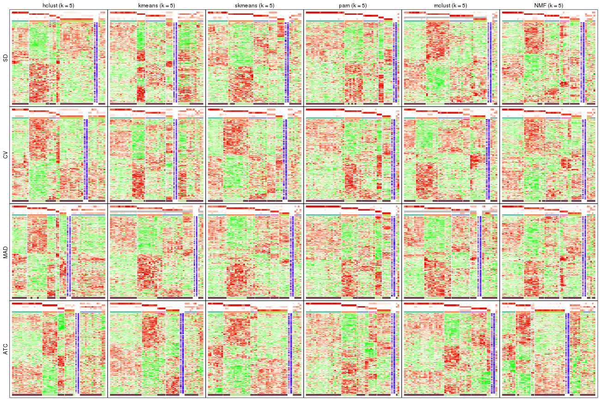
collect_plots(res_list, k = 6, fun = get_signatures, mc.cores = 4)
The statistics used for measuring the stability of consensus partitioning. (How are they defined?)
get_stats(res_list, k = 2)
#> k 1-PAC mean_silhouette concordance area_increased Rand Jaccard
#> SD:NMF 2 1.000 0.999 0.999 0.450 0.551 0.551
#> CV:NMF 2 1.000 0.993 0.997 0.451 0.551 0.551
#> MAD:NMF 2 1.000 0.990 0.996 0.452 0.551 0.551
#> ATC:NMF 2 1.000 1.000 1.000 0.449 0.551 0.551
#> SD:skmeans 2 1.000 0.970 0.988 0.463 0.538 0.538
#> CV:skmeans 2 1.000 0.995 0.998 0.462 0.538 0.538
#> MAD:skmeans 2 1.000 0.962 0.986 0.463 0.538 0.538
#> ATC:skmeans 2 1.000 0.992 0.997 0.460 0.538 0.538
#> SD:mclust 2 1.000 0.999 0.999 0.449 0.551 0.551
#> CV:mclust 2 1.000 0.996 0.998 0.450 0.551 0.551
#> MAD:mclust 2 1.000 0.997 0.998 0.450 0.551 0.551
#> ATC:mclust 2 1.000 0.965 0.987 0.463 0.538 0.538
#> SD:kmeans 2 1.000 1.000 1.000 0.449 0.551 0.551
#> CV:kmeans 2 1.000 1.000 1.000 0.449 0.551 0.551
#> MAD:kmeans 2 1.000 1.000 1.000 0.449 0.551 0.551
#> ATC:kmeans 2 1.000 0.994 0.993 0.434 0.566 0.566
#> SD:pam 2 0.922 0.945 0.978 0.424 0.581 0.581
#> CV:pam 2 1.000 0.965 0.985 0.426 0.581 0.581
#> MAD:pam 2 0.919 0.901 0.963 0.418 0.566 0.566
#> ATC:pam 2 1.000 0.979 0.991 0.412 0.581 0.581
#> SD:hclust 2 1.000 0.958 0.983 0.416 0.599 0.599
#> CV:hclust 2 0.751 0.921 0.966 0.428 0.581 0.581
#> MAD:hclust 2 0.991 0.959 0.980 0.412 0.599 0.599
#> ATC:hclust 2 1.000 0.957 0.983 0.453 0.551 0.551
get_stats(res_list, k = 3)
#> k 1-PAC mean_silhouette concordance area_increased Rand Jaccard
#> SD:NMF 3 1.000 0.964 0.986 0.4865 0.742 0.548
#> CV:NMF 3 1.000 0.968 0.989 0.4837 0.735 0.536
#> MAD:NMF 3 0.901 0.903 0.951 0.4727 0.756 0.565
#> ATC:NMF 3 0.927 0.964 0.981 0.4289 0.811 0.658
#> SD:skmeans 3 1.000 0.991 0.995 0.4678 0.756 0.558
#> CV:skmeans 3 1.000 0.996 0.998 0.4710 0.756 0.558
#> MAD:skmeans 3 1.000 0.964 0.985 0.4660 0.761 0.565
#> ATC:skmeans 3 1.000 0.961 0.985 0.4126 0.799 0.631
#> SD:mclust 3 0.836 0.910 0.955 0.4816 0.742 0.548
#> CV:mclust 3 0.636 0.834 0.902 0.4417 0.751 0.563
#> MAD:mclust 3 0.912 0.922 0.945 0.4722 0.778 0.598
#> ATC:mclust 3 0.677 0.845 0.927 0.1858 0.916 0.846
#> SD:kmeans 3 0.694 0.905 0.902 0.4151 0.742 0.548
#> CV:kmeans 3 0.656 0.893 0.902 0.4363 0.742 0.548
#> MAD:kmeans 3 0.639 0.767 0.855 0.4097 0.742 0.548
#> ATC:kmeans 3 0.728 0.897 0.899 0.4207 0.783 0.616
#> SD:pam 3 0.804 0.901 0.937 0.1470 0.973 0.953
#> CV:pam 3 0.690 0.855 0.911 0.1610 0.973 0.953
#> MAD:pam 3 0.655 0.843 0.862 0.2869 0.959 0.927
#> ATC:pam 3 0.977 0.941 0.975 0.2533 0.874 0.788
#> SD:hclust 3 0.884 0.913 0.941 0.1104 0.982 0.970
#> CV:hclust 3 0.830 0.896 0.945 0.0922 0.943 0.907
#> MAD:hclust 3 0.531 0.614 0.753 0.3512 0.776 0.626
#> ATC:hclust 3 0.776 0.844 0.904 0.2200 0.906 0.830
get_stats(res_list, k = 4)
#> k 1-PAC mean_silhouette concordance area_increased Rand Jaccard
#> SD:NMF 4 0.851 0.853 0.928 0.1259 0.894 0.692
#> CV:NMF 4 0.895 0.866 0.936 0.1293 0.867 0.619
#> MAD:NMF 4 0.758 0.760 0.893 0.1248 0.860 0.610
#> ATC:NMF 4 0.673 0.717 0.849 0.1277 0.882 0.687
#> SD:skmeans 4 0.827 0.864 0.912 0.0975 0.897 0.692
#> CV:skmeans 4 0.802 0.875 0.906 0.0991 0.897 0.692
#> MAD:skmeans 4 0.793 0.697 0.810 0.0982 0.877 0.645
#> ATC:skmeans 4 0.932 0.894 0.948 0.0935 0.920 0.777
#> SD:mclust 4 0.780 0.815 0.906 0.1152 0.873 0.643
#> CV:mclust 4 0.802 0.859 0.924 0.1520 0.857 0.610
#> MAD:mclust 4 0.777 0.704 0.846 0.0965 0.915 0.748
#> ATC:mclust 4 0.949 0.896 0.955 0.2664 0.824 0.627
#> SD:kmeans 4 0.652 0.796 0.832 0.1317 1.000 1.000
#> CV:kmeans 4 0.659 0.777 0.831 0.1139 1.000 1.000
#> MAD:kmeans 4 0.626 0.566 0.809 0.1421 0.984 0.952
#> ATC:kmeans 4 0.898 0.881 0.927 0.1210 0.897 0.725
#> SD:pam 4 0.690 0.670 0.812 0.2844 0.784 0.611
#> CV:pam 4 0.663 0.714 0.859 0.2418 0.857 0.746
#> MAD:pam 4 0.800 0.890 0.935 0.1739 0.864 0.741
#> ATC:pam 4 0.669 0.792 0.880 0.1712 1.000 1.000
#> SD:hclust 4 0.566 0.715 0.832 0.4057 0.755 0.578
#> CV:hclust 4 0.537 0.590 0.703 0.3709 0.776 0.614
#> MAD:hclust 4 0.587 0.686 0.833 0.1917 0.837 0.616
#> ATC:hclust 4 0.706 0.837 0.894 0.0993 0.950 0.891
get_stats(res_list, k = 5)
#> k 1-PAC mean_silhouette concordance area_increased Rand Jaccard
#> SD:NMF 5 0.793 0.723 0.861 0.0587 0.878 0.573
#> CV:NMF 5 0.795 0.764 0.877 0.0540 0.895 0.616
#> MAD:NMF 5 0.739 0.733 0.855 0.0621 0.913 0.684
#> ATC:NMF 5 0.676 0.629 0.811 0.0510 0.939 0.798
#> SD:skmeans 5 0.827 0.725 0.834 0.0559 0.901 0.649
#> CV:skmeans 5 0.808 0.706 0.794 0.0534 0.901 0.649
#> MAD:skmeans 5 0.798 0.772 0.856 0.0580 0.904 0.658
#> ATC:skmeans 5 0.776 0.766 0.849 0.0678 0.977 0.919
#> SD:mclust 5 0.737 0.762 0.838 0.0503 0.977 0.913
#> CV:mclust 5 0.815 0.767 0.862 0.0402 0.935 0.757
#> MAD:mclust 5 0.719 0.656 0.800 0.0596 0.945 0.806
#> ATC:mclust 5 0.918 0.887 0.878 0.0541 0.971 0.908
#> SD:kmeans 5 0.645 0.574 0.779 0.0678 0.935 0.805
#> CV:kmeans 5 0.635 0.564 0.780 0.0682 0.925 0.776
#> MAD:kmeans 5 0.637 0.694 0.758 0.0694 0.931 0.789
#> ATC:kmeans 5 0.748 0.654 0.795 0.0988 0.940 0.805
#> SD:pam 5 0.924 0.918 0.965 0.1753 0.876 0.664
#> CV:pam 5 0.926 0.890 0.954 0.1828 0.844 0.632
#> MAD:pam 5 0.912 0.894 0.955 0.1819 0.824 0.571
#> ATC:pam 5 0.767 0.908 0.899 0.1930 0.764 0.506
#> SD:hclust 5 0.641 0.778 0.867 0.1110 0.888 0.696
#> CV:hclust 5 0.597 0.612 0.770 0.1005 0.931 0.805
#> MAD:hclust 5 0.669 0.601 0.785 0.1200 0.961 0.874
#> ATC:hclust 5 0.713 0.722 0.827 0.1983 0.834 0.593
get_stats(res_list, k = 6)
#> k 1-PAC mean_silhouette concordance area_increased Rand Jaccard
#> SD:NMF 6 0.786 0.716 0.795 0.0382 0.962 0.820
#> CV:NMF 6 0.825 0.748 0.850 0.0376 0.977 0.888
#> MAD:NMF 6 0.724 0.551 0.745 0.0437 0.962 0.827
#> ATC:NMF 6 0.621 0.504 0.722 0.0535 0.901 0.660
#> SD:skmeans 6 0.792 0.623 0.787 0.0422 0.988 0.944
#> CV:skmeans 6 0.783 0.653 0.743 0.0400 0.940 0.748
#> MAD:skmeans 6 0.746 0.594 0.767 0.0392 0.973 0.877
#> ATC:skmeans 6 0.765 0.551 0.754 0.0468 0.919 0.701
#> SD:mclust 6 0.793 0.762 0.846 0.0378 0.928 0.731
#> CV:mclust 6 0.850 0.814 0.872 0.0386 0.949 0.780
#> MAD:mclust 6 0.641 0.417 0.685 0.0444 0.872 0.537
#> ATC:mclust 6 0.862 0.844 0.912 0.0816 0.919 0.715
#> SD:kmeans 6 0.701 0.457 0.696 0.0481 0.910 0.674
#> CV:kmeans 6 0.684 0.542 0.721 0.0464 0.971 0.889
#> MAD:kmeans 6 0.690 0.458 0.635 0.0483 0.913 0.670
#> ATC:kmeans 6 0.739 0.688 0.795 0.0553 0.955 0.831
#> SD:pam 6 0.816 0.773 0.895 0.0417 0.975 0.911
#> CV:pam 6 0.892 0.854 0.927 0.0396 0.980 0.927
#> MAD:pam 6 0.781 0.756 0.885 0.0696 0.921 0.707
#> ATC:pam 6 0.907 0.945 0.963 0.0484 0.961 0.850
#> SD:hclust 6 0.621 0.576 0.795 0.0372 0.992 0.971
#> CV:hclust 6 0.567 0.409 0.723 0.0466 0.817 0.511
#> MAD:hclust 6 0.665 0.602 0.733 0.0497 0.897 0.647
#> ATC:hclust 6 0.771 0.757 0.878 0.0438 0.964 0.855
Following heatmap plots the partition for each combination of methods and the lightness correspond to the silhouette scores for samples in each method. On top the consensus subgroup is inferred from all methods by taking the mean silhouette scores as weight.
collect_stats(res_list, k = 2)
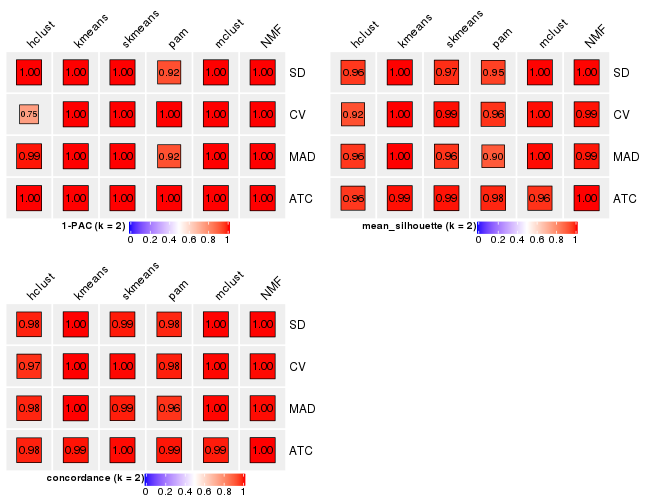
collect_stats(res_list, k = 3)

collect_stats(res_list, k = 4)
collect_stats(res_list, k = 5)
collect_stats(res_list, k = 6)
Collect partitions from all methods:
collect_classes(res_list, k = 2)

collect_classes(res_list, k = 3)
collect_classes(res_list, k = 4)
collect_classes(res_list, k = 5)
collect_classes(res_list, k = 6)
Overlap of top rows from different top-row methods:
top_rows_overlap(res_list, top_n = 1000, method = "euler")
top_rows_overlap(res_list, top_n = 2000, method = "euler")
top_rows_overlap(res_list, top_n = 3000, method = "euler")
top_rows_overlap(res_list, top_n = 4000, method = "euler")
top_rows_overlap(res_list, top_n = 5000, method = "euler")
Also visualize the correspondance of rankings between different top-row methods:
top_rows_overlap(res_list, top_n = 1000, method = "correspondance")
top_rows_overlap(res_list, top_n = 2000, method = "correspondance")
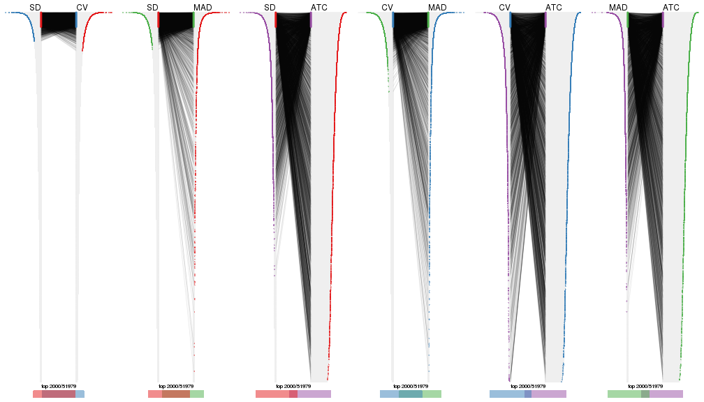
top_rows_overlap(res_list, top_n = 3000, method = "correspondance")
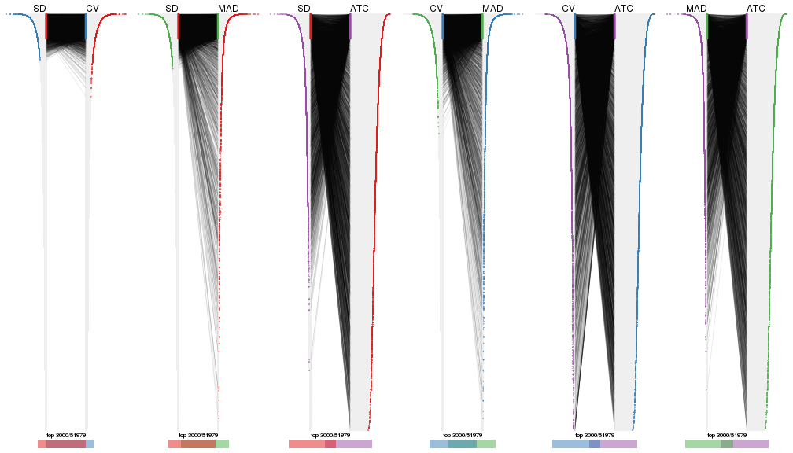
top_rows_overlap(res_list, top_n = 4000, method = "correspondance")

top_rows_overlap(res_list, top_n = 5000, method = "correspondance")
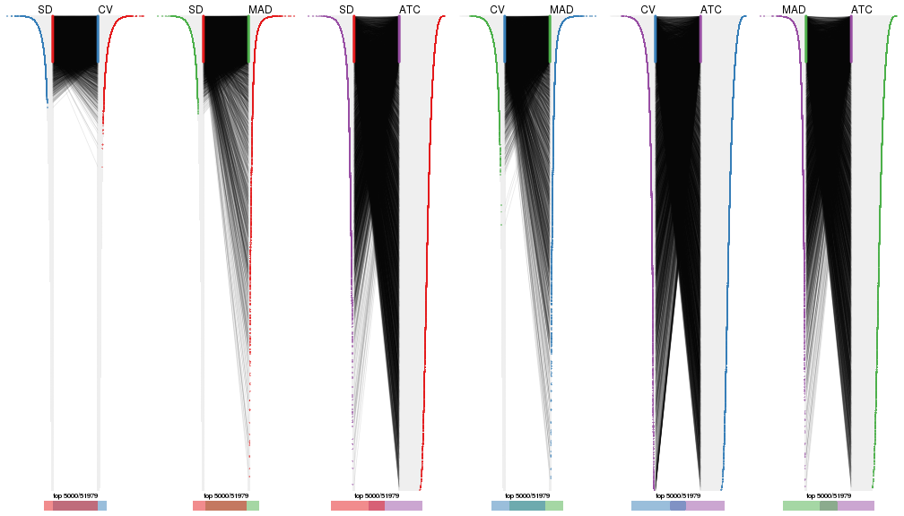
Heatmaps of the top rows:
top_rows_heatmap(res_list, top_n = 1000)
top_rows_heatmap(res_list, top_n = 2000)
top_rows_heatmap(res_list, top_n = 3000)
top_rows_heatmap(res_list, top_n = 4000)
top_rows_heatmap(res_list, top_n = 5000)
Test correlation between subgroups and known annotations. If the known annotation is numeric, one-way ANOVA test is applied, and if the known annotation is discrete, chi-squared contingency table test is applied.
test_to_known_factors(res_list, k = 2)
#> n disease.state(p) k
#> SD:NMF 52 1.06e-07 2
#> CV:NMF 52 1.06e-07 2
#> MAD:NMF 52 1.06e-07 2
#> ATC:NMF 52 1.06e-07 2
#> SD:skmeans 52 3.73e-07 2
#> CV:skmeans 52 3.73e-07 2
#> MAD:skmeans 50 2.14e-07 2
#> ATC:skmeans 52 3.73e-07 2
#> SD:mclust 52 1.06e-07 2
#> CV:mclust 52 1.06e-07 2
#> MAD:mclust 52 1.06e-07 2
#> ATC:mclust 51 5.21e-07 2
#> SD:kmeans 52 1.06e-07 2
#> CV:kmeans 52 1.06e-07 2
#> MAD:kmeans 52 1.06e-07 2
#> ATC:kmeans 52 2.58e-08 2
#> SD:pam 50 1.14e-08 2
#> CV:pam 52 5.22e-09 2
#> MAD:pam 48 6.08e-10 2
#> ATC:pam 52 5.22e-09 2
#> SD:hclust 51 1.28e-09 2
#> CV:hclust 51 1.28e-09 2
#> MAD:hclust 52 8.46e-10 2
#> ATC:hclust 52 1.06e-07 2
test_to_known_factors(res_list, k = 3)
#> n disease.state(p) k
#> SD:NMF 51 6.64e-09 3
#> CV:NMF 51 6.64e-09 3
#> MAD:NMF 50 1.00e-08 3
#> ATC:NMF 52 1.06e-07 3
#> SD:skmeans 52 1.06e-07 3
#> CV:skmeans 52 1.06e-07 3
#> MAD:skmeans 51 1.53e-07 3
#> ATC:skmeans 51 1.53e-07 3
#> SD:mclust 51 6.64e-09 3
#> CV:mclust 50 1.00e-08 3
#> MAD:mclust 51 3.52e-08 3
#> ATC:mclust 51 8.42e-12 3
#> SD:kmeans 52 4.41e-09 3
#> CV:kmeans 52 4.41e-09 3
#> MAD:kmeans 44 1.18e-07 3
#> ATC:kmeans 52 2.39e-08 3
#> SD:pam 51 5.32e-09 3
#> CV:pam 49 1.47e-08 3
#> MAD:pam 51 9.94e-09 3
#> ATC:pam 52 3.49e-10 3
#> SD:hclust 51 8.65e-10 3
#> CV:hclust 51 8.65e-10 3
#> MAD:hclust 35 1.13e-06 3
#> ATC:hclust 49 7.63e-08 3
test_to_known_factors(res_list, k = 4)
#> n disease.state(p) k
#> SD:NMF 49 9.74e-08 4
#> CV:NMF 48 1.39e-06 4
#> MAD:NMF 46 4.24e-07 4
#> ATC:NMF 44 5.49e-07 4
#> SD:skmeans 52 4.94e-07 4
#> CV:skmeans 52 4.94e-07 4
#> MAD:skmeans 43 1.24e-05 4
#> ATC:skmeans 50 1.01e-06 4
#> SD:mclust 48 1.11e-07 4
#> CV:mclust 50 4.57e-07 4
#> MAD:mclust 40 6.25e-07 4
#> ATC:mclust 48 2.13e-10 4
#> SD:kmeans 52 4.41e-09 4
#> CV:kmeans 48 2.27e-08 4
#> MAD:kmeans 42 2.71e-07 4
#> ATC:kmeans 49 1.30e-10 4
#> SD:pam 43 6.54e-07 4
#> CV:pam 47 1.58e-07 4
#> MAD:pam 52 3.33e-08 4
#> ATC:pam 45 8.09e-09 4
#> SD:hclust 48 1.64e-08 4
#> CV:hclust 35 4.40e-06 4
#> MAD:hclust 44 9.11e-08 4
#> ATC:hclust 51 4.32e-10 4
test_to_known_factors(res_list, k = 5)
#> n disease.state(p) k
#> SD:NMF 46 2.75e-05 5
#> CV:NMF 47 1.34e-05 5
#> MAD:NMF 47 1.40e-05 5
#> ATC:NMF 37 5.89e-07 5
#> SD:skmeans 45 1.36e-06 5
#> CV:skmeans 44 2.01e-06 5
#> MAD:skmeans 48 7.20e-06 5
#> ATC:skmeans 47 2.76e-06 5
#> SD:mclust 49 9.74e-08 5
#> CV:mclust 48 1.65e-05 5
#> MAD:mclust 43 3.48e-06 5
#> ATC:mclust 51 2.23e-10 5
#> SD:kmeans 37 4.60e-08 5
#> CV:kmeans 37 7.36e-07 5
#> MAD:kmeans 49 7.41e-08 5
#> ATC:kmeans 41 6.54e-09 5
#> SD:pam 51 1.07e-07 5
#> CV:pam 50 1.91e-07 5
#> MAD:pam 50 1.25e-07 5
#> ATC:pam 50 1.95e-08 5
#> SD:hclust 48 6.61e-08 5
#> CV:hclust 42 8.06e-07 5
#> MAD:hclust 32 5.30e-05 5
#> ATC:hclust 38 8.58e-07 5
test_to_known_factors(res_list, k = 6)
#> n disease.state(p) k
#> SD:NMF 45 1.24e-05 6
#> CV:NMF 46 1.21e-05 6
#> MAD:NMF 32 1.46e-04 6
#> ATC:NMF 29 5.04e-07 6
#> SD:skmeans 41 1.36e-06 6
#> CV:skmeans 42 1.32e-05 6
#> MAD:skmeans 40 1.01e-04 6
#> ATC:skmeans 35 2.15e-05 6
#> SD:mclust 47 1.08e-06 6
#> CV:mclust 49 2.09e-05 6
#> MAD:mclust 24 3.99e-05 6
#> ATC:mclust 50 1.39e-09 6
#> SD:kmeans 21 1.05e-04 6
#> CV:kmeans 38 2.77e-07 6
#> MAD:kmeans 23 4.04e-05 6
#> ATC:kmeans 45 3.98e-09 6
#> SD:pam 48 1.34e-08 6
#> CV:pam 51 9.85e-09 6
#> MAD:pam 44 2.19e-06 6
#> ATC:pam 52 4.92e-09 6
#> SD:hclust 36 7.49e-08 6
#> CV:hclust 27 4.46e-04 6
#> MAD:hclust 42 2.57e-06 6
#> ATC:hclust 40 9.36e-07 6
The object with results only for a single top-value method and a single partition method can be extracted as:
res = res_list["SD", "hclust"]
# you can also extract it by
# res = res_list["SD:hclust"]
A summary of res and all the functions that can be applied to it:
res
#> A 'ConsensusPartition' object with k = 2, 3, 4, 5, 6.
#> On a matrix with 51979 rows and 52 columns.
#> Top rows (1000, 2000, 3000, 4000, 5000) are extracted by 'SD' method.
#> Subgroups are detected by 'hclust' method.
#> Performed in total 1250 partitions by row resampling.
#> Best k for subgroups seems to be 2.
#>
#> Following methods can be applied to this 'ConsensusPartition' object:
#> [1] "cola_report" "collect_classes" "collect_plots"
#> [4] "collect_stats" "colnames" "compare_signatures"
#> [7] "consensus_heatmap" "dimension_reduction" "functional_enrichment"
#> [10] "get_anno_col" "get_anno" "get_classes"
#> [13] "get_consensus" "get_matrix" "get_membership"
#> [16] "get_param" "get_signatures" "get_stats"
#> [19] "is_best_k" "is_stable_k" "membership_heatmap"
#> [22] "ncol" "nrow" "plot_ecdf"
#> [25] "rownames" "select_partition_number" "show"
#> [28] "suggest_best_k" "test_to_known_factors"
collect_plots() function collects all the plots made from res for all k (number of partitions)
into one single page to provide an easy and fast comparison between different k.
collect_plots(res)
The plots are:
k and the heatmap of
predicted classes for each k.k.k.k.All the plots in panels can be made by individual functions and they are plotted later in this section.
select_partition_number() produces several plots showing different
statistics for choosing “optimized” k. There are following statistics:
k;k, the area increased is defined as \(A_k - A_{k-1}\).The detailed explanations of these statistics can be found in the cola vignette.
Generally speaking, lower PAC score, higher mean silhouette score or higher
concordance corresponds to better partition. Rand index and Jaccard index
measure how similar the current partition is compared to partition with k-1.
If they are too similar, we won't accept k is better than k-1.
select_partition_number(res)
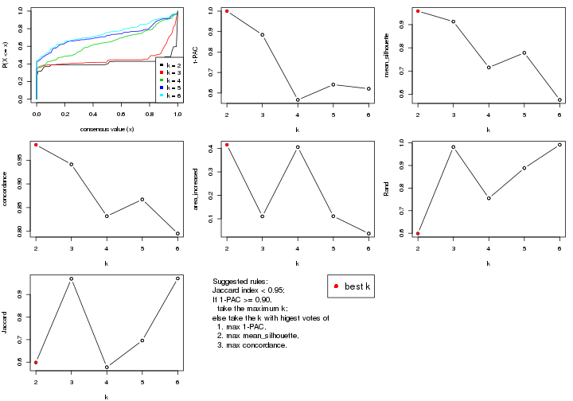
The numeric values for all these statistics can be obtained by get_stats().
get_stats(res)
#> k 1-PAC mean_silhouette concordance area_increased Rand Jaccard
#> 2 2 1.000 0.958 0.983 0.4156 0.599 0.599
#> 3 3 0.884 0.913 0.941 0.1104 0.982 0.970
#> 4 4 0.566 0.715 0.832 0.4057 0.755 0.578
#> 5 5 0.641 0.778 0.867 0.1110 0.888 0.696
#> 6 6 0.621 0.576 0.795 0.0372 0.992 0.971
suggest_best_k() suggests the best \(k\) based on these statistics. The rules are as follows:
suggest_best_k(res)
#> [1] 2
Following shows the table of the partitions (You need to click the show/hide
code output link to see it). The membership matrix (columns with name p*)
is inferred by
clue::cl_consensus()
function with the SE method. Basically the value in the membership matrix
represents the probability to belong to a certain group. The finall class
label for an item is determined with the group with highest probability it
belongs to.
In get_classes() function, the entropy is calculated from the membership
matrix and the silhouette score is calculated from the consensus matrix.
cbind(get_classes(res, k = 2), get_membership(res, k = 2))
#> class entropy silhouette p1 p2
#> GSM710838 2 0.0000 0.9984 0.000 1.000
#> GSM710840 2 0.0000 0.9984 0.000 1.000
#> GSM710842 2 0.0672 0.9926 0.008 0.992
#> GSM710844 2 0.0000 0.9984 0.000 1.000
#> GSM710847 2 0.0000 0.9984 0.000 1.000
#> GSM710848 2 0.0672 0.9926 0.008 0.992
#> GSM710850 2 0.0000 0.9984 0.000 1.000
#> GSM710931 2 0.0000 0.9984 0.000 1.000
#> GSM710932 2 0.0000 0.9984 0.000 1.000
#> GSM710933 2 0.0000 0.9984 0.000 1.000
#> GSM710934 2 0.0000 0.9984 0.000 1.000
#> GSM710935 2 0.0000 0.9984 0.000 1.000
#> GSM710851 1 0.0000 0.9758 1.000 0.000
#> GSM710852 1 0.2423 0.9487 0.960 0.040
#> GSM710854 2 0.0000 0.9984 0.000 1.000
#> GSM710856 1 0.0000 0.9758 1.000 0.000
#> GSM710857 1 0.0000 0.9758 1.000 0.000
#> GSM710859 1 0.0000 0.9758 1.000 0.000
#> GSM710861 1 0.0000 0.9758 1.000 0.000
#> GSM710864 1 0.2603 0.9455 0.956 0.044
#> GSM710866 1 0.0000 0.9758 1.000 0.000
#> GSM710868 1 0.2603 0.9455 0.956 0.044
#> GSM710870 1 0.0000 0.9758 1.000 0.000
#> GSM710872 1 0.0000 0.9758 1.000 0.000
#> GSM710874 1 0.0000 0.9758 1.000 0.000
#> GSM710876 1 0.0000 0.9758 1.000 0.000
#> GSM710878 1 0.0000 0.9758 1.000 0.000
#> GSM710880 1 0.2236 0.9516 0.964 0.036
#> GSM710882 1 0.0000 0.9758 1.000 0.000
#> GSM710884 1 0.0000 0.9758 1.000 0.000
#> GSM710887 1 0.0000 0.9758 1.000 0.000
#> GSM710889 1 0.0000 0.9758 1.000 0.000
#> GSM710891 1 0.4562 0.8901 0.904 0.096
#> GSM710893 1 0.2603 0.9455 0.956 0.044
#> GSM710895 1 0.0000 0.9758 1.000 0.000
#> GSM710897 1 0.0000 0.9758 1.000 0.000
#> GSM710899 1 0.4562 0.8901 0.904 0.096
#> GSM710901 1 0.0000 0.9758 1.000 0.000
#> GSM710903 1 0.0000 0.9758 1.000 0.000
#> GSM710904 1 0.0000 0.9758 1.000 0.000
#> GSM710907 1 0.0000 0.9758 1.000 0.000
#> GSM710909 1 0.0000 0.9758 1.000 0.000
#> GSM710910 1 0.0000 0.9758 1.000 0.000
#> GSM710912 2 0.0376 0.9958 0.004 0.996
#> GSM710914 1 0.0000 0.9758 1.000 0.000
#> GSM710917 1 0.9996 0.0713 0.512 0.488
#> GSM710919 1 0.0000 0.9758 1.000 0.000
#> GSM710921 1 0.0000 0.9758 1.000 0.000
#> GSM710923 1 0.0000 0.9758 1.000 0.000
#> GSM710925 1 0.0000 0.9758 1.000 0.000
#> GSM710927 1 0.0000 0.9758 1.000 0.000
#> GSM710929 1 0.0000 0.9758 1.000 0.000
cbind(get_classes(res, k = 3), get_membership(res, k = 3))
#> class entropy silhouette p1 p2 p3
#> GSM710838 2 0.0892 0.938 0.000 0.980 0.020
#> GSM710840 2 0.0000 0.941 0.000 1.000 0.000
#> GSM710842 2 0.4002 0.839 0.000 0.840 0.160
#> GSM710844 2 0.0000 0.941 0.000 1.000 0.000
#> GSM710847 2 0.0000 0.941 0.000 1.000 0.000
#> GSM710848 3 0.3619 0.943 0.000 0.136 0.864
#> GSM710850 2 0.0000 0.941 0.000 1.000 0.000
#> GSM710931 2 0.0000 0.941 0.000 1.000 0.000
#> GSM710932 2 0.1529 0.932 0.000 0.960 0.040
#> GSM710933 2 0.0000 0.941 0.000 1.000 0.000
#> GSM710934 3 0.4291 0.941 0.000 0.180 0.820
#> GSM710935 2 0.3192 0.895 0.000 0.888 0.112
#> GSM710851 1 0.0000 0.949 1.000 0.000 0.000
#> GSM710852 1 0.2537 0.922 0.920 0.000 0.080
#> GSM710854 2 0.3192 0.895 0.000 0.888 0.112
#> GSM710856 1 0.0424 0.948 0.992 0.000 0.008
#> GSM710857 1 0.0424 0.948 0.992 0.000 0.008
#> GSM710859 1 0.3116 0.901 0.892 0.000 0.108
#> GSM710861 1 0.1529 0.941 0.960 0.000 0.040
#> GSM710864 1 0.2625 0.919 0.916 0.000 0.084
#> GSM710866 1 0.1529 0.941 0.960 0.000 0.040
#> GSM710868 1 0.2625 0.919 0.916 0.000 0.084
#> GSM710870 1 0.0424 0.948 0.992 0.000 0.008
#> GSM710872 1 0.3116 0.901 0.892 0.000 0.108
#> GSM710874 1 0.0000 0.949 1.000 0.000 0.000
#> GSM710876 1 0.0592 0.947 0.988 0.000 0.012
#> GSM710878 1 0.1529 0.941 0.960 0.000 0.040
#> GSM710880 1 0.2448 0.924 0.924 0.000 0.076
#> GSM710882 1 0.0592 0.948 0.988 0.000 0.012
#> GSM710884 1 0.0592 0.948 0.988 0.000 0.012
#> GSM710887 1 0.0592 0.948 0.988 0.000 0.012
#> GSM710889 1 0.0424 0.948 0.992 0.000 0.008
#> GSM710891 1 0.5355 0.802 0.800 0.032 0.168
#> GSM710893 1 0.2625 0.919 0.916 0.000 0.084
#> GSM710895 1 0.2261 0.925 0.932 0.000 0.068
#> GSM710897 1 0.0592 0.948 0.988 0.000 0.012
#> GSM710899 1 0.5355 0.802 0.800 0.032 0.168
#> GSM710901 1 0.0592 0.947 0.988 0.000 0.012
#> GSM710903 1 0.0000 0.949 1.000 0.000 0.000
#> GSM710904 1 0.0592 0.948 0.988 0.000 0.012
#> GSM710907 1 0.1529 0.941 0.960 0.000 0.040
#> GSM710909 1 0.0592 0.947 0.988 0.000 0.012
#> GSM710910 1 0.1163 0.944 0.972 0.000 0.028
#> GSM710912 2 0.3038 0.900 0.000 0.896 0.104
#> GSM710914 1 0.0000 0.949 1.000 0.000 0.000
#> GSM710917 1 0.9148 0.100 0.504 0.336 0.160
#> GSM710919 1 0.0592 0.948 0.988 0.000 0.012
#> GSM710921 1 0.1163 0.944 0.972 0.000 0.028
#> GSM710923 1 0.1529 0.941 0.960 0.000 0.040
#> GSM710925 1 0.2261 0.925 0.932 0.000 0.068
#> GSM710927 1 0.1163 0.944 0.972 0.000 0.028
#> GSM710929 1 0.1163 0.944 0.972 0.000 0.028
cbind(get_classes(res, k = 4), get_membership(res, k = 4))
#> class entropy silhouette p1 p2 p3 p4
#> GSM710838 2 0.1792 0.8986 0.000 0.932 0.000 0.068
#> GSM710840 2 0.0000 0.9179 0.000 1.000 0.000 0.000
#> GSM710842 2 0.4764 0.7517 0.032 0.748 0.000 0.220
#> GSM710844 2 0.0000 0.9179 0.000 1.000 0.000 0.000
#> GSM710847 2 0.0000 0.9179 0.000 1.000 0.000 0.000
#> GSM710848 4 0.3081 0.9181 0.048 0.064 0.000 0.888
#> GSM710850 2 0.0000 0.9179 0.000 1.000 0.000 0.000
#> GSM710931 2 0.0592 0.9161 0.016 0.984 0.000 0.000
#> GSM710932 2 0.1940 0.9030 0.000 0.924 0.000 0.076
#> GSM710933 2 0.0000 0.9179 0.000 1.000 0.000 0.000
#> GSM710934 4 0.3984 0.9136 0.040 0.132 0.000 0.828
#> GSM710935 2 0.3384 0.8728 0.024 0.860 0.000 0.116
#> GSM710851 3 0.4103 0.7587 0.256 0.000 0.744 0.000
#> GSM710852 1 0.1109 0.7960 0.968 0.000 0.028 0.004
#> GSM710854 2 0.3384 0.8728 0.024 0.860 0.000 0.116
#> GSM710856 3 0.3942 0.7621 0.236 0.000 0.764 0.000
#> GSM710857 3 0.4454 0.6835 0.308 0.000 0.692 0.000
#> GSM710859 3 0.3652 0.5843 0.052 0.000 0.856 0.092
#> GSM710861 1 0.1716 0.8179 0.936 0.000 0.064 0.000
#> GSM710864 1 0.1004 0.7925 0.972 0.000 0.024 0.004
#> GSM710866 1 0.1716 0.8179 0.936 0.000 0.064 0.000
#> GSM710868 1 0.1004 0.7925 0.972 0.000 0.024 0.004
#> GSM710870 3 0.3942 0.7621 0.236 0.000 0.764 0.000
#> GSM710872 3 0.3652 0.5843 0.052 0.000 0.856 0.092
#> GSM710874 3 0.4103 0.7587 0.256 0.000 0.744 0.000
#> GSM710876 3 0.4477 0.6508 0.312 0.000 0.688 0.000
#> GSM710878 1 0.1716 0.8179 0.936 0.000 0.064 0.000
#> GSM710880 1 0.2973 0.7222 0.856 0.000 0.144 0.000
#> GSM710882 1 0.4998 -0.1859 0.512 0.000 0.488 0.000
#> GSM710884 3 0.4134 0.7525 0.260 0.000 0.740 0.000
#> GSM710887 1 0.4761 0.2942 0.628 0.000 0.372 0.000
#> GSM710889 3 0.3942 0.7621 0.236 0.000 0.764 0.000
#> GSM710891 3 0.5603 0.5004 0.088 0.012 0.744 0.156
#> GSM710893 1 0.1004 0.7925 0.972 0.000 0.024 0.004
#> GSM710895 3 0.3105 0.7440 0.120 0.000 0.868 0.012
#> GSM710897 3 0.4134 0.7525 0.260 0.000 0.740 0.000
#> GSM710899 3 0.5603 0.5004 0.088 0.012 0.744 0.156
#> GSM710901 3 0.4564 0.6384 0.328 0.000 0.672 0.000
#> GSM710903 3 0.4103 0.7587 0.256 0.000 0.744 0.000
#> GSM710904 3 0.4134 0.7525 0.260 0.000 0.740 0.000
#> GSM710907 1 0.1716 0.8179 0.936 0.000 0.064 0.000
#> GSM710909 3 0.4564 0.6384 0.328 0.000 0.672 0.000
#> GSM710910 3 0.2412 0.7428 0.084 0.000 0.908 0.008
#> GSM710912 2 0.3485 0.8716 0.028 0.856 0.000 0.116
#> GSM710914 3 0.4103 0.7587 0.256 0.000 0.744 0.000
#> GSM710917 3 0.7898 -0.0288 0.016 0.260 0.504 0.220
#> GSM710919 1 0.4998 -0.1859 0.512 0.000 0.488 0.000
#> GSM710921 3 0.2412 0.7428 0.084 0.000 0.908 0.008
#> GSM710923 1 0.1716 0.8179 0.936 0.000 0.064 0.000
#> GSM710925 3 0.3105 0.7440 0.120 0.000 0.868 0.012
#> GSM710927 3 0.2412 0.7428 0.084 0.000 0.908 0.008
#> GSM710929 3 0.2412 0.7428 0.084 0.000 0.908 0.008
cbind(get_classes(res, k = 5), get_membership(res, k = 5))
#> class entropy silhouette p1 p2 p3 p4 p5
#> GSM710838 2 0.2329 0.842 0.000 0.876 0.000 0.124 0.000
#> GSM710840 2 0.0000 0.892 0.000 1.000 0.000 0.000 0.000
#> GSM710842 2 0.4708 0.668 0.000 0.668 0.040 0.292 0.000
#> GSM710844 2 0.0794 0.887 0.000 0.972 0.000 0.028 0.000
#> GSM710847 2 0.0000 0.892 0.000 1.000 0.000 0.000 0.000
#> GSM710848 4 0.0955 0.890 0.028 0.000 0.004 0.968 0.000
#> GSM710850 2 0.0794 0.887 0.000 0.972 0.000 0.028 0.000
#> GSM710931 2 0.0955 0.892 0.000 0.968 0.028 0.004 0.000
#> GSM710932 2 0.2249 0.875 0.000 0.896 0.008 0.096 0.000
#> GSM710933 2 0.0794 0.887 0.000 0.972 0.000 0.028 0.000
#> GSM710934 4 0.2450 0.892 0.028 0.076 0.000 0.896 0.000
#> GSM710935 2 0.3346 0.855 0.000 0.844 0.064 0.092 0.000
#> GSM710851 5 0.2304 0.823 0.100 0.000 0.008 0.000 0.892
#> GSM710852 1 0.0404 0.876 0.988 0.000 0.000 0.000 0.012
#> GSM710854 2 0.3346 0.855 0.000 0.844 0.064 0.092 0.000
#> GSM710856 5 0.1341 0.824 0.056 0.000 0.000 0.000 0.944
#> GSM710857 5 0.2377 0.796 0.128 0.000 0.000 0.000 0.872
#> GSM710859 3 0.3424 0.829 0.000 0.000 0.760 0.000 0.240
#> GSM710861 1 0.1270 0.892 0.948 0.000 0.000 0.000 0.052
#> GSM710864 1 0.0290 0.873 0.992 0.000 0.000 0.000 0.008
#> GSM710866 1 0.1270 0.892 0.948 0.000 0.000 0.000 0.052
#> GSM710868 1 0.0290 0.873 0.992 0.000 0.000 0.000 0.008
#> GSM710870 5 0.1270 0.823 0.052 0.000 0.000 0.000 0.948
#> GSM710872 3 0.3424 0.829 0.000 0.000 0.760 0.000 0.240
#> GSM710874 5 0.2304 0.823 0.100 0.000 0.008 0.000 0.892
#> GSM710876 5 0.3182 0.774 0.032 0.000 0.124 0.000 0.844
#> GSM710878 1 0.1270 0.892 0.948 0.000 0.000 0.000 0.052
#> GSM710880 1 0.2891 0.728 0.824 0.000 0.000 0.000 0.176
#> GSM710882 5 0.4256 0.310 0.436 0.000 0.000 0.000 0.564
#> GSM710884 5 0.1965 0.823 0.096 0.000 0.000 0.000 0.904
#> GSM710887 1 0.4256 0.161 0.564 0.000 0.000 0.000 0.436
#> GSM710889 5 0.1270 0.823 0.052 0.000 0.000 0.000 0.948
#> GSM710891 3 0.2761 0.814 0.000 0.000 0.872 0.024 0.104
#> GSM710893 1 0.0290 0.873 0.992 0.000 0.000 0.000 0.008
#> GSM710895 5 0.2997 0.744 0.012 0.000 0.148 0.000 0.840
#> GSM710897 5 0.1965 0.823 0.096 0.000 0.000 0.000 0.904
#> GSM710899 3 0.2761 0.814 0.000 0.000 0.872 0.024 0.104
#> GSM710901 5 0.3012 0.778 0.036 0.000 0.104 0.000 0.860
#> GSM710903 5 0.2304 0.823 0.100 0.000 0.008 0.000 0.892
#> GSM710904 5 0.1965 0.823 0.096 0.000 0.000 0.000 0.904
#> GSM710907 1 0.1270 0.892 0.948 0.000 0.000 0.000 0.052
#> GSM710909 5 0.3012 0.778 0.036 0.000 0.104 0.000 0.860
#> GSM710910 5 0.2358 0.746 0.008 0.000 0.104 0.000 0.888
#> GSM710912 2 0.3543 0.850 0.000 0.828 0.060 0.112 0.000
#> GSM710914 5 0.2304 0.823 0.100 0.000 0.008 0.000 0.892
#> GSM710917 5 0.7978 -0.158 0.000 0.196 0.108 0.288 0.408
#> GSM710919 5 0.4256 0.310 0.436 0.000 0.000 0.000 0.564
#> GSM710921 5 0.2358 0.746 0.008 0.000 0.104 0.000 0.888
#> GSM710923 1 0.1270 0.892 0.948 0.000 0.000 0.000 0.052
#> GSM710925 5 0.2997 0.744 0.012 0.000 0.148 0.000 0.840
#> GSM710927 5 0.2462 0.743 0.008 0.000 0.112 0.000 0.880
#> GSM710929 5 0.2358 0.746 0.008 0.000 0.104 0.000 0.888
cbind(get_classes(res, k = 6), get_membership(res, k = 6))
#> class entropy silhouette p1 p2 p3 p4 p5 p6
#> GSM710838 2 0.2092 0.241 0.000 0.876 0.000 0.000 0.000 0.124
#> GSM710840 2 0.0000 0.351 0.000 1.000 0.000 0.000 0.000 0.000
#> GSM710842 4 0.6185 0.000 0.000 0.312 0.000 0.436 0.008 0.244
#> GSM710844 2 0.3862 0.352 0.000 0.524 0.000 0.476 0.000 0.000
#> GSM710847 2 0.0000 0.351 0.000 1.000 0.000 0.000 0.000 0.000
#> GSM710848 6 0.0146 0.875 0.000 0.000 0.000 0.000 0.004 0.996
#> GSM710850 2 0.3862 0.352 0.000 0.524 0.000 0.476 0.000 0.000
#> GSM710931 2 0.3727 -0.261 0.000 0.612 0.000 0.388 0.000 0.000
#> GSM710932 2 0.3563 0.149 0.000 0.800 0.000 0.108 0.000 0.092
#> GSM710933 2 0.3862 0.352 0.000 0.524 0.000 0.476 0.000 0.000
#> GSM710934 6 0.1501 0.870 0.000 0.076 0.000 0.000 0.000 0.924
#> GSM710935 2 0.4821 -0.484 0.000 0.484 0.000 0.472 0.008 0.036
#> GSM710851 3 0.1757 0.803 0.076 0.000 0.916 0.000 0.008 0.000
#> GSM710852 1 0.0632 0.879 0.976 0.000 0.024 0.000 0.000 0.000
#> GSM710854 2 0.4821 -0.484 0.000 0.484 0.000 0.472 0.008 0.036
#> GSM710856 3 0.0632 0.801 0.024 0.000 0.976 0.000 0.000 0.000
#> GSM710857 3 0.1765 0.777 0.096 0.000 0.904 0.000 0.000 0.000
#> GSM710859 5 0.2762 0.846 0.000 0.000 0.196 0.000 0.804 0.000
#> GSM710861 1 0.1327 0.893 0.936 0.000 0.064 0.000 0.000 0.000
#> GSM710864 1 0.0547 0.876 0.980 0.000 0.020 0.000 0.000 0.000
#> GSM710866 1 0.1327 0.893 0.936 0.000 0.064 0.000 0.000 0.000
#> GSM710868 1 0.0547 0.876 0.980 0.000 0.020 0.000 0.000 0.000
#> GSM710870 3 0.0547 0.800 0.020 0.000 0.980 0.000 0.000 0.000
#> GSM710872 5 0.2762 0.846 0.000 0.000 0.196 0.000 0.804 0.000
#> GSM710874 3 0.1757 0.803 0.076 0.000 0.916 0.000 0.008 0.000
#> GSM710876 3 0.2773 0.740 0.004 0.000 0.836 0.008 0.152 0.000
#> GSM710878 1 0.1327 0.893 0.936 0.000 0.064 0.000 0.000 0.000
#> GSM710880 1 0.2697 0.730 0.812 0.000 0.188 0.000 0.000 0.000
#> GSM710882 3 0.3782 0.314 0.412 0.000 0.588 0.000 0.000 0.000
#> GSM710884 3 0.1444 0.802 0.072 0.000 0.928 0.000 0.000 0.000
#> GSM710887 1 0.3851 0.152 0.540 0.000 0.460 0.000 0.000 0.000
#> GSM710889 3 0.0547 0.800 0.020 0.000 0.980 0.000 0.000 0.000
#> GSM710891 5 0.3396 0.836 0.000 0.000 0.100 0.060 0.828 0.012
#> GSM710893 1 0.0547 0.876 0.980 0.000 0.020 0.000 0.000 0.000
#> GSM710895 3 0.2980 0.720 0.012 0.000 0.808 0.000 0.180 0.000
#> GSM710897 3 0.1444 0.802 0.072 0.000 0.928 0.000 0.000 0.000
#> GSM710899 5 0.3396 0.836 0.000 0.000 0.100 0.060 0.828 0.012
#> GSM710901 3 0.2308 0.748 0.004 0.000 0.880 0.008 0.108 0.000
#> GSM710903 3 0.1757 0.803 0.076 0.000 0.916 0.000 0.008 0.000
#> GSM710904 3 0.1444 0.802 0.072 0.000 0.928 0.000 0.000 0.000
#> GSM710907 1 0.1327 0.893 0.936 0.000 0.064 0.000 0.000 0.000
#> GSM710909 3 0.2308 0.748 0.004 0.000 0.880 0.008 0.108 0.000
#> GSM710910 3 0.4391 0.660 0.020 0.000 0.752 0.124 0.104 0.000
#> GSM710912 2 0.5174 -0.535 0.000 0.468 0.000 0.460 0.008 0.064
#> GSM710914 3 0.1757 0.803 0.076 0.000 0.916 0.000 0.008 0.000
#> GSM710917 3 0.8088 -0.141 0.000 0.196 0.388 0.068 0.104 0.244
#> GSM710919 3 0.3782 0.314 0.412 0.000 0.588 0.000 0.000 0.000
#> GSM710921 3 0.4391 0.660 0.020 0.000 0.752 0.124 0.104 0.000
#> GSM710923 1 0.1327 0.893 0.936 0.000 0.064 0.000 0.000 0.000
#> GSM710925 3 0.2980 0.720 0.012 0.000 0.808 0.000 0.180 0.000
#> GSM710927 3 0.4391 0.660 0.016 0.000 0.748 0.108 0.128 0.000
#> GSM710929 3 0.4391 0.660 0.020 0.000 0.752 0.124 0.104 0.000
Heatmaps for the consensus matrix. It visualizes the probability of two samples to be in a same group.
consensus_heatmap(res, k = 2)
consensus_heatmap(res, k = 3)
consensus_heatmap(res, k = 4)
consensus_heatmap(res, k = 5)
consensus_heatmap(res, k = 6)
Heatmaps for the membership of samples in all partitions to see how consistent they are:
membership_heatmap(res, k = 2)
membership_heatmap(res, k = 3)
membership_heatmap(res, k = 4)
membership_heatmap(res, k = 5)
membership_heatmap(res, k = 6)
As soon as we have had the classes for columns, we can look for signatures which are significantly different between classes which can be candidate marks for certain classes. Following are the heatmaps for signatures.
Signature heatmaps where rows are scaled:
get_signatures(res, k = 2)
get_signatures(res, k = 3)
get_signatures(res, k = 4)
get_signatures(res, k = 5)
get_signatures(res, k = 6)
Signature heatmaps where rows are not scaled:
get_signatures(res, k = 2, scale_rows = FALSE)
get_signatures(res, k = 3, scale_rows = FALSE)
get_signatures(res, k = 4, scale_rows = FALSE)
get_signatures(res, k = 5, scale_rows = FALSE)
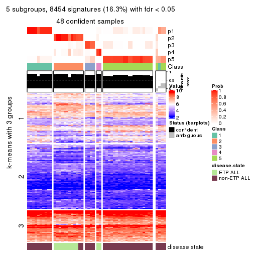
get_signatures(res, k = 6, scale_rows = FALSE)
Compare the overlap of signatures from different k:
compare_signatures(res)
get_signature() returns a data frame invisibly. TO get the list of signatures, the function
call should be assigned to a variable explicitly. In following code, if plot argument is set
to FALSE, no heatmap is plotted while only the differential analysis is performed.
# code only for demonstration
tb = get_signature(res, k = ..., plot = FALSE)
An example of the output of tb is:
#> which_row fdr mean_1 mean_2 scaled_mean_1 scaled_mean_2 km
#> 1 38 0.042760348 8.373488 9.131774 -0.5533452 0.5164555 1
#> 2 40 0.018707592 7.106213 8.469186 -0.6173731 0.5762149 1
#> 3 55 0.019134737 10.221463 11.207825 -0.6159697 0.5749050 1
#> 4 59 0.006059896 5.921854 7.869574 -0.6899429 0.6439467 1
#> 5 60 0.018055526 8.928898 10.211722 -0.6204761 0.5791110 1
#> 6 98 0.009384629 15.714769 14.887706 0.6635654 -0.6193277 2
...
The columns in tb are:
which_row: row indices corresponding to the input matrix.fdr: FDR for the differential test. mean_x: The mean value in group x.scaled_mean_x: The mean value in group x after rows are scaled.km: Row groups if k-means clustering is applied to rows.UMAP plot which shows how samples are separated.
dimension_reduction(res, k = 2, method = "UMAP")
dimension_reduction(res, k = 3, method = "UMAP")
dimension_reduction(res, k = 4, method = "UMAP")
dimension_reduction(res, k = 5, method = "UMAP")
dimension_reduction(res, k = 6, method = "UMAP")
Following heatmap shows how subgroups are split when increasing k:
collect_classes(res)
Test correlation between subgroups and known annotations. If the known annotation is numeric, one-way ANOVA test is applied, and if the known annotation is discrete, chi-squared contingency table test is applied.
test_to_known_factors(res)
#> n disease.state(p) k
#> SD:hclust 51 1.28e-09 2
#> SD:hclust 51 8.65e-10 3
#> SD:hclust 48 1.64e-08 4
#> SD:hclust 48 6.61e-08 5
#> SD:hclust 36 7.49e-08 6
If matrix rows can be associated to genes, consider to use functional_enrichment(res,
...) to perform function enrichment for the signature genes. See this vignette for more detailed explanations.
The object with results only for a single top-value method and a single partition method can be extracted as:
res = res_list["SD", "kmeans"]
# you can also extract it by
# res = res_list["SD:kmeans"]
A summary of res and all the functions that can be applied to it:
res
#> A 'ConsensusPartition' object with k = 2, 3, 4, 5, 6.
#> On a matrix with 51979 rows and 52 columns.
#> Top rows (1000, 2000, 3000, 4000, 5000) are extracted by 'SD' method.
#> Subgroups are detected by 'kmeans' method.
#> Performed in total 1250 partitions by row resampling.
#> Best k for subgroups seems to be 2.
#>
#> Following methods can be applied to this 'ConsensusPartition' object:
#> [1] "cola_report" "collect_classes" "collect_plots"
#> [4] "collect_stats" "colnames" "compare_signatures"
#> [7] "consensus_heatmap" "dimension_reduction" "functional_enrichment"
#> [10] "get_anno_col" "get_anno" "get_classes"
#> [13] "get_consensus" "get_matrix" "get_membership"
#> [16] "get_param" "get_signatures" "get_stats"
#> [19] "is_best_k" "is_stable_k" "membership_heatmap"
#> [22] "ncol" "nrow" "plot_ecdf"
#> [25] "rownames" "select_partition_number" "show"
#> [28] "suggest_best_k" "test_to_known_factors"
collect_plots() function collects all the plots made from res for all k (number of partitions)
into one single page to provide an easy and fast comparison between different k.
collect_plots(res)
The plots are:
k and the heatmap of
predicted classes for each k.k.k.k.All the plots in panels can be made by individual functions and they are plotted later in this section.
select_partition_number() produces several plots showing different
statistics for choosing “optimized” k. There are following statistics:
k;k, the area increased is defined as \(A_k - A_{k-1}\).The detailed explanations of these statistics can be found in the cola vignette.
Generally speaking, lower PAC score, higher mean silhouette score or higher
concordance corresponds to better partition. Rand index and Jaccard index
measure how similar the current partition is compared to partition with k-1.
If they are too similar, we won't accept k is better than k-1.
select_partition_number(res)

The numeric values for all these statistics can be obtained by get_stats().
get_stats(res)
#> k 1-PAC mean_silhouette concordance area_increased Rand Jaccard
#> 2 2 1.000 1.000 1.000 0.4491 0.551 0.551
#> 3 3 0.694 0.905 0.902 0.4151 0.742 0.548
#> 4 4 0.652 0.796 0.832 0.1317 1.000 1.000
#> 5 5 0.645 0.574 0.779 0.0678 0.935 0.805
#> 6 6 0.701 0.457 0.696 0.0481 0.910 0.674
suggest_best_k() suggests the best \(k\) based on these statistics. The rules are as follows:
suggest_best_k(res)
#> [1] 2
Following shows the table of the partitions (You need to click the show/hide
code output link to see it). The membership matrix (columns with name p*)
is inferred by
clue::cl_consensus()
function with the SE method. Basically the value in the membership matrix
represents the probability to belong to a certain group. The finall class
label for an item is determined with the group with highest probability it
belongs to.
In get_classes() function, the entropy is calculated from the membership
matrix and the silhouette score is calculated from the consensus matrix.
cbind(get_classes(res, k = 2), get_membership(res, k = 2))
#> class entropy silhouette p1 p2
#> GSM710838 2 0.0000 0.999 0.000 1.000
#> GSM710840 2 0.0000 0.999 0.000 1.000
#> GSM710842 2 0.0000 0.999 0.000 1.000
#> GSM710844 2 0.0000 0.999 0.000 1.000
#> GSM710847 2 0.0000 0.999 0.000 1.000
#> GSM710848 2 0.0000 0.999 0.000 1.000
#> GSM710850 2 0.0000 0.999 0.000 1.000
#> GSM710931 2 0.0000 0.999 0.000 1.000
#> GSM710932 2 0.0000 0.999 0.000 1.000
#> GSM710933 2 0.0000 0.999 0.000 1.000
#> GSM710934 2 0.0000 0.999 0.000 1.000
#> GSM710935 2 0.0000 0.999 0.000 1.000
#> GSM710851 1 0.0000 1.000 1.000 0.000
#> GSM710852 1 0.0000 1.000 1.000 0.000
#> GSM710854 2 0.0000 0.999 0.000 1.000
#> GSM710856 1 0.0000 1.000 1.000 0.000
#> GSM710857 1 0.0000 1.000 1.000 0.000
#> GSM710859 1 0.0000 1.000 1.000 0.000
#> GSM710861 1 0.0000 1.000 1.000 0.000
#> GSM710864 1 0.0000 1.000 1.000 0.000
#> GSM710866 1 0.0000 1.000 1.000 0.000
#> GSM710868 1 0.0000 1.000 1.000 0.000
#> GSM710870 1 0.0000 1.000 1.000 0.000
#> GSM710872 1 0.0000 1.000 1.000 0.000
#> GSM710874 1 0.0000 1.000 1.000 0.000
#> GSM710876 1 0.0000 1.000 1.000 0.000
#> GSM710878 1 0.0000 1.000 1.000 0.000
#> GSM710880 1 0.0000 1.000 1.000 0.000
#> GSM710882 1 0.0000 1.000 1.000 0.000
#> GSM710884 1 0.0000 1.000 1.000 0.000
#> GSM710887 1 0.0000 1.000 1.000 0.000
#> GSM710889 1 0.0000 1.000 1.000 0.000
#> GSM710891 2 0.0000 0.999 0.000 1.000
#> GSM710893 1 0.0000 1.000 1.000 0.000
#> GSM710895 1 0.0000 1.000 1.000 0.000
#> GSM710897 1 0.0000 1.000 1.000 0.000
#> GSM710899 2 0.0376 0.996 0.004 0.996
#> GSM710901 1 0.0000 1.000 1.000 0.000
#> GSM710903 1 0.0000 1.000 1.000 0.000
#> GSM710904 1 0.0000 1.000 1.000 0.000
#> GSM710907 1 0.0000 1.000 1.000 0.000
#> GSM710909 1 0.0000 1.000 1.000 0.000
#> GSM710910 1 0.0000 1.000 1.000 0.000
#> GSM710912 2 0.0000 0.999 0.000 1.000
#> GSM710914 1 0.0000 1.000 1.000 0.000
#> GSM710917 2 0.0672 0.992 0.008 0.992
#> GSM710919 1 0.0000 1.000 1.000 0.000
#> GSM710921 1 0.0000 1.000 1.000 0.000
#> GSM710923 1 0.0000 1.000 1.000 0.000
#> GSM710925 1 0.0000 1.000 1.000 0.000
#> GSM710927 1 0.0000 1.000 1.000 0.000
#> GSM710929 1 0.0000 1.000 1.000 0.000
cbind(get_classes(res, k = 3), get_membership(res, k = 3))
#> class entropy silhouette p1 p2 p3
#> GSM710838 2 0.1289 0.960 0.000 0.968 0.032
#> GSM710840 2 0.1289 0.960 0.000 0.968 0.032
#> GSM710842 2 0.2261 0.951 0.000 0.932 0.068
#> GSM710844 2 0.2261 0.941 0.000 0.932 0.068
#> GSM710847 2 0.0892 0.961 0.000 0.980 0.020
#> GSM710848 2 0.3295 0.941 0.008 0.896 0.096
#> GSM710850 2 0.2261 0.941 0.000 0.932 0.068
#> GSM710931 2 0.0892 0.961 0.000 0.980 0.020
#> GSM710932 2 0.1163 0.961 0.000 0.972 0.028
#> GSM710933 2 0.2261 0.941 0.000 0.932 0.068
#> GSM710934 2 0.1411 0.958 0.000 0.964 0.036
#> GSM710935 2 0.1031 0.961 0.000 0.976 0.024
#> GSM710851 1 0.4555 0.714 0.800 0.000 0.200
#> GSM710852 1 0.0000 0.910 1.000 0.000 0.000
#> GSM710854 2 0.2165 0.951 0.000 0.936 0.064
#> GSM710856 1 0.1964 0.921 0.944 0.000 0.056
#> GSM710857 1 0.1964 0.921 0.944 0.000 0.056
#> GSM710859 3 0.4452 0.935 0.192 0.000 0.808
#> GSM710861 1 0.0592 0.912 0.988 0.000 0.012
#> GSM710864 1 0.1031 0.896 0.976 0.000 0.024
#> GSM710866 1 0.2066 0.920 0.940 0.000 0.060
#> GSM710868 1 0.0892 0.897 0.980 0.000 0.020
#> GSM710870 3 0.4931 0.900 0.232 0.000 0.768
#> GSM710872 3 0.4452 0.935 0.192 0.000 0.808
#> GSM710874 1 0.4654 0.711 0.792 0.000 0.208
#> GSM710876 3 0.4504 0.934 0.196 0.000 0.804
#> GSM710878 1 0.2066 0.920 0.940 0.000 0.060
#> GSM710880 1 0.0000 0.910 1.000 0.000 0.000
#> GSM710882 1 0.1753 0.922 0.952 0.000 0.048
#> GSM710884 1 0.1964 0.921 0.944 0.000 0.056
#> GSM710887 1 0.0000 0.910 1.000 0.000 0.000
#> GSM710889 3 0.4931 0.900 0.232 0.000 0.768
#> GSM710891 2 0.2165 0.951 0.000 0.936 0.064
#> GSM710893 1 0.0000 0.910 1.000 0.000 0.000
#> GSM710895 3 0.4504 0.936 0.196 0.000 0.804
#> GSM710897 1 0.1753 0.922 0.952 0.000 0.048
#> GSM710899 3 0.4002 0.692 0.000 0.160 0.840
#> GSM710901 3 0.4555 0.934 0.200 0.000 0.800
#> GSM710903 1 0.4555 0.714 0.800 0.000 0.200
#> GSM710904 1 0.1964 0.921 0.944 0.000 0.056
#> GSM710907 1 0.2066 0.920 0.940 0.000 0.060
#> GSM710909 3 0.4555 0.934 0.200 0.000 0.800
#> GSM710910 3 0.3816 0.895 0.148 0.000 0.852
#> GSM710912 2 0.2165 0.951 0.000 0.936 0.064
#> GSM710914 1 0.4555 0.714 0.800 0.000 0.200
#> GSM710917 3 0.4002 0.686 0.000 0.160 0.840
#> GSM710919 1 0.1964 0.921 0.944 0.000 0.056
#> GSM710921 3 0.4504 0.936 0.196 0.000 0.804
#> GSM710923 1 0.2066 0.920 0.940 0.000 0.060
#> GSM710925 3 0.4399 0.934 0.188 0.000 0.812
#> GSM710927 3 0.4452 0.935 0.192 0.000 0.808
#> GSM710929 3 0.4504 0.936 0.196 0.000 0.804
cbind(get_classes(res, k = 4), get_membership(res, k = 4))
#> class entropy silhouette p1 p2 p3 p4
#> GSM710838 2 0.0336 0.887 0.000 0.992 0.000 NA
#> GSM710840 2 0.0336 0.887 0.000 0.992 0.000 NA
#> GSM710842 2 0.3812 0.863 0.000 0.832 0.028 NA
#> GSM710844 2 0.3764 0.836 0.000 0.816 0.012 NA
#> GSM710847 2 0.0000 0.887 0.000 1.000 0.000 NA
#> GSM710848 2 0.5557 0.802 0.000 0.652 0.040 NA
#> GSM710850 2 0.3764 0.836 0.000 0.816 0.012 NA
#> GSM710931 2 0.0000 0.887 0.000 1.000 0.000 NA
#> GSM710932 2 0.0188 0.887 0.000 0.996 0.000 NA
#> GSM710933 2 0.3764 0.836 0.000 0.816 0.012 NA
#> GSM710934 2 0.2888 0.859 0.000 0.872 0.004 NA
#> GSM710935 2 0.3208 0.868 0.000 0.848 0.004 NA
#> GSM710851 1 0.6844 0.536 0.500 0.000 0.104 NA
#> GSM710852 1 0.3610 0.781 0.800 0.000 0.000 NA
#> GSM710854 2 0.4832 0.837 0.000 0.768 0.056 NA
#> GSM710856 1 0.1151 0.825 0.968 0.000 0.008 NA
#> GSM710857 1 0.1356 0.823 0.960 0.000 0.008 NA
#> GSM710859 3 0.3088 0.862 0.052 0.000 0.888 NA
#> GSM710861 1 0.2593 0.803 0.892 0.000 0.004 NA
#> GSM710864 1 0.4889 0.722 0.636 0.000 0.004 NA
#> GSM710866 1 0.2737 0.802 0.888 0.000 0.008 NA
#> GSM710868 1 0.4372 0.748 0.728 0.000 0.004 NA
#> GSM710870 3 0.6805 0.669 0.220 0.000 0.604 NA
#> GSM710872 3 0.2578 0.862 0.052 0.000 0.912 NA
#> GSM710874 1 0.6895 0.524 0.492 0.000 0.108 NA
#> GSM710876 3 0.4992 0.812 0.132 0.000 0.772 NA
#> GSM710878 1 0.2737 0.802 0.888 0.000 0.008 NA
#> GSM710880 1 0.3528 0.784 0.808 0.000 0.000 NA
#> GSM710882 1 0.0524 0.827 0.988 0.000 0.008 NA
#> GSM710884 1 0.0672 0.827 0.984 0.000 0.008 NA
#> GSM710887 1 0.0336 0.828 0.992 0.000 0.000 NA
#> GSM710889 3 0.6967 0.640 0.244 0.000 0.580 NA
#> GSM710891 2 0.5184 0.818 0.000 0.736 0.060 NA
#> GSM710893 1 0.3569 0.782 0.804 0.000 0.000 NA
#> GSM710895 3 0.3521 0.859 0.052 0.000 0.864 NA
#> GSM710897 1 0.0672 0.827 0.984 0.000 0.008 NA
#> GSM710899 3 0.4831 0.670 0.000 0.040 0.752 NA
#> GSM710901 3 0.5540 0.785 0.164 0.000 0.728 NA
#> GSM710903 1 0.6844 0.536 0.500 0.000 0.104 NA
#> GSM710904 1 0.0672 0.827 0.984 0.000 0.008 NA
#> GSM710907 1 0.2737 0.802 0.888 0.000 0.008 NA
#> GSM710909 3 0.5496 0.788 0.160 0.000 0.732 NA
#> GSM710910 3 0.0779 0.848 0.016 0.000 0.980 NA
#> GSM710912 2 0.3999 0.862 0.000 0.824 0.036 NA
#> GSM710914 1 0.6844 0.536 0.500 0.000 0.104 NA
#> GSM710917 3 0.4321 0.714 0.004 0.040 0.812 NA
#> GSM710919 1 0.0336 0.827 0.992 0.000 0.008 NA
#> GSM710921 3 0.1661 0.864 0.052 0.000 0.944 NA
#> GSM710923 1 0.2675 0.801 0.892 0.000 0.008 NA
#> GSM710925 3 0.3453 0.859 0.052 0.000 0.868 NA
#> GSM710927 3 0.1474 0.864 0.052 0.000 0.948 NA
#> GSM710929 3 0.1474 0.864 0.052 0.000 0.948 NA
cbind(get_classes(res, k = 5), get_membership(res, k = 5))
#> class entropy silhouette p1 p2 p3 p4 p5
#> GSM710838 2 0.0404 0.5979 0.000 0.988 0.000 0.012 0.000
#> GSM710840 2 0.0404 0.5979 0.000 0.988 0.000 0.012 0.000
#> GSM710842 2 0.3845 0.3871 0.000 0.760 0.012 0.224 0.004
#> GSM710844 2 0.4887 0.4293 0.000 0.720 0.000 0.132 0.148
#> GSM710847 2 0.0000 0.5997 0.000 1.000 0.000 0.000 0.000
#> GSM710848 4 0.4808 0.0000 0.000 0.348 0.000 0.620 0.032
#> GSM710850 2 0.4887 0.4293 0.000 0.720 0.000 0.132 0.148
#> GSM710931 2 0.0566 0.5979 0.000 0.984 0.004 0.012 0.000
#> GSM710932 2 0.0404 0.5979 0.000 0.988 0.000 0.012 0.000
#> GSM710933 2 0.4887 0.4293 0.000 0.720 0.000 0.132 0.148
#> GSM710934 2 0.4157 0.1264 0.000 0.716 0.000 0.264 0.020
#> GSM710935 2 0.3612 0.3684 0.000 0.764 0.008 0.228 0.000
#> GSM710851 5 0.5544 0.9743 0.292 0.000 0.100 0.000 0.608
#> GSM710852 1 0.4558 0.5157 0.740 0.000 0.000 0.080 0.180
#> GSM710854 2 0.5058 -0.0703 0.004 0.584 0.032 0.380 0.000
#> GSM710856 1 0.2374 0.7042 0.912 0.000 0.020 0.016 0.052
#> GSM710857 1 0.2857 0.6823 0.888 0.000 0.020 0.028 0.064
#> GSM710859 3 0.3680 0.7376 0.012 0.000 0.832 0.108 0.048
#> GSM710861 1 0.4638 0.6817 0.760 0.000 0.012 0.080 0.148
#> GSM710864 1 0.6674 0.2988 0.440 0.000 0.000 0.280 0.280
#> GSM710866 1 0.4737 0.6823 0.756 0.000 0.016 0.080 0.148
#> GSM710868 1 0.5956 0.3197 0.592 0.000 0.000 0.212 0.196
#> GSM710870 3 0.7256 0.2124 0.176 0.000 0.472 0.048 0.304
#> GSM710872 3 0.2753 0.7417 0.012 0.000 0.876 0.104 0.008
#> GSM710874 5 0.5570 0.9714 0.288 0.000 0.104 0.000 0.608
#> GSM710876 3 0.5175 0.6892 0.044 0.000 0.744 0.100 0.112
#> GSM710878 1 0.4737 0.6823 0.756 0.000 0.016 0.080 0.148
#> GSM710880 1 0.4407 0.5366 0.760 0.000 0.004 0.064 0.172
#> GSM710882 1 0.0609 0.7449 0.980 0.000 0.020 0.000 0.000
#> GSM710884 1 0.0898 0.7437 0.972 0.000 0.020 0.008 0.000
#> GSM710887 1 0.1267 0.7314 0.960 0.000 0.004 0.024 0.012
#> GSM710889 3 0.7256 0.2124 0.176 0.000 0.472 0.048 0.304
#> GSM710891 2 0.5452 -0.2323 0.004 0.508 0.040 0.444 0.004
#> GSM710893 1 0.4548 0.5305 0.752 0.000 0.004 0.076 0.168
#> GSM710895 3 0.4597 0.7062 0.012 0.000 0.764 0.080 0.144
#> GSM710897 1 0.0898 0.7437 0.972 0.000 0.020 0.008 0.000
#> GSM710899 3 0.4934 0.3259 0.004 0.008 0.536 0.444 0.008
#> GSM710901 3 0.5826 0.6597 0.068 0.000 0.696 0.104 0.132
#> GSM710903 5 0.6004 0.9754 0.292 0.000 0.100 0.016 0.592
#> GSM710904 1 0.0898 0.7437 0.972 0.000 0.020 0.008 0.000
#> GSM710907 1 0.4640 0.6850 0.764 0.000 0.016 0.076 0.144
#> GSM710909 3 0.5768 0.6626 0.064 0.000 0.700 0.104 0.132
#> GSM710910 3 0.1074 0.7530 0.012 0.000 0.968 0.016 0.004
#> GSM710912 2 0.3756 0.3633 0.000 0.744 0.008 0.248 0.000
#> GSM710914 5 0.6004 0.9754 0.292 0.000 0.100 0.016 0.592
#> GSM710917 3 0.3742 0.5965 0.000 0.020 0.788 0.188 0.004
#> GSM710919 1 0.0609 0.7449 0.980 0.000 0.020 0.000 0.000
#> GSM710921 3 0.0727 0.7560 0.012 0.000 0.980 0.004 0.004
#> GSM710923 1 0.4582 0.6850 0.768 0.000 0.016 0.072 0.144
#> GSM710925 3 0.4665 0.7049 0.012 0.000 0.760 0.088 0.140
#> GSM710927 3 0.0807 0.7561 0.012 0.000 0.976 0.012 0.000
#> GSM710929 3 0.0807 0.7559 0.012 0.000 0.976 0.012 0.000
cbind(get_classes(res, k = 6), get_membership(res, k = 6))
#> class entropy silhouette p1 p2 p3 p4 p5 p6
#> GSM710838 2 0.0260 0.6697 0.000 0.992 0.000 0.000 0.000 0.008
#> GSM710840 2 0.0146 0.6704 0.000 0.996 0.000 0.000 0.000 0.004
#> GSM710842 2 0.4012 0.3484 0.000 0.700 0.004 0.012 0.008 0.276
#> GSM710844 2 0.6201 0.4809 0.000 0.580 0.000 0.196 0.072 0.152
#> GSM710847 2 0.0000 0.6710 0.000 1.000 0.000 0.000 0.000 0.000
#> GSM710848 6 0.5993 0.3156 0.004 0.192 0.000 0.236 0.016 0.552
#> GSM710850 2 0.6201 0.4809 0.000 0.580 0.000 0.196 0.072 0.152
#> GSM710931 2 0.0653 0.6643 0.000 0.980 0.004 0.000 0.004 0.012
#> GSM710932 2 0.0000 0.6710 0.000 1.000 0.000 0.000 0.000 0.000
#> GSM710933 2 0.6201 0.4809 0.000 0.580 0.000 0.196 0.072 0.152
#> GSM710934 2 0.4986 0.4131 0.004 0.680 0.000 0.184 0.008 0.124
#> GSM710935 2 0.3584 0.2849 0.000 0.688 0.004 0.000 0.000 0.308
#> GSM710851 5 0.2532 0.6640 0.076 0.000 0.032 0.008 0.884 0.000
#> GSM710852 4 0.6386 0.7318 0.364 0.000 0.000 0.380 0.240 0.016
#> GSM710854 6 0.4314 0.2493 0.000 0.444 0.020 0.000 0.000 0.536
#> GSM710856 1 0.5555 0.3358 0.568 0.000 0.004 0.288 0.136 0.004
#> GSM710857 1 0.5552 0.3304 0.564 0.000 0.004 0.296 0.132 0.004
#> GSM710859 3 0.4126 0.6870 0.004 0.000 0.776 0.028 0.044 0.148
#> GSM710861 1 0.0260 0.4355 0.992 0.000 0.000 0.000 0.008 0.000
#> GSM710864 1 0.6436 -0.2769 0.508 0.000 0.000 0.284 0.148 0.060
#> GSM710866 1 0.0291 0.4403 0.992 0.000 0.004 0.000 0.004 0.000
#> GSM710868 4 0.6773 0.5693 0.256 0.000 0.000 0.468 0.208 0.068
#> GSM710870 5 0.7231 0.1993 0.048 0.000 0.364 0.152 0.396 0.040
#> GSM710872 3 0.3113 0.7053 0.004 0.000 0.828 0.020 0.004 0.144
#> GSM710874 5 0.2420 0.6658 0.076 0.000 0.032 0.004 0.888 0.000
#> GSM710876 3 0.6437 0.5181 0.060 0.000 0.584 0.216 0.024 0.116
#> GSM710878 1 0.0291 0.4403 0.992 0.000 0.004 0.000 0.004 0.000
#> GSM710880 1 0.6377 -0.7867 0.376 0.000 0.000 0.372 0.236 0.016
#> GSM710882 1 0.4864 0.4115 0.648 0.000 0.004 0.256 0.092 0.000
#> GSM710884 1 0.5050 0.4017 0.628 0.000 0.004 0.260 0.108 0.000
#> GSM710887 1 0.5133 0.1821 0.564 0.000 0.000 0.336 0.100 0.000
#> GSM710889 5 0.7231 0.1993 0.048 0.000 0.364 0.152 0.396 0.040
#> GSM710891 6 0.4254 0.4112 0.000 0.352 0.020 0.000 0.004 0.624
#> GSM710893 4 0.6375 0.7276 0.364 0.000 0.000 0.384 0.236 0.016
#> GSM710895 3 0.4870 0.6218 0.004 0.000 0.716 0.024 0.152 0.104
#> GSM710897 1 0.5050 0.4017 0.628 0.000 0.004 0.260 0.108 0.000
#> GSM710899 6 0.3841 0.0662 0.000 0.000 0.380 0.000 0.004 0.616
#> GSM710901 3 0.6937 0.4560 0.068 0.000 0.524 0.252 0.036 0.120
#> GSM710903 5 0.3255 0.6474 0.076 0.000 0.032 0.044 0.848 0.000
#> GSM710904 1 0.5050 0.4017 0.628 0.000 0.004 0.260 0.108 0.000
#> GSM710907 1 0.0291 0.4403 0.992 0.000 0.004 0.000 0.004 0.000
#> GSM710909 3 0.6842 0.4645 0.060 0.000 0.532 0.252 0.036 0.120
#> GSM710910 3 0.0767 0.7348 0.004 0.000 0.976 0.012 0.000 0.008
#> GSM710912 2 0.3738 0.3106 0.000 0.680 0.004 0.000 0.004 0.312
#> GSM710914 5 0.3255 0.6474 0.076 0.000 0.032 0.044 0.848 0.000
#> GSM710917 3 0.3679 0.4810 0.000 0.004 0.764 0.016 0.008 0.208
#> GSM710919 1 0.4864 0.4115 0.648 0.000 0.004 0.256 0.092 0.000
#> GSM710921 3 0.0912 0.7370 0.004 0.000 0.972 0.012 0.004 0.008
#> GSM710923 1 0.0291 0.4403 0.992 0.000 0.004 0.000 0.004 0.000
#> GSM710925 3 0.4988 0.6102 0.004 0.000 0.704 0.024 0.156 0.112
#> GSM710927 3 0.0436 0.7370 0.004 0.000 0.988 0.004 0.000 0.004
#> GSM710929 3 0.0291 0.7373 0.004 0.000 0.992 0.000 0.000 0.004
Heatmaps for the consensus matrix. It visualizes the probability of two samples to be in a same group.
consensus_heatmap(res, k = 2)
consensus_heatmap(res, k = 3)
consensus_heatmap(res, k = 4)
consensus_heatmap(res, k = 5)
consensus_heatmap(res, k = 6)
Heatmaps for the membership of samples in all partitions to see how consistent they are:
membership_heatmap(res, k = 2)
membership_heatmap(res, k = 3)
membership_heatmap(res, k = 4)
membership_heatmap(res, k = 5)
membership_heatmap(res, k = 6)
As soon as we have had the classes for columns, we can look for signatures which are significantly different between classes which can be candidate marks for certain classes. Following are the heatmaps for signatures.
Signature heatmaps where rows are scaled:
get_signatures(res, k = 2)
get_signatures(res, k = 3)
get_signatures(res, k = 4)
get_signatures(res, k = 5)
get_signatures(res, k = 6)
Signature heatmaps where rows are not scaled:
get_signatures(res, k = 2, scale_rows = FALSE)
get_signatures(res, k = 3, scale_rows = FALSE)
get_signatures(res, k = 4, scale_rows = FALSE)
get_signatures(res, k = 5, scale_rows = FALSE)
get_signatures(res, k = 6, scale_rows = FALSE)
Compare the overlap of signatures from different k:
compare_signatures(res)
get_signature() returns a data frame invisibly. TO get the list of signatures, the function
call should be assigned to a variable explicitly. In following code, if plot argument is set
to FALSE, no heatmap is plotted while only the differential analysis is performed.
# code only for demonstration
tb = get_signature(res, k = ..., plot = FALSE)
An example of the output of tb is:
#> which_row fdr mean_1 mean_2 scaled_mean_1 scaled_mean_2 km
#> 1 38 0.042760348 8.373488 9.131774 -0.5533452 0.5164555 1
#> 2 40 0.018707592 7.106213 8.469186 -0.6173731 0.5762149 1
#> 3 55 0.019134737 10.221463 11.207825 -0.6159697 0.5749050 1
#> 4 59 0.006059896 5.921854 7.869574 -0.6899429 0.6439467 1
#> 5 60 0.018055526 8.928898 10.211722 -0.6204761 0.5791110 1
#> 6 98 0.009384629 15.714769 14.887706 0.6635654 -0.6193277 2
...
The columns in tb are:
which_row: row indices corresponding to the input matrix.fdr: FDR for the differential test. mean_x: The mean value in group x.scaled_mean_x: The mean value in group x after rows are scaled.km: Row groups if k-means clustering is applied to rows.UMAP plot which shows how samples are separated.
dimension_reduction(res, k = 2, method = "UMAP")
dimension_reduction(res, k = 3, method = "UMAP")
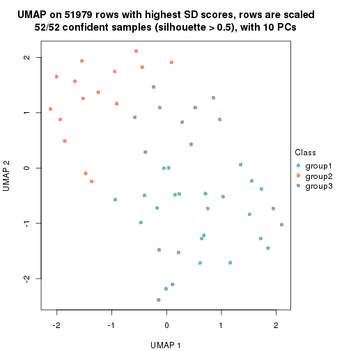
dimension_reduction(res, k = 4, method = "UMAP")
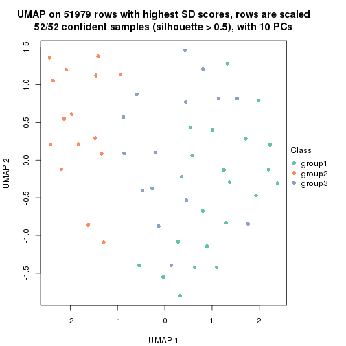
dimension_reduction(res, k = 5, method = "UMAP")
dimension_reduction(res, k = 6, method = "UMAP")
Following heatmap shows how subgroups are split when increasing k:
collect_classes(res)
Test correlation between subgroups and known annotations. If the known annotation is numeric, one-way ANOVA test is applied, and if the known annotation is discrete, chi-squared contingency table test is applied.
test_to_known_factors(res)
#> n disease.state(p) k
#> SD:kmeans 52 1.06e-07 2
#> SD:kmeans 52 4.41e-09 3
#> SD:kmeans 52 4.41e-09 4
#> SD:kmeans 37 4.60e-08 5
#> SD:kmeans 21 1.05e-04 6
If matrix rows can be associated to genes, consider to use functional_enrichment(res,
...) to perform function enrichment for the signature genes. See this vignette for more detailed explanations.
The object with results only for a single top-value method and a single partition method can be extracted as:
res = res_list["SD", "skmeans"]
# you can also extract it by
# res = res_list["SD:skmeans"]
A summary of res and all the functions that can be applied to it:
res
#> A 'ConsensusPartition' object with k = 2, 3, 4, 5, 6.
#> On a matrix with 51979 rows and 52 columns.
#> Top rows (1000, 2000, 3000, 4000, 5000) are extracted by 'SD' method.
#> Subgroups are detected by 'skmeans' method.
#> Performed in total 1250 partitions by row resampling.
#> Best k for subgroups seems to be 3.
#>
#> Following methods can be applied to this 'ConsensusPartition' object:
#> [1] "cola_report" "collect_classes" "collect_plots"
#> [4] "collect_stats" "colnames" "compare_signatures"
#> [7] "consensus_heatmap" "dimension_reduction" "functional_enrichment"
#> [10] "get_anno_col" "get_anno" "get_classes"
#> [13] "get_consensus" "get_matrix" "get_membership"
#> [16] "get_param" "get_signatures" "get_stats"
#> [19] "is_best_k" "is_stable_k" "membership_heatmap"
#> [22] "ncol" "nrow" "plot_ecdf"
#> [25] "rownames" "select_partition_number" "show"
#> [28] "suggest_best_k" "test_to_known_factors"
collect_plots() function collects all the plots made from res for all k (number of partitions)
into one single page to provide an easy and fast comparison between different k.
collect_plots(res)
The plots are:
k and the heatmap of
predicted classes for each k.k.k.k.All the plots in panels can be made by individual functions and they are plotted later in this section.
select_partition_number() produces several plots showing different
statistics for choosing “optimized” k. There are following statistics:
k;k, the area increased is defined as \(A_k - A_{k-1}\).The detailed explanations of these statistics can be found in the cola vignette.
Generally speaking, lower PAC score, higher mean silhouette score or higher
concordance corresponds to better partition. Rand index and Jaccard index
measure how similar the current partition is compared to partition with k-1.
If they are too similar, we won't accept k is better than k-1.
select_partition_number(res)
The numeric values for all these statistics can be obtained by get_stats().
get_stats(res)
#> k 1-PAC mean_silhouette concordance area_increased Rand Jaccard
#> 2 2 1.000 0.970 0.988 0.4625 0.538 0.538
#> 3 3 1.000 0.991 0.995 0.4678 0.756 0.558
#> 4 4 0.827 0.864 0.912 0.0975 0.897 0.692
#> 5 5 0.827 0.725 0.834 0.0559 0.901 0.649
#> 6 6 0.792 0.623 0.787 0.0422 0.988 0.944
suggest_best_k() suggests the best \(k\) based on these statistics. The rules are as follows:
suggest_best_k(res)
#> [1] 3
#> attr(,"optional")
#> [1] 2
There is also optional best \(k\) = 2 that is worth to check.
Following shows the table of the partitions (You need to click the show/hide
code output link to see it). The membership matrix (columns with name p*)
is inferred by
clue::cl_consensus()
function with the SE method. Basically the value in the membership matrix
represents the probability to belong to a certain group. The finall class
label for an item is determined with the group with highest probability it
belongs to.
In get_classes() function, the entropy is calculated from the membership
matrix and the silhouette score is calculated from the consensus matrix.
cbind(get_classes(res, k = 2), get_membership(res, k = 2))
#> class entropy silhouette p1 p2
#> GSM710838 2 0.000 0.983 0.000 1.000
#> GSM710840 2 0.000 0.983 0.000 1.000
#> GSM710842 2 0.000 0.983 0.000 1.000
#> GSM710844 2 0.000 0.983 0.000 1.000
#> GSM710847 2 0.000 0.983 0.000 1.000
#> GSM710848 2 0.000 0.983 0.000 1.000
#> GSM710850 2 0.000 0.983 0.000 1.000
#> GSM710931 2 0.000 0.983 0.000 1.000
#> GSM710932 2 0.000 0.983 0.000 1.000
#> GSM710933 2 0.000 0.983 0.000 1.000
#> GSM710934 2 0.000 0.983 0.000 1.000
#> GSM710935 2 0.000 0.983 0.000 1.000
#> GSM710851 1 0.000 0.990 1.000 0.000
#> GSM710852 1 0.000 0.990 1.000 0.000
#> GSM710854 2 0.000 0.983 0.000 1.000
#> GSM710856 1 0.000 0.990 1.000 0.000
#> GSM710857 1 0.000 0.990 1.000 0.000
#> GSM710859 1 0.000 0.990 1.000 0.000
#> GSM710861 1 0.000 0.990 1.000 0.000
#> GSM710864 2 0.866 0.590 0.288 0.712
#> GSM710866 1 0.000 0.990 1.000 0.000
#> GSM710868 1 0.000 0.990 1.000 0.000
#> GSM710870 1 0.000 0.990 1.000 0.000
#> GSM710872 1 0.000 0.990 1.000 0.000
#> GSM710874 1 0.000 0.990 1.000 0.000
#> GSM710876 1 0.000 0.990 1.000 0.000
#> GSM710878 1 0.000 0.990 1.000 0.000
#> GSM710880 1 0.000 0.990 1.000 0.000
#> GSM710882 1 0.000 0.990 1.000 0.000
#> GSM710884 1 0.000 0.990 1.000 0.000
#> GSM710887 1 0.000 0.990 1.000 0.000
#> GSM710889 1 0.000 0.990 1.000 0.000
#> GSM710891 2 0.000 0.983 0.000 1.000
#> GSM710893 1 0.000 0.990 1.000 0.000
#> GSM710895 1 0.000 0.990 1.000 0.000
#> GSM710897 1 0.000 0.990 1.000 0.000
#> GSM710899 2 0.000 0.983 0.000 1.000
#> GSM710901 1 0.000 0.990 1.000 0.000
#> GSM710903 1 0.000 0.990 1.000 0.000
#> GSM710904 1 0.000 0.990 1.000 0.000
#> GSM710907 1 0.000 0.990 1.000 0.000
#> GSM710909 1 0.000 0.990 1.000 0.000
#> GSM710910 1 0.913 0.504 0.672 0.328
#> GSM710912 2 0.000 0.983 0.000 1.000
#> GSM710914 1 0.000 0.990 1.000 0.000
#> GSM710917 2 0.000 0.983 0.000 1.000
#> GSM710919 1 0.000 0.990 1.000 0.000
#> GSM710921 1 0.000 0.990 1.000 0.000
#> GSM710923 1 0.000 0.990 1.000 0.000
#> GSM710925 1 0.000 0.990 1.000 0.000
#> GSM710927 1 0.000 0.990 1.000 0.000
#> GSM710929 1 0.000 0.990 1.000 0.000
cbind(get_classes(res, k = 3), get_membership(res, k = 3))
#> class entropy silhouette p1 p2 p3
#> GSM710838 2 0.0000 1.000 0.000 1 0.000
#> GSM710840 2 0.0000 1.000 0.000 1 0.000
#> GSM710842 2 0.0000 1.000 0.000 1 0.000
#> GSM710844 2 0.0000 1.000 0.000 1 0.000
#> GSM710847 2 0.0000 1.000 0.000 1 0.000
#> GSM710848 2 0.0000 1.000 0.000 1 0.000
#> GSM710850 2 0.0000 1.000 0.000 1 0.000
#> GSM710931 2 0.0000 1.000 0.000 1 0.000
#> GSM710932 2 0.0000 1.000 0.000 1 0.000
#> GSM710933 2 0.0000 1.000 0.000 1 0.000
#> GSM710934 2 0.0000 1.000 0.000 1 0.000
#> GSM710935 2 0.0000 1.000 0.000 1 0.000
#> GSM710851 3 0.2356 0.937 0.072 0 0.928
#> GSM710852 1 0.0000 1.000 1.000 0 0.000
#> GSM710854 2 0.0000 1.000 0.000 1 0.000
#> GSM710856 1 0.0000 1.000 1.000 0 0.000
#> GSM710857 1 0.0237 0.996 0.996 0 0.004
#> GSM710859 3 0.0000 0.983 0.000 0 1.000
#> GSM710861 1 0.0000 1.000 1.000 0 0.000
#> GSM710864 1 0.0000 1.000 1.000 0 0.000
#> GSM710866 1 0.0000 1.000 1.000 0 0.000
#> GSM710868 1 0.0000 1.000 1.000 0 0.000
#> GSM710870 3 0.0000 0.983 0.000 0 1.000
#> GSM710872 3 0.0000 0.983 0.000 0 1.000
#> GSM710874 3 0.1643 0.957 0.044 0 0.956
#> GSM710876 3 0.0000 0.983 0.000 0 1.000
#> GSM710878 1 0.0000 1.000 1.000 0 0.000
#> GSM710880 1 0.0000 1.000 1.000 0 0.000
#> GSM710882 1 0.0000 1.000 1.000 0 0.000
#> GSM710884 1 0.0000 1.000 1.000 0 0.000
#> GSM710887 1 0.0000 1.000 1.000 0 0.000
#> GSM710889 3 0.0000 0.983 0.000 0 1.000
#> GSM710891 2 0.0000 1.000 0.000 1 0.000
#> GSM710893 1 0.0000 1.000 1.000 0 0.000
#> GSM710895 3 0.0000 0.983 0.000 0 1.000
#> GSM710897 1 0.0000 1.000 1.000 0 0.000
#> GSM710899 2 0.0000 1.000 0.000 1 0.000
#> GSM710901 3 0.0747 0.974 0.016 0 0.984
#> GSM710903 3 0.2356 0.937 0.072 0 0.928
#> GSM710904 1 0.0000 1.000 1.000 0 0.000
#> GSM710907 1 0.0000 1.000 1.000 0 0.000
#> GSM710909 3 0.0000 0.983 0.000 0 1.000
#> GSM710910 3 0.0000 0.983 0.000 0 1.000
#> GSM710912 2 0.0000 1.000 0.000 1 0.000
#> GSM710914 3 0.2356 0.937 0.072 0 0.928
#> GSM710917 2 0.0000 1.000 0.000 1 0.000
#> GSM710919 1 0.0000 1.000 1.000 0 0.000
#> GSM710921 3 0.0000 0.983 0.000 0 1.000
#> GSM710923 1 0.0000 1.000 1.000 0 0.000
#> GSM710925 3 0.0000 0.983 0.000 0 1.000
#> GSM710927 3 0.0000 0.983 0.000 0 1.000
#> GSM710929 3 0.0000 0.983 0.000 0 1.000
cbind(get_classes(res, k = 4), get_membership(res, k = 4))
#> class entropy silhouette p1 p2 p3 p4
#> GSM710838 2 0.0000 0.974 0.000 1.000 0.000 0.000
#> GSM710840 2 0.0000 0.974 0.000 1.000 0.000 0.000
#> GSM710842 2 0.0000 0.974 0.000 1.000 0.000 0.000
#> GSM710844 2 0.0000 0.974 0.000 1.000 0.000 0.000
#> GSM710847 2 0.0000 0.974 0.000 1.000 0.000 0.000
#> GSM710848 2 0.0188 0.972 0.000 0.996 0.000 0.004
#> GSM710850 2 0.0000 0.974 0.000 1.000 0.000 0.000
#> GSM710931 2 0.0000 0.974 0.000 1.000 0.000 0.000
#> GSM710932 2 0.0000 0.974 0.000 1.000 0.000 0.000
#> GSM710933 2 0.0000 0.974 0.000 1.000 0.000 0.000
#> GSM710934 2 0.0000 0.974 0.000 1.000 0.000 0.000
#> GSM710935 2 0.0000 0.974 0.000 1.000 0.000 0.000
#> GSM710851 4 0.1305 0.695 0.004 0.000 0.036 0.960
#> GSM710852 4 0.4761 0.624 0.372 0.000 0.000 0.628
#> GSM710854 2 0.0188 0.972 0.000 0.996 0.000 0.004
#> GSM710856 1 0.3024 0.859 0.852 0.000 0.000 0.148
#> GSM710857 1 0.3249 0.864 0.852 0.000 0.008 0.140
#> GSM710859 3 0.1118 0.905 0.000 0.000 0.964 0.036
#> GSM710861 1 0.0817 0.893 0.976 0.000 0.000 0.024
#> GSM710864 4 0.4967 0.505 0.452 0.000 0.000 0.548
#> GSM710866 1 0.0817 0.893 0.976 0.000 0.000 0.024
#> GSM710868 4 0.4790 0.620 0.380 0.000 0.000 0.620
#> GSM710870 3 0.4328 0.780 0.008 0.000 0.748 0.244
#> GSM710872 3 0.0000 0.912 0.000 0.000 1.000 0.000
#> GSM710874 4 0.1305 0.695 0.004 0.000 0.036 0.960
#> GSM710876 3 0.1174 0.904 0.020 0.000 0.968 0.012
#> GSM710878 1 0.0817 0.893 0.976 0.000 0.000 0.024
#> GSM710880 4 0.4761 0.620 0.372 0.000 0.000 0.628
#> GSM710882 1 0.1940 0.916 0.924 0.000 0.000 0.076
#> GSM710884 1 0.2011 0.915 0.920 0.000 0.000 0.080
#> GSM710887 1 0.2469 0.895 0.892 0.000 0.000 0.108
#> GSM710889 3 0.4675 0.772 0.020 0.000 0.736 0.244
#> GSM710891 2 0.0188 0.972 0.000 0.996 0.000 0.004
#> GSM710893 4 0.4776 0.621 0.376 0.000 0.000 0.624
#> GSM710895 3 0.3528 0.831 0.000 0.000 0.808 0.192
#> GSM710897 1 0.2081 0.913 0.916 0.000 0.000 0.084
#> GSM710899 2 0.3668 0.784 0.000 0.808 0.188 0.004
#> GSM710901 3 0.2813 0.848 0.080 0.000 0.896 0.024
#> GSM710903 4 0.1209 0.698 0.004 0.000 0.032 0.964
#> GSM710904 1 0.2011 0.915 0.920 0.000 0.000 0.080
#> GSM710907 1 0.0817 0.893 0.976 0.000 0.000 0.024
#> GSM710909 3 0.1256 0.900 0.028 0.000 0.964 0.008
#> GSM710910 3 0.0000 0.912 0.000 0.000 1.000 0.000
#> GSM710912 2 0.0000 0.974 0.000 1.000 0.000 0.000
#> GSM710914 4 0.1209 0.698 0.004 0.000 0.032 0.964
#> GSM710917 2 0.3688 0.765 0.000 0.792 0.208 0.000
#> GSM710919 1 0.2011 0.915 0.920 0.000 0.000 0.080
#> GSM710921 3 0.0000 0.912 0.000 0.000 1.000 0.000
#> GSM710923 1 0.0817 0.893 0.976 0.000 0.000 0.024
#> GSM710925 3 0.3400 0.839 0.000 0.000 0.820 0.180
#> GSM710927 3 0.0000 0.912 0.000 0.000 1.000 0.000
#> GSM710929 3 0.0000 0.912 0.000 0.000 1.000 0.000
cbind(get_classes(res, k = 5), get_membership(res, k = 5))
#> class entropy silhouette p1 p2 p3 p4 p5
#> GSM710838 2 0.0000 0.930 0.000 1.000 0.000 0.000 0.000
#> GSM710840 2 0.0000 0.930 0.000 1.000 0.000 0.000 0.000
#> GSM710842 2 0.0162 0.929 0.000 0.996 0.000 0.004 0.000
#> GSM710844 2 0.0000 0.930 0.000 1.000 0.000 0.000 0.000
#> GSM710847 2 0.0000 0.930 0.000 1.000 0.000 0.000 0.000
#> GSM710848 2 0.1740 0.896 0.000 0.932 0.000 0.056 0.012
#> GSM710850 2 0.0000 0.930 0.000 1.000 0.000 0.000 0.000
#> GSM710931 2 0.0162 0.929 0.000 0.996 0.000 0.004 0.000
#> GSM710932 2 0.0000 0.930 0.000 1.000 0.000 0.000 0.000
#> GSM710933 2 0.0000 0.930 0.000 1.000 0.000 0.000 0.000
#> GSM710934 2 0.0324 0.926 0.000 0.992 0.000 0.004 0.004
#> GSM710935 2 0.0162 0.929 0.000 0.996 0.000 0.004 0.000
#> GSM710851 5 0.0833 0.783 0.016 0.000 0.004 0.004 0.976
#> GSM710852 1 0.6223 0.534 0.512 0.000 0.000 0.328 0.160
#> GSM710854 2 0.1484 0.905 0.000 0.944 0.000 0.048 0.008
#> GSM710856 1 0.2011 0.589 0.908 0.000 0.000 0.004 0.088
#> GSM710857 1 0.3338 0.608 0.852 0.000 0.004 0.068 0.076
#> GSM710859 3 0.2983 0.760 0.000 0.000 0.864 0.040 0.096
#> GSM710861 4 0.4302 0.855 0.480 0.000 0.000 0.520 0.000
#> GSM710864 4 0.3359 0.282 0.072 0.000 0.000 0.844 0.084
#> GSM710866 4 0.4302 0.855 0.480 0.000 0.000 0.520 0.000
#> GSM710868 1 0.6154 0.532 0.508 0.000 0.000 0.348 0.144
#> GSM710870 5 0.5831 0.318 0.048 0.000 0.364 0.028 0.560
#> GSM710872 3 0.1121 0.811 0.000 0.000 0.956 0.044 0.000
#> GSM710874 5 0.0798 0.781 0.016 0.000 0.008 0.000 0.976
#> GSM710876 3 0.3284 0.777 0.028 0.000 0.864 0.080 0.028
#> GSM710878 4 0.4302 0.855 0.480 0.000 0.000 0.520 0.000
#> GSM710880 1 0.5684 0.569 0.564 0.000 0.000 0.340 0.096
#> GSM710882 1 0.0290 0.615 0.992 0.000 0.000 0.008 0.000
#> GSM710884 1 0.0290 0.626 0.992 0.000 0.000 0.000 0.008
#> GSM710887 1 0.3741 0.613 0.732 0.000 0.000 0.264 0.004
#> GSM710889 5 0.6063 0.351 0.064 0.000 0.340 0.032 0.564
#> GSM710891 2 0.2017 0.884 0.000 0.912 0.000 0.080 0.008
#> GSM710893 1 0.5798 0.564 0.556 0.000 0.000 0.336 0.108
#> GSM710895 3 0.4787 0.314 0.000 0.000 0.608 0.028 0.364
#> GSM710897 1 0.0693 0.633 0.980 0.000 0.000 0.012 0.008
#> GSM710899 2 0.5946 0.346 0.000 0.544 0.356 0.092 0.008
#> GSM710901 3 0.4988 0.672 0.068 0.000 0.744 0.156 0.032
#> GSM710903 5 0.1386 0.776 0.016 0.000 0.000 0.032 0.952
#> GSM710904 1 0.0290 0.626 0.992 0.000 0.000 0.000 0.008
#> GSM710907 4 0.4304 0.852 0.484 0.000 0.000 0.516 0.000
#> GSM710909 3 0.3624 0.766 0.044 0.000 0.848 0.076 0.032
#> GSM710910 3 0.0510 0.821 0.000 0.000 0.984 0.016 0.000
#> GSM710912 2 0.0162 0.929 0.000 0.996 0.000 0.004 0.000
#> GSM710914 5 0.1300 0.779 0.016 0.000 0.000 0.028 0.956
#> GSM710917 2 0.4848 0.296 0.000 0.556 0.420 0.024 0.000
#> GSM710919 1 0.0000 0.620 1.000 0.000 0.000 0.000 0.000
#> GSM710921 3 0.0404 0.821 0.000 0.000 0.988 0.012 0.000
#> GSM710923 4 0.4306 0.844 0.492 0.000 0.000 0.508 0.000
#> GSM710925 3 0.4718 0.364 0.000 0.000 0.628 0.028 0.344
#> GSM710927 3 0.0451 0.822 0.000 0.000 0.988 0.008 0.004
#> GSM710929 3 0.0566 0.822 0.000 0.000 0.984 0.012 0.004
cbind(get_classes(res, k = 6), get_membership(res, k = 6))
#> class entropy silhouette p1 p2 p3 p4 p5 p6
#> GSM710838 2 0.0632 0.845 0.000 0.976 0.000 0.024 0.000 0.000
#> GSM710840 2 0.0260 0.847 0.000 0.992 0.000 0.008 0.000 0.000
#> GSM710842 2 0.0713 0.845 0.000 0.972 0.000 0.028 0.000 0.000
#> GSM710844 2 0.1327 0.835 0.000 0.936 0.000 0.064 0.000 0.000
#> GSM710847 2 0.0000 0.847 0.000 1.000 0.000 0.000 0.000 0.000
#> GSM710848 2 0.4020 0.620 0.000 0.692 0.000 0.276 0.000 0.032
#> GSM710850 2 0.1327 0.835 0.000 0.936 0.000 0.064 0.000 0.000
#> GSM710931 2 0.0547 0.844 0.000 0.980 0.000 0.020 0.000 0.000
#> GSM710932 2 0.0000 0.847 0.000 1.000 0.000 0.000 0.000 0.000
#> GSM710933 2 0.1327 0.835 0.000 0.936 0.000 0.064 0.000 0.000
#> GSM710934 2 0.2489 0.777 0.000 0.860 0.000 0.128 0.000 0.012
#> GSM710935 2 0.1444 0.821 0.000 0.928 0.000 0.072 0.000 0.000
#> GSM710851 5 0.0508 0.733 0.012 0.000 0.000 0.004 0.984 0.000
#> GSM710852 1 0.6395 0.608 0.524 0.000 0.000 0.100 0.092 0.284
#> GSM710854 2 0.2969 0.671 0.000 0.776 0.000 0.224 0.000 0.000
#> GSM710856 1 0.2771 0.616 0.868 0.000 0.000 0.060 0.068 0.004
#> GSM710857 1 0.3921 0.623 0.800 0.000 0.004 0.120 0.032 0.044
#> GSM710859 3 0.4168 0.407 0.000 0.000 0.696 0.256 0.048 0.000
#> GSM710861 6 0.3464 0.884 0.312 0.000 0.000 0.000 0.000 0.688
#> GSM710864 6 0.3272 0.345 0.016 0.000 0.000 0.144 0.020 0.820
#> GSM710866 6 0.3464 0.884 0.312 0.000 0.000 0.000 0.000 0.688
#> GSM710868 1 0.6759 0.545 0.448 0.000 0.000 0.176 0.068 0.308
#> GSM710870 5 0.7429 0.253 0.112 0.000 0.264 0.192 0.420 0.012
#> GSM710872 3 0.2823 0.446 0.000 0.000 0.796 0.204 0.000 0.000
#> GSM710874 5 0.0508 0.733 0.012 0.000 0.000 0.004 0.984 0.000
#> GSM710876 3 0.4474 0.532 0.004 0.000 0.680 0.272 0.012 0.032
#> GSM710878 6 0.3464 0.884 0.312 0.000 0.000 0.000 0.000 0.688
#> GSM710880 1 0.6060 0.621 0.548 0.000 0.000 0.104 0.056 0.292
#> GSM710882 1 0.0713 0.661 0.972 0.000 0.000 0.000 0.000 0.028
#> GSM710884 1 0.0146 0.675 0.996 0.000 0.000 0.004 0.000 0.000
#> GSM710887 1 0.4901 0.656 0.664 0.000 0.000 0.076 0.016 0.244
#> GSM710889 5 0.7694 0.247 0.132 0.000 0.236 0.228 0.388 0.016
#> GSM710891 2 0.3531 0.483 0.000 0.672 0.000 0.328 0.000 0.000
#> GSM710893 1 0.6182 0.616 0.536 0.000 0.000 0.112 0.060 0.292
#> GSM710895 3 0.6071 0.202 0.008 0.000 0.468 0.216 0.308 0.000
#> GSM710897 1 0.1074 0.688 0.960 0.000 0.000 0.012 0.000 0.028
#> GSM710899 4 0.5979 0.000 0.000 0.196 0.364 0.436 0.000 0.004
#> GSM710901 3 0.6053 0.419 0.040 0.000 0.556 0.284 0.004 0.116
#> GSM710903 5 0.0508 0.726 0.000 0.000 0.000 0.012 0.984 0.004
#> GSM710904 1 0.0260 0.676 0.992 0.000 0.000 0.008 0.000 0.000
#> GSM710907 6 0.3464 0.884 0.312 0.000 0.000 0.000 0.000 0.688
#> GSM710909 3 0.4842 0.502 0.036 0.000 0.652 0.284 0.004 0.024
#> GSM710910 3 0.1141 0.570 0.000 0.000 0.948 0.052 0.000 0.000
#> GSM710912 2 0.0935 0.842 0.000 0.964 0.000 0.032 0.000 0.004
#> GSM710914 5 0.0508 0.726 0.000 0.000 0.000 0.012 0.984 0.004
#> GSM710917 2 0.5454 -0.335 0.000 0.460 0.432 0.104 0.000 0.004
#> GSM710919 1 0.0790 0.658 0.968 0.000 0.000 0.000 0.000 0.032
#> GSM710921 3 0.1075 0.575 0.000 0.000 0.952 0.048 0.000 0.000
#> GSM710923 6 0.3482 0.880 0.316 0.000 0.000 0.000 0.000 0.684
#> GSM710925 3 0.5528 0.262 0.000 0.000 0.556 0.192 0.252 0.000
#> GSM710927 3 0.1141 0.595 0.000 0.000 0.948 0.052 0.000 0.000
#> GSM710929 3 0.0260 0.594 0.000 0.000 0.992 0.008 0.000 0.000
Heatmaps for the consensus matrix. It visualizes the probability of two samples to be in a same group.
consensus_heatmap(res, k = 2)
consensus_heatmap(res, k = 3)
consensus_heatmap(res, k = 4)
consensus_heatmap(res, k = 5)
consensus_heatmap(res, k = 6)
Heatmaps for the membership of samples in all partitions to see how consistent they are:
membership_heatmap(res, k = 2)
membership_heatmap(res, k = 3)
membership_heatmap(res, k = 4)
membership_heatmap(res, k = 5)

membership_heatmap(res, k = 6)
As soon as we have had the classes for columns, we can look for signatures which are significantly different between classes which can be candidate marks for certain classes. Following are the heatmaps for signatures.
Signature heatmaps where rows are scaled:
get_signatures(res, k = 2)
get_signatures(res, k = 3)
get_signatures(res, k = 4)
get_signatures(res, k = 5)
get_signatures(res, k = 6)
Signature heatmaps where rows are not scaled:
get_signatures(res, k = 2, scale_rows = FALSE)
get_signatures(res, k = 3, scale_rows = FALSE)
get_signatures(res, k = 4, scale_rows = FALSE)
get_signatures(res, k = 5, scale_rows = FALSE)
get_signatures(res, k = 6, scale_rows = FALSE)
Compare the overlap of signatures from different k:
compare_signatures(res)
get_signature() returns a data frame invisibly. TO get the list of signatures, the function
call should be assigned to a variable explicitly. In following code, if plot argument is set
to FALSE, no heatmap is plotted while only the differential analysis is performed.
# code only for demonstration
tb = get_signature(res, k = ..., plot = FALSE)
An example of the output of tb is:
#> which_row fdr mean_1 mean_2 scaled_mean_1 scaled_mean_2 km
#> 1 38 0.042760348 8.373488 9.131774 -0.5533452 0.5164555 1
#> 2 40 0.018707592 7.106213 8.469186 -0.6173731 0.5762149 1
#> 3 55 0.019134737 10.221463 11.207825 -0.6159697 0.5749050 1
#> 4 59 0.006059896 5.921854 7.869574 -0.6899429 0.6439467 1
#> 5 60 0.018055526 8.928898 10.211722 -0.6204761 0.5791110 1
#> 6 98 0.009384629 15.714769 14.887706 0.6635654 -0.6193277 2
...
The columns in tb are:
which_row: row indices corresponding to the input matrix.fdr: FDR for the differential test. mean_x: The mean value in group x.scaled_mean_x: The mean value in group x after rows are scaled.km: Row groups if k-means clustering is applied to rows.UMAP plot which shows how samples are separated.
dimension_reduction(res, k = 2, method = "UMAP")
dimension_reduction(res, k = 3, method = "UMAP")
dimension_reduction(res, k = 4, method = "UMAP")
dimension_reduction(res, k = 5, method = "UMAP")
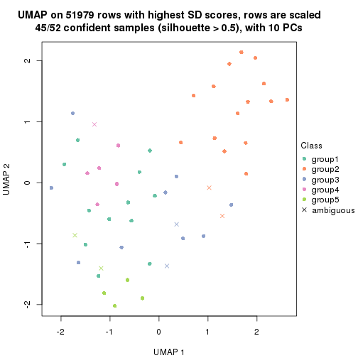
dimension_reduction(res, k = 6, method = "UMAP")
Following heatmap shows how subgroups are split when increasing k:
collect_classes(res)
Test correlation between subgroups and known annotations. If the known annotation is numeric, one-way ANOVA test is applied, and if the known annotation is discrete, chi-squared contingency table test is applied.
test_to_known_factors(res)
#> n disease.state(p) k
#> SD:skmeans 52 3.73e-07 2
#> SD:skmeans 52 1.06e-07 3
#> SD:skmeans 52 4.94e-07 4
#> SD:skmeans 45 1.36e-06 5
#> SD:skmeans 41 1.36e-06 6
If matrix rows can be associated to genes, consider to use functional_enrichment(res,
...) to perform function enrichment for the signature genes. See this vignette for more detailed explanations.
The object with results only for a single top-value method and a single partition method can be extracted as:
res = res_list["SD", "pam"]
# you can also extract it by
# res = res_list["SD:pam"]
A summary of res and all the functions that can be applied to it:
res
#> A 'ConsensusPartition' object with k = 2, 3, 4, 5, 6.
#> On a matrix with 51979 rows and 52 columns.
#> Top rows (1000, 2000, 3000, 4000, 5000) are extracted by 'SD' method.
#> Subgroups are detected by 'pam' method.
#> Performed in total 1250 partitions by row resampling.
#> Best k for subgroups seems to be 5.
#>
#> Following methods can be applied to this 'ConsensusPartition' object:
#> [1] "cola_report" "collect_classes" "collect_plots"
#> [4] "collect_stats" "colnames" "compare_signatures"
#> [7] "consensus_heatmap" "dimension_reduction" "functional_enrichment"
#> [10] "get_anno_col" "get_anno" "get_classes"
#> [13] "get_consensus" "get_matrix" "get_membership"
#> [16] "get_param" "get_signatures" "get_stats"
#> [19] "is_best_k" "is_stable_k" "membership_heatmap"
#> [22] "ncol" "nrow" "plot_ecdf"
#> [25] "rownames" "select_partition_number" "show"
#> [28] "suggest_best_k" "test_to_known_factors"
collect_plots() function collects all the plots made from res for all k (number of partitions)
into one single page to provide an easy and fast comparison between different k.
collect_plots(res)
The plots are:
k and the heatmap of
predicted classes for each k.k.k.k.All the plots in panels can be made by individual functions and they are plotted later in this section.
select_partition_number() produces several plots showing different
statistics for choosing “optimized” k. There are following statistics:
k;k, the area increased is defined as \(A_k - A_{k-1}\).The detailed explanations of these statistics can be found in the cola vignette.
Generally speaking, lower PAC score, higher mean silhouette score or higher
concordance corresponds to better partition. Rand index and Jaccard index
measure how similar the current partition is compared to partition with k-1.
If they are too similar, we won't accept k is better than k-1.
select_partition_number(res)
The numeric values for all these statistics can be obtained by get_stats().
get_stats(res)
#> k 1-PAC mean_silhouette concordance area_increased Rand Jaccard
#> 2 2 0.922 0.945 0.978 0.4237 0.581 0.581
#> 3 3 0.804 0.901 0.937 0.1470 0.973 0.953
#> 4 4 0.690 0.670 0.812 0.2844 0.784 0.611
#> 5 5 0.924 0.918 0.965 0.1753 0.876 0.664
#> 6 6 0.816 0.773 0.895 0.0417 0.975 0.911
suggest_best_k() suggests the best \(k\) based on these statistics. The rules are as follows:
suggest_best_k(res)
#> [1] 5
#> attr(,"optional")
#> [1] 2
There is also optional best \(k\) = 2 that is worth to check.
Following shows the table of the partitions (You need to click the show/hide
code output link to see it). The membership matrix (columns with name p*)
is inferred by
clue::cl_consensus()
function with the SE method. Basically the value in the membership matrix
represents the probability to belong to a certain group. The finall class
label for an item is determined with the group with highest probability it
belongs to.
In get_classes() function, the entropy is calculated from the membership
matrix and the silhouette score is calculated from the consensus matrix.
cbind(get_classes(res, k = 2), get_membership(res, k = 2))
#> class entropy silhouette p1 p2
#> GSM710838 2 0.000 0.972 0.000 1.000
#> GSM710840 2 0.000 0.972 0.000 1.000
#> GSM710842 2 0.000 0.972 0.000 1.000
#> GSM710844 2 0.000 0.972 0.000 1.000
#> GSM710847 2 0.000 0.972 0.000 1.000
#> GSM710848 2 0.224 0.945 0.036 0.964
#> GSM710850 2 0.000 0.972 0.000 1.000
#> GSM710931 2 0.000 0.972 0.000 1.000
#> GSM710932 2 0.000 0.972 0.000 1.000
#> GSM710933 2 0.000 0.972 0.000 1.000
#> GSM710934 2 0.000 0.972 0.000 1.000
#> GSM710935 2 0.000 0.972 0.000 1.000
#> GSM710851 1 0.000 0.978 1.000 0.000
#> GSM710852 1 0.000 0.978 1.000 0.000
#> GSM710854 2 0.662 0.803 0.172 0.828
#> GSM710856 1 0.000 0.978 1.000 0.000
#> GSM710857 1 0.000 0.978 1.000 0.000
#> GSM710859 1 0.000 0.978 1.000 0.000
#> GSM710861 1 0.000 0.978 1.000 0.000
#> GSM710864 1 0.000 0.978 1.000 0.000
#> GSM710866 1 0.000 0.978 1.000 0.000
#> GSM710868 1 0.000 0.978 1.000 0.000
#> GSM710870 1 0.000 0.978 1.000 0.000
#> GSM710872 1 0.000 0.978 1.000 0.000
#> GSM710874 1 0.000 0.978 1.000 0.000
#> GSM710876 1 0.000 0.978 1.000 0.000
#> GSM710878 1 0.000 0.978 1.000 0.000
#> GSM710880 1 0.000 0.978 1.000 0.000
#> GSM710882 1 0.000 0.978 1.000 0.000
#> GSM710884 1 0.000 0.978 1.000 0.000
#> GSM710887 1 0.000 0.978 1.000 0.000
#> GSM710889 1 0.000 0.978 1.000 0.000
#> GSM710891 2 0.662 0.803 0.172 0.828
#> GSM710893 1 0.000 0.978 1.000 0.000
#> GSM710895 1 0.000 0.978 1.000 0.000
#> GSM710897 1 0.000 0.978 1.000 0.000
#> GSM710899 1 0.946 0.409 0.636 0.364
#> GSM710901 1 0.000 0.978 1.000 0.000
#> GSM710903 1 0.000 0.978 1.000 0.000
#> GSM710904 1 0.000 0.978 1.000 0.000
#> GSM710907 1 0.000 0.978 1.000 0.000
#> GSM710909 1 0.000 0.978 1.000 0.000
#> GSM710910 1 0.000 0.978 1.000 0.000
#> GSM710912 2 0.000 0.972 0.000 1.000
#> GSM710914 1 0.000 0.978 1.000 0.000
#> GSM710917 1 0.969 0.324 0.604 0.396
#> GSM710919 1 0.000 0.978 1.000 0.000
#> GSM710921 1 0.000 0.978 1.000 0.000
#> GSM710923 1 0.000 0.978 1.000 0.000
#> GSM710925 1 0.000 0.978 1.000 0.000
#> GSM710927 1 0.000 0.978 1.000 0.000
#> GSM710929 1 0.000 0.978 1.000 0.000
cbind(get_classes(res, k = 3), get_membership(res, k = 3))
#> class entropy silhouette p1 p2 p3
#> GSM710838 2 0.153 0.901 0.000 0.960 0.040
#> GSM710840 2 0.000 0.940 0.000 1.000 0.000
#> GSM710842 2 0.000 0.940 0.000 1.000 0.000
#> GSM710844 3 0.445 1.000 0.000 0.192 0.808
#> GSM710847 2 0.000 0.940 0.000 1.000 0.000
#> GSM710848 2 0.216 0.820 0.064 0.936 0.000
#> GSM710850 3 0.445 1.000 0.000 0.192 0.808
#> GSM710931 2 0.000 0.940 0.000 1.000 0.000
#> GSM710932 2 0.000 0.940 0.000 1.000 0.000
#> GSM710933 3 0.445 1.000 0.000 0.192 0.808
#> GSM710934 2 0.595 0.218 0.000 0.640 0.360
#> GSM710935 2 0.000 0.940 0.000 1.000 0.000
#> GSM710851 1 0.000 0.942 1.000 0.000 0.000
#> GSM710852 1 0.000 0.942 1.000 0.000 0.000
#> GSM710854 2 0.000 0.940 0.000 1.000 0.000
#> GSM710856 1 0.000 0.942 1.000 0.000 0.000
#> GSM710857 1 0.000 0.942 1.000 0.000 0.000
#> GSM710859 1 0.207 0.920 0.940 0.000 0.060
#> GSM710861 1 0.000 0.942 1.000 0.000 0.000
#> GSM710864 1 0.000 0.942 1.000 0.000 0.000
#> GSM710866 1 0.000 0.942 1.000 0.000 0.000
#> GSM710868 1 0.000 0.942 1.000 0.000 0.000
#> GSM710870 1 0.175 0.925 0.952 0.000 0.048
#> GSM710872 1 0.445 0.839 0.808 0.000 0.192
#> GSM710874 1 0.153 0.928 0.960 0.000 0.040
#> GSM710876 1 0.000 0.942 1.000 0.000 0.000
#> GSM710878 1 0.000 0.942 1.000 0.000 0.000
#> GSM710880 1 0.000 0.942 1.000 0.000 0.000
#> GSM710882 1 0.000 0.942 1.000 0.000 0.000
#> GSM710884 1 0.000 0.942 1.000 0.000 0.000
#> GSM710887 1 0.000 0.942 1.000 0.000 0.000
#> GSM710889 1 0.153 0.928 0.960 0.000 0.040
#> GSM710891 2 0.000 0.940 0.000 1.000 0.000
#> GSM710893 1 0.000 0.942 1.000 0.000 0.000
#> GSM710895 1 0.141 0.930 0.964 0.000 0.036
#> GSM710897 1 0.000 0.942 1.000 0.000 0.000
#> GSM710899 1 0.811 0.619 0.648 0.192 0.160
#> GSM710901 1 0.000 0.942 1.000 0.000 0.000
#> GSM710903 1 0.000 0.942 1.000 0.000 0.000
#> GSM710904 1 0.000 0.942 1.000 0.000 0.000
#> GSM710907 1 0.000 0.942 1.000 0.000 0.000
#> GSM710909 1 0.435 0.845 0.816 0.000 0.184
#> GSM710910 1 0.424 0.847 0.824 0.000 0.176
#> GSM710912 2 0.000 0.940 0.000 1.000 0.000
#> GSM710914 1 0.000 0.942 1.000 0.000 0.000
#> GSM710917 1 0.796 0.635 0.660 0.188 0.152
#> GSM710919 1 0.000 0.942 1.000 0.000 0.000
#> GSM710921 1 0.445 0.839 0.808 0.000 0.192
#> GSM710923 1 0.000 0.942 1.000 0.000 0.000
#> GSM710925 1 0.435 0.845 0.816 0.000 0.184
#> GSM710927 1 0.445 0.839 0.808 0.000 0.192
#> GSM710929 1 0.445 0.839 0.808 0.000 0.192
cbind(get_classes(res, k = 4), get_membership(res, k = 4))
#> class entropy silhouette p1 p2 p3 p4
#> GSM710838 2 0.0921 0.9197 0.000 0.972 0.000 0.028
#> GSM710840 2 0.0000 0.9398 0.000 1.000 0.000 0.000
#> GSM710842 2 0.0000 0.9398 0.000 1.000 0.000 0.000
#> GSM710844 4 0.1211 1.0000 0.000 0.040 0.000 0.960
#> GSM710847 2 0.0000 0.9398 0.000 1.000 0.000 0.000
#> GSM710848 2 0.3266 0.7641 0.168 0.832 0.000 0.000
#> GSM710850 4 0.1211 1.0000 0.000 0.040 0.000 0.960
#> GSM710931 2 0.0000 0.9398 0.000 1.000 0.000 0.000
#> GSM710932 2 0.0000 0.9398 0.000 1.000 0.000 0.000
#> GSM710933 4 0.1211 1.0000 0.000 0.040 0.000 0.960
#> GSM710934 2 0.4855 0.3226 0.000 0.600 0.000 0.400
#> GSM710935 2 0.0000 0.9398 0.000 1.000 0.000 0.000
#> GSM710851 1 0.1211 0.2639 0.960 0.000 0.000 0.040
#> GSM710852 1 0.4933 0.7335 0.568 0.000 0.432 0.000
#> GSM710854 2 0.0188 0.9356 0.000 0.996 0.004 0.000
#> GSM710856 1 0.4961 0.7532 0.552 0.000 0.448 0.000
#> GSM710857 1 0.4961 0.7532 0.552 0.000 0.448 0.000
#> GSM710859 3 0.3308 0.6058 0.092 0.000 0.872 0.036
#> GSM710861 1 0.4961 0.7532 0.552 0.000 0.448 0.000
#> GSM710864 1 0.4961 0.7532 0.552 0.000 0.448 0.000
#> GSM710866 1 0.4961 0.7532 0.552 0.000 0.448 0.000
#> GSM710868 1 0.4961 0.7532 0.552 0.000 0.448 0.000
#> GSM710870 3 0.5894 -0.5514 0.428 0.000 0.536 0.036
#> GSM710872 3 0.0000 0.7389 0.000 0.000 1.000 0.000
#> GSM710874 1 0.3198 0.1750 0.880 0.000 0.080 0.040
#> GSM710876 1 0.5000 0.6497 0.504 0.000 0.496 0.000
#> GSM710878 1 0.4961 0.7532 0.552 0.000 0.448 0.000
#> GSM710880 1 0.4961 0.7532 0.552 0.000 0.448 0.000
#> GSM710882 1 0.4961 0.7532 0.552 0.000 0.448 0.000
#> GSM710884 1 0.4961 0.7532 0.552 0.000 0.448 0.000
#> GSM710887 1 0.4961 0.7532 0.552 0.000 0.448 0.000
#> GSM710889 3 0.5755 -0.5929 0.444 0.000 0.528 0.028
#> GSM710891 2 0.0000 0.9398 0.000 1.000 0.000 0.000
#> GSM710893 1 0.4961 0.7532 0.552 0.000 0.448 0.000
#> GSM710895 1 0.5343 0.3942 0.656 0.000 0.316 0.028
#> GSM710897 1 0.4961 0.7532 0.552 0.000 0.448 0.000
#> GSM710899 3 0.2281 0.6874 0.000 0.096 0.904 0.000
#> GSM710901 1 0.4961 0.7532 0.552 0.000 0.448 0.000
#> GSM710903 1 0.1211 0.2639 0.960 0.000 0.000 0.040
#> GSM710904 1 0.4961 0.7532 0.552 0.000 0.448 0.000
#> GSM710907 1 0.4961 0.7532 0.552 0.000 0.448 0.000
#> GSM710909 3 0.0336 0.7340 0.008 0.000 0.992 0.000
#> GSM710910 3 0.3444 0.5932 0.184 0.000 0.816 0.000
#> GSM710912 2 0.0000 0.9398 0.000 1.000 0.000 0.000
#> GSM710914 1 0.1211 0.2639 0.960 0.000 0.000 0.040
#> GSM710917 3 0.3172 0.6317 0.000 0.160 0.840 0.000
#> GSM710919 1 0.4961 0.7532 0.552 0.000 0.448 0.000
#> GSM710921 3 0.0188 0.7377 0.004 0.000 0.996 0.000
#> GSM710923 1 0.4961 0.7532 0.552 0.000 0.448 0.000
#> GSM710925 1 0.4467 0.0309 0.788 0.000 0.172 0.040
#> GSM710927 3 0.0000 0.7389 0.000 0.000 1.000 0.000
#> GSM710929 3 0.0000 0.7389 0.000 0.000 1.000 0.000
cbind(get_classes(res, k = 5), get_membership(res, k = 5))
#> class entropy silhouette p1 p2 p3 p4 p5
#> GSM710838 2 0.0794 0.909 0.000 0.972 0.000 0.028 0.000
#> GSM710840 2 0.0000 0.929 0.000 1.000 0.000 0.000 0.000
#> GSM710842 2 0.0000 0.929 0.000 1.000 0.000 0.000 0.000
#> GSM710844 4 0.0000 1.000 0.000 0.000 0.000 1.000 0.000
#> GSM710847 2 0.0000 0.929 0.000 1.000 0.000 0.000 0.000
#> GSM710848 2 0.3561 0.640 0.000 0.740 0.000 0.000 0.260
#> GSM710850 4 0.0000 1.000 0.000 0.000 0.000 1.000 0.000
#> GSM710931 2 0.0000 0.929 0.000 1.000 0.000 0.000 0.000
#> GSM710932 2 0.0000 0.929 0.000 1.000 0.000 0.000 0.000
#> GSM710933 4 0.0000 1.000 0.000 0.000 0.000 1.000 0.000
#> GSM710934 2 0.4273 0.238 0.000 0.552 0.000 0.448 0.000
#> GSM710935 2 0.0000 0.929 0.000 1.000 0.000 0.000 0.000
#> GSM710851 5 0.0000 0.979 0.000 0.000 0.000 0.000 1.000
#> GSM710852 1 0.0000 0.964 1.000 0.000 0.000 0.000 0.000
#> GSM710854 2 0.0000 0.929 0.000 1.000 0.000 0.000 0.000
#> GSM710856 1 0.0000 0.964 1.000 0.000 0.000 0.000 0.000
#> GSM710857 1 0.0000 0.964 1.000 0.000 0.000 0.000 0.000
#> GSM710859 3 0.3575 0.787 0.056 0.000 0.824 0.000 0.120
#> GSM710861 1 0.0000 0.964 1.000 0.000 0.000 0.000 0.000
#> GSM710864 1 0.0000 0.964 1.000 0.000 0.000 0.000 0.000
#> GSM710866 1 0.0000 0.964 1.000 0.000 0.000 0.000 0.000
#> GSM710868 1 0.0000 0.964 1.000 0.000 0.000 0.000 0.000
#> GSM710870 1 0.3291 0.819 0.840 0.000 0.040 0.000 0.120
#> GSM710872 3 0.0000 0.961 0.000 0.000 1.000 0.000 0.000
#> GSM710874 5 0.0000 0.979 0.000 0.000 0.000 0.000 1.000
#> GSM710876 1 0.2690 0.798 0.844 0.000 0.156 0.000 0.000
#> GSM710878 1 0.0000 0.964 1.000 0.000 0.000 0.000 0.000
#> GSM710880 1 0.0000 0.964 1.000 0.000 0.000 0.000 0.000
#> GSM710882 1 0.0000 0.964 1.000 0.000 0.000 0.000 0.000
#> GSM710884 1 0.0000 0.964 1.000 0.000 0.000 0.000 0.000
#> GSM710887 1 0.0000 0.964 1.000 0.000 0.000 0.000 0.000
#> GSM710889 1 0.2448 0.873 0.892 0.000 0.020 0.000 0.088
#> GSM710891 2 0.0162 0.925 0.004 0.996 0.000 0.000 0.000
#> GSM710893 1 0.0000 0.964 1.000 0.000 0.000 0.000 0.000
#> GSM710895 1 0.3913 0.532 0.676 0.000 0.000 0.000 0.324
#> GSM710897 1 0.0000 0.964 1.000 0.000 0.000 0.000 0.000
#> GSM710899 3 0.0703 0.950 0.000 0.024 0.976 0.000 0.000
#> GSM710901 1 0.0000 0.964 1.000 0.000 0.000 0.000 0.000
#> GSM710903 5 0.0000 0.979 0.000 0.000 0.000 0.000 1.000
#> GSM710904 1 0.0000 0.964 1.000 0.000 0.000 0.000 0.000
#> GSM710907 1 0.0000 0.964 1.000 0.000 0.000 0.000 0.000
#> GSM710909 3 0.0510 0.950 0.016 0.000 0.984 0.000 0.000
#> GSM710910 3 0.0609 0.953 0.000 0.000 0.980 0.000 0.020
#> GSM710912 2 0.0000 0.929 0.000 1.000 0.000 0.000 0.000
#> GSM710914 5 0.0000 0.979 0.000 0.000 0.000 0.000 1.000
#> GSM710917 3 0.0703 0.950 0.000 0.024 0.976 0.000 0.000
#> GSM710919 1 0.0000 0.964 1.000 0.000 0.000 0.000 0.000
#> GSM710921 3 0.0000 0.961 0.000 0.000 1.000 0.000 0.000
#> GSM710923 1 0.0000 0.964 1.000 0.000 0.000 0.000 0.000
#> GSM710925 5 0.1648 0.914 0.040 0.000 0.020 0.000 0.940
#> GSM710927 3 0.0000 0.961 0.000 0.000 1.000 0.000 0.000
#> GSM710929 3 0.0000 0.961 0.000 0.000 1.000 0.000 0.000
cbind(get_classes(res, k = 6), get_membership(res, k = 6))
#> class entropy silhouette p1 p2 p3 p4 p5 p6
#> GSM710838 2 0.4144 0.649 0.000 0.620 0.000 0.020 0.000 0.360
#> GSM710840 2 0.3620 0.662 0.000 0.648 0.000 0.000 0.000 0.352
#> GSM710842 2 0.3221 0.589 0.000 0.736 0.000 0.000 0.000 0.264
#> GSM710844 4 0.0000 0.872 0.000 0.000 0.000 1.000 0.000 0.000
#> GSM710847 2 0.3620 0.662 0.000 0.648 0.000 0.000 0.000 0.352
#> GSM710848 6 0.5723 0.501 0.000 0.408 0.000 0.000 0.164 0.428
#> GSM710850 4 0.0000 0.872 0.000 0.000 0.000 1.000 0.000 0.000
#> GSM710931 2 0.3620 0.650 0.000 0.648 0.000 0.000 0.000 0.352
#> GSM710932 2 0.3620 0.662 0.000 0.648 0.000 0.000 0.000 0.352
#> GSM710933 4 0.0000 0.872 0.000 0.000 0.000 1.000 0.000 0.000
#> GSM710934 4 0.4810 0.545 0.000 0.084 0.000 0.624 0.000 0.292
#> GSM710935 2 0.0363 0.426 0.000 0.988 0.000 0.000 0.000 0.012
#> GSM710851 5 0.0000 0.972 0.000 0.000 0.000 0.000 1.000 0.000
#> GSM710852 1 0.2178 0.859 0.868 0.000 0.000 0.000 0.000 0.132
#> GSM710854 2 0.3782 -0.482 0.000 0.588 0.000 0.000 0.000 0.412
#> GSM710856 1 0.0000 0.937 1.000 0.000 0.000 0.000 0.000 0.000
#> GSM710857 1 0.0000 0.937 1.000 0.000 0.000 0.000 0.000 0.000
#> GSM710859 3 0.3227 0.796 0.016 0.000 0.832 0.000 0.124 0.028
#> GSM710861 1 0.0000 0.937 1.000 0.000 0.000 0.000 0.000 0.000
#> GSM710864 1 0.2178 0.859 0.868 0.000 0.000 0.000 0.000 0.132
#> GSM710866 1 0.0000 0.937 1.000 0.000 0.000 0.000 0.000 0.000
#> GSM710868 1 0.2178 0.859 0.868 0.000 0.000 0.000 0.000 0.132
#> GSM710870 1 0.3813 0.771 0.800 0.000 0.048 0.000 0.124 0.028
#> GSM710872 3 0.2048 0.836 0.000 0.000 0.880 0.000 0.000 0.120
#> GSM710874 5 0.0000 0.972 0.000 0.000 0.000 0.000 1.000 0.000
#> GSM710876 1 0.2527 0.785 0.832 0.000 0.168 0.000 0.000 0.000
#> GSM710878 1 0.0000 0.937 1.000 0.000 0.000 0.000 0.000 0.000
#> GSM710880 1 0.0000 0.937 1.000 0.000 0.000 0.000 0.000 0.000
#> GSM710882 1 0.0000 0.937 1.000 0.000 0.000 0.000 0.000 0.000
#> GSM710884 1 0.0000 0.937 1.000 0.000 0.000 0.000 0.000 0.000
#> GSM710887 1 0.0000 0.937 1.000 0.000 0.000 0.000 0.000 0.000
#> GSM710889 1 0.2924 0.839 0.864 0.000 0.024 0.000 0.084 0.028
#> GSM710891 2 0.3797 -0.496 0.000 0.580 0.000 0.000 0.000 0.420
#> GSM710893 1 0.1765 0.884 0.904 0.000 0.000 0.000 0.000 0.096
#> GSM710895 1 0.3563 0.519 0.664 0.000 0.000 0.000 0.336 0.000
#> GSM710897 1 0.0000 0.937 1.000 0.000 0.000 0.000 0.000 0.000
#> GSM710899 6 0.5918 0.549 0.000 0.348 0.216 0.000 0.000 0.436
#> GSM710901 1 0.0000 0.937 1.000 0.000 0.000 0.000 0.000 0.000
#> GSM710903 5 0.0000 0.972 0.000 0.000 0.000 0.000 1.000 0.000
#> GSM710904 1 0.0000 0.937 1.000 0.000 0.000 0.000 0.000 0.000
#> GSM710907 1 0.0000 0.937 1.000 0.000 0.000 0.000 0.000 0.000
#> GSM710909 3 0.0858 0.916 0.004 0.000 0.968 0.000 0.000 0.028
#> GSM710910 3 0.0972 0.915 0.000 0.000 0.964 0.000 0.008 0.028
#> GSM710912 2 0.1387 0.337 0.000 0.932 0.000 0.000 0.000 0.068
#> GSM710914 5 0.0000 0.972 0.000 0.000 0.000 0.000 1.000 0.000
#> GSM710917 3 0.2318 0.865 0.000 0.044 0.892 0.000 0.000 0.064
#> GSM710919 1 0.0000 0.937 1.000 0.000 0.000 0.000 0.000 0.000
#> GSM710921 3 0.0000 0.925 0.000 0.000 1.000 0.000 0.000 0.000
#> GSM710923 1 0.0000 0.937 1.000 0.000 0.000 0.000 0.000 0.000
#> GSM710925 5 0.2195 0.885 0.036 0.000 0.024 0.000 0.912 0.028
#> GSM710927 3 0.0363 0.925 0.000 0.000 0.988 0.000 0.000 0.012
#> GSM710929 3 0.0000 0.925 0.000 0.000 1.000 0.000 0.000 0.000
Heatmaps for the consensus matrix. It visualizes the probability of two samples to be in a same group.
consensus_heatmap(res, k = 2)
consensus_heatmap(res, k = 3)
consensus_heatmap(res, k = 4)
consensus_heatmap(res, k = 5)
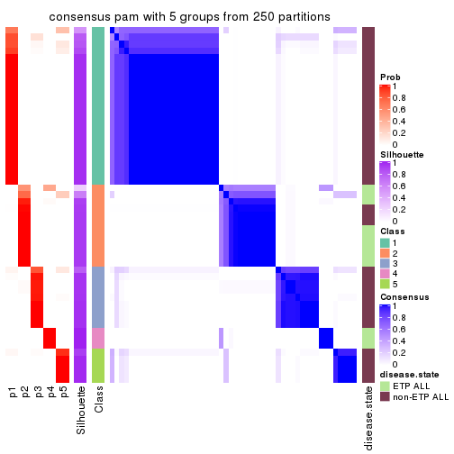
consensus_heatmap(res, k = 6)
Heatmaps for the membership of samples in all partitions to see how consistent they are:
membership_heatmap(res, k = 2)
membership_heatmap(res, k = 3)
membership_heatmap(res, k = 4)
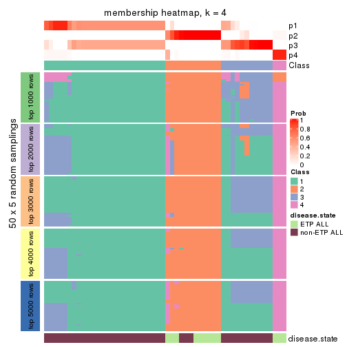
membership_heatmap(res, k = 5)
membership_heatmap(res, k = 6)
As soon as we have had the classes for columns, we can look for signatures which are significantly different between classes which can be candidate marks for certain classes. Following are the heatmaps for signatures.
Signature heatmaps where rows are scaled:
get_signatures(res, k = 2)
get_signatures(res, k = 3)
get_signatures(res, k = 4)
get_signatures(res, k = 5)
get_signatures(res, k = 6)
Signature heatmaps where rows are not scaled:
get_signatures(res, k = 2, scale_rows = FALSE)
get_signatures(res, k = 3, scale_rows = FALSE)
get_signatures(res, k = 4, scale_rows = FALSE)
get_signatures(res, k = 5, scale_rows = FALSE)
get_signatures(res, k = 6, scale_rows = FALSE)
Compare the overlap of signatures from different k:
compare_signatures(res)
get_signature() returns a data frame invisibly. TO get the list of signatures, the function
call should be assigned to a variable explicitly. In following code, if plot argument is set
to FALSE, no heatmap is plotted while only the differential analysis is performed.
# code only for demonstration
tb = get_signature(res, k = ..., plot = FALSE)
An example of the output of tb is:
#> which_row fdr mean_1 mean_2 scaled_mean_1 scaled_mean_2 km
#> 1 38 0.042760348 8.373488 9.131774 -0.5533452 0.5164555 1
#> 2 40 0.018707592 7.106213 8.469186 -0.6173731 0.5762149 1
#> 3 55 0.019134737 10.221463 11.207825 -0.6159697 0.5749050 1
#> 4 59 0.006059896 5.921854 7.869574 -0.6899429 0.6439467 1
#> 5 60 0.018055526 8.928898 10.211722 -0.6204761 0.5791110 1
#> 6 98 0.009384629 15.714769 14.887706 0.6635654 -0.6193277 2
...
The columns in tb are:
which_row: row indices corresponding to the input matrix.fdr: FDR for the differential test. mean_x: The mean value in group x.scaled_mean_x: The mean value in group x after rows are scaled.km: Row groups if k-means clustering is applied to rows.UMAP plot which shows how samples are separated.
dimension_reduction(res, k = 2, method = "UMAP")
dimension_reduction(res, k = 3, method = "UMAP")
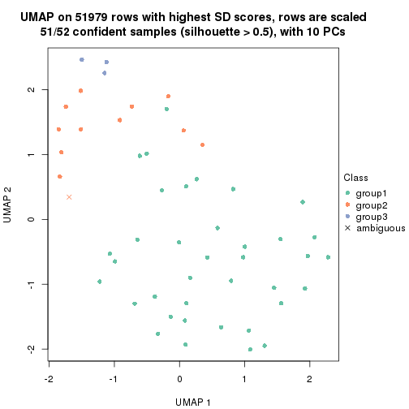
dimension_reduction(res, k = 4, method = "UMAP")
dimension_reduction(res, k = 5, method = "UMAP")
dimension_reduction(res, k = 6, method = "UMAP")
Following heatmap shows how subgroups are split when increasing k:
collect_classes(res)
Test correlation between subgroups and known annotations. If the known annotation is numeric, one-way ANOVA test is applied, and if the known annotation is discrete, chi-squared contingency table test is applied.
test_to_known_factors(res)
#> n disease.state(p) k
#> SD:pam 50 1.14e-08 2
#> SD:pam 51 5.32e-09 3
#> SD:pam 43 6.54e-07 4
#> SD:pam 51 1.07e-07 5
#> SD:pam 48 1.34e-08 6
If matrix rows can be associated to genes, consider to use functional_enrichment(res,
...) to perform function enrichment for the signature genes. See this vignette for more detailed explanations.
The object with results only for a single top-value method and a single partition method can be extracted as:
res = res_list["SD", "mclust"]
# you can also extract it by
# res = res_list["SD:mclust"]
A summary of res and all the functions that can be applied to it:
res
#> A 'ConsensusPartition' object with k = 2, 3, 4, 5, 6.
#> On a matrix with 51979 rows and 52 columns.
#> Top rows (1000, 2000, 3000, 4000, 5000) are extracted by 'SD' method.
#> Subgroups are detected by 'mclust' method.
#> Performed in total 1250 partitions by row resampling.
#> Best k for subgroups seems to be 2.
#>
#> Following methods can be applied to this 'ConsensusPartition' object:
#> [1] "cola_report" "collect_classes" "collect_plots"
#> [4] "collect_stats" "colnames" "compare_signatures"
#> [7] "consensus_heatmap" "dimension_reduction" "functional_enrichment"
#> [10] "get_anno_col" "get_anno" "get_classes"
#> [13] "get_consensus" "get_matrix" "get_membership"
#> [16] "get_param" "get_signatures" "get_stats"
#> [19] "is_best_k" "is_stable_k" "membership_heatmap"
#> [22] "ncol" "nrow" "plot_ecdf"
#> [25] "rownames" "select_partition_number" "show"
#> [28] "suggest_best_k" "test_to_known_factors"
collect_plots() function collects all the plots made from res for all k (number of partitions)
into one single page to provide an easy and fast comparison between different k.
collect_plots(res)

The plots are:
k and the heatmap of
predicted classes for each k.k.k.k.All the plots in panels can be made by individual functions and they are plotted later in this section.
select_partition_number() produces several plots showing different
statistics for choosing “optimized” k. There are following statistics:
k;k, the area increased is defined as \(A_k - A_{k-1}\).The detailed explanations of these statistics can be found in the cola vignette.
Generally speaking, lower PAC score, higher mean silhouette score or higher
concordance corresponds to better partition. Rand index and Jaccard index
measure how similar the current partition is compared to partition with k-1.
If they are too similar, we won't accept k is better than k-1.
select_partition_number(res)
The numeric values for all these statistics can be obtained by get_stats().
get_stats(res)
#> k 1-PAC mean_silhouette concordance area_increased Rand Jaccard
#> 2 2 1.000 0.999 0.999 0.4495 0.551 0.551
#> 3 3 0.836 0.910 0.955 0.4816 0.742 0.548
#> 4 4 0.780 0.815 0.906 0.1152 0.873 0.643
#> 5 5 0.737 0.762 0.838 0.0503 0.977 0.913
#> 6 6 0.793 0.762 0.846 0.0378 0.928 0.731
suggest_best_k() suggests the best \(k\) based on these statistics. The rules are as follows:
suggest_best_k(res)
#> [1] 2
Following shows the table of the partitions (You need to click the show/hide
code output link to see it). The membership matrix (columns with name p*)
is inferred by
clue::cl_consensus()
function with the SE method. Basically the value in the membership matrix
represents the probability to belong to a certain group. The finall class
label for an item is determined with the group with highest probability it
belongs to.
In get_classes() function, the entropy is calculated from the membership
matrix and the silhouette score is calculated from the consensus matrix.
cbind(get_classes(res, k = 2), get_membership(res, k = 2))
#> class entropy silhouette p1 p2
#> GSM710838 2 0.0000 0.999 0.000 1.000
#> GSM710840 2 0.0000 0.999 0.000 1.000
#> GSM710842 2 0.0000 0.999 0.000 1.000
#> GSM710844 2 0.0000 0.999 0.000 1.000
#> GSM710847 2 0.0000 0.999 0.000 1.000
#> GSM710848 2 0.0000 0.999 0.000 1.000
#> GSM710850 2 0.0000 0.999 0.000 1.000
#> GSM710931 2 0.0000 0.999 0.000 1.000
#> GSM710932 2 0.0000 0.999 0.000 1.000
#> GSM710933 2 0.0000 0.999 0.000 1.000
#> GSM710934 2 0.0000 0.999 0.000 1.000
#> GSM710935 2 0.0000 0.999 0.000 1.000
#> GSM710851 1 0.0000 0.999 1.000 0.000
#> GSM710852 1 0.0000 0.999 1.000 0.000
#> GSM710854 2 0.0000 0.999 0.000 1.000
#> GSM710856 1 0.0000 0.999 1.000 0.000
#> GSM710857 1 0.0000 0.999 1.000 0.000
#> GSM710859 1 0.0000 0.999 1.000 0.000
#> GSM710861 1 0.0000 0.999 1.000 0.000
#> GSM710864 1 0.0938 0.988 0.988 0.012
#> GSM710866 1 0.0000 0.999 1.000 0.000
#> GSM710868 1 0.0000 0.999 1.000 0.000
#> GSM710870 1 0.0000 0.999 1.000 0.000
#> GSM710872 1 0.0000 0.999 1.000 0.000
#> GSM710874 1 0.0000 0.999 1.000 0.000
#> GSM710876 1 0.0000 0.999 1.000 0.000
#> GSM710878 1 0.0000 0.999 1.000 0.000
#> GSM710880 1 0.0000 0.999 1.000 0.000
#> GSM710882 1 0.0000 0.999 1.000 0.000
#> GSM710884 1 0.0000 0.999 1.000 0.000
#> GSM710887 1 0.0000 0.999 1.000 0.000
#> GSM710889 1 0.0000 0.999 1.000 0.000
#> GSM710891 2 0.0000 0.999 0.000 1.000
#> GSM710893 1 0.0000 0.999 1.000 0.000
#> GSM710895 1 0.0000 0.999 1.000 0.000
#> GSM710897 1 0.0000 0.999 1.000 0.000
#> GSM710899 2 0.0376 0.996 0.004 0.996
#> GSM710901 1 0.0000 0.999 1.000 0.000
#> GSM710903 1 0.0000 0.999 1.000 0.000
#> GSM710904 1 0.0000 0.999 1.000 0.000
#> GSM710907 1 0.0000 0.999 1.000 0.000
#> GSM710909 1 0.0000 0.999 1.000 0.000
#> GSM710910 1 0.0938 0.988 0.988 0.012
#> GSM710912 2 0.0000 0.999 0.000 1.000
#> GSM710914 1 0.0000 0.999 1.000 0.000
#> GSM710917 2 0.0376 0.996 0.004 0.996
#> GSM710919 1 0.0000 0.999 1.000 0.000
#> GSM710921 1 0.0000 0.999 1.000 0.000
#> GSM710923 1 0.0000 0.999 1.000 0.000
#> GSM710925 1 0.0000 0.999 1.000 0.000
#> GSM710927 1 0.0000 0.999 1.000 0.000
#> GSM710929 1 0.0000 0.999 1.000 0.000
cbind(get_classes(res, k = 3), get_membership(res, k = 3))
#> class entropy silhouette p1 p2 p3
#> GSM710838 2 0.0000 0.999 0.000 1.000 0.000
#> GSM710840 2 0.0000 0.999 0.000 1.000 0.000
#> GSM710842 2 0.0000 0.999 0.000 1.000 0.000
#> GSM710844 2 0.0000 0.999 0.000 1.000 0.000
#> GSM710847 2 0.0000 0.999 0.000 1.000 0.000
#> GSM710848 2 0.0237 0.997 0.000 0.996 0.004
#> GSM710850 2 0.0000 0.999 0.000 1.000 0.000
#> GSM710931 2 0.0000 0.999 0.000 1.000 0.000
#> GSM710932 2 0.0000 0.999 0.000 1.000 0.000
#> GSM710933 2 0.0000 0.999 0.000 1.000 0.000
#> GSM710934 2 0.0000 0.999 0.000 1.000 0.000
#> GSM710935 2 0.0000 0.999 0.000 1.000 0.000
#> GSM710851 1 0.4974 0.718 0.764 0.000 0.236
#> GSM710852 1 0.0747 0.947 0.984 0.000 0.016
#> GSM710854 2 0.0424 0.994 0.000 0.992 0.008
#> GSM710856 1 0.0237 0.950 0.996 0.000 0.004
#> GSM710857 1 0.0424 0.948 0.992 0.000 0.008
#> GSM710859 3 0.0592 0.904 0.012 0.000 0.988
#> GSM710861 1 0.0000 0.950 1.000 0.000 0.000
#> GSM710864 1 0.0747 0.947 0.984 0.000 0.016
#> GSM710866 1 0.0237 0.949 0.996 0.000 0.004
#> GSM710868 1 0.0747 0.947 0.984 0.000 0.016
#> GSM710870 3 0.0592 0.904 0.012 0.000 0.988
#> GSM710872 3 0.0592 0.904 0.012 0.000 0.988
#> GSM710874 3 0.5859 0.427 0.344 0.000 0.656
#> GSM710876 3 0.4887 0.721 0.228 0.000 0.772
#> GSM710878 1 0.0237 0.949 0.996 0.000 0.004
#> GSM710880 1 0.0747 0.947 0.984 0.000 0.016
#> GSM710882 1 0.0000 0.950 1.000 0.000 0.000
#> GSM710884 1 0.0000 0.950 1.000 0.000 0.000
#> GSM710887 1 0.0000 0.950 1.000 0.000 0.000
#> GSM710889 3 0.0592 0.904 0.012 0.000 0.988
#> GSM710891 2 0.0424 0.994 0.000 0.992 0.008
#> GSM710893 1 0.0747 0.947 0.984 0.000 0.016
#> GSM710895 3 0.0592 0.904 0.012 0.000 0.988
#> GSM710897 1 0.0000 0.950 1.000 0.000 0.000
#> GSM710899 3 0.5016 0.670 0.000 0.240 0.760
#> GSM710901 1 0.3816 0.809 0.852 0.000 0.148
#> GSM710903 1 0.5016 0.718 0.760 0.000 0.240
#> GSM710904 1 0.0237 0.950 0.996 0.000 0.004
#> GSM710907 1 0.0237 0.949 0.996 0.000 0.004
#> GSM710909 3 0.4887 0.721 0.228 0.000 0.772
#> GSM710910 3 0.0661 0.900 0.008 0.004 0.988
#> GSM710912 2 0.0000 0.999 0.000 1.000 0.000
#> GSM710914 1 0.5016 0.718 0.760 0.000 0.240
#> GSM710917 3 0.4504 0.730 0.000 0.196 0.804
#> GSM710919 1 0.0000 0.950 1.000 0.000 0.000
#> GSM710921 3 0.0592 0.904 0.012 0.000 0.988
#> GSM710923 1 0.0237 0.949 0.996 0.000 0.004
#> GSM710925 3 0.0592 0.904 0.012 0.000 0.988
#> GSM710927 3 0.0592 0.904 0.012 0.000 0.988
#> GSM710929 3 0.0592 0.904 0.012 0.000 0.988
cbind(get_classes(res, k = 4), get_membership(res, k = 4))
#> class entropy silhouette p1 p2 p3 p4
#> GSM710838 2 0.0000 0.933 0.000 1.000 0.000 0.000
#> GSM710840 2 0.0000 0.933 0.000 1.000 0.000 0.000
#> GSM710842 2 0.0000 0.933 0.000 1.000 0.000 0.000
#> GSM710844 2 0.0000 0.933 0.000 1.000 0.000 0.000
#> GSM710847 2 0.0000 0.933 0.000 1.000 0.000 0.000
#> GSM710848 2 0.4661 0.550 0.000 0.652 0.000 0.348
#> GSM710850 2 0.0000 0.933 0.000 1.000 0.000 0.000
#> GSM710931 2 0.0000 0.933 0.000 1.000 0.000 0.000
#> GSM710932 2 0.0000 0.933 0.000 1.000 0.000 0.000
#> GSM710933 2 0.0000 0.933 0.000 1.000 0.000 0.000
#> GSM710934 2 0.3400 0.783 0.000 0.820 0.000 0.180
#> GSM710935 2 0.0000 0.933 0.000 1.000 0.000 0.000
#> GSM710851 4 0.5421 0.587 0.076 0.000 0.200 0.724
#> GSM710852 4 0.3873 0.762 0.228 0.000 0.000 0.772
#> GSM710854 2 0.0469 0.924 0.000 0.988 0.000 0.012
#> GSM710856 1 0.2988 0.808 0.876 0.000 0.112 0.012
#> GSM710857 1 0.2216 0.850 0.908 0.000 0.092 0.000
#> GSM710859 3 0.0000 0.847 0.000 0.000 1.000 0.000
#> GSM710861 1 0.0000 0.953 1.000 0.000 0.000 0.000
#> GSM710864 4 0.4961 0.452 0.448 0.000 0.000 0.552
#> GSM710866 1 0.0000 0.953 1.000 0.000 0.000 0.000
#> GSM710868 4 0.1940 0.775 0.076 0.000 0.000 0.924
#> GSM710870 3 0.3528 0.776 0.000 0.000 0.808 0.192
#> GSM710872 3 0.0000 0.847 0.000 0.000 1.000 0.000
#> GSM710874 3 0.4500 0.758 0.032 0.000 0.776 0.192
#> GSM710876 3 0.3895 0.735 0.184 0.000 0.804 0.012
#> GSM710878 1 0.0000 0.953 1.000 0.000 0.000 0.000
#> GSM710880 4 0.4643 0.629 0.344 0.000 0.000 0.656
#> GSM710882 1 0.0000 0.953 1.000 0.000 0.000 0.000
#> GSM710884 1 0.0000 0.953 1.000 0.000 0.000 0.000
#> GSM710887 1 0.3024 0.771 0.852 0.000 0.000 0.148
#> GSM710889 3 0.3528 0.776 0.000 0.000 0.808 0.192
#> GSM710891 2 0.0657 0.922 0.000 0.984 0.004 0.012
#> GSM710893 4 0.3873 0.762 0.228 0.000 0.000 0.772
#> GSM710895 3 0.1118 0.845 0.000 0.000 0.964 0.036
#> GSM710897 1 0.0592 0.940 0.984 0.000 0.000 0.016
#> GSM710899 3 0.5310 0.300 0.000 0.412 0.576 0.012
#> GSM710901 3 0.5268 0.391 0.396 0.000 0.592 0.012
#> GSM710903 4 0.0000 0.748 0.000 0.000 0.000 1.000
#> GSM710904 1 0.0469 0.943 0.988 0.000 0.012 0.000
#> GSM710907 1 0.0000 0.953 1.000 0.000 0.000 0.000
#> GSM710909 3 0.3852 0.739 0.180 0.000 0.808 0.012
#> GSM710910 3 0.1406 0.841 0.000 0.024 0.960 0.016
#> GSM710912 2 0.0000 0.933 0.000 1.000 0.000 0.000
#> GSM710914 4 0.0000 0.748 0.000 0.000 0.000 1.000
#> GSM710917 2 0.5231 0.301 0.000 0.604 0.384 0.012
#> GSM710919 1 0.0000 0.953 1.000 0.000 0.000 0.000
#> GSM710921 3 0.0336 0.848 0.000 0.000 0.992 0.008
#> GSM710923 1 0.0000 0.953 1.000 0.000 0.000 0.000
#> GSM710925 3 0.0469 0.848 0.000 0.000 0.988 0.012
#> GSM710927 3 0.0000 0.847 0.000 0.000 1.000 0.000
#> GSM710929 3 0.0000 0.847 0.000 0.000 1.000 0.000
cbind(get_classes(res, k = 5), get_membership(res, k = 5))
#> class entropy silhouette p1 p2 p3 p4 p5
#> GSM710838 2 0.1341 0.848 0.000 0.944 0.000 NA 0.000
#> GSM710840 2 0.0963 0.850 0.000 0.964 0.000 NA 0.000
#> GSM710842 2 0.1197 0.848 0.000 0.952 0.000 NA 0.000
#> GSM710844 2 0.2929 0.819 0.000 0.820 0.000 NA 0.000
#> GSM710847 2 0.2020 0.842 0.000 0.900 0.000 NA 0.000
#> GSM710848 2 0.6544 0.276 0.000 0.440 0.000 NA 0.356
#> GSM710850 2 0.2929 0.819 0.000 0.820 0.000 NA 0.000
#> GSM710931 2 0.1908 0.842 0.000 0.908 0.000 NA 0.000
#> GSM710932 2 0.1197 0.849 0.000 0.952 0.000 NA 0.000
#> GSM710933 2 0.2929 0.819 0.000 0.820 0.000 NA 0.000
#> GSM710934 2 0.5993 0.511 0.000 0.576 0.000 NA 0.260
#> GSM710935 2 0.1043 0.848 0.000 0.960 0.000 NA 0.000
#> GSM710851 5 0.3734 0.802 0.060 0.000 0.128 NA 0.812
#> GSM710852 5 0.2569 0.893 0.076 0.000 0.012 NA 0.896
#> GSM710854 2 0.4015 0.776 0.000 0.788 0.016 NA 0.024
#> GSM710856 1 0.2450 0.727 0.900 0.000 0.052 NA 0.048
#> GSM710857 1 0.2423 0.730 0.896 0.000 0.080 NA 0.024
#> GSM710859 3 0.0162 0.861 0.000 0.000 0.996 NA 0.004
#> GSM710861 1 0.6063 0.586 0.568 0.000 0.000 NA 0.176
#> GSM710864 5 0.3953 0.770 0.168 0.000 0.000 NA 0.784
#> GSM710866 1 0.4287 0.663 0.540 0.000 0.000 NA 0.000
#> GSM710868 5 0.1211 0.881 0.024 0.000 0.000 NA 0.960
#> GSM710870 3 0.2286 0.832 0.004 0.000 0.888 NA 0.108
#> GSM710872 3 0.0162 0.861 0.000 0.000 0.996 NA 0.004
#> GSM710874 3 0.3386 0.803 0.040 0.000 0.832 NA 0.128
#> GSM710876 3 0.3925 0.804 0.048 0.000 0.828 NA 0.032
#> GSM710878 1 0.4287 0.663 0.540 0.000 0.000 NA 0.000
#> GSM710880 5 0.3111 0.846 0.144 0.000 0.012 NA 0.840
#> GSM710882 1 0.0000 0.766 1.000 0.000 0.000 NA 0.000
#> GSM710884 1 0.0404 0.766 0.988 0.000 0.012 NA 0.000
#> GSM710887 1 0.5086 0.571 0.684 0.000 0.004 NA 0.236
#> GSM710889 3 0.2286 0.832 0.004 0.000 0.888 NA 0.108
#> GSM710891 2 0.4194 0.771 0.000 0.780 0.020 NA 0.028
#> GSM710893 5 0.2444 0.895 0.068 0.000 0.012 NA 0.904
#> GSM710895 3 0.1121 0.856 0.000 0.000 0.956 NA 0.044
#> GSM710897 1 0.1168 0.758 0.960 0.000 0.008 NA 0.032
#> GSM710899 3 0.6073 0.570 0.000 0.188 0.624 NA 0.016
#> GSM710901 3 0.6100 0.462 0.264 0.000 0.612 NA 0.032
#> GSM710903 5 0.1648 0.883 0.020 0.000 0.040 NA 0.940
#> GSM710904 1 0.1282 0.754 0.952 0.000 0.044 NA 0.004
#> GSM710907 1 0.4287 0.663 0.540 0.000 0.000 NA 0.000
#> GSM710909 3 0.3853 0.807 0.044 0.000 0.832 NA 0.032
#> GSM710910 3 0.1518 0.856 0.000 0.012 0.952 NA 0.020
#> GSM710912 2 0.2127 0.829 0.000 0.892 0.000 NA 0.000
#> GSM710914 5 0.1808 0.883 0.020 0.000 0.040 NA 0.936
#> GSM710917 3 0.6826 0.137 0.000 0.356 0.452 NA 0.016
#> GSM710919 1 0.0162 0.766 0.996 0.000 0.000 NA 0.000
#> GSM710921 3 0.0162 0.861 0.000 0.000 0.996 NA 0.004
#> GSM710923 1 0.4219 0.682 0.584 0.000 0.000 NA 0.000
#> GSM710925 3 0.0404 0.861 0.000 0.000 0.988 NA 0.012
#> GSM710927 3 0.0162 0.861 0.000 0.000 0.996 NA 0.004
#> GSM710929 3 0.0000 0.861 0.000 0.000 1.000 NA 0.000
cbind(get_classes(res, k = 6), get_membership(res, k = 6))
#> class entropy silhouette p1 p2 p3 p4 p5 p6
#> GSM710838 2 0.0146 0.838 0.000 0.996 0.000 NA 0.000 0.000
#> GSM710840 2 0.0000 0.838 0.000 1.000 0.000 NA 0.000 0.000
#> GSM710842 2 0.1141 0.824 0.000 0.948 0.000 NA 0.000 0.000
#> GSM710844 2 0.3774 0.608 0.000 0.592 0.000 NA 0.000 0.000
#> GSM710847 2 0.0547 0.837 0.000 0.980 0.000 NA 0.000 0.000
#> GSM710848 5 0.6499 0.499 0.000 0.192 0.000 NA 0.556 0.116
#> GSM710850 2 0.3774 0.608 0.000 0.592 0.000 NA 0.000 0.000
#> GSM710931 2 0.0547 0.837 0.000 0.980 0.000 NA 0.000 0.000
#> GSM710932 2 0.0146 0.838 0.000 0.996 0.000 NA 0.000 0.000
#> GSM710933 2 0.3774 0.608 0.000 0.592 0.000 NA 0.000 0.000
#> GSM710934 5 0.6299 0.454 0.000 0.252 0.000 NA 0.552 0.112
#> GSM710935 2 0.0000 0.838 0.000 1.000 0.000 NA 0.000 0.000
#> GSM710851 5 0.3948 0.698 0.056 0.000 0.096 NA 0.808 0.008
#> GSM710852 5 0.1275 0.799 0.016 0.000 0.012 NA 0.956 0.016
#> GSM710854 2 0.4692 0.627 0.000 0.680 0.012 NA 0.068 0.000
#> GSM710856 1 0.0291 0.913 0.992 0.000 0.004 NA 0.004 0.000
#> GSM710857 1 0.1232 0.888 0.956 0.000 0.016 NA 0.000 0.004
#> GSM710859 3 0.1465 0.840 0.024 0.000 0.948 NA 0.004 0.004
#> GSM710861 5 0.5753 -0.065 0.172 0.000 0.000 NA 0.444 0.384
#> GSM710864 5 0.3644 0.742 0.056 0.004 0.004 NA 0.836 0.060
#> GSM710866 6 0.2389 0.954 0.128 0.000 0.000 NA 0.008 0.864
#> GSM710868 5 0.1129 0.800 0.012 0.000 0.012 NA 0.964 0.008
#> GSM710870 3 0.2402 0.830 0.020 0.000 0.904 NA 0.040 0.004
#> GSM710872 3 0.1176 0.839 0.024 0.000 0.956 NA 0.000 0.000
#> GSM710874 3 0.4900 0.709 0.048 0.000 0.712 NA 0.188 0.008
#> GSM710876 3 0.4366 0.752 0.044 0.000 0.720 NA 0.004 0.012
#> GSM710878 6 0.2389 0.954 0.128 0.000 0.000 NA 0.008 0.864
#> GSM710880 5 0.1657 0.792 0.040 0.000 0.012 NA 0.936 0.012
#> GSM710882 1 0.0603 0.912 0.980 0.000 0.000 NA 0.004 0.016
#> GSM710884 1 0.0260 0.915 0.992 0.000 0.000 NA 0.000 0.008
#> GSM710887 1 0.5248 0.476 0.636 0.000 0.008 NA 0.188 0.168
#> GSM710889 3 0.2677 0.828 0.028 0.000 0.892 NA 0.040 0.008
#> GSM710891 2 0.4354 0.638 0.000 0.692 0.000 NA 0.068 0.000
#> GSM710893 5 0.1275 0.799 0.016 0.000 0.012 NA 0.956 0.016
#> GSM710895 3 0.1722 0.839 0.004 0.000 0.936 NA 0.016 0.008
#> GSM710897 1 0.1036 0.902 0.964 0.000 0.008 NA 0.024 0.004
#> GSM710899 3 0.6367 0.519 0.000 0.160 0.548 NA 0.068 0.000
#> GSM710901 3 0.5307 0.703 0.072 0.000 0.644 NA 0.004 0.032
#> GSM710903 5 0.0458 0.796 0.000 0.000 0.016 NA 0.984 0.000
#> GSM710904 1 0.0146 0.912 0.996 0.000 0.004 NA 0.000 0.000
#> GSM710907 6 0.2389 0.954 0.128 0.000 0.000 NA 0.008 0.864
#> GSM710909 3 0.4591 0.746 0.048 0.000 0.700 NA 0.004 0.016
#> GSM710910 3 0.2044 0.818 0.000 0.004 0.908 NA 0.004 0.008
#> GSM710912 2 0.1387 0.817 0.000 0.932 0.000 NA 0.000 0.000
#> GSM710914 5 0.0458 0.796 0.000 0.000 0.016 NA 0.984 0.000
#> GSM710917 3 0.6729 0.434 0.000 0.172 0.496 NA 0.068 0.004
#> GSM710919 1 0.0891 0.907 0.968 0.000 0.000 NA 0.008 0.024
#> GSM710921 3 0.0291 0.842 0.004 0.000 0.992 NA 0.000 0.000
#> GSM710923 6 0.3298 0.844 0.236 0.000 0.000 NA 0.008 0.756
#> GSM710925 3 0.0146 0.842 0.000 0.000 0.996 NA 0.004 0.000
#> GSM710927 3 0.1237 0.840 0.020 0.004 0.956 NA 0.000 0.000
#> GSM710929 3 0.0291 0.842 0.004 0.000 0.992 NA 0.000 0.000
Heatmaps for the consensus matrix. It visualizes the probability of two samples to be in a same group.
consensus_heatmap(res, k = 2)
consensus_heatmap(res, k = 3)
consensus_heatmap(res, k = 4)
consensus_heatmap(res, k = 5)
consensus_heatmap(res, k = 6)
Heatmaps for the membership of samples in all partitions to see how consistent they are:
membership_heatmap(res, k = 2)
membership_heatmap(res, k = 3)
membership_heatmap(res, k = 4)

membership_heatmap(res, k = 5)
membership_heatmap(res, k = 6)

As soon as we have had the classes for columns, we can look for signatures which are significantly different between classes which can be candidate marks for certain classes. Following are the heatmaps for signatures.
Signature heatmaps where rows are scaled:
get_signatures(res, k = 2)
get_signatures(res, k = 3)
get_signatures(res, k = 4)
get_signatures(res, k = 5)
get_signatures(res, k = 6)
Signature heatmaps where rows are not scaled:
get_signatures(res, k = 2, scale_rows = FALSE)
get_signatures(res, k = 3, scale_rows = FALSE)
get_signatures(res, k = 4, scale_rows = FALSE)
get_signatures(res, k = 5, scale_rows = FALSE)
get_signatures(res, k = 6, scale_rows = FALSE)
Compare the overlap of signatures from different k:
compare_signatures(res)
get_signature() returns a data frame invisibly. TO get the list of signatures, the function
call should be assigned to a variable explicitly. In following code, if plot argument is set
to FALSE, no heatmap is plotted while only the differential analysis is performed.
# code only for demonstration
tb = get_signature(res, k = ..., plot = FALSE)
An example of the output of tb is:
#> which_row fdr mean_1 mean_2 scaled_mean_1 scaled_mean_2 km
#> 1 38 0.042760348 8.373488 9.131774 -0.5533452 0.5164555 1
#> 2 40 0.018707592 7.106213 8.469186 -0.6173731 0.5762149 1
#> 3 55 0.019134737 10.221463 11.207825 -0.6159697 0.5749050 1
#> 4 59 0.006059896 5.921854 7.869574 -0.6899429 0.6439467 1
#> 5 60 0.018055526 8.928898 10.211722 -0.6204761 0.5791110 1
#> 6 98 0.009384629 15.714769 14.887706 0.6635654 -0.6193277 2
...
The columns in tb are:
which_row: row indices corresponding to the input matrix.fdr: FDR for the differential test. mean_x: The mean value in group x.scaled_mean_x: The mean value in group x after rows are scaled.km: Row groups if k-means clustering is applied to rows.UMAP plot which shows how samples are separated.
dimension_reduction(res, k = 2, method = "UMAP")
dimension_reduction(res, k = 3, method = "UMAP")
dimension_reduction(res, k = 4, method = "UMAP")
dimension_reduction(res, k = 5, method = "UMAP")
dimension_reduction(res, k = 6, method = "UMAP")
Following heatmap shows how subgroups are split when increasing k:
collect_classes(res)
Test correlation between subgroups and known annotations. If the known annotation is numeric, one-way ANOVA test is applied, and if the known annotation is discrete, chi-squared contingency table test is applied.
test_to_known_factors(res)
#> n disease.state(p) k
#> SD:mclust 52 1.06e-07 2
#> SD:mclust 51 6.64e-09 3
#> SD:mclust 48 1.11e-07 4
#> SD:mclust 49 9.74e-08 5
#> SD:mclust 47 1.08e-06 6
If matrix rows can be associated to genes, consider to use functional_enrichment(res,
...) to perform function enrichment for the signature genes. See this vignette for more detailed explanations.
The object with results only for a single top-value method and a single partition method can be extracted as:
res = res_list["SD", "NMF"]
# you can also extract it by
# res = res_list["SD:NMF"]
A summary of res and all the functions that can be applied to it:
res
#> A 'ConsensusPartition' object with k = 2, 3, 4, 5, 6.
#> On a matrix with 51979 rows and 52 columns.
#> Top rows (1000, 2000, 3000, 4000, 5000) are extracted by 'SD' method.
#> Subgroups are detected by 'NMF' method.
#> Performed in total 1250 partitions by row resampling.
#> Best k for subgroups seems to be 3.
#>
#> Following methods can be applied to this 'ConsensusPartition' object:
#> [1] "cola_report" "collect_classes" "collect_plots"
#> [4] "collect_stats" "colnames" "compare_signatures"
#> [7] "consensus_heatmap" "dimension_reduction" "functional_enrichment"
#> [10] "get_anno_col" "get_anno" "get_classes"
#> [13] "get_consensus" "get_matrix" "get_membership"
#> [16] "get_param" "get_signatures" "get_stats"
#> [19] "is_best_k" "is_stable_k" "membership_heatmap"
#> [22] "ncol" "nrow" "plot_ecdf"
#> [25] "rownames" "select_partition_number" "show"
#> [28] "suggest_best_k" "test_to_known_factors"
collect_plots() function collects all the plots made from res for all k (number of partitions)
into one single page to provide an easy and fast comparison between different k.
collect_plots(res)
The plots are:
k and the heatmap of
predicted classes for each k.k.k.k.All the plots in panels can be made by individual functions and they are plotted later in this section.
select_partition_number() produces several plots showing different
statistics for choosing “optimized” k. There are following statistics:
k;k, the area increased is defined as \(A_k - A_{k-1}\).The detailed explanations of these statistics can be found in the cola vignette.
Generally speaking, lower PAC score, higher mean silhouette score or higher
concordance corresponds to better partition. Rand index and Jaccard index
measure how similar the current partition is compared to partition with k-1.
If they are too similar, we won't accept k is better than k-1.
select_partition_number(res)
The numeric values for all these statistics can be obtained by get_stats().
get_stats(res)
#> k 1-PAC mean_silhouette concordance area_increased Rand Jaccard
#> 2 2 1.000 0.999 0.999 0.4497 0.551 0.551
#> 3 3 1.000 0.964 0.986 0.4865 0.742 0.548
#> 4 4 0.851 0.853 0.928 0.1259 0.894 0.692
#> 5 5 0.793 0.723 0.861 0.0587 0.878 0.573
#> 6 6 0.786 0.716 0.795 0.0382 0.962 0.820
suggest_best_k() suggests the best \(k\) based on these statistics. The rules are as follows:
suggest_best_k(res)
#> [1] 3
#> attr(,"optional")
#> [1] 2
There is also optional best \(k\) = 2 that is worth to check.
Following shows the table of the partitions (You need to click the show/hide
code output link to see it). The membership matrix (columns with name p*)
is inferred by
clue::cl_consensus()
function with the SE method. Basically the value in the membership matrix
represents the probability to belong to a certain group. The finall class
label for an item is determined with the group with highest probability it
belongs to.
In get_classes() function, the entropy is calculated from the membership
matrix and the silhouette score is calculated from the consensus matrix.
cbind(get_classes(res, k = 2), get_membership(res, k = 2))
#> class entropy silhouette p1 p2
#> GSM710838 2 0.000 1.000 0.000 1.000
#> GSM710840 2 0.000 1.000 0.000 1.000
#> GSM710842 2 0.000 1.000 0.000 1.000
#> GSM710844 2 0.000 1.000 0.000 1.000
#> GSM710847 2 0.000 1.000 0.000 1.000
#> GSM710848 2 0.000 1.000 0.000 1.000
#> GSM710850 2 0.000 1.000 0.000 1.000
#> GSM710931 2 0.000 1.000 0.000 1.000
#> GSM710932 2 0.000 1.000 0.000 1.000
#> GSM710933 2 0.000 1.000 0.000 1.000
#> GSM710934 2 0.000 1.000 0.000 1.000
#> GSM710935 2 0.000 1.000 0.000 1.000
#> GSM710851 1 0.000 0.999 1.000 0.000
#> GSM710852 1 0.000 0.999 1.000 0.000
#> GSM710854 2 0.000 1.000 0.000 1.000
#> GSM710856 1 0.000 0.999 1.000 0.000
#> GSM710857 1 0.000 0.999 1.000 0.000
#> GSM710859 1 0.000 0.999 1.000 0.000
#> GSM710861 1 0.000 0.999 1.000 0.000
#> GSM710864 1 0.224 0.963 0.964 0.036
#> GSM710866 1 0.000 0.999 1.000 0.000
#> GSM710868 1 0.000 0.999 1.000 0.000
#> GSM710870 1 0.000 0.999 1.000 0.000
#> GSM710872 1 0.000 0.999 1.000 0.000
#> GSM710874 1 0.000 0.999 1.000 0.000
#> GSM710876 1 0.000 0.999 1.000 0.000
#> GSM710878 1 0.000 0.999 1.000 0.000
#> GSM710880 1 0.000 0.999 1.000 0.000
#> GSM710882 1 0.000 0.999 1.000 0.000
#> GSM710884 1 0.000 0.999 1.000 0.000
#> GSM710887 1 0.000 0.999 1.000 0.000
#> GSM710889 1 0.000 0.999 1.000 0.000
#> GSM710891 2 0.000 1.000 0.000 1.000
#> GSM710893 1 0.000 0.999 1.000 0.000
#> GSM710895 1 0.000 0.999 1.000 0.000
#> GSM710897 1 0.000 0.999 1.000 0.000
#> GSM710899 2 0.000 1.000 0.000 1.000
#> GSM710901 1 0.000 0.999 1.000 0.000
#> GSM710903 1 0.000 0.999 1.000 0.000
#> GSM710904 1 0.000 0.999 1.000 0.000
#> GSM710907 1 0.000 0.999 1.000 0.000
#> GSM710909 1 0.000 0.999 1.000 0.000
#> GSM710910 1 0.000 0.999 1.000 0.000
#> GSM710912 2 0.000 1.000 0.000 1.000
#> GSM710914 1 0.000 0.999 1.000 0.000
#> GSM710917 2 0.000 1.000 0.000 1.000
#> GSM710919 1 0.000 0.999 1.000 0.000
#> GSM710921 1 0.000 0.999 1.000 0.000
#> GSM710923 1 0.000 0.999 1.000 0.000
#> GSM710925 1 0.000 0.999 1.000 0.000
#> GSM710927 1 0.000 0.999 1.000 0.000
#> GSM710929 1 0.000 0.999 1.000 0.000
cbind(get_classes(res, k = 3), get_membership(res, k = 3))
#> class entropy silhouette p1 p2 p3
#> GSM710838 2 0.0000 0.996 0.000 1.000 0.000
#> GSM710840 2 0.0000 0.996 0.000 1.000 0.000
#> GSM710842 2 0.0000 0.996 0.000 1.000 0.000
#> GSM710844 2 0.0000 0.996 0.000 1.000 0.000
#> GSM710847 2 0.0000 0.996 0.000 1.000 0.000
#> GSM710848 2 0.0000 0.996 0.000 1.000 0.000
#> GSM710850 2 0.0000 0.996 0.000 1.000 0.000
#> GSM710931 2 0.0000 0.996 0.000 1.000 0.000
#> GSM710932 2 0.0000 0.996 0.000 1.000 0.000
#> GSM710933 2 0.0000 0.996 0.000 1.000 0.000
#> GSM710934 2 0.0000 0.996 0.000 1.000 0.000
#> GSM710935 2 0.0000 0.996 0.000 1.000 0.000
#> GSM710851 1 0.0000 0.978 1.000 0.000 0.000
#> GSM710852 1 0.0000 0.978 1.000 0.000 0.000
#> GSM710854 2 0.0000 0.996 0.000 1.000 0.000
#> GSM710856 1 0.0000 0.978 1.000 0.000 0.000
#> GSM710857 1 0.0000 0.978 1.000 0.000 0.000
#> GSM710859 3 0.0000 0.984 0.000 0.000 1.000
#> GSM710861 1 0.0000 0.978 1.000 0.000 0.000
#> GSM710864 1 0.0000 0.978 1.000 0.000 0.000
#> GSM710866 1 0.0000 0.978 1.000 0.000 0.000
#> GSM710868 1 0.0000 0.978 1.000 0.000 0.000
#> GSM710870 3 0.0000 0.984 0.000 0.000 1.000
#> GSM710872 3 0.0000 0.984 0.000 0.000 1.000
#> GSM710874 1 0.6267 0.144 0.548 0.000 0.452
#> GSM710876 3 0.0000 0.984 0.000 0.000 1.000
#> GSM710878 1 0.0000 0.978 1.000 0.000 0.000
#> GSM710880 1 0.0000 0.978 1.000 0.000 0.000
#> GSM710882 1 0.0000 0.978 1.000 0.000 0.000
#> GSM710884 1 0.0000 0.978 1.000 0.000 0.000
#> GSM710887 1 0.0000 0.978 1.000 0.000 0.000
#> GSM710889 3 0.2448 0.916 0.076 0.000 0.924
#> GSM710891 2 0.1964 0.941 0.000 0.944 0.056
#> GSM710893 1 0.0000 0.978 1.000 0.000 0.000
#> GSM710895 3 0.0000 0.984 0.000 0.000 1.000
#> GSM710897 1 0.0000 0.978 1.000 0.000 0.000
#> GSM710899 3 0.0000 0.984 0.000 0.000 1.000
#> GSM710901 3 0.3340 0.867 0.120 0.000 0.880
#> GSM710903 1 0.0000 0.978 1.000 0.000 0.000
#> GSM710904 1 0.0000 0.978 1.000 0.000 0.000
#> GSM710907 1 0.0000 0.978 1.000 0.000 0.000
#> GSM710909 3 0.0000 0.984 0.000 0.000 1.000
#> GSM710910 3 0.0000 0.984 0.000 0.000 1.000
#> GSM710912 2 0.0000 0.996 0.000 1.000 0.000
#> GSM710914 1 0.0000 0.978 1.000 0.000 0.000
#> GSM710917 3 0.0237 0.981 0.000 0.004 0.996
#> GSM710919 1 0.0000 0.978 1.000 0.000 0.000
#> GSM710921 3 0.0000 0.984 0.000 0.000 1.000
#> GSM710923 1 0.0000 0.978 1.000 0.000 0.000
#> GSM710925 3 0.0000 0.984 0.000 0.000 1.000
#> GSM710927 3 0.0000 0.984 0.000 0.000 1.000
#> GSM710929 3 0.0000 0.984 0.000 0.000 1.000
cbind(get_classes(res, k = 4), get_membership(res, k = 4))
#> class entropy silhouette p1 p2 p3 p4
#> GSM710838 2 0.0188 0.9319 0.000 0.996 0.000 0.004
#> GSM710840 2 0.0188 0.9319 0.000 0.996 0.000 0.004
#> GSM710842 2 0.1302 0.9047 0.000 0.956 0.044 0.000
#> GSM710844 2 0.1211 0.9209 0.000 0.960 0.000 0.040
#> GSM710847 2 0.0000 0.9316 0.000 1.000 0.000 0.000
#> GSM710848 2 0.4996 0.2174 0.000 0.516 0.000 0.484
#> GSM710850 2 0.1211 0.9209 0.000 0.960 0.000 0.040
#> GSM710931 2 0.0000 0.9316 0.000 1.000 0.000 0.000
#> GSM710932 2 0.0188 0.9319 0.000 0.996 0.000 0.004
#> GSM710933 2 0.1211 0.9209 0.000 0.960 0.000 0.040
#> GSM710934 2 0.4277 0.6630 0.000 0.720 0.000 0.280
#> GSM710935 2 0.0188 0.9319 0.000 0.996 0.000 0.004
#> GSM710851 4 0.2222 0.8375 0.060 0.000 0.016 0.924
#> GSM710852 4 0.3024 0.8243 0.148 0.000 0.000 0.852
#> GSM710854 2 0.0188 0.9319 0.000 0.996 0.000 0.004
#> GSM710856 1 0.0592 0.9195 0.984 0.000 0.000 0.016
#> GSM710857 1 0.2408 0.8280 0.896 0.000 0.000 0.104
#> GSM710859 3 0.1118 0.9399 0.000 0.000 0.964 0.036
#> GSM710861 1 0.0000 0.9300 1.000 0.000 0.000 0.000
#> GSM710864 1 0.4907 0.0891 0.580 0.000 0.000 0.420
#> GSM710866 1 0.0000 0.9300 1.000 0.000 0.000 0.000
#> GSM710868 4 0.3172 0.8088 0.160 0.000 0.000 0.840
#> GSM710870 3 0.3400 0.8307 0.000 0.000 0.820 0.180
#> GSM710872 3 0.0336 0.9469 0.000 0.000 0.992 0.008
#> GSM710874 4 0.4797 0.5379 0.020 0.000 0.260 0.720
#> GSM710876 3 0.0000 0.9465 0.000 0.000 1.000 0.000
#> GSM710878 1 0.0000 0.9300 1.000 0.000 0.000 0.000
#> GSM710880 4 0.4888 0.4004 0.412 0.000 0.000 0.588
#> GSM710882 1 0.0000 0.9300 1.000 0.000 0.000 0.000
#> GSM710884 1 0.0000 0.9300 1.000 0.000 0.000 0.000
#> GSM710887 1 0.0000 0.9300 1.000 0.000 0.000 0.000
#> GSM710889 3 0.4399 0.7658 0.020 0.000 0.768 0.212
#> GSM710891 2 0.1256 0.9134 0.000 0.964 0.028 0.008
#> GSM710893 4 0.2814 0.8299 0.132 0.000 0.000 0.868
#> GSM710895 3 0.2760 0.8826 0.000 0.000 0.872 0.128
#> GSM710897 1 0.0336 0.9246 0.992 0.000 0.000 0.008
#> GSM710899 3 0.1022 0.9414 0.000 0.000 0.968 0.032
#> GSM710901 1 0.4008 0.6309 0.756 0.000 0.244 0.000
#> GSM710903 4 0.1004 0.8298 0.024 0.000 0.004 0.972
#> GSM710904 1 0.0000 0.9300 1.000 0.000 0.000 0.000
#> GSM710907 1 0.0000 0.9300 1.000 0.000 0.000 0.000
#> GSM710909 3 0.0000 0.9465 0.000 0.000 1.000 0.000
#> GSM710910 3 0.0000 0.9465 0.000 0.000 1.000 0.000
#> GSM710912 2 0.0000 0.9316 0.000 1.000 0.000 0.000
#> GSM710914 4 0.1356 0.8343 0.032 0.000 0.008 0.960
#> GSM710917 3 0.0469 0.9392 0.000 0.012 0.988 0.000
#> GSM710919 1 0.0000 0.9300 1.000 0.000 0.000 0.000
#> GSM710921 3 0.0336 0.9469 0.000 0.000 0.992 0.008
#> GSM710923 1 0.0000 0.9300 1.000 0.000 0.000 0.000
#> GSM710925 3 0.1867 0.9226 0.000 0.000 0.928 0.072
#> GSM710927 3 0.0000 0.9465 0.000 0.000 1.000 0.000
#> GSM710929 3 0.0000 0.9465 0.000 0.000 1.000 0.000
cbind(get_classes(res, k = 5), get_membership(res, k = 5))
#> class entropy silhouette p1 p2 p3 p4 p5
#> GSM710838 2 0.0880 0.8772 0.000 0.968 0.000 0.032 0.000
#> GSM710840 2 0.0000 0.8844 0.000 1.000 0.000 0.000 0.000
#> GSM710842 2 0.5555 0.3611 0.000 0.556 0.380 0.056 0.008
#> GSM710844 2 0.4867 0.7483 0.000 0.716 0.000 0.104 0.180
#> GSM710847 2 0.0162 0.8843 0.000 0.996 0.000 0.004 0.000
#> GSM710848 4 0.1908 0.7575 0.000 0.092 0.000 0.908 0.000
#> GSM710850 2 0.4867 0.7483 0.000 0.716 0.000 0.104 0.180
#> GSM710931 2 0.0162 0.8843 0.000 0.996 0.000 0.004 0.000
#> GSM710932 2 0.0000 0.8844 0.000 1.000 0.000 0.000 0.000
#> GSM710933 2 0.4867 0.7483 0.000 0.716 0.000 0.104 0.180
#> GSM710934 4 0.3085 0.7115 0.000 0.116 0.000 0.852 0.032
#> GSM710935 2 0.0000 0.8844 0.000 1.000 0.000 0.000 0.000
#> GSM710851 5 0.3768 0.6439 0.004 0.000 0.008 0.228 0.760
#> GSM710852 4 0.2830 0.7775 0.044 0.000 0.000 0.876 0.080
#> GSM710854 2 0.0000 0.8844 0.000 1.000 0.000 0.000 0.000
#> GSM710856 1 0.4067 0.5894 0.692 0.000 0.000 0.008 0.300
#> GSM710857 1 0.3280 0.7589 0.812 0.000 0.000 0.012 0.176
#> GSM710859 3 0.4446 -0.1509 0.000 0.000 0.520 0.004 0.476
#> GSM710861 1 0.0000 0.9161 1.000 0.000 0.000 0.000 0.000
#> GSM710864 4 0.4015 0.5058 0.348 0.000 0.000 0.652 0.000
#> GSM710866 1 0.0000 0.9161 1.000 0.000 0.000 0.000 0.000
#> GSM710868 4 0.2209 0.7917 0.056 0.000 0.000 0.912 0.032
#> GSM710870 5 0.3596 0.6802 0.000 0.000 0.200 0.016 0.784
#> GSM710872 3 0.2719 0.7041 0.000 0.000 0.852 0.004 0.144
#> GSM710874 5 0.4334 0.7041 0.000 0.000 0.092 0.140 0.768
#> GSM710876 3 0.1082 0.7783 0.028 0.000 0.964 0.000 0.008
#> GSM710878 1 0.0000 0.9161 1.000 0.000 0.000 0.000 0.000
#> GSM710880 1 0.5843 0.3223 0.572 0.000 0.000 0.304 0.124
#> GSM710882 1 0.0162 0.9162 0.996 0.000 0.000 0.000 0.004
#> GSM710884 1 0.0404 0.9143 0.988 0.000 0.000 0.000 0.012
#> GSM710887 1 0.0162 0.9160 0.996 0.000 0.000 0.000 0.004
#> GSM710889 5 0.3965 0.6964 0.008 0.000 0.180 0.028 0.784
#> GSM710891 2 0.1717 0.8458 0.000 0.936 0.008 0.004 0.052
#> GSM710893 4 0.2712 0.7712 0.032 0.000 0.000 0.880 0.088
#> GSM710895 5 0.4367 0.3187 0.000 0.000 0.416 0.004 0.580
#> GSM710897 1 0.0794 0.9047 0.972 0.000 0.000 0.000 0.028
#> GSM710899 3 0.4293 0.6466 0.000 0.064 0.772 0.004 0.160
#> GSM710901 3 0.4561 -0.0377 0.488 0.000 0.504 0.000 0.008
#> GSM710903 5 0.3857 0.5492 0.000 0.000 0.000 0.312 0.688
#> GSM710904 1 0.0404 0.9143 0.988 0.000 0.000 0.000 0.012
#> GSM710907 1 0.0000 0.9161 1.000 0.000 0.000 0.000 0.000
#> GSM710909 3 0.0798 0.7855 0.016 0.000 0.976 0.000 0.008
#> GSM710910 3 0.0000 0.7869 0.000 0.000 1.000 0.000 0.000
#> GSM710912 2 0.0955 0.8785 0.000 0.968 0.000 0.004 0.028
#> GSM710914 5 0.3684 0.5960 0.000 0.000 0.000 0.280 0.720
#> GSM710917 3 0.1197 0.7604 0.000 0.048 0.952 0.000 0.000
#> GSM710919 1 0.0162 0.9162 0.996 0.000 0.000 0.000 0.004
#> GSM710921 3 0.2074 0.7412 0.000 0.000 0.896 0.000 0.104
#> GSM710923 1 0.0000 0.9161 1.000 0.000 0.000 0.000 0.000
#> GSM710925 5 0.4397 0.2670 0.000 0.000 0.432 0.004 0.564
#> GSM710927 3 0.0290 0.7874 0.000 0.000 0.992 0.000 0.008
#> GSM710929 3 0.0290 0.7874 0.000 0.000 0.992 0.000 0.008
cbind(get_classes(res, k = 6), get_membership(res, k = 6))
#> class entropy silhouette p1 p2 p3 p4 p5 p6
#> GSM710838 2 0.0146 0.8609 0.000 0.996 0.000 0.004 0.000 0.000
#> GSM710840 2 0.0000 0.8619 0.000 1.000 0.000 0.000 0.000 0.000
#> GSM710842 3 0.4804 -0.0636 0.000 0.456 0.492 0.052 0.000 0.000
#> GSM710844 4 0.4338 1.0000 0.000 0.488 0.000 0.492 0.000 0.020
#> GSM710847 2 0.0146 0.8609 0.000 0.996 0.000 0.004 0.000 0.000
#> GSM710848 6 0.1707 0.8028 0.000 0.056 0.000 0.012 0.004 0.928
#> GSM710850 4 0.4338 1.0000 0.000 0.488 0.000 0.492 0.000 0.020
#> GSM710931 2 0.0632 0.8370 0.000 0.976 0.000 0.024 0.000 0.000
#> GSM710932 2 0.0000 0.8619 0.000 1.000 0.000 0.000 0.000 0.000
#> GSM710933 4 0.4338 1.0000 0.000 0.488 0.000 0.492 0.000 0.020
#> GSM710934 6 0.1265 0.8070 0.000 0.044 0.000 0.008 0.000 0.948
#> GSM710935 2 0.0363 0.8560 0.000 0.988 0.000 0.012 0.000 0.000
#> GSM710851 5 0.1333 0.7837 0.008 0.000 0.000 0.000 0.944 0.048
#> GSM710852 6 0.1719 0.8165 0.060 0.000 0.000 0.000 0.016 0.924
#> GSM710854 2 0.1753 0.7592 0.000 0.912 0.004 0.084 0.000 0.000
#> GSM710856 1 0.3717 0.5912 0.708 0.000 0.000 0.016 0.276 0.000
#> GSM710857 1 0.3309 0.7185 0.800 0.000 0.000 0.024 0.172 0.004
#> GSM710859 3 0.6331 0.1706 0.004 0.000 0.388 0.312 0.292 0.004
#> GSM710861 1 0.2805 0.8028 0.812 0.000 0.000 0.184 0.000 0.004
#> GSM710864 6 0.5357 0.4750 0.232 0.000 0.000 0.180 0.000 0.588
#> GSM710866 1 0.2805 0.8028 0.812 0.000 0.000 0.184 0.000 0.004
#> GSM710868 6 0.0622 0.8188 0.012 0.000 0.000 0.000 0.008 0.980
#> GSM710870 5 0.1477 0.7679 0.048 0.000 0.004 0.008 0.940 0.000
#> GSM710872 3 0.5079 0.5498 0.000 0.000 0.600 0.304 0.092 0.004
#> GSM710874 5 0.1152 0.7848 0.000 0.000 0.004 0.000 0.952 0.044
#> GSM710876 3 0.1615 0.7174 0.004 0.000 0.928 0.064 0.004 0.000
#> GSM710878 1 0.2805 0.8028 0.812 0.000 0.000 0.184 0.000 0.004
#> GSM710880 1 0.4747 0.5617 0.692 0.000 0.000 0.008 0.108 0.192
#> GSM710882 1 0.1788 0.8270 0.916 0.000 0.000 0.076 0.004 0.004
#> GSM710884 1 0.0713 0.8250 0.972 0.000 0.000 0.000 0.028 0.000
#> GSM710887 1 0.0976 0.8260 0.968 0.000 0.000 0.008 0.016 0.008
#> GSM710889 5 0.3138 0.6847 0.144 0.000 0.016 0.008 0.828 0.004
#> GSM710891 2 0.4650 0.3259 0.000 0.656 0.008 0.288 0.044 0.004
#> GSM710893 6 0.3168 0.7256 0.192 0.000 0.000 0.000 0.016 0.792
#> GSM710895 5 0.5926 0.0958 0.000 0.000 0.276 0.260 0.464 0.000
#> GSM710897 1 0.1889 0.8064 0.920 0.000 0.000 0.020 0.056 0.004
#> GSM710899 3 0.6492 0.4765 0.000 0.100 0.504 0.312 0.080 0.004
#> GSM710901 3 0.3185 0.6400 0.116 0.000 0.832 0.048 0.004 0.000
#> GSM710903 5 0.2135 0.7480 0.000 0.000 0.000 0.000 0.872 0.128
#> GSM710904 1 0.1245 0.8196 0.952 0.000 0.000 0.016 0.032 0.000
#> GSM710907 1 0.2805 0.8028 0.812 0.000 0.000 0.184 0.000 0.004
#> GSM710909 3 0.1230 0.7295 0.028 0.000 0.956 0.008 0.008 0.000
#> GSM710910 3 0.1444 0.7317 0.000 0.000 0.928 0.072 0.000 0.000
#> GSM710912 2 0.0865 0.8259 0.000 0.964 0.000 0.036 0.000 0.000
#> GSM710914 5 0.1908 0.7685 0.004 0.000 0.000 0.000 0.900 0.096
#> GSM710917 3 0.0146 0.7384 0.000 0.004 0.996 0.000 0.000 0.000
#> GSM710919 1 0.1116 0.8295 0.960 0.000 0.000 0.028 0.008 0.004
#> GSM710921 3 0.3980 0.6434 0.000 0.000 0.732 0.216 0.052 0.000
#> GSM710923 1 0.2805 0.8028 0.812 0.000 0.000 0.184 0.000 0.004
#> GSM710925 5 0.4942 0.4904 0.000 0.000 0.156 0.192 0.652 0.000
#> GSM710927 3 0.0146 0.7374 0.000 0.000 0.996 0.000 0.004 0.000
#> GSM710929 3 0.0508 0.7387 0.000 0.000 0.984 0.012 0.004 0.000
Heatmaps for the consensus matrix. It visualizes the probability of two samples to be in a same group.
consensus_heatmap(res, k = 2)
consensus_heatmap(res, k = 3)
consensus_heatmap(res, k = 4)
consensus_heatmap(res, k = 5)

consensus_heatmap(res, k = 6)
Heatmaps for the membership of samples in all partitions to see how consistent they are:
membership_heatmap(res, k = 2)
membership_heatmap(res, k = 3)
membership_heatmap(res, k = 4)
membership_heatmap(res, k = 5)
membership_heatmap(res, k = 6)
As soon as we have had the classes for columns, we can look for signatures which are significantly different between classes which can be candidate marks for certain classes. Following are the heatmaps for signatures.
Signature heatmaps where rows are scaled:
get_signatures(res, k = 2)

get_signatures(res, k = 3)
get_signatures(res, k = 4)
get_signatures(res, k = 5)
get_signatures(res, k = 6)
Signature heatmaps where rows are not scaled:
get_signatures(res, k = 2, scale_rows = FALSE)
get_signatures(res, k = 3, scale_rows = FALSE)
get_signatures(res, k = 4, scale_rows = FALSE)

get_signatures(res, k = 5, scale_rows = FALSE)
get_signatures(res, k = 6, scale_rows = FALSE)
Compare the overlap of signatures from different k:
compare_signatures(res)
get_signature() returns a data frame invisibly. TO get the list of signatures, the function
call should be assigned to a variable explicitly. In following code, if plot argument is set
to FALSE, no heatmap is plotted while only the differential analysis is performed.
# code only for demonstration
tb = get_signature(res, k = ..., plot = FALSE)
An example of the output of tb is:
#> which_row fdr mean_1 mean_2 scaled_mean_1 scaled_mean_2 km
#> 1 38 0.042760348 8.373488 9.131774 -0.5533452 0.5164555 1
#> 2 40 0.018707592 7.106213 8.469186 -0.6173731 0.5762149 1
#> 3 55 0.019134737 10.221463 11.207825 -0.6159697 0.5749050 1
#> 4 59 0.006059896 5.921854 7.869574 -0.6899429 0.6439467 1
#> 5 60 0.018055526 8.928898 10.211722 -0.6204761 0.5791110 1
#> 6 98 0.009384629 15.714769 14.887706 0.6635654 -0.6193277 2
...
The columns in tb are:
which_row: row indices corresponding to the input matrix.fdr: FDR for the differential test. mean_x: The mean value in group x.scaled_mean_x: The mean value in group x after rows are scaled.km: Row groups if k-means clustering is applied to rows.UMAP plot which shows how samples are separated.
dimension_reduction(res, k = 2, method = "UMAP")
dimension_reduction(res, k = 3, method = "UMAP")
dimension_reduction(res, k = 4, method = "UMAP")
dimension_reduction(res, k = 5, method = "UMAP")
dimension_reduction(res, k = 6, method = "UMAP")
Following heatmap shows how subgroups are split when increasing k:
collect_classes(res)
Test correlation between subgroups and known annotations. If the known annotation is numeric, one-way ANOVA test is applied, and if the known annotation is discrete, chi-squared contingency table test is applied.
test_to_known_factors(res)
#> n disease.state(p) k
#> SD:NMF 52 1.06e-07 2
#> SD:NMF 51 6.64e-09 3
#> SD:NMF 49 9.74e-08 4
#> SD:NMF 46 2.75e-05 5
#> SD:NMF 45 1.24e-05 6
If matrix rows can be associated to genes, consider to use functional_enrichment(res,
...) to perform function enrichment for the signature genes. See this vignette for more detailed explanations.
The object with results only for a single top-value method and a single partition method can be extracted as:
res = res_list["CV", "hclust"]
# you can also extract it by
# res = res_list["CV:hclust"]
A summary of res and all the functions that can be applied to it:
res
#> A 'ConsensusPartition' object with k = 2, 3, 4, 5, 6.
#> On a matrix with 51979 rows and 52 columns.
#> Top rows (1000, 2000, 3000, 4000, 5000) are extracted by 'CV' method.
#> Subgroups are detected by 'hclust' method.
#> Performed in total 1250 partitions by row resampling.
#> Best k for subgroups seems to be 2.
#>
#> Following methods can be applied to this 'ConsensusPartition' object:
#> [1] "cola_report" "collect_classes" "collect_plots"
#> [4] "collect_stats" "colnames" "compare_signatures"
#> [7] "consensus_heatmap" "dimension_reduction" "functional_enrichment"
#> [10] "get_anno_col" "get_anno" "get_classes"
#> [13] "get_consensus" "get_matrix" "get_membership"
#> [16] "get_param" "get_signatures" "get_stats"
#> [19] "is_best_k" "is_stable_k" "membership_heatmap"
#> [22] "ncol" "nrow" "plot_ecdf"
#> [25] "rownames" "select_partition_number" "show"
#> [28] "suggest_best_k" "test_to_known_factors"
collect_plots() function collects all the plots made from res for all k (number of partitions)
into one single page to provide an easy and fast comparison between different k.
collect_plots(res)

The plots are:
k and the heatmap of
predicted classes for each k.k.k.k.All the plots in panels can be made by individual functions and they are plotted later in this section.
select_partition_number() produces several plots showing different
statistics for choosing “optimized” k. There are following statistics:
k;k, the area increased is defined as \(A_k - A_{k-1}\).The detailed explanations of these statistics can be found in the cola vignette.
Generally speaking, lower PAC score, higher mean silhouette score or higher
concordance corresponds to better partition. Rand index and Jaccard index
measure how similar the current partition is compared to partition with k-1.
If they are too similar, we won't accept k is better than k-1.
select_partition_number(res)
The numeric values for all these statistics can be obtained by get_stats().
get_stats(res)
#> k 1-PAC mean_silhouette concordance area_increased Rand Jaccard
#> 2 2 0.751 0.921 0.966 0.4282 0.581 0.581
#> 3 3 0.830 0.896 0.945 0.0922 0.943 0.907
#> 4 4 0.537 0.590 0.703 0.3709 0.776 0.614
#> 5 5 0.597 0.612 0.770 0.1005 0.931 0.805
#> 6 6 0.567 0.409 0.723 0.0466 0.817 0.511
suggest_best_k() suggests the best \(k\) based on these statistics. The rules are as follows:
suggest_best_k(res)
#> [1] 2
Following shows the table of the partitions (You need to click the show/hide
code output link to see it). The membership matrix (columns with name p*)
is inferred by
clue::cl_consensus()
function with the SE method. Basically the value in the membership matrix
represents the probability to belong to a certain group. The finall class
label for an item is determined with the group with highest probability it
belongs to.
In get_classes() function, the entropy is calculated from the membership
matrix and the silhouette score is calculated from the consensus matrix.
cbind(get_classes(res, k = 2), get_membership(res, k = 2))
#> class entropy silhouette p1 p2
#> GSM710838 2 0.000 0.9636 0.000 1.000
#> GSM710840 2 0.000 0.9636 0.000 1.000
#> GSM710842 2 0.000 0.9636 0.000 1.000
#> GSM710844 2 0.000 0.9636 0.000 1.000
#> GSM710847 2 0.000 0.9636 0.000 1.000
#> GSM710848 2 0.000 0.9636 0.000 1.000
#> GSM710850 2 0.000 0.9636 0.000 1.000
#> GSM710931 2 0.000 0.9636 0.000 1.000
#> GSM710932 2 0.000 0.9636 0.000 1.000
#> GSM710933 2 0.000 0.9636 0.000 1.000
#> GSM710934 2 0.000 0.9636 0.000 1.000
#> GSM710935 2 0.000 0.9636 0.000 1.000
#> GSM710851 1 0.000 0.9624 1.000 0.000
#> GSM710852 1 0.706 0.7837 0.808 0.192
#> GSM710854 2 0.000 0.9636 0.000 1.000
#> GSM710856 1 0.000 0.9624 1.000 0.000
#> GSM710857 1 0.000 0.9624 1.000 0.000
#> GSM710859 1 0.000 0.9624 1.000 0.000
#> GSM710861 1 0.000 0.9624 1.000 0.000
#> GSM710864 1 0.706 0.7837 0.808 0.192
#> GSM710866 1 0.000 0.9624 1.000 0.000
#> GSM710868 1 0.706 0.7837 0.808 0.192
#> GSM710870 1 0.000 0.9624 1.000 0.000
#> GSM710872 1 0.000 0.9624 1.000 0.000
#> GSM710874 1 0.000 0.9624 1.000 0.000
#> GSM710876 1 0.000 0.9624 1.000 0.000
#> GSM710878 1 0.000 0.9624 1.000 0.000
#> GSM710880 1 0.605 0.8334 0.852 0.148
#> GSM710882 1 0.000 0.9624 1.000 0.000
#> GSM710884 1 0.000 0.9624 1.000 0.000
#> GSM710887 1 0.000 0.9624 1.000 0.000
#> GSM710889 1 0.000 0.9624 1.000 0.000
#> GSM710891 1 0.671 0.7878 0.824 0.176
#> GSM710893 1 0.706 0.7837 0.808 0.192
#> GSM710895 1 0.000 0.9624 1.000 0.000
#> GSM710897 1 0.000 0.9624 1.000 0.000
#> GSM710899 1 0.671 0.7878 0.824 0.176
#> GSM710901 1 0.000 0.9624 1.000 0.000
#> GSM710903 1 0.000 0.9624 1.000 0.000
#> GSM710904 1 0.000 0.9624 1.000 0.000
#> GSM710907 1 0.000 0.9624 1.000 0.000
#> GSM710909 1 0.000 0.9624 1.000 0.000
#> GSM710910 1 0.000 0.9624 1.000 0.000
#> GSM710912 2 0.000 0.9636 0.000 1.000
#> GSM710914 1 0.000 0.9624 1.000 0.000
#> GSM710917 2 0.999 -0.0078 0.480 0.520
#> GSM710919 1 0.000 0.9624 1.000 0.000
#> GSM710921 1 0.000 0.9624 1.000 0.000
#> GSM710923 1 0.000 0.9624 1.000 0.000
#> GSM710925 1 0.000 0.9624 1.000 0.000
#> GSM710927 1 0.000 0.9624 1.000 0.000
#> GSM710929 1 0.000 0.9624 1.000 0.000
cbind(get_classes(res, k = 3), get_membership(res, k = 3))
#> class entropy silhouette p1 p2 p3
#> GSM710838 2 0.0000 0.9395 0.000 1.000 0.000
#> GSM710840 2 0.0000 0.9395 0.000 1.000 0.000
#> GSM710842 2 0.4291 0.8242 0.000 0.820 0.180
#> GSM710844 2 0.0000 0.9395 0.000 1.000 0.000
#> GSM710847 2 0.0000 0.9395 0.000 1.000 0.000
#> GSM710848 3 0.2448 1.0000 0.000 0.076 0.924
#> GSM710850 2 0.0000 0.9395 0.000 1.000 0.000
#> GSM710931 2 0.0000 0.9395 0.000 1.000 0.000
#> GSM710932 2 0.0747 0.9343 0.000 0.984 0.016
#> GSM710933 2 0.0000 0.9395 0.000 1.000 0.000
#> GSM710934 3 0.2448 1.0000 0.000 0.076 0.924
#> GSM710935 2 0.3482 0.8794 0.000 0.872 0.128
#> GSM710851 1 0.0000 0.9404 1.000 0.000 0.000
#> GSM710852 1 0.4555 0.7772 0.800 0.000 0.200
#> GSM710854 2 0.3482 0.8794 0.000 0.872 0.128
#> GSM710856 1 0.0000 0.9404 1.000 0.000 0.000
#> GSM710857 1 0.0000 0.9404 1.000 0.000 0.000
#> GSM710859 1 0.1411 0.9272 0.964 0.000 0.036
#> GSM710861 1 0.0424 0.9386 0.992 0.000 0.008
#> GSM710864 1 0.4555 0.7772 0.800 0.000 0.200
#> GSM710866 1 0.0424 0.9386 0.992 0.000 0.008
#> GSM710868 1 0.4555 0.7772 0.800 0.000 0.200
#> GSM710870 1 0.0000 0.9404 1.000 0.000 0.000
#> GSM710872 1 0.1411 0.9272 0.964 0.000 0.036
#> GSM710874 1 0.0000 0.9404 1.000 0.000 0.000
#> GSM710876 1 0.0424 0.9385 0.992 0.000 0.008
#> GSM710878 1 0.0424 0.9386 0.992 0.000 0.008
#> GSM710880 1 0.3941 0.8236 0.844 0.000 0.156
#> GSM710882 1 0.0000 0.9404 1.000 0.000 0.000
#> GSM710884 1 0.0000 0.9404 1.000 0.000 0.000
#> GSM710887 1 0.0000 0.9404 1.000 0.000 0.000
#> GSM710889 1 0.0000 0.9404 1.000 0.000 0.000
#> GSM710891 1 0.5331 0.7539 0.792 0.024 0.184
#> GSM710893 1 0.4555 0.7772 0.800 0.000 0.200
#> GSM710895 1 0.1411 0.9272 0.964 0.000 0.036
#> GSM710897 1 0.0000 0.9404 1.000 0.000 0.000
#> GSM710899 1 0.5331 0.7539 0.792 0.024 0.184
#> GSM710901 1 0.0424 0.9385 0.992 0.000 0.008
#> GSM710903 1 0.0000 0.9404 1.000 0.000 0.000
#> GSM710904 1 0.0000 0.9404 1.000 0.000 0.000
#> GSM710907 1 0.0424 0.9386 0.992 0.000 0.008
#> GSM710909 1 0.0424 0.9385 0.992 0.000 0.008
#> GSM710910 1 0.0592 0.9378 0.988 0.000 0.012
#> GSM710912 2 0.3482 0.8794 0.000 0.872 0.128
#> GSM710914 1 0.0000 0.9404 1.000 0.000 0.000
#> GSM710917 1 0.9355 0.0398 0.480 0.340 0.180
#> GSM710919 1 0.0000 0.9404 1.000 0.000 0.000
#> GSM710921 1 0.0592 0.9378 0.988 0.000 0.012
#> GSM710923 1 0.0424 0.9386 0.992 0.000 0.008
#> GSM710925 1 0.1411 0.9272 0.964 0.000 0.036
#> GSM710927 1 0.0592 0.9378 0.988 0.000 0.012
#> GSM710929 1 0.0592 0.9378 0.988 0.000 0.012
cbind(get_classes(res, k = 4), get_membership(res, k = 4))
#> class entropy silhouette p1 p2 p3 p4
#> GSM710838 2 0.0000 0.9330 0.000 1.000 0.000 0.000
#> GSM710840 2 0.0000 0.9330 0.000 1.000 0.000 0.000
#> GSM710842 2 0.4462 0.8064 0.044 0.792 0.000 0.164
#> GSM710844 2 0.0000 0.9330 0.000 1.000 0.000 0.000
#> GSM710847 2 0.0000 0.9330 0.000 1.000 0.000 0.000
#> GSM710848 4 0.4756 0.9953 0.176 0.052 0.000 0.772
#> GSM710850 2 0.0000 0.9330 0.000 1.000 0.000 0.000
#> GSM710931 2 0.0000 0.9330 0.000 1.000 0.000 0.000
#> GSM710932 2 0.0592 0.9277 0.000 0.984 0.000 0.016
#> GSM710933 2 0.0000 0.9330 0.000 1.000 0.000 0.000
#> GSM710934 4 0.4832 0.9952 0.176 0.056 0.000 0.768
#> GSM710935 2 0.3497 0.8655 0.024 0.852 0.000 0.124
#> GSM710851 3 0.4222 0.5147 0.272 0.000 0.728 0.000
#> GSM710852 1 0.3108 0.6862 0.872 0.000 0.112 0.016
#> GSM710854 2 0.3497 0.8655 0.024 0.852 0.000 0.124
#> GSM710856 3 0.4331 0.4929 0.288 0.000 0.712 0.000
#> GSM710857 3 0.4477 0.4558 0.312 0.000 0.688 0.000
#> GSM710859 3 0.5141 0.4221 0.084 0.000 0.756 0.160
#> GSM710861 1 0.4790 0.6399 0.620 0.000 0.380 0.000
#> GSM710864 1 0.3108 0.6862 0.872 0.000 0.112 0.016
#> GSM710866 1 0.4790 0.6399 0.620 0.000 0.380 0.000
#> GSM710868 1 0.3108 0.6862 0.872 0.000 0.112 0.016
#> GSM710870 3 0.4164 0.5166 0.264 0.000 0.736 0.000
#> GSM710872 3 0.5141 0.4221 0.084 0.000 0.756 0.160
#> GSM710874 3 0.4222 0.5147 0.272 0.000 0.728 0.000
#> GSM710876 3 0.4522 0.2562 0.320 0.000 0.680 0.000
#> GSM710878 1 0.4790 0.6399 0.620 0.000 0.380 0.000
#> GSM710880 1 0.3123 0.6916 0.844 0.000 0.156 0.000
#> GSM710882 3 0.4925 0.0814 0.428 0.000 0.572 0.000
#> GSM710884 3 0.4406 0.4770 0.300 0.000 0.700 0.000
#> GSM710887 1 0.4830 0.5263 0.608 0.000 0.392 0.000
#> GSM710889 3 0.4164 0.5166 0.264 0.000 0.736 0.000
#> GSM710891 3 0.7016 0.2371 0.128 0.004 0.560 0.308
#> GSM710893 1 0.3108 0.6862 0.872 0.000 0.112 0.016
#> GSM710895 3 0.5496 0.4804 0.160 0.000 0.732 0.108
#> GSM710897 3 0.4406 0.4770 0.300 0.000 0.700 0.000
#> GSM710899 3 0.7016 0.2371 0.128 0.004 0.560 0.308
#> GSM710901 3 0.4643 0.2299 0.344 0.000 0.656 0.000
#> GSM710903 3 0.4222 0.5147 0.272 0.000 0.728 0.000
#> GSM710904 3 0.4406 0.4770 0.300 0.000 0.700 0.000
#> GSM710907 1 0.4790 0.6399 0.620 0.000 0.380 0.000
#> GSM710909 3 0.4643 0.2299 0.344 0.000 0.656 0.000
#> GSM710910 3 0.0469 0.5320 0.000 0.000 0.988 0.012
#> GSM710912 2 0.3497 0.8655 0.024 0.852 0.000 0.124
#> GSM710914 3 0.4222 0.5147 0.272 0.000 0.728 0.000
#> GSM710917 3 0.8353 -0.0675 0.044 0.312 0.472 0.172
#> GSM710919 3 0.4925 0.0814 0.428 0.000 0.572 0.000
#> GSM710921 3 0.0469 0.5320 0.000 0.000 0.988 0.012
#> GSM710923 1 0.4790 0.6399 0.620 0.000 0.380 0.000
#> GSM710925 3 0.5496 0.4804 0.160 0.000 0.732 0.108
#> GSM710927 3 0.0469 0.5320 0.000 0.000 0.988 0.012
#> GSM710929 3 0.0469 0.5320 0.000 0.000 0.988 0.012
cbind(get_classes(res, k = 5), get_membership(res, k = 5))
#> class entropy silhouette p1 p2 p3 p4 p5
#> GSM710838 2 0.0992 0.899 0.000 0.968 0.008 0.024 0.000
#> GSM710840 2 0.0992 0.899 0.000 0.968 0.008 0.024 0.000
#> GSM710842 2 0.4349 0.781 0.000 0.756 0.176 0.068 0.000
#> GSM710844 2 0.1478 0.885 0.000 0.936 0.000 0.064 0.000
#> GSM710847 2 0.0992 0.899 0.000 0.968 0.008 0.024 0.000
#> GSM710848 4 0.2179 0.994 0.112 0.000 0.000 0.888 0.000
#> GSM710850 2 0.1478 0.885 0.000 0.936 0.000 0.064 0.000
#> GSM710931 2 0.0000 0.901 0.000 1.000 0.000 0.000 0.000
#> GSM710932 2 0.0880 0.900 0.000 0.968 0.000 0.032 0.000
#> GSM710933 2 0.1478 0.885 0.000 0.936 0.000 0.064 0.000
#> GSM710934 4 0.2338 0.994 0.112 0.004 0.000 0.884 0.000
#> GSM710935 2 0.3386 0.847 0.000 0.832 0.128 0.040 0.000
#> GSM710851 5 0.3430 0.642 0.220 0.000 0.004 0.000 0.776
#> GSM710852 1 0.0290 0.624 0.992 0.000 0.000 0.008 0.000
#> GSM710854 2 0.3386 0.847 0.000 0.832 0.128 0.040 0.000
#> GSM710856 5 0.3366 0.621 0.232 0.000 0.000 0.000 0.768
#> GSM710857 5 0.3561 0.595 0.260 0.000 0.000 0.000 0.740
#> GSM710859 3 0.4138 0.783 0.000 0.000 0.616 0.000 0.384
#> GSM710861 1 0.3999 0.598 0.656 0.000 0.000 0.000 0.344
#> GSM710864 1 0.0290 0.624 0.992 0.000 0.000 0.008 0.000
#> GSM710866 1 0.3999 0.598 0.656 0.000 0.000 0.000 0.344
#> GSM710868 1 0.0290 0.624 0.992 0.000 0.000 0.008 0.000
#> GSM710870 5 0.3003 0.646 0.188 0.000 0.000 0.000 0.812
#> GSM710872 3 0.4138 0.783 0.000 0.000 0.616 0.000 0.384
#> GSM710874 5 0.3430 0.642 0.220 0.000 0.004 0.000 0.776
#> GSM710876 5 0.3804 0.508 0.044 0.000 0.160 0.000 0.796
#> GSM710878 1 0.3999 0.598 0.656 0.000 0.000 0.000 0.344
#> GSM710880 1 0.1478 0.658 0.936 0.000 0.000 0.000 0.064
#> GSM710882 5 0.4171 0.286 0.396 0.000 0.000 0.000 0.604
#> GSM710884 5 0.3480 0.607 0.248 0.000 0.000 0.000 0.752
#> GSM710887 1 0.3949 0.469 0.668 0.000 0.000 0.000 0.332
#> GSM710889 5 0.3003 0.646 0.188 0.000 0.000 0.000 0.812
#> GSM710891 3 0.2813 0.772 0.000 0.000 0.832 0.000 0.168
#> GSM710893 1 0.0290 0.624 0.992 0.000 0.000 0.008 0.000
#> GSM710895 5 0.4697 -0.288 0.020 0.000 0.388 0.000 0.592
#> GSM710897 5 0.3480 0.607 0.248 0.000 0.000 0.000 0.752
#> GSM710899 3 0.2813 0.772 0.000 0.000 0.832 0.000 0.168
#> GSM710901 5 0.4199 0.511 0.068 0.000 0.160 0.000 0.772
#> GSM710903 5 0.3430 0.642 0.220 0.000 0.004 0.000 0.776
#> GSM710904 5 0.3480 0.607 0.248 0.000 0.000 0.000 0.752
#> GSM710907 1 0.3999 0.598 0.656 0.000 0.000 0.000 0.344
#> GSM710909 5 0.4199 0.511 0.068 0.000 0.160 0.000 0.772
#> GSM710910 5 0.2806 0.392 0.000 0.000 0.152 0.004 0.844
#> GSM710912 2 0.3386 0.847 0.000 0.832 0.128 0.040 0.000
#> GSM710914 5 0.3430 0.642 0.220 0.000 0.004 0.000 0.776
#> GSM710917 5 0.7884 -0.357 0.000 0.276 0.316 0.068 0.340
#> GSM710919 5 0.4171 0.286 0.396 0.000 0.000 0.000 0.604
#> GSM710921 5 0.2806 0.392 0.000 0.000 0.152 0.004 0.844
#> GSM710923 1 0.3999 0.598 0.656 0.000 0.000 0.000 0.344
#> GSM710925 5 0.4697 -0.288 0.020 0.000 0.388 0.000 0.592
#> GSM710927 5 0.2806 0.392 0.000 0.000 0.152 0.004 0.844
#> GSM710929 5 0.2806 0.392 0.000 0.000 0.152 0.004 0.844
cbind(get_classes(res, k = 6), get_membership(res, k = 6))
#> class entropy silhouette p1 p2 p3 p4 p5 p6
#> GSM710838 2 0.3175 0.3980 0.000 0.744 0.000 0.000 0.256 0.000
#> GSM710840 2 0.3175 0.3980 0.000 0.744 0.000 0.000 0.256 0.000
#> GSM710842 5 0.0291 0.4298 0.000 0.004 0.000 0.000 0.992 0.004
#> GSM710844 2 0.4310 0.2462 0.000 0.512 0.012 0.000 0.472 0.004
#> GSM710847 2 0.3175 0.3980 0.000 0.744 0.000 0.000 0.256 0.000
#> GSM710848 6 0.1387 0.9945 0.000 0.000 0.000 0.068 0.000 0.932
#> GSM710850 2 0.4310 0.2462 0.000 0.512 0.012 0.000 0.472 0.004
#> GSM710931 5 0.3464 0.0791 0.000 0.312 0.000 0.000 0.688 0.000
#> GSM710932 5 0.3782 -0.0425 0.000 0.412 0.000 0.000 0.588 0.000
#> GSM710933 2 0.4310 0.2462 0.000 0.512 0.012 0.000 0.472 0.004
#> GSM710934 6 0.1531 0.9945 0.000 0.004 0.000 0.068 0.000 0.928
#> GSM710935 5 0.1814 0.5076 0.000 0.100 0.000 0.000 0.900 0.000
#> GSM710851 1 0.1080 0.6242 0.960 0.000 0.004 0.032 0.000 0.004
#> GSM710852 4 0.2669 0.8618 0.156 0.000 0.008 0.836 0.000 0.000
#> GSM710854 5 0.1814 0.5076 0.000 0.100 0.000 0.000 0.900 0.000
#> GSM710856 1 0.1007 0.6359 0.956 0.000 0.000 0.044 0.000 0.000
#> GSM710857 1 0.1444 0.6292 0.928 0.000 0.000 0.072 0.000 0.000
#> GSM710859 3 0.2823 0.7329 0.204 0.000 0.796 0.000 0.000 0.000
#> GSM710861 1 0.3869 -0.2882 0.500 0.000 0.000 0.500 0.000 0.000
#> GSM710864 4 0.2669 0.8618 0.156 0.000 0.008 0.836 0.000 0.000
#> GSM710866 1 0.3869 -0.2882 0.500 0.000 0.000 0.500 0.000 0.000
#> GSM710868 4 0.2669 0.8618 0.156 0.000 0.008 0.836 0.000 0.000
#> GSM710870 1 0.0146 0.6259 0.996 0.000 0.000 0.000 0.000 0.004
#> GSM710872 3 0.2823 0.7329 0.204 0.000 0.796 0.000 0.000 0.000
#> GSM710874 1 0.1080 0.6242 0.960 0.000 0.004 0.032 0.000 0.004
#> GSM710876 1 0.5272 0.3901 0.640 0.008 0.216 0.132 0.000 0.004
#> GSM710878 4 0.3869 0.1102 0.500 0.000 0.000 0.500 0.000 0.000
#> GSM710880 4 0.2941 0.8100 0.220 0.000 0.000 0.780 0.000 0.000
#> GSM710882 1 0.2883 0.4821 0.788 0.000 0.000 0.212 0.000 0.000
#> GSM710884 1 0.1327 0.6339 0.936 0.000 0.000 0.064 0.000 0.000
#> GSM710887 1 0.3866 -0.2153 0.516 0.000 0.000 0.484 0.000 0.000
#> GSM710889 1 0.0146 0.6259 0.996 0.000 0.000 0.000 0.000 0.004
#> GSM710891 3 0.5498 0.6353 0.164 0.012 0.640 0.004 0.176 0.004
#> GSM710893 4 0.2669 0.8618 0.156 0.000 0.008 0.836 0.000 0.000
#> GSM710895 3 0.4205 0.5565 0.420 0.000 0.564 0.016 0.000 0.000
#> GSM710897 1 0.1327 0.6339 0.936 0.000 0.000 0.064 0.000 0.000
#> GSM710899 3 0.5498 0.6353 0.164 0.012 0.640 0.004 0.176 0.004
#> GSM710901 1 0.5116 0.4193 0.668 0.008 0.160 0.160 0.000 0.004
#> GSM710903 1 0.1080 0.6242 0.960 0.000 0.004 0.032 0.000 0.004
#> GSM710904 1 0.1327 0.6339 0.936 0.000 0.000 0.064 0.000 0.000
#> GSM710907 1 0.3869 -0.2882 0.500 0.000 0.000 0.500 0.000 0.000
#> GSM710909 1 0.5116 0.4193 0.668 0.008 0.160 0.160 0.000 0.004
#> GSM710910 1 0.6083 -0.0800 0.548 0.012 0.316 0.072 0.000 0.052
#> GSM710912 5 0.1814 0.5076 0.000 0.100 0.000 0.000 0.900 0.000
#> GSM710914 1 0.1080 0.6242 0.960 0.000 0.004 0.032 0.000 0.004
#> GSM710917 5 0.6254 -0.3095 0.308 0.016 0.148 0.000 0.512 0.016
#> GSM710919 1 0.2883 0.4821 0.788 0.000 0.000 0.212 0.000 0.000
#> GSM710921 1 0.6083 -0.0800 0.548 0.012 0.316 0.072 0.000 0.052
#> GSM710923 1 0.3869 -0.2882 0.500 0.000 0.000 0.500 0.000 0.000
#> GSM710925 3 0.4205 0.5565 0.420 0.000 0.564 0.016 0.000 0.000
#> GSM710927 1 0.6162 -0.0654 0.552 0.012 0.300 0.084 0.000 0.052
#> GSM710929 1 0.6083 -0.0800 0.548 0.012 0.316 0.072 0.000 0.052
Heatmaps for the consensus matrix. It visualizes the probability of two samples to be in a same group.
consensus_heatmap(res, k = 2)
consensus_heatmap(res, k = 3)
consensus_heatmap(res, k = 4)
consensus_heatmap(res, k = 5)
consensus_heatmap(res, k = 6)
Heatmaps for the membership of samples in all partitions to see how consistent they are:
membership_heatmap(res, k = 2)
membership_heatmap(res, k = 3)
membership_heatmap(res, k = 4)
membership_heatmap(res, k = 5)
membership_heatmap(res, k = 6)
As soon as we have had the classes for columns, we can look for signatures which are significantly different between classes which can be candidate marks for certain classes. Following are the heatmaps for signatures.
Signature heatmaps where rows are scaled:
get_signatures(res, k = 2)

get_signatures(res, k = 3)
get_signatures(res, k = 4)
get_signatures(res, k = 5)
get_signatures(res, k = 6)
Signature heatmaps where rows are not scaled:
get_signatures(res, k = 2, scale_rows = FALSE)
get_signatures(res, k = 3, scale_rows = FALSE)
get_signatures(res, k = 4, scale_rows = FALSE)
get_signatures(res, k = 5, scale_rows = FALSE)
get_signatures(res, k = 6, scale_rows = FALSE)
Compare the overlap of signatures from different k:
compare_signatures(res)
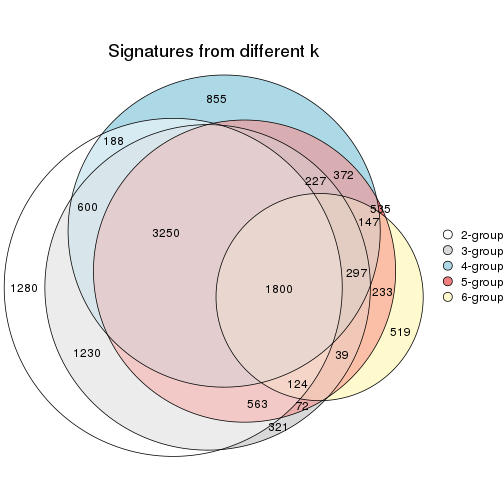
get_signature() returns a data frame invisibly. TO get the list of signatures, the function
call should be assigned to a variable explicitly. In following code, if plot argument is set
to FALSE, no heatmap is plotted while only the differential analysis is performed.
# code only for demonstration
tb = get_signature(res, k = ..., plot = FALSE)
An example of the output of tb is:
#> which_row fdr mean_1 mean_2 scaled_mean_1 scaled_mean_2 km
#> 1 38 0.042760348 8.373488 9.131774 -0.5533452 0.5164555 1
#> 2 40 0.018707592 7.106213 8.469186 -0.6173731 0.5762149 1
#> 3 55 0.019134737 10.221463 11.207825 -0.6159697 0.5749050 1
#> 4 59 0.006059896 5.921854 7.869574 -0.6899429 0.6439467 1
#> 5 60 0.018055526 8.928898 10.211722 -0.6204761 0.5791110 1
#> 6 98 0.009384629 15.714769 14.887706 0.6635654 -0.6193277 2
...
The columns in tb are:
which_row: row indices corresponding to the input matrix.fdr: FDR for the differential test. mean_x: The mean value in group x.scaled_mean_x: The mean value in group x after rows are scaled.km: Row groups if k-means clustering is applied to rows.UMAP plot which shows how samples are separated.
dimension_reduction(res, k = 2, method = "UMAP")
dimension_reduction(res, k = 3, method = "UMAP")
dimension_reduction(res, k = 4, method = "UMAP")
dimension_reduction(res, k = 5, method = "UMAP")
dimension_reduction(res, k = 6, method = "UMAP")
Following heatmap shows how subgroups are split when increasing k:
collect_classes(res)
Test correlation between subgroups and known annotations. If the known annotation is numeric, one-way ANOVA test is applied, and if the known annotation is discrete, chi-squared contingency table test is applied.
test_to_known_factors(res)
#> n disease.state(p) k
#> CV:hclust 51 1.28e-09 2
#> CV:hclust 51 8.65e-10 3
#> CV:hclust 35 4.40e-06 4
#> CV:hclust 42 8.06e-07 5
#> CV:hclust 27 4.46e-04 6
If matrix rows can be associated to genes, consider to use functional_enrichment(res,
...) to perform function enrichment for the signature genes. See this vignette for more detailed explanations.
The object with results only for a single top-value method and a single partition method can be extracted as:
res = res_list["CV", "kmeans"]
# you can also extract it by
# res = res_list["CV:kmeans"]
A summary of res and all the functions that can be applied to it:
res
#> A 'ConsensusPartition' object with k = 2, 3, 4, 5, 6.
#> On a matrix with 51979 rows and 52 columns.
#> Top rows (1000, 2000, 3000, 4000, 5000) are extracted by 'CV' method.
#> Subgroups are detected by 'kmeans' method.
#> Performed in total 1250 partitions by row resampling.
#> Best k for subgroups seems to be 2.
#>
#> Following methods can be applied to this 'ConsensusPartition' object:
#> [1] "cola_report" "collect_classes" "collect_plots"
#> [4] "collect_stats" "colnames" "compare_signatures"
#> [7] "consensus_heatmap" "dimension_reduction" "functional_enrichment"
#> [10] "get_anno_col" "get_anno" "get_classes"
#> [13] "get_consensus" "get_matrix" "get_membership"
#> [16] "get_param" "get_signatures" "get_stats"
#> [19] "is_best_k" "is_stable_k" "membership_heatmap"
#> [22] "ncol" "nrow" "plot_ecdf"
#> [25] "rownames" "select_partition_number" "show"
#> [28] "suggest_best_k" "test_to_known_factors"
collect_plots() function collects all the plots made from res for all k (number of partitions)
into one single page to provide an easy and fast comparison between different k.
collect_plots(res)
The plots are:
k and the heatmap of
predicted classes for each k.k.k.k.All the plots in panels can be made by individual functions and they are plotted later in this section.
select_partition_number() produces several plots showing different
statistics for choosing “optimized” k. There are following statistics:
k;k, the area increased is defined as \(A_k - A_{k-1}\).The detailed explanations of these statistics can be found in the cola vignette.
Generally speaking, lower PAC score, higher mean silhouette score or higher
concordance corresponds to better partition. Rand index and Jaccard index
measure how similar the current partition is compared to partition with k-1.
If they are too similar, we won't accept k is better than k-1.
select_partition_number(res)
The numeric values for all these statistics can be obtained by get_stats().
get_stats(res)
#> k 1-PAC mean_silhouette concordance area_increased Rand Jaccard
#> 2 2 1.000 1.000 1.000 0.4493 0.551 0.551
#> 3 3 0.656 0.893 0.902 0.4363 0.742 0.548
#> 4 4 0.659 0.777 0.831 0.1139 1.000 1.000
#> 5 5 0.635 0.564 0.780 0.0682 0.925 0.776
#> 6 6 0.684 0.542 0.721 0.0464 0.971 0.889
suggest_best_k() suggests the best \(k\) based on these statistics. The rules are as follows:
suggest_best_k(res)
#> [1] 2
Following shows the table of the partitions (You need to click the show/hide
code output link to see it). The membership matrix (columns with name p*)
is inferred by
clue::cl_consensus()
function with the SE method. Basically the value in the membership matrix
represents the probability to belong to a certain group. The finall class
label for an item is determined with the group with highest probability it
belongs to.
In get_classes() function, the entropy is calculated from the membership
matrix and the silhouette score is calculated from the consensus matrix.
cbind(get_classes(res, k = 2), get_membership(res, k = 2))
#> class entropy silhouette p1 p2
#> GSM710838 2 0 1 0 1
#> GSM710840 2 0 1 0 1
#> GSM710842 2 0 1 0 1
#> GSM710844 2 0 1 0 1
#> GSM710847 2 0 1 0 1
#> GSM710848 2 0 1 0 1
#> GSM710850 2 0 1 0 1
#> GSM710931 2 0 1 0 1
#> GSM710932 2 0 1 0 1
#> GSM710933 2 0 1 0 1
#> GSM710934 2 0 1 0 1
#> GSM710935 2 0 1 0 1
#> GSM710851 1 0 1 1 0
#> GSM710852 1 0 1 1 0
#> GSM710854 2 0 1 0 1
#> GSM710856 1 0 1 1 0
#> GSM710857 1 0 1 1 0
#> GSM710859 1 0 1 1 0
#> GSM710861 1 0 1 1 0
#> GSM710864 1 0 1 1 0
#> GSM710866 1 0 1 1 0
#> GSM710868 1 0 1 1 0
#> GSM710870 1 0 1 1 0
#> GSM710872 1 0 1 1 0
#> GSM710874 1 0 1 1 0
#> GSM710876 1 0 1 1 0
#> GSM710878 1 0 1 1 0
#> GSM710880 1 0 1 1 0
#> GSM710882 1 0 1 1 0
#> GSM710884 1 0 1 1 0
#> GSM710887 1 0 1 1 0
#> GSM710889 1 0 1 1 0
#> GSM710891 2 0 1 0 1
#> GSM710893 1 0 1 1 0
#> GSM710895 1 0 1 1 0
#> GSM710897 1 0 1 1 0
#> GSM710899 2 0 1 0 1
#> GSM710901 1 0 1 1 0
#> GSM710903 1 0 1 1 0
#> GSM710904 1 0 1 1 0
#> GSM710907 1 0 1 1 0
#> GSM710909 1 0 1 1 0
#> GSM710910 1 0 1 1 0
#> GSM710912 2 0 1 0 1
#> GSM710914 1 0 1 1 0
#> GSM710917 2 0 1 0 1
#> GSM710919 1 0 1 1 0
#> GSM710921 1 0 1 1 0
#> GSM710923 1 0 1 1 0
#> GSM710925 1 0 1 1 0
#> GSM710927 1 0 1 1 0
#> GSM710929 1 0 1 1 0
cbind(get_classes(res, k = 3), get_membership(res, k = 3))
#> class entropy silhouette p1 p2 p3
#> GSM710838 2 0.0237 0.980 0.000 0.996 0.004
#> GSM710840 2 0.0237 0.980 0.000 0.996 0.004
#> GSM710842 2 0.1163 0.977 0.000 0.972 0.028
#> GSM710844 2 0.1753 0.966 0.000 0.952 0.048
#> GSM710847 2 0.0237 0.980 0.000 0.996 0.004
#> GSM710848 2 0.3155 0.949 0.044 0.916 0.040
#> GSM710850 2 0.1753 0.966 0.000 0.952 0.048
#> GSM710931 2 0.0237 0.980 0.000 0.996 0.004
#> GSM710932 2 0.0237 0.980 0.000 0.996 0.004
#> GSM710933 2 0.1753 0.966 0.000 0.952 0.048
#> GSM710934 2 0.1170 0.974 0.008 0.976 0.016
#> GSM710935 2 0.0892 0.979 0.000 0.980 0.020
#> GSM710851 1 0.5363 0.644 0.724 0.000 0.276
#> GSM710852 1 0.0424 0.846 0.992 0.000 0.008
#> GSM710854 2 0.1453 0.975 0.008 0.968 0.024
#> GSM710856 1 0.3686 0.881 0.860 0.000 0.140
#> GSM710857 1 0.3686 0.881 0.860 0.000 0.140
#> GSM710859 3 0.3192 0.944 0.112 0.000 0.888
#> GSM710861 1 0.3551 0.880 0.868 0.000 0.132
#> GSM710864 1 0.0747 0.834 0.984 0.000 0.016
#> GSM710866 1 0.3619 0.880 0.864 0.000 0.136
#> GSM710868 1 0.0592 0.835 0.988 0.000 0.012
#> GSM710870 3 0.3482 0.936 0.128 0.000 0.872
#> GSM710872 3 0.3192 0.944 0.112 0.000 0.888
#> GSM710874 1 0.5363 0.644 0.724 0.000 0.276
#> GSM710876 3 0.3551 0.931 0.132 0.000 0.868
#> GSM710878 1 0.3619 0.880 0.864 0.000 0.136
#> GSM710880 1 0.0424 0.846 0.992 0.000 0.008
#> GSM710882 1 0.3686 0.881 0.860 0.000 0.140
#> GSM710884 1 0.3686 0.881 0.860 0.000 0.140
#> GSM710887 1 0.1163 0.854 0.972 0.000 0.028
#> GSM710889 3 0.3551 0.933 0.132 0.000 0.868
#> GSM710891 2 0.1585 0.973 0.008 0.964 0.028
#> GSM710893 1 0.0424 0.846 0.992 0.000 0.008
#> GSM710895 3 0.3192 0.944 0.112 0.000 0.888
#> GSM710897 1 0.3686 0.881 0.860 0.000 0.140
#> GSM710899 3 0.4589 0.725 0.008 0.172 0.820
#> GSM710901 3 0.3551 0.931 0.132 0.000 0.868
#> GSM710903 1 0.5058 0.646 0.756 0.000 0.244
#> GSM710904 1 0.3686 0.881 0.860 0.000 0.140
#> GSM710907 1 0.3619 0.880 0.864 0.000 0.136
#> GSM710909 3 0.3551 0.931 0.132 0.000 0.868
#> GSM710910 3 0.3116 0.941 0.108 0.000 0.892
#> GSM710912 2 0.1031 0.977 0.000 0.976 0.024
#> GSM710914 1 0.5058 0.646 0.756 0.000 0.244
#> GSM710917 3 0.4700 0.705 0.008 0.180 0.812
#> GSM710919 1 0.3686 0.881 0.860 0.000 0.140
#> GSM710921 3 0.3192 0.944 0.112 0.000 0.888
#> GSM710923 1 0.3686 0.880 0.860 0.000 0.140
#> GSM710925 3 0.3038 0.939 0.104 0.000 0.896
#> GSM710927 3 0.3192 0.944 0.112 0.000 0.888
#> GSM710929 3 0.3192 0.944 0.112 0.000 0.888
cbind(get_classes(res, k = 4), get_membership(res, k = 4))
#> class entropy silhouette p1 p2 p3 p4
#> GSM710838 2 0.0469 0.887 0.000 0.988 0.000 NA
#> GSM710840 2 0.0469 0.887 0.000 0.988 0.000 NA
#> GSM710842 2 0.3658 0.866 0.000 0.836 0.020 NA
#> GSM710844 2 0.3583 0.842 0.000 0.816 0.004 NA
#> GSM710847 2 0.0000 0.887 0.000 1.000 0.000 NA
#> GSM710848 2 0.5573 0.745 0.008 0.584 0.012 NA
#> GSM710850 2 0.3583 0.842 0.000 0.816 0.004 NA
#> GSM710931 2 0.0336 0.887 0.000 0.992 0.008 NA
#> GSM710932 2 0.0188 0.887 0.000 0.996 0.000 NA
#> GSM710933 2 0.3583 0.842 0.000 0.816 0.004 NA
#> GSM710934 2 0.3539 0.833 0.004 0.820 0.000 NA
#> GSM710935 2 0.3088 0.871 0.000 0.864 0.008 NA
#> GSM710851 1 0.7314 0.431 0.496 0.000 0.168 NA
#> GSM710852 1 0.3024 0.769 0.852 0.000 0.000 NA
#> GSM710854 2 0.4595 0.841 0.000 0.776 0.040 NA
#> GSM710856 1 0.2313 0.808 0.924 0.000 0.044 NA
#> GSM710857 1 0.2408 0.807 0.920 0.000 0.044 NA
#> GSM710859 3 0.1936 0.858 0.028 0.000 0.940 NA
#> GSM710861 1 0.3674 0.789 0.852 0.000 0.044 NA
#> GSM710864 1 0.4855 0.682 0.644 0.000 0.004 NA
#> GSM710866 1 0.3674 0.789 0.852 0.000 0.044 NA
#> GSM710868 1 0.4134 0.712 0.740 0.000 0.000 NA
#> GSM710870 3 0.6723 0.631 0.196 0.000 0.616 NA
#> GSM710872 3 0.1510 0.857 0.028 0.000 0.956 NA
#> GSM710874 1 0.7314 0.431 0.496 0.000 0.168 NA
#> GSM710876 3 0.5063 0.786 0.124 0.000 0.768 NA
#> GSM710878 1 0.3674 0.789 0.852 0.000 0.044 NA
#> GSM710880 1 0.3024 0.770 0.852 0.000 0.000 NA
#> GSM710882 1 0.1635 0.813 0.948 0.000 0.044 NA
#> GSM710884 1 0.1489 0.813 0.952 0.000 0.044 NA
#> GSM710887 1 0.0707 0.814 0.980 0.000 0.020 NA
#> GSM710889 3 0.6991 0.588 0.232 0.000 0.580 NA
#> GSM710891 2 0.4842 0.832 0.000 0.760 0.048 NA
#> GSM710893 1 0.3024 0.769 0.852 0.000 0.000 NA
#> GSM710895 3 0.2623 0.852 0.028 0.000 0.908 NA
#> GSM710897 1 0.1489 0.813 0.952 0.000 0.044 NA
#> GSM710899 3 0.5250 0.634 0.000 0.068 0.736 NA
#> GSM710901 3 0.5330 0.774 0.132 0.000 0.748 NA
#> GSM710903 1 0.7292 0.425 0.488 0.000 0.160 NA
#> GSM710904 1 0.1489 0.813 0.952 0.000 0.044 NA
#> GSM710907 1 0.3674 0.789 0.852 0.000 0.044 NA
#> GSM710909 3 0.5330 0.774 0.132 0.000 0.748 NA
#> GSM710910 3 0.0895 0.855 0.020 0.000 0.976 NA
#> GSM710912 2 0.3658 0.866 0.000 0.836 0.020 NA
#> GSM710914 1 0.7292 0.425 0.488 0.000 0.160 NA
#> GSM710917 3 0.4614 0.684 0.000 0.064 0.792 NA
#> GSM710919 1 0.1635 0.813 0.948 0.000 0.044 NA
#> GSM710921 3 0.0921 0.858 0.028 0.000 0.972 NA
#> GSM710923 1 0.3674 0.789 0.852 0.000 0.044 NA
#> GSM710925 3 0.2699 0.852 0.028 0.000 0.904 NA
#> GSM710927 3 0.1256 0.858 0.028 0.000 0.964 NA
#> GSM710929 3 0.1109 0.858 0.028 0.000 0.968 NA
cbind(get_classes(res, k = 5), get_membership(res, k = 5))
#> class entropy silhouette p1 p2 p3 p4 p5
#> GSM710838 2 0.0609 0.631 0.000 0.980 0.000 0.020 0.000
#> GSM710840 2 0.0609 0.631 0.000 0.980 0.000 0.020 0.000
#> GSM710842 2 0.3475 0.536 0.000 0.804 0.012 0.180 0.004
#> GSM710844 2 0.4779 0.450 0.000 0.716 0.000 0.200 0.084
#> GSM710847 2 0.0000 0.640 0.000 1.000 0.000 0.000 0.000
#> GSM710848 4 0.6825 0.000 0.004 0.368 0.008 0.440 0.180
#> GSM710850 2 0.4779 0.450 0.000 0.716 0.000 0.200 0.084
#> GSM710931 2 0.0703 0.640 0.000 0.976 0.000 0.024 0.000
#> GSM710932 2 0.0404 0.639 0.000 0.988 0.000 0.012 0.000
#> GSM710933 2 0.4779 0.450 0.000 0.716 0.000 0.200 0.084
#> GSM710934 2 0.5681 -0.292 0.004 0.636 0.000 0.228 0.132
#> GSM710935 2 0.2848 0.564 0.000 0.840 0.004 0.156 0.000
#> GSM710851 5 0.5582 0.786 0.284 0.000 0.084 0.008 0.624
#> GSM710852 1 0.4325 0.440 0.736 0.000 0.000 0.044 0.220
#> GSM710854 2 0.4786 0.246 0.000 0.652 0.040 0.308 0.000
#> GSM710856 1 0.1651 0.731 0.944 0.000 0.008 0.012 0.036
#> GSM710857 1 0.1731 0.727 0.940 0.000 0.008 0.012 0.040
#> GSM710859 3 0.3847 0.736 0.016 0.000 0.828 0.088 0.068
#> GSM710861 1 0.4279 0.685 0.784 0.000 0.004 0.104 0.108
#> GSM710864 5 0.6493 -0.169 0.384 0.000 0.000 0.188 0.428
#> GSM710866 1 0.4400 0.686 0.780 0.000 0.008 0.104 0.108
#> GSM710868 1 0.6046 0.027 0.524 0.000 0.000 0.132 0.344
#> GSM710870 3 0.7627 0.311 0.176 0.000 0.460 0.084 0.280
#> GSM710872 3 0.2270 0.742 0.016 0.000 0.908 0.072 0.004
#> GSM710874 5 0.5582 0.786 0.284 0.000 0.084 0.008 0.624
#> GSM710876 3 0.6638 0.608 0.108 0.000 0.612 0.196 0.084
#> GSM710878 1 0.4400 0.686 0.780 0.000 0.008 0.104 0.108
#> GSM710880 1 0.3845 0.487 0.768 0.000 0.000 0.024 0.208
#> GSM710882 1 0.1087 0.759 0.968 0.000 0.008 0.008 0.016
#> GSM710884 1 0.0740 0.756 0.980 0.000 0.008 0.008 0.004
#> GSM710887 1 0.0671 0.753 0.980 0.000 0.004 0.000 0.016
#> GSM710889 3 0.7793 0.259 0.208 0.000 0.428 0.084 0.280
#> GSM710891 2 0.5468 0.102 0.000 0.600 0.060 0.332 0.008
#> GSM710893 1 0.4325 0.440 0.736 0.000 0.000 0.044 0.220
#> GSM710895 3 0.4489 0.719 0.016 0.000 0.780 0.084 0.120
#> GSM710897 1 0.0740 0.756 0.980 0.000 0.008 0.008 0.004
#> GSM710899 3 0.4826 0.454 0.000 0.024 0.644 0.324 0.008
#> GSM710901 3 0.6917 0.590 0.116 0.000 0.584 0.204 0.096
#> GSM710903 5 0.5275 0.789 0.276 0.000 0.084 0.000 0.640
#> GSM710904 1 0.0740 0.756 0.980 0.000 0.008 0.008 0.004
#> GSM710907 1 0.4400 0.686 0.780 0.000 0.008 0.104 0.108
#> GSM710909 3 0.6917 0.590 0.116 0.000 0.584 0.204 0.096
#> GSM710910 3 0.0613 0.747 0.004 0.000 0.984 0.004 0.008
#> GSM710912 2 0.3355 0.536 0.000 0.804 0.012 0.184 0.000
#> GSM710914 5 0.5275 0.789 0.276 0.000 0.084 0.000 0.640
#> GSM710917 3 0.3691 0.594 0.000 0.028 0.804 0.164 0.004
#> GSM710919 1 0.0960 0.759 0.972 0.000 0.008 0.004 0.016
#> GSM710921 3 0.0671 0.750 0.016 0.000 0.980 0.004 0.000
#> GSM710923 1 0.4350 0.688 0.784 0.000 0.008 0.100 0.108
#> GSM710925 3 0.4442 0.719 0.016 0.000 0.784 0.084 0.116
#> GSM710927 3 0.1278 0.751 0.016 0.000 0.960 0.020 0.004
#> GSM710929 3 0.1074 0.750 0.016 0.000 0.968 0.012 0.004
cbind(get_classes(res, k = 6), get_membership(res, k = 6))
#> class entropy silhouette p1 p2 p3 p4 p5 p6
#> GSM710838 2 0.0363 0.7084 0.000 0.988 0.000 NA 0.000 0.012
#> GSM710840 2 0.0363 0.7084 0.000 0.988 0.000 NA 0.000 0.012
#> GSM710842 2 0.4711 0.6416 0.000 0.740 0.012 NA 0.076 0.148
#> GSM710844 2 0.5273 0.5752 0.000 0.660 0.000 NA 0.044 0.080
#> GSM710847 2 0.0000 0.7093 0.000 1.000 0.000 NA 0.000 0.000
#> GSM710848 6 0.3550 0.0369 0.000 0.176 0.000 NA 0.024 0.788
#> GSM710850 2 0.5307 0.5752 0.000 0.660 0.000 NA 0.048 0.080
#> GSM710931 2 0.1096 0.7082 0.000 0.964 0.004 NA 0.020 0.004
#> GSM710932 2 0.0260 0.7091 0.000 0.992 0.000 NA 0.000 0.008
#> GSM710933 2 0.5273 0.5752 0.000 0.660 0.000 NA 0.044 0.080
#> GSM710934 2 0.4268 0.1676 0.000 0.556 0.000 NA 0.004 0.428
#> GSM710935 2 0.4070 0.6581 0.000 0.788 0.008 NA 0.056 0.128
#> GSM710851 5 0.3587 0.7010 0.188 0.000 0.040 NA 0.772 0.000
#> GSM710852 1 0.5101 0.4815 0.696 0.000 0.000 NA 0.164 0.092
#> GSM710854 2 0.6866 0.3583 0.000 0.468 0.048 NA 0.084 0.348
#> GSM710856 1 0.1440 0.7083 0.948 0.000 0.004 NA 0.032 0.004
#> GSM710857 1 0.1440 0.7083 0.948 0.000 0.004 NA 0.032 0.004
#> GSM710859 3 0.4298 0.6438 0.012 0.000 0.792 NA 0.052 0.076
#> GSM710861 1 0.4805 0.5214 0.636 0.000 0.000 NA 0.016 0.048
#> GSM710864 6 0.7318 0.0466 0.228 0.000 0.000 NA 0.136 0.408
#> GSM710866 1 0.4805 0.5214 0.636 0.000 0.000 NA 0.016 0.048
#> GSM710868 1 0.6499 -0.1517 0.440 0.000 0.000 NA 0.156 0.356
#> GSM710870 5 0.7286 0.2449 0.180 0.000 0.360 NA 0.364 0.012
#> GSM710872 3 0.3165 0.6640 0.012 0.000 0.860 NA 0.016 0.072
#> GSM710874 5 0.3620 0.7024 0.184 0.000 0.044 NA 0.772 0.000
#> GSM710876 3 0.6393 0.4127 0.072 0.000 0.476 NA 0.060 0.016
#> GSM710878 1 0.4805 0.5214 0.636 0.000 0.000 NA 0.016 0.048
#> GSM710880 1 0.4597 0.5316 0.740 0.000 0.000 NA 0.152 0.060
#> GSM710882 1 0.0405 0.7173 0.988 0.000 0.004 NA 0.000 0.000
#> GSM710884 1 0.0508 0.7180 0.984 0.000 0.004 NA 0.012 0.000
#> GSM710887 1 0.1844 0.6912 0.924 0.000 0.000 NA 0.024 0.004
#> GSM710889 5 0.7439 0.2822 0.200 0.000 0.324 NA 0.368 0.012
#> GSM710891 2 0.7009 0.2728 0.000 0.412 0.048 NA 0.080 0.396
#> GSM710893 1 0.5035 0.4892 0.704 0.000 0.000 NA 0.156 0.092
#> GSM710895 3 0.5361 0.5651 0.012 0.000 0.696 NA 0.156 0.072
#> GSM710897 1 0.0508 0.7180 0.984 0.000 0.004 NA 0.012 0.000
#> GSM710899 3 0.6421 0.2603 0.000 0.008 0.444 NA 0.080 0.400
#> GSM710901 3 0.6533 0.3689 0.100 0.000 0.440 NA 0.072 0.004
#> GSM710903 5 0.3527 0.6909 0.164 0.000 0.040 NA 0.792 0.004
#> GSM710904 1 0.0508 0.7180 0.984 0.000 0.004 NA 0.012 0.000
#> GSM710907 1 0.4805 0.5214 0.636 0.000 0.000 NA 0.016 0.048
#> GSM710909 3 0.6533 0.3689 0.100 0.000 0.440 NA 0.072 0.004
#> GSM710910 3 0.1096 0.6828 0.008 0.000 0.964 NA 0.004 0.004
#> GSM710912 2 0.4796 0.6307 0.000 0.720 0.012 NA 0.068 0.180
#> GSM710914 5 0.3527 0.6909 0.164 0.000 0.040 NA 0.792 0.004
#> GSM710917 3 0.4739 0.5536 0.000 0.000 0.740 NA 0.076 0.120
#> GSM710919 1 0.0405 0.7173 0.988 0.000 0.004 NA 0.000 0.000
#> GSM710921 3 0.0653 0.6822 0.012 0.000 0.980 NA 0.004 0.004
#> GSM710923 1 0.4805 0.5214 0.636 0.000 0.000 NA 0.016 0.048
#> GSM710925 3 0.5299 0.5628 0.008 0.000 0.696 NA 0.160 0.072
#> GSM710927 3 0.1707 0.6777 0.012 0.000 0.928 NA 0.004 0.000
#> GSM710929 3 0.1218 0.6815 0.012 0.000 0.956 NA 0.004 0.000
Heatmaps for the consensus matrix. It visualizes the probability of two samples to be in a same group.
consensus_heatmap(res, k = 2)

consensus_heatmap(res, k = 3)
consensus_heatmap(res, k = 4)
consensus_heatmap(res, k = 5)
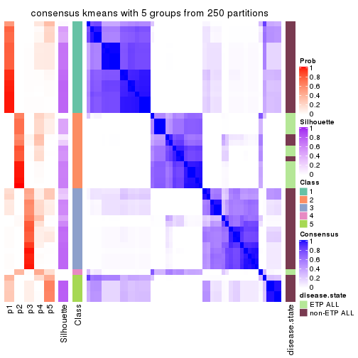
consensus_heatmap(res, k = 6)
Heatmaps for the membership of samples in all partitions to see how consistent they are:
membership_heatmap(res, k = 2)
membership_heatmap(res, k = 3)
membership_heatmap(res, k = 4)
membership_heatmap(res, k = 5)
membership_heatmap(res, k = 6)
As soon as we have had the classes for columns, we can look for signatures which are significantly different between classes which can be candidate marks for certain classes. Following are the heatmaps for signatures.
Signature heatmaps where rows are scaled:
get_signatures(res, k = 2)
get_signatures(res, k = 3)
get_signatures(res, k = 4)
get_signatures(res, k = 5)
get_signatures(res, k = 6)
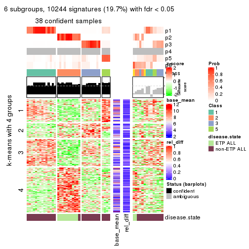
Signature heatmaps where rows are not scaled:
get_signatures(res, k = 2, scale_rows = FALSE)
get_signatures(res, k = 3, scale_rows = FALSE)
get_signatures(res, k = 4, scale_rows = FALSE)
get_signatures(res, k = 5, scale_rows = FALSE)
get_signatures(res, k = 6, scale_rows = FALSE)
Compare the overlap of signatures from different k:
compare_signatures(res)
get_signature() returns a data frame invisibly. TO get the list of signatures, the function
call should be assigned to a variable explicitly. In following code, if plot argument is set
to FALSE, no heatmap is plotted while only the differential analysis is performed.
# code only for demonstration
tb = get_signature(res, k = ..., plot = FALSE)
An example of the output of tb is:
#> which_row fdr mean_1 mean_2 scaled_mean_1 scaled_mean_2 km
#> 1 38 0.042760348 8.373488 9.131774 -0.5533452 0.5164555 1
#> 2 40 0.018707592 7.106213 8.469186 -0.6173731 0.5762149 1
#> 3 55 0.019134737 10.221463 11.207825 -0.6159697 0.5749050 1
#> 4 59 0.006059896 5.921854 7.869574 -0.6899429 0.6439467 1
#> 5 60 0.018055526 8.928898 10.211722 -0.6204761 0.5791110 1
#> 6 98 0.009384629 15.714769 14.887706 0.6635654 -0.6193277 2
...
The columns in tb are:
which_row: row indices corresponding to the input matrix.fdr: FDR for the differential test. mean_x: The mean value in group x.scaled_mean_x: The mean value in group x after rows are scaled.km: Row groups if k-means clustering is applied to rows.UMAP plot which shows how samples are separated.
dimension_reduction(res, k = 2, method = "UMAP")
dimension_reduction(res, k = 3, method = "UMAP")
dimension_reduction(res, k = 4, method = "UMAP")
dimension_reduction(res, k = 5, method = "UMAP")
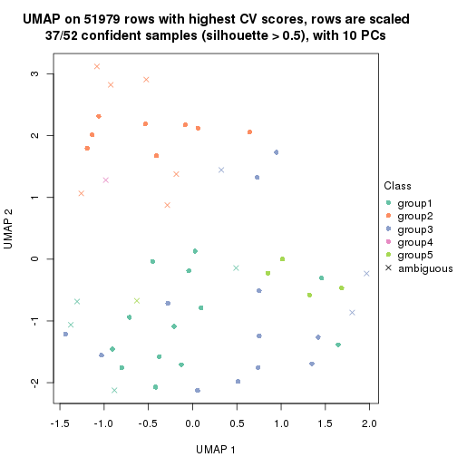
dimension_reduction(res, k = 6, method = "UMAP")
Following heatmap shows how subgroups are split when increasing k:
collect_classes(res)
Test correlation between subgroups and known annotations. If the known annotation is numeric, one-way ANOVA test is applied, and if the known annotation is discrete, chi-squared contingency table test is applied.
test_to_known_factors(res)
#> n disease.state(p) k
#> CV:kmeans 52 1.06e-07 2
#> CV:kmeans 52 4.41e-09 3
#> CV:kmeans 48 2.27e-08 4
#> CV:kmeans 37 7.36e-07 5
#> CV:kmeans 38 2.77e-07 6
If matrix rows can be associated to genes, consider to use functional_enrichment(res,
...) to perform function enrichment for the signature genes. See this vignette for more detailed explanations.
The object with results only for a single top-value method and a single partition method can be extracted as:
res = res_list["CV", "skmeans"]
# you can also extract it by
# res = res_list["CV:skmeans"]
A summary of res and all the functions that can be applied to it:
res
#> A 'ConsensusPartition' object with k = 2, 3, 4, 5, 6.
#> On a matrix with 51979 rows and 52 columns.
#> Top rows (1000, 2000, 3000, 4000, 5000) are extracted by 'CV' method.
#> Subgroups are detected by 'skmeans' method.
#> Performed in total 1250 partitions by row resampling.
#> Best k for subgroups seems to be 3.
#>
#> Following methods can be applied to this 'ConsensusPartition' object:
#> [1] "cola_report" "collect_classes" "collect_plots"
#> [4] "collect_stats" "colnames" "compare_signatures"
#> [7] "consensus_heatmap" "dimension_reduction" "functional_enrichment"
#> [10] "get_anno_col" "get_anno" "get_classes"
#> [13] "get_consensus" "get_matrix" "get_membership"
#> [16] "get_param" "get_signatures" "get_stats"
#> [19] "is_best_k" "is_stable_k" "membership_heatmap"
#> [22] "ncol" "nrow" "plot_ecdf"
#> [25] "rownames" "select_partition_number" "show"
#> [28] "suggest_best_k" "test_to_known_factors"
collect_plots() function collects all the plots made from res for all k (number of partitions)
into one single page to provide an easy and fast comparison between different k.
collect_plots(res)
The plots are:
k and the heatmap of
predicted classes for each k.k.k.k.All the plots in panels can be made by individual functions and they are plotted later in this section.
select_partition_number() produces several plots showing different
statistics for choosing “optimized” k. There are following statistics:
k;k, the area increased is defined as \(A_k - A_{k-1}\).The detailed explanations of these statistics can be found in the cola vignette.
Generally speaking, lower PAC score, higher mean silhouette score or higher
concordance corresponds to better partition. Rand index and Jaccard index
measure how similar the current partition is compared to partition with k-1.
If they are too similar, we won't accept k is better than k-1.
select_partition_number(res)
The numeric values for all these statistics can be obtained by get_stats().
get_stats(res)
#> k 1-PAC mean_silhouette concordance area_increased Rand Jaccard
#> 2 2 1.000 0.995 0.998 0.4619 0.538 0.538
#> 3 3 1.000 0.996 0.998 0.4710 0.756 0.558
#> 4 4 0.802 0.875 0.906 0.0991 0.897 0.692
#> 5 5 0.808 0.706 0.794 0.0534 0.901 0.649
#> 6 6 0.783 0.653 0.743 0.0400 0.940 0.748
suggest_best_k() suggests the best \(k\) based on these statistics. The rules are as follows:
suggest_best_k(res)
#> [1] 3
#> attr(,"optional")
#> [1] 2
There is also optional best \(k\) = 2 that is worth to check.
Following shows the table of the partitions (You need to click the show/hide
code output link to see it). The membership matrix (columns with name p*)
is inferred by
clue::cl_consensus()
function with the SE method. Basically the value in the membership matrix
represents the probability to belong to a certain group. The finall class
label for an item is determined with the group with highest probability it
belongs to.
In get_classes() function, the entropy is calculated from the membership
matrix and the silhouette score is calculated from the consensus matrix.
cbind(get_classes(res, k = 2), get_membership(res, k = 2))
#> class entropy silhouette p1 p2
#> GSM710838 2 0.000 0.996 0.000 1.000
#> GSM710840 2 0.000 0.996 0.000 1.000
#> GSM710842 2 0.000 0.996 0.000 1.000
#> GSM710844 2 0.000 0.996 0.000 1.000
#> GSM710847 2 0.000 0.996 0.000 1.000
#> GSM710848 2 0.000 0.996 0.000 1.000
#> GSM710850 2 0.000 0.996 0.000 1.000
#> GSM710931 2 0.000 0.996 0.000 1.000
#> GSM710932 2 0.000 0.996 0.000 1.000
#> GSM710933 2 0.000 0.996 0.000 1.000
#> GSM710934 2 0.000 0.996 0.000 1.000
#> GSM710935 2 0.000 0.996 0.000 1.000
#> GSM710851 1 0.000 0.998 1.000 0.000
#> GSM710852 1 0.000 0.998 1.000 0.000
#> GSM710854 2 0.000 0.996 0.000 1.000
#> GSM710856 1 0.000 0.998 1.000 0.000
#> GSM710857 1 0.000 0.998 1.000 0.000
#> GSM710859 1 0.000 0.998 1.000 0.000
#> GSM710861 1 0.000 0.998 1.000 0.000
#> GSM710864 2 0.373 0.923 0.072 0.928
#> GSM710866 1 0.000 0.998 1.000 0.000
#> GSM710868 1 0.000 0.998 1.000 0.000
#> GSM710870 1 0.000 0.998 1.000 0.000
#> GSM710872 1 0.000 0.998 1.000 0.000
#> GSM710874 1 0.000 0.998 1.000 0.000
#> GSM710876 1 0.000 0.998 1.000 0.000
#> GSM710878 1 0.000 0.998 1.000 0.000
#> GSM710880 1 0.000 0.998 1.000 0.000
#> GSM710882 1 0.000 0.998 1.000 0.000
#> GSM710884 1 0.000 0.998 1.000 0.000
#> GSM710887 1 0.000 0.998 1.000 0.000
#> GSM710889 1 0.000 0.998 1.000 0.000
#> GSM710891 2 0.000 0.996 0.000 1.000
#> GSM710893 1 0.000 0.998 1.000 0.000
#> GSM710895 1 0.000 0.998 1.000 0.000
#> GSM710897 1 0.000 0.998 1.000 0.000
#> GSM710899 2 0.000 0.996 0.000 1.000
#> GSM710901 1 0.000 0.998 1.000 0.000
#> GSM710903 1 0.000 0.998 1.000 0.000
#> GSM710904 1 0.000 0.998 1.000 0.000
#> GSM710907 1 0.000 0.998 1.000 0.000
#> GSM710909 1 0.000 0.998 1.000 0.000
#> GSM710910 1 0.311 0.940 0.944 0.056
#> GSM710912 2 0.000 0.996 0.000 1.000
#> GSM710914 1 0.000 0.998 1.000 0.000
#> GSM710917 2 0.000 0.996 0.000 1.000
#> GSM710919 1 0.000 0.998 1.000 0.000
#> GSM710921 1 0.000 0.998 1.000 0.000
#> GSM710923 1 0.000 0.998 1.000 0.000
#> GSM710925 1 0.000 0.998 1.000 0.000
#> GSM710927 1 0.000 0.998 1.000 0.000
#> GSM710929 1 0.000 0.998 1.000 0.000
cbind(get_classes(res, k = 3), get_membership(res, k = 3))
#> class entropy silhouette p1 p2 p3
#> GSM710838 2 0.0000 1.000 0.000 1 0.000
#> GSM710840 2 0.0000 1.000 0.000 1 0.000
#> GSM710842 2 0.0000 1.000 0.000 1 0.000
#> GSM710844 2 0.0000 1.000 0.000 1 0.000
#> GSM710847 2 0.0000 1.000 0.000 1 0.000
#> GSM710848 2 0.0000 1.000 0.000 1 0.000
#> GSM710850 2 0.0000 1.000 0.000 1 0.000
#> GSM710931 2 0.0000 1.000 0.000 1 0.000
#> GSM710932 2 0.0000 1.000 0.000 1 0.000
#> GSM710933 2 0.0000 1.000 0.000 1 0.000
#> GSM710934 2 0.0000 1.000 0.000 1 0.000
#> GSM710935 2 0.0000 1.000 0.000 1 0.000
#> GSM710851 3 0.1163 0.975 0.028 0 0.972
#> GSM710852 1 0.0000 1.000 1.000 0 0.000
#> GSM710854 2 0.0000 1.000 0.000 1 0.000
#> GSM710856 1 0.0000 1.000 1.000 0 0.000
#> GSM710857 1 0.0000 1.000 1.000 0 0.000
#> GSM710859 3 0.0000 0.992 0.000 0 1.000
#> GSM710861 1 0.0000 1.000 1.000 0 0.000
#> GSM710864 1 0.0000 1.000 1.000 0 0.000
#> GSM710866 1 0.0000 1.000 1.000 0 0.000
#> GSM710868 1 0.0000 1.000 1.000 0 0.000
#> GSM710870 3 0.0000 0.992 0.000 0 1.000
#> GSM710872 3 0.0000 0.992 0.000 0 1.000
#> GSM710874 3 0.0747 0.984 0.016 0 0.984
#> GSM710876 3 0.0000 0.992 0.000 0 1.000
#> GSM710878 1 0.0000 1.000 1.000 0 0.000
#> GSM710880 1 0.0000 1.000 1.000 0 0.000
#> GSM710882 1 0.0000 1.000 1.000 0 0.000
#> GSM710884 1 0.0000 1.000 1.000 0 0.000
#> GSM710887 1 0.0000 1.000 1.000 0 0.000
#> GSM710889 3 0.0000 0.992 0.000 0 1.000
#> GSM710891 2 0.0000 1.000 0.000 1 0.000
#> GSM710893 1 0.0000 1.000 1.000 0 0.000
#> GSM710895 3 0.0000 0.992 0.000 0 1.000
#> GSM710897 1 0.0000 1.000 1.000 0 0.000
#> GSM710899 2 0.0000 1.000 0.000 1 0.000
#> GSM710901 3 0.0424 0.988 0.008 0 0.992
#> GSM710903 3 0.1411 0.969 0.036 0 0.964
#> GSM710904 1 0.0000 1.000 1.000 0 0.000
#> GSM710907 1 0.0000 1.000 1.000 0 0.000
#> GSM710909 3 0.0000 0.992 0.000 0 1.000
#> GSM710910 3 0.0000 0.992 0.000 0 1.000
#> GSM710912 2 0.0000 1.000 0.000 1 0.000
#> GSM710914 3 0.1411 0.969 0.036 0 0.964
#> GSM710917 2 0.0000 1.000 0.000 1 0.000
#> GSM710919 1 0.0000 1.000 1.000 0 0.000
#> GSM710921 3 0.0000 0.992 0.000 0 1.000
#> GSM710923 1 0.0000 1.000 1.000 0 0.000
#> GSM710925 3 0.0000 0.992 0.000 0 1.000
#> GSM710927 3 0.0000 0.992 0.000 0 1.000
#> GSM710929 3 0.0000 0.992 0.000 0 1.000
cbind(get_classes(res, k = 4), get_membership(res, k = 4))
#> class entropy silhouette p1 p2 p3 p4
#> GSM710838 2 0.0000 0.978 0.000 1.000 0.000 0.000
#> GSM710840 2 0.0000 0.978 0.000 1.000 0.000 0.000
#> GSM710842 2 0.0000 0.978 0.000 1.000 0.000 0.000
#> GSM710844 2 0.0000 0.978 0.000 1.000 0.000 0.000
#> GSM710847 2 0.0000 0.978 0.000 1.000 0.000 0.000
#> GSM710848 2 0.0592 0.967 0.000 0.984 0.000 0.016
#> GSM710850 2 0.0000 0.978 0.000 1.000 0.000 0.000
#> GSM710931 2 0.0000 0.978 0.000 1.000 0.000 0.000
#> GSM710932 2 0.0000 0.978 0.000 1.000 0.000 0.000
#> GSM710933 2 0.0000 0.978 0.000 1.000 0.000 0.000
#> GSM710934 2 0.0336 0.973 0.000 0.992 0.000 0.008
#> GSM710935 2 0.0000 0.978 0.000 1.000 0.000 0.000
#> GSM710851 4 0.3962 0.761 0.124 0.000 0.044 0.832
#> GSM710852 4 0.4804 0.737 0.384 0.000 0.000 0.616
#> GSM710854 2 0.0000 0.978 0.000 1.000 0.000 0.000
#> GSM710856 1 0.2281 0.812 0.904 0.000 0.000 0.096
#> GSM710857 1 0.2466 0.810 0.900 0.000 0.004 0.096
#> GSM710859 3 0.1389 0.922 0.000 0.000 0.952 0.048
#> GSM710861 1 0.3024 0.835 0.852 0.000 0.000 0.148
#> GSM710864 4 0.4250 0.570 0.276 0.000 0.000 0.724
#> GSM710866 1 0.3024 0.835 0.852 0.000 0.000 0.148
#> GSM710868 4 0.4855 0.727 0.400 0.000 0.000 0.600
#> GSM710870 3 0.3681 0.842 0.008 0.000 0.816 0.176
#> GSM710872 3 0.0000 0.930 0.000 0.000 1.000 0.000
#> GSM710874 4 0.4374 0.745 0.120 0.000 0.068 0.812
#> GSM710876 3 0.1733 0.915 0.028 0.000 0.948 0.024
#> GSM710878 1 0.3024 0.835 0.852 0.000 0.000 0.148
#> GSM710880 4 0.4790 0.737 0.380 0.000 0.000 0.620
#> GSM710882 1 0.0188 0.867 0.996 0.000 0.000 0.004
#> GSM710884 1 0.0921 0.861 0.972 0.000 0.000 0.028
#> GSM710887 1 0.2081 0.807 0.916 0.000 0.000 0.084
#> GSM710889 3 0.4332 0.830 0.032 0.000 0.792 0.176
#> GSM710891 2 0.0000 0.978 0.000 1.000 0.000 0.000
#> GSM710893 4 0.4804 0.737 0.384 0.000 0.000 0.616
#> GSM710895 3 0.2530 0.897 0.000 0.000 0.888 0.112
#> GSM710897 1 0.1022 0.859 0.968 0.000 0.000 0.032
#> GSM710899 2 0.2704 0.862 0.000 0.876 0.124 0.000
#> GSM710901 3 0.2965 0.870 0.072 0.000 0.892 0.036
#> GSM710903 4 0.3598 0.767 0.124 0.000 0.028 0.848
#> GSM710904 1 0.0921 0.861 0.972 0.000 0.000 0.028
#> GSM710907 1 0.3024 0.835 0.852 0.000 0.000 0.148
#> GSM710909 3 0.1798 0.911 0.040 0.000 0.944 0.016
#> GSM710910 3 0.0000 0.930 0.000 0.000 1.000 0.000
#> GSM710912 2 0.0000 0.978 0.000 1.000 0.000 0.000
#> GSM710914 4 0.3598 0.767 0.124 0.000 0.028 0.848
#> GSM710917 2 0.3486 0.788 0.000 0.812 0.188 0.000
#> GSM710919 1 0.0000 0.867 1.000 0.000 0.000 0.000
#> GSM710921 3 0.0000 0.930 0.000 0.000 1.000 0.000
#> GSM710923 1 0.3024 0.835 0.852 0.000 0.000 0.148
#> GSM710925 3 0.2469 0.899 0.000 0.000 0.892 0.108
#> GSM710927 3 0.0000 0.930 0.000 0.000 1.000 0.000
#> GSM710929 3 0.0000 0.930 0.000 0.000 1.000 0.000
cbind(get_classes(res, k = 5), get_membership(res, k = 5))
#> class entropy silhouette p1 p2 p3 p4 p5
#> GSM710838 2 0.0290 0.9205 0.000 0.992 0.000 0.008 0.000
#> GSM710840 2 0.0000 0.9212 0.000 1.000 0.000 0.000 0.000
#> GSM710842 2 0.0290 0.9207 0.000 0.992 0.000 0.008 0.000
#> GSM710844 2 0.0771 0.9172 0.000 0.976 0.000 0.020 0.004
#> GSM710847 2 0.0000 0.9212 0.000 1.000 0.000 0.000 0.000
#> GSM710848 2 0.3132 0.8090 0.000 0.820 0.000 0.172 0.008
#> GSM710850 2 0.0771 0.9172 0.000 0.976 0.000 0.020 0.004
#> GSM710931 2 0.0290 0.9207 0.000 0.992 0.000 0.008 0.000
#> GSM710932 2 0.0162 0.9210 0.000 0.996 0.000 0.004 0.000
#> GSM710933 2 0.0771 0.9172 0.000 0.976 0.000 0.020 0.004
#> GSM710934 2 0.1952 0.8798 0.000 0.912 0.000 0.084 0.004
#> GSM710935 2 0.0290 0.9207 0.000 0.992 0.000 0.008 0.000
#> GSM710851 5 0.1041 0.7427 0.032 0.000 0.004 0.000 0.964
#> GSM710852 1 0.6512 0.4695 0.452 0.000 0.000 0.348 0.200
#> GSM710854 2 0.1124 0.9107 0.000 0.960 0.000 0.036 0.004
#> GSM710856 1 0.1764 0.5698 0.928 0.000 0.000 0.008 0.064
#> GSM710857 1 0.1549 0.5918 0.944 0.000 0.000 0.016 0.040
#> GSM710859 3 0.2972 0.7753 0.004 0.000 0.864 0.024 0.108
#> GSM710861 4 0.4305 0.8385 0.488 0.000 0.000 0.512 0.000
#> GSM710864 4 0.3214 0.1993 0.036 0.000 0.000 0.844 0.120
#> GSM710866 4 0.4305 0.8385 0.488 0.000 0.000 0.512 0.000
#> GSM710868 1 0.6534 0.4578 0.436 0.000 0.000 0.364 0.200
#> GSM710870 5 0.6022 0.0306 0.064 0.000 0.448 0.020 0.468
#> GSM710872 3 0.1300 0.8220 0.000 0.000 0.956 0.028 0.016
#> GSM710874 5 0.1281 0.7405 0.032 0.000 0.012 0.000 0.956
#> GSM710876 3 0.3619 0.7774 0.028 0.000 0.844 0.092 0.036
#> GSM710878 4 0.4305 0.8385 0.488 0.000 0.000 0.512 0.000
#> GSM710880 1 0.6154 0.5030 0.508 0.000 0.000 0.348 0.144
#> GSM710882 1 0.0510 0.5787 0.984 0.000 0.000 0.016 0.000
#> GSM710884 1 0.0000 0.5933 1.000 0.000 0.000 0.000 0.000
#> GSM710887 1 0.3897 0.5709 0.768 0.000 0.000 0.204 0.028
#> GSM710889 5 0.6672 0.0859 0.100 0.000 0.408 0.036 0.456
#> GSM710891 2 0.1830 0.8956 0.000 0.932 0.004 0.052 0.012
#> GSM710893 1 0.6215 0.4989 0.500 0.000 0.000 0.348 0.152
#> GSM710895 3 0.4445 0.5141 0.000 0.000 0.676 0.024 0.300
#> GSM710897 1 0.0609 0.6027 0.980 0.000 0.000 0.020 0.000
#> GSM710899 2 0.5733 0.4397 0.000 0.584 0.332 0.072 0.012
#> GSM710901 3 0.5217 0.6756 0.096 0.000 0.740 0.120 0.044
#> GSM710903 5 0.1493 0.7273 0.024 0.000 0.000 0.028 0.948
#> GSM710904 1 0.0000 0.5933 1.000 0.000 0.000 0.000 0.000
#> GSM710907 4 0.4305 0.8385 0.488 0.000 0.000 0.512 0.000
#> GSM710909 3 0.4207 0.7530 0.064 0.000 0.816 0.072 0.048
#> GSM710910 3 0.0510 0.8291 0.000 0.000 0.984 0.016 0.000
#> GSM710912 2 0.0290 0.9207 0.000 0.992 0.000 0.008 0.000
#> GSM710914 5 0.1211 0.7361 0.024 0.000 0.000 0.016 0.960
#> GSM710917 2 0.4812 0.4217 0.000 0.600 0.372 0.028 0.000
#> GSM710919 1 0.0404 0.5829 0.988 0.000 0.000 0.012 0.000
#> GSM710921 3 0.0566 0.8293 0.000 0.000 0.984 0.012 0.004
#> GSM710923 4 0.4305 0.8385 0.488 0.000 0.000 0.512 0.000
#> GSM710925 3 0.4315 0.5598 0.000 0.000 0.700 0.024 0.276
#> GSM710927 3 0.0609 0.8294 0.000 0.000 0.980 0.020 0.000
#> GSM710929 3 0.0162 0.8306 0.000 0.000 0.996 0.004 0.000
cbind(get_classes(res, k = 6), get_membership(res, k = 6))
#> class entropy silhouette p1 p2 p3 p4 p5 p6
#> GSM710838 2 0.0692 0.8919 0.000 0.976 0.000 0.004 0.000 0.020
#> GSM710840 2 0.0260 0.8923 0.000 0.992 0.000 0.000 0.000 0.008
#> GSM710842 2 0.0820 0.8901 0.000 0.972 0.000 0.016 0.000 0.012
#> GSM710844 2 0.1649 0.8803 0.000 0.932 0.000 0.032 0.000 0.036
#> GSM710847 2 0.0000 0.8923 0.000 1.000 0.000 0.000 0.000 0.000
#> GSM710848 2 0.4596 0.6376 0.000 0.640 0.000 0.052 0.004 0.304
#> GSM710850 2 0.1649 0.8803 0.000 0.932 0.000 0.032 0.000 0.036
#> GSM710931 2 0.0603 0.8910 0.000 0.980 0.000 0.016 0.000 0.004
#> GSM710932 2 0.0363 0.8927 0.000 0.988 0.000 0.000 0.000 0.012
#> GSM710933 2 0.1649 0.8803 0.000 0.932 0.000 0.032 0.000 0.036
#> GSM710934 2 0.3156 0.7831 0.000 0.800 0.000 0.020 0.000 0.180
#> GSM710935 2 0.1168 0.8859 0.000 0.956 0.000 0.016 0.000 0.028
#> GSM710851 5 0.0458 0.8151 0.016 0.000 0.000 0.000 0.984 0.000
#> GSM710852 6 0.4925 0.5213 0.440 0.000 0.000 0.004 0.052 0.504
#> GSM710854 2 0.2846 0.8371 0.000 0.856 0.000 0.060 0.000 0.084
#> GSM710856 1 0.2016 0.7201 0.920 0.000 0.000 0.016 0.040 0.024
#> GSM710857 1 0.2897 0.6812 0.872 0.000 0.000 0.028 0.052 0.048
#> GSM710859 3 0.4007 0.6185 0.000 0.000 0.800 0.064 0.056 0.080
#> GSM710861 4 0.3563 0.9968 0.336 0.000 0.000 0.664 0.000 0.000
#> GSM710864 6 0.4088 0.0680 0.004 0.000 0.000 0.436 0.004 0.556
#> GSM710866 4 0.3563 0.9968 0.336 0.000 0.000 0.664 0.000 0.000
#> GSM710868 6 0.5113 0.5559 0.364 0.000 0.000 0.024 0.044 0.568
#> GSM710870 3 0.7927 -0.0212 0.100 0.000 0.360 0.100 0.344 0.096
#> GSM710872 3 0.2645 0.6415 0.000 0.000 0.884 0.044 0.016 0.056
#> GSM710874 5 0.0363 0.8152 0.012 0.000 0.000 0.000 0.988 0.000
#> GSM710876 3 0.5956 0.5389 0.012 0.000 0.564 0.196 0.008 0.220
#> GSM710878 4 0.3563 0.9968 0.336 0.000 0.000 0.664 0.000 0.000
#> GSM710880 1 0.4313 -0.5839 0.504 0.000 0.000 0.004 0.012 0.480
#> GSM710882 1 0.0937 0.7463 0.960 0.000 0.000 0.040 0.000 0.000
#> GSM710884 1 0.0146 0.7657 0.996 0.000 0.000 0.004 0.000 0.000
#> GSM710887 1 0.3827 0.0505 0.680 0.000 0.000 0.008 0.004 0.308
#> GSM710889 5 0.8319 -0.1027 0.116 0.000 0.280 0.112 0.356 0.136
#> GSM710891 2 0.3754 0.7962 0.000 0.800 0.004 0.096 0.004 0.096
#> GSM710893 6 0.4097 0.4302 0.492 0.000 0.000 0.000 0.008 0.500
#> GSM710895 3 0.5356 0.4984 0.004 0.000 0.660 0.056 0.220 0.060
#> GSM710897 1 0.0632 0.7529 0.976 0.000 0.000 0.000 0.000 0.024
#> GSM710899 3 0.6979 0.2692 0.000 0.260 0.480 0.120 0.004 0.136
#> GSM710901 3 0.6576 0.4871 0.024 0.000 0.484 0.252 0.012 0.228
#> GSM710903 5 0.0790 0.8094 0.000 0.000 0.000 0.000 0.968 0.032
#> GSM710904 1 0.0146 0.7657 0.996 0.000 0.000 0.004 0.000 0.000
#> GSM710907 4 0.3563 0.9968 0.336 0.000 0.000 0.664 0.000 0.000
#> GSM710909 3 0.6436 0.5178 0.036 0.000 0.528 0.192 0.008 0.236
#> GSM710910 3 0.2365 0.6613 0.000 0.000 0.888 0.040 0.000 0.072
#> GSM710912 2 0.0717 0.8927 0.000 0.976 0.000 0.016 0.000 0.008
#> GSM710914 5 0.0632 0.8139 0.000 0.000 0.000 0.000 0.976 0.024
#> GSM710917 2 0.6359 0.0444 0.000 0.460 0.372 0.072 0.000 0.096
#> GSM710919 1 0.0632 0.7581 0.976 0.000 0.000 0.024 0.000 0.000
#> GSM710921 3 0.1078 0.6635 0.000 0.000 0.964 0.016 0.012 0.008
#> GSM710923 4 0.3592 0.9869 0.344 0.000 0.000 0.656 0.000 0.000
#> GSM710925 3 0.4882 0.5174 0.000 0.000 0.692 0.052 0.212 0.044
#> GSM710927 3 0.3618 0.6528 0.000 0.000 0.812 0.076 0.012 0.100
#> GSM710929 3 0.2176 0.6664 0.000 0.000 0.896 0.024 0.000 0.080
Heatmaps for the consensus matrix. It visualizes the probability of two samples to be in a same group.
consensus_heatmap(res, k = 2)
consensus_heatmap(res, k = 3)
consensus_heatmap(res, k = 4)
consensus_heatmap(res, k = 5)
consensus_heatmap(res, k = 6)
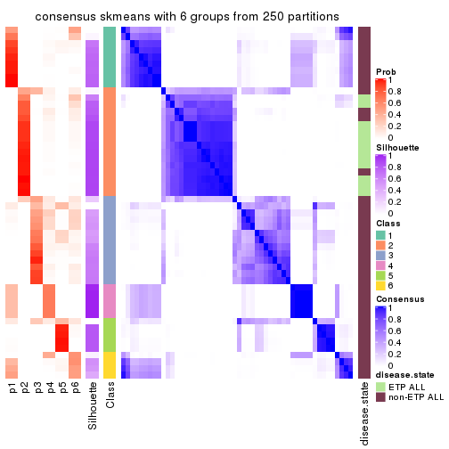
Heatmaps for the membership of samples in all partitions to see how consistent they are:
membership_heatmap(res, k = 2)
membership_heatmap(res, k = 3)
membership_heatmap(res, k = 4)

membership_heatmap(res, k = 5)
membership_heatmap(res, k = 6)
As soon as we have had the classes for columns, we can look for signatures which are significantly different between classes which can be candidate marks for certain classes. Following are the heatmaps for signatures.
Signature heatmaps where rows are scaled:
get_signatures(res, k = 2)
get_signatures(res, k = 3)
get_signatures(res, k = 4)
get_signatures(res, k = 5)
get_signatures(res, k = 6)
Signature heatmaps where rows are not scaled:
get_signatures(res, k = 2, scale_rows = FALSE)
get_signatures(res, k = 3, scale_rows = FALSE)
get_signatures(res, k = 4, scale_rows = FALSE)
get_signatures(res, k = 5, scale_rows = FALSE)
get_signatures(res, k = 6, scale_rows = FALSE)
Compare the overlap of signatures from different k:
compare_signatures(res)
get_signature() returns a data frame invisibly. TO get the list of signatures, the function
call should be assigned to a variable explicitly. In following code, if plot argument is set
to FALSE, no heatmap is plotted while only the differential analysis is performed.
# code only for demonstration
tb = get_signature(res, k = ..., plot = FALSE)
An example of the output of tb is:
#> which_row fdr mean_1 mean_2 scaled_mean_1 scaled_mean_2 km
#> 1 38 0.042760348 8.373488 9.131774 -0.5533452 0.5164555 1
#> 2 40 0.018707592 7.106213 8.469186 -0.6173731 0.5762149 1
#> 3 55 0.019134737 10.221463 11.207825 -0.6159697 0.5749050 1
#> 4 59 0.006059896 5.921854 7.869574 -0.6899429 0.6439467 1
#> 5 60 0.018055526 8.928898 10.211722 -0.6204761 0.5791110 1
#> 6 98 0.009384629 15.714769 14.887706 0.6635654 -0.6193277 2
...
The columns in tb are:
which_row: row indices corresponding to the input matrix.fdr: FDR for the differential test. mean_x: The mean value in group x.scaled_mean_x: The mean value in group x after rows are scaled.km: Row groups if k-means clustering is applied to rows.UMAP plot which shows how samples are separated.
dimension_reduction(res, k = 2, method = "UMAP")
dimension_reduction(res, k = 3, method = "UMAP")
dimension_reduction(res, k = 4, method = "UMAP")
dimension_reduction(res, k = 5, method = "UMAP")
dimension_reduction(res, k = 6, method = "UMAP")
Following heatmap shows how subgroups are split when increasing k:
collect_classes(res)
Test correlation between subgroups and known annotations. If the known annotation is numeric, one-way ANOVA test is applied, and if the known annotation is discrete, chi-squared contingency table test is applied.
test_to_known_factors(res)
#> n disease.state(p) k
#> CV:skmeans 52 3.73e-07 2
#> CV:skmeans 52 1.06e-07 3
#> CV:skmeans 52 4.94e-07 4
#> CV:skmeans 44 2.01e-06 5
#> CV:skmeans 42 1.32e-05 6
If matrix rows can be associated to genes, consider to use functional_enrichment(res,
...) to perform function enrichment for the signature genes. See this vignette for more detailed explanations.
The object with results only for a single top-value method and a single partition method can be extracted as:
res = res_list["CV", "pam"]
# you can also extract it by
# res = res_list["CV:pam"]
A summary of res and all the functions that can be applied to it:
res
#> A 'ConsensusPartition' object with k = 2, 3, 4, 5, 6.
#> On a matrix with 51979 rows and 52 columns.
#> Top rows (1000, 2000, 3000, 4000, 5000) are extracted by 'CV' method.
#> Subgroups are detected by 'pam' method.
#> Performed in total 1250 partitions by row resampling.
#> Best k for subgroups seems to be 5.
#>
#> Following methods can be applied to this 'ConsensusPartition' object:
#> [1] "cola_report" "collect_classes" "collect_plots"
#> [4] "collect_stats" "colnames" "compare_signatures"
#> [7] "consensus_heatmap" "dimension_reduction" "functional_enrichment"
#> [10] "get_anno_col" "get_anno" "get_classes"
#> [13] "get_consensus" "get_matrix" "get_membership"
#> [16] "get_param" "get_signatures" "get_stats"
#> [19] "is_best_k" "is_stable_k" "membership_heatmap"
#> [22] "ncol" "nrow" "plot_ecdf"
#> [25] "rownames" "select_partition_number" "show"
#> [28] "suggest_best_k" "test_to_known_factors"
collect_plots() function collects all the plots made from res for all k (number of partitions)
into one single page to provide an easy and fast comparison between different k.
collect_plots(res)
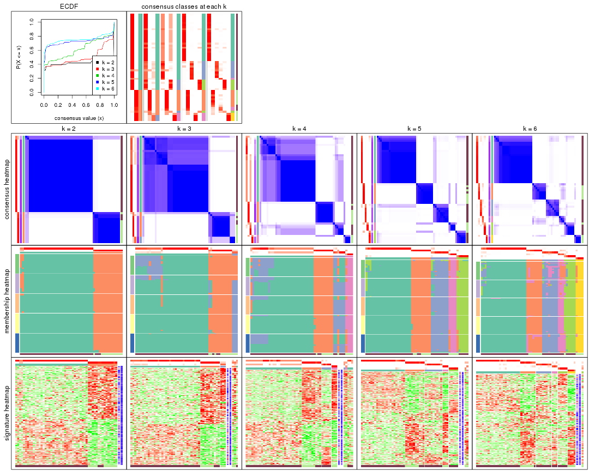
The plots are:
k and the heatmap of
predicted classes for each k.k.k.k.All the plots in panels can be made by individual functions and they are plotted later in this section.
select_partition_number() produces several plots showing different
statistics for choosing “optimized” k. There are following statistics:
k;k, the area increased is defined as \(A_k - A_{k-1}\).The detailed explanations of these statistics can be found in the cola vignette.
Generally speaking, lower PAC score, higher mean silhouette score or higher
concordance corresponds to better partition. Rand index and Jaccard index
measure how similar the current partition is compared to partition with k-1.
If they are too similar, we won't accept k is better than k-1.
select_partition_number(res)
The numeric values for all these statistics can be obtained by get_stats().
get_stats(res)
#> k 1-PAC mean_silhouette concordance area_increased Rand Jaccard
#> 2 2 1.000 0.965 0.985 0.4262 0.581 0.581
#> 3 3 0.690 0.855 0.911 0.1610 0.973 0.953
#> 4 4 0.663 0.714 0.859 0.2418 0.857 0.746
#> 5 5 0.926 0.890 0.954 0.1828 0.844 0.632
#> 6 6 0.892 0.854 0.927 0.0396 0.980 0.927
suggest_best_k() suggests the best \(k\) based on these statistics. The rules are as follows:
suggest_best_k(res)
#> [1] 5
#> attr(,"optional")
#> [1] 2
There is also optional best \(k\) = 2 that is worth to check.
Following shows the table of the partitions (You need to click the show/hide
code output link to see it). The membership matrix (columns with name p*)
is inferred by
clue::cl_consensus()
function with the SE method. Basically the value in the membership matrix
represents the probability to belong to a certain group. The finall class
label for an item is determined with the group with highest probability it
belongs to.
In get_classes() function, the entropy is calculated from the membership
matrix and the silhouette score is calculated from the consensus matrix.
cbind(get_classes(res, k = 2), get_membership(res, k = 2))
#> class entropy silhouette p1 p2
#> GSM710838 2 0.000 0.989 0.000 1.000
#> GSM710840 2 0.000 0.989 0.000 1.000
#> GSM710842 2 0.000 0.989 0.000 1.000
#> GSM710844 2 0.000 0.989 0.000 1.000
#> GSM710847 2 0.000 0.989 0.000 1.000
#> GSM710848 2 0.456 0.897 0.096 0.904
#> GSM710850 2 0.000 0.989 0.000 1.000
#> GSM710931 2 0.000 0.989 0.000 1.000
#> GSM710932 2 0.000 0.989 0.000 1.000
#> GSM710933 2 0.000 0.989 0.000 1.000
#> GSM710934 2 0.000 0.989 0.000 1.000
#> GSM710935 2 0.000 0.989 0.000 1.000
#> GSM710851 1 0.000 0.982 1.000 0.000
#> GSM710852 1 0.000 0.982 1.000 0.000
#> GSM710854 2 0.184 0.969 0.028 0.972
#> GSM710856 1 0.000 0.982 1.000 0.000
#> GSM710857 1 0.000 0.982 1.000 0.000
#> GSM710859 1 0.000 0.982 1.000 0.000
#> GSM710861 1 0.000 0.982 1.000 0.000
#> GSM710864 1 0.000 0.982 1.000 0.000
#> GSM710866 1 0.000 0.982 1.000 0.000
#> GSM710868 1 0.000 0.982 1.000 0.000
#> GSM710870 1 0.000 0.982 1.000 0.000
#> GSM710872 1 0.000 0.982 1.000 0.000
#> GSM710874 1 0.000 0.982 1.000 0.000
#> GSM710876 1 0.000 0.982 1.000 0.000
#> GSM710878 1 0.000 0.982 1.000 0.000
#> GSM710880 1 0.000 0.982 1.000 0.000
#> GSM710882 1 0.000 0.982 1.000 0.000
#> GSM710884 1 0.000 0.982 1.000 0.000
#> GSM710887 1 0.000 0.982 1.000 0.000
#> GSM710889 1 0.000 0.982 1.000 0.000
#> GSM710891 2 0.184 0.969 0.028 0.972
#> GSM710893 1 0.000 0.982 1.000 0.000
#> GSM710895 1 0.000 0.982 1.000 0.000
#> GSM710897 1 0.000 0.982 1.000 0.000
#> GSM710899 1 0.891 0.557 0.692 0.308
#> GSM710901 1 0.000 0.982 1.000 0.000
#> GSM710903 1 0.000 0.982 1.000 0.000
#> GSM710904 1 0.000 0.982 1.000 0.000
#> GSM710907 1 0.000 0.982 1.000 0.000
#> GSM710909 1 0.000 0.982 1.000 0.000
#> GSM710910 1 0.000 0.982 1.000 0.000
#> GSM710912 2 0.000 0.989 0.000 1.000
#> GSM710914 1 0.000 0.982 1.000 0.000
#> GSM710917 1 0.909 0.529 0.676 0.324
#> GSM710919 1 0.000 0.982 1.000 0.000
#> GSM710921 1 0.000 0.982 1.000 0.000
#> GSM710923 1 0.000 0.982 1.000 0.000
#> GSM710925 1 0.000 0.982 1.000 0.000
#> GSM710927 1 0.000 0.982 1.000 0.000
#> GSM710929 1 0.000 0.982 1.000 0.000
cbind(get_classes(res, k = 3), get_membership(res, k = 3))
#> class entropy silhouette p1 p2 p3
#> GSM710838 2 0.0237 0.884 0.000 0.996 0.004
#> GSM710840 2 0.0000 0.887 0.000 1.000 0.000
#> GSM710842 2 0.0000 0.887 0.000 1.000 0.000
#> GSM710844 3 0.5138 1.000 0.000 0.252 0.748
#> GSM710847 2 0.0000 0.887 0.000 1.000 0.000
#> GSM710848 2 0.6823 0.223 0.296 0.668 0.036
#> GSM710850 3 0.5138 1.000 0.000 0.252 0.748
#> GSM710931 2 0.0000 0.887 0.000 1.000 0.000
#> GSM710932 2 0.0000 0.887 0.000 1.000 0.000
#> GSM710933 3 0.5138 1.000 0.000 0.252 0.748
#> GSM710934 2 0.5706 0.229 0.000 0.680 0.320
#> GSM710935 2 0.0000 0.887 0.000 1.000 0.000
#> GSM710851 1 0.0592 0.913 0.988 0.000 0.012
#> GSM710852 1 0.0000 0.917 1.000 0.000 0.000
#> GSM710854 2 0.0000 0.887 0.000 1.000 0.000
#> GSM710856 1 0.0000 0.917 1.000 0.000 0.000
#> GSM710857 1 0.0000 0.917 1.000 0.000 0.000
#> GSM710859 1 0.4121 0.860 0.832 0.000 0.168
#> GSM710861 1 0.0000 0.917 1.000 0.000 0.000
#> GSM710864 1 0.0000 0.917 1.000 0.000 0.000
#> GSM710866 1 0.0000 0.917 1.000 0.000 0.000
#> GSM710868 1 0.0000 0.917 1.000 0.000 0.000
#> GSM710870 1 0.4062 0.862 0.836 0.000 0.164
#> GSM710872 1 0.5016 0.814 0.760 0.000 0.240
#> GSM710874 1 0.4002 0.863 0.840 0.000 0.160
#> GSM710876 1 0.0000 0.917 1.000 0.000 0.000
#> GSM710878 1 0.0000 0.917 1.000 0.000 0.000
#> GSM710880 1 0.0000 0.917 1.000 0.000 0.000
#> GSM710882 1 0.0000 0.917 1.000 0.000 0.000
#> GSM710884 1 0.0000 0.917 1.000 0.000 0.000
#> GSM710887 1 0.0000 0.917 1.000 0.000 0.000
#> GSM710889 1 0.3816 0.867 0.852 0.000 0.148
#> GSM710891 2 0.0592 0.868 0.012 0.988 0.000
#> GSM710893 1 0.0000 0.917 1.000 0.000 0.000
#> GSM710895 1 0.3816 0.867 0.852 0.000 0.148
#> GSM710897 1 0.0000 0.917 1.000 0.000 0.000
#> GSM710899 1 0.6764 0.772 0.744 0.108 0.148
#> GSM710901 1 0.0000 0.917 1.000 0.000 0.000
#> GSM710903 1 0.0592 0.913 0.988 0.000 0.012
#> GSM710904 1 0.0000 0.917 1.000 0.000 0.000
#> GSM710907 1 0.0000 0.917 1.000 0.000 0.000
#> GSM710909 1 0.4121 0.858 0.832 0.000 0.168
#> GSM710910 1 0.5016 0.814 0.760 0.000 0.240
#> GSM710912 2 0.0000 0.887 0.000 1.000 0.000
#> GSM710914 1 0.0592 0.913 0.988 0.000 0.012
#> GSM710917 1 0.8426 0.279 0.524 0.384 0.092
#> GSM710919 1 0.0000 0.917 1.000 0.000 0.000
#> GSM710921 1 0.5138 0.807 0.748 0.000 0.252
#> GSM710923 1 0.0000 0.917 1.000 0.000 0.000
#> GSM710925 1 0.4974 0.819 0.764 0.000 0.236
#> GSM710927 1 0.5016 0.814 0.760 0.000 0.240
#> GSM710929 1 0.5138 0.807 0.748 0.000 0.252
cbind(get_classes(res, k = 4), get_membership(res, k = 4))
#> class entropy silhouette p1 p2 p3 p4
#> GSM710838 2 0.0188 0.9805 0.000 0.996 0.000 0.004
#> GSM710840 2 0.0000 0.9844 0.000 1.000 0.000 0.000
#> GSM710842 2 0.0000 0.9844 0.000 1.000 0.000 0.000
#> GSM710844 4 0.0000 0.8096 0.000 0.000 0.000 1.000
#> GSM710847 2 0.0000 0.9844 0.000 1.000 0.000 0.000
#> GSM710848 3 0.5292 -0.1362 0.000 0.480 0.512 0.008
#> GSM710850 4 0.0000 0.8096 0.000 0.000 0.000 1.000
#> GSM710931 2 0.0000 0.9844 0.000 1.000 0.000 0.000
#> GSM710932 2 0.0000 0.9844 0.000 1.000 0.000 0.000
#> GSM710933 4 0.0000 0.8096 0.000 0.000 0.000 1.000
#> GSM710934 4 0.4985 0.0913 0.000 0.468 0.000 0.532
#> GSM710935 2 0.0000 0.9844 0.000 1.000 0.000 0.000
#> GSM710851 3 0.0000 0.7222 0.000 0.000 1.000 0.000
#> GSM710852 1 0.4898 0.7976 0.584 0.000 0.416 0.000
#> GSM710854 2 0.0000 0.9844 0.000 1.000 0.000 0.000
#> GSM710856 1 0.4898 0.7976 0.584 0.000 0.416 0.000
#> GSM710857 1 0.4898 0.7976 0.584 0.000 0.416 0.000
#> GSM710859 1 0.2216 0.5850 0.908 0.000 0.092 0.000
#> GSM710861 1 0.4898 0.7976 0.584 0.000 0.416 0.000
#> GSM710864 1 0.4898 0.7976 0.584 0.000 0.416 0.000
#> GSM710866 1 0.4898 0.7976 0.584 0.000 0.416 0.000
#> GSM710868 1 0.4898 0.7976 0.584 0.000 0.416 0.000
#> GSM710870 1 0.4164 0.7014 0.736 0.000 0.264 0.000
#> GSM710872 1 0.0000 0.5011 1.000 0.000 0.000 0.000
#> GSM710874 3 0.3024 0.6548 0.148 0.000 0.852 0.000
#> GSM710876 1 0.4898 0.7976 0.584 0.000 0.416 0.000
#> GSM710878 1 0.4898 0.7976 0.584 0.000 0.416 0.000
#> GSM710880 1 0.4898 0.7976 0.584 0.000 0.416 0.000
#> GSM710882 1 0.4898 0.7976 0.584 0.000 0.416 0.000
#> GSM710884 1 0.4898 0.7976 0.584 0.000 0.416 0.000
#> GSM710887 1 0.4898 0.7976 0.584 0.000 0.416 0.000
#> GSM710889 1 0.4193 0.7035 0.732 0.000 0.268 0.000
#> GSM710891 2 0.1792 0.8596 0.068 0.932 0.000 0.000
#> GSM710893 1 0.4898 0.7976 0.584 0.000 0.416 0.000
#> GSM710895 1 0.4790 0.5682 0.620 0.000 0.380 0.000
#> GSM710897 1 0.4898 0.7976 0.584 0.000 0.416 0.000
#> GSM710899 1 0.1807 0.4896 0.940 0.052 0.008 0.000
#> GSM710901 1 0.4898 0.7976 0.584 0.000 0.416 0.000
#> GSM710903 3 0.0000 0.7222 0.000 0.000 1.000 0.000
#> GSM710904 1 0.4898 0.7976 0.584 0.000 0.416 0.000
#> GSM710907 1 0.4898 0.7976 0.584 0.000 0.416 0.000
#> GSM710909 1 0.2011 0.5752 0.920 0.000 0.080 0.000
#> GSM710910 1 0.3123 0.2105 0.844 0.000 0.156 0.000
#> GSM710912 2 0.0000 0.9844 0.000 1.000 0.000 0.000
#> GSM710914 3 0.0000 0.7222 0.000 0.000 1.000 0.000
#> GSM710917 1 0.6163 -0.1192 0.532 0.416 0.052 0.000
#> GSM710919 1 0.4898 0.7976 0.584 0.000 0.416 0.000
#> GSM710921 1 0.0000 0.5011 1.000 0.000 0.000 0.000
#> GSM710923 1 0.4898 0.7976 0.584 0.000 0.416 0.000
#> GSM710925 3 0.4072 0.5577 0.252 0.000 0.748 0.000
#> GSM710927 1 0.0000 0.5011 1.000 0.000 0.000 0.000
#> GSM710929 1 0.0000 0.5011 1.000 0.000 0.000 0.000
cbind(get_classes(res, k = 5), get_membership(res, k = 5))
#> class entropy silhouette p1 p2 p3 p4 p5
#> GSM710838 2 0.0162 0.978 0.000 0.996 0.000 0.004 0.000
#> GSM710840 2 0.0000 0.981 0.000 1.000 0.000 0.000 0.000
#> GSM710842 2 0.0510 0.969 0.000 0.984 0.016 0.000 0.000
#> GSM710844 4 0.0000 0.832 0.000 0.000 0.000 1.000 0.000
#> GSM710847 2 0.0000 0.981 0.000 1.000 0.000 0.000 0.000
#> GSM710848 5 0.4632 0.360 0.004 0.376 0.012 0.000 0.608
#> GSM710850 4 0.0000 0.832 0.000 0.000 0.000 1.000 0.000
#> GSM710931 2 0.0000 0.981 0.000 1.000 0.000 0.000 0.000
#> GSM710932 2 0.0000 0.981 0.000 1.000 0.000 0.000 0.000
#> GSM710933 4 0.0000 0.832 0.000 0.000 0.000 1.000 0.000
#> GSM710934 4 0.4482 0.358 0.000 0.376 0.012 0.612 0.000
#> GSM710935 2 0.0000 0.981 0.000 1.000 0.000 0.000 0.000
#> GSM710851 5 0.0510 0.877 0.016 0.000 0.000 0.000 0.984
#> GSM710852 1 0.0404 0.966 0.988 0.000 0.012 0.000 0.000
#> GSM710854 2 0.0290 0.973 0.008 0.992 0.000 0.000 0.000
#> GSM710856 1 0.0000 0.973 1.000 0.000 0.000 0.000 0.000
#> GSM710857 1 0.0000 0.973 1.000 0.000 0.000 0.000 0.000
#> GSM710859 3 0.5437 0.587 0.220 0.000 0.652 0.000 0.128
#> GSM710861 1 0.0000 0.973 1.000 0.000 0.000 0.000 0.000
#> GSM710864 1 0.0404 0.966 0.988 0.000 0.012 0.000 0.000
#> GSM710866 1 0.0000 0.973 1.000 0.000 0.000 0.000 0.000
#> GSM710868 1 0.0404 0.966 0.988 0.000 0.012 0.000 0.000
#> GSM710870 1 0.2873 0.841 0.856 0.000 0.016 0.000 0.128
#> GSM710872 3 0.1211 0.873 0.024 0.000 0.960 0.000 0.016
#> GSM710874 5 0.0000 0.865 0.000 0.000 0.000 0.000 1.000
#> GSM710876 1 0.0290 0.968 0.992 0.000 0.008 0.000 0.000
#> GSM710878 1 0.0000 0.973 1.000 0.000 0.000 0.000 0.000
#> GSM710880 1 0.0000 0.973 1.000 0.000 0.000 0.000 0.000
#> GSM710882 1 0.0000 0.973 1.000 0.000 0.000 0.000 0.000
#> GSM710884 1 0.0000 0.973 1.000 0.000 0.000 0.000 0.000
#> GSM710887 1 0.0000 0.973 1.000 0.000 0.000 0.000 0.000
#> GSM710889 1 0.1764 0.915 0.928 0.000 0.008 0.000 0.064
#> GSM710891 2 0.1671 0.864 0.076 0.924 0.000 0.000 0.000
#> GSM710893 1 0.0404 0.966 0.988 0.000 0.012 0.000 0.000
#> GSM710895 1 0.4025 0.592 0.700 0.000 0.008 0.000 0.292
#> GSM710897 1 0.0000 0.973 1.000 0.000 0.000 0.000 0.000
#> GSM710899 3 0.0566 0.875 0.012 0.004 0.984 0.000 0.000
#> GSM710901 1 0.0000 0.973 1.000 0.000 0.000 0.000 0.000
#> GSM710903 5 0.0510 0.877 0.016 0.000 0.000 0.000 0.984
#> GSM710904 1 0.0000 0.973 1.000 0.000 0.000 0.000 0.000
#> GSM710907 1 0.0000 0.973 1.000 0.000 0.000 0.000 0.000
#> GSM710909 3 0.4227 0.571 0.292 0.000 0.692 0.000 0.016
#> GSM710910 3 0.0404 0.876 0.012 0.000 0.988 0.000 0.000
#> GSM710912 2 0.0000 0.981 0.000 1.000 0.000 0.000 0.000
#> GSM710914 5 0.0510 0.877 0.016 0.000 0.000 0.000 0.984
#> GSM710917 3 0.1106 0.862 0.012 0.024 0.964 0.000 0.000
#> GSM710919 1 0.0000 0.973 1.000 0.000 0.000 0.000 0.000
#> GSM710921 3 0.0912 0.878 0.012 0.000 0.972 0.000 0.016
#> GSM710923 1 0.0000 0.973 1.000 0.000 0.000 0.000 0.000
#> GSM710925 5 0.1106 0.852 0.024 0.000 0.012 0.000 0.964
#> GSM710927 3 0.0693 0.878 0.012 0.000 0.980 0.000 0.008
#> GSM710929 3 0.0912 0.878 0.012 0.000 0.972 0.000 0.016
cbind(get_classes(res, k = 6), get_membership(res, k = 6))
#> class entropy silhouette p1 p2 p3 p4 p5 p6
#> GSM710838 2 0.0000 0.9020 0.000 1.000 0.000 0.000 0.000 0.000
#> GSM710840 2 0.0000 0.9020 0.000 1.000 0.000 0.000 0.000 0.000
#> GSM710842 2 0.2762 0.7398 0.000 0.804 0.000 0.196 0.000 0.000
#> GSM710844 6 0.0000 0.8953 0.000 0.000 0.000 0.000 0.000 1.000
#> GSM710847 2 0.0000 0.9020 0.000 1.000 0.000 0.000 0.000 0.000
#> GSM710848 5 0.5778 0.0626 0.000 0.176 0.004 0.312 0.508 0.000
#> GSM710850 6 0.0000 0.8953 0.000 0.000 0.000 0.000 0.000 1.000
#> GSM710931 2 0.1501 0.8729 0.000 0.924 0.000 0.076 0.000 0.000
#> GSM710932 2 0.0000 0.9020 0.000 1.000 0.000 0.000 0.000 0.000
#> GSM710933 6 0.0000 0.8953 0.000 0.000 0.000 0.000 0.000 1.000
#> GSM710934 6 0.3276 0.6266 0.000 0.228 0.004 0.004 0.000 0.764
#> GSM710935 2 0.1267 0.8743 0.000 0.940 0.000 0.060 0.000 0.000
#> GSM710851 5 0.0000 0.8462 0.000 0.000 0.000 0.000 1.000 0.000
#> GSM710852 1 0.0291 0.9592 0.992 0.000 0.004 0.004 0.000 0.000
#> GSM710854 4 0.3309 0.7101 0.000 0.280 0.000 0.720 0.000 0.000
#> GSM710856 1 0.0000 0.9625 1.000 0.000 0.000 0.000 0.000 0.000
#> GSM710857 1 0.0000 0.9625 1.000 0.000 0.000 0.000 0.000 0.000
#> GSM710859 3 0.2849 0.8169 0.044 0.000 0.864 0.008 0.084 0.000
#> GSM710861 1 0.0000 0.9625 1.000 0.000 0.000 0.000 0.000 0.000
#> GSM710864 1 0.0291 0.9592 0.992 0.000 0.004 0.004 0.000 0.000
#> GSM710866 1 0.0000 0.9625 1.000 0.000 0.000 0.000 0.000 0.000
#> GSM710868 1 0.0291 0.9592 0.992 0.000 0.004 0.004 0.000 0.000
#> GSM710870 1 0.4119 0.7260 0.760 0.000 0.148 0.008 0.084 0.000
#> GSM710872 3 0.2301 0.8339 0.020 0.000 0.884 0.096 0.000 0.000
#> GSM710874 5 0.0000 0.8462 0.000 0.000 0.000 0.000 1.000 0.000
#> GSM710876 1 0.0632 0.9488 0.976 0.000 0.000 0.024 0.000 0.000
#> GSM710878 1 0.0000 0.9625 1.000 0.000 0.000 0.000 0.000 0.000
#> GSM710880 1 0.0146 0.9610 0.996 0.000 0.000 0.004 0.000 0.000
#> GSM710882 1 0.0000 0.9625 1.000 0.000 0.000 0.000 0.000 0.000
#> GSM710884 1 0.0000 0.9625 1.000 0.000 0.000 0.000 0.000 0.000
#> GSM710887 1 0.0000 0.9625 1.000 0.000 0.000 0.000 0.000 0.000
#> GSM710889 1 0.3201 0.7934 0.820 0.000 0.148 0.008 0.024 0.000
#> GSM710891 4 0.2762 0.7794 0.000 0.196 0.000 0.804 0.000 0.000
#> GSM710893 1 0.0291 0.9592 0.992 0.000 0.004 0.004 0.000 0.000
#> GSM710895 1 0.4776 0.6115 0.688 0.000 0.108 0.008 0.196 0.000
#> GSM710897 1 0.0000 0.9625 1.000 0.000 0.000 0.000 0.000 0.000
#> GSM710899 4 0.1863 0.6503 0.000 0.000 0.104 0.896 0.000 0.000
#> GSM710901 1 0.0632 0.9488 0.976 0.000 0.000 0.024 0.000 0.000
#> GSM710903 5 0.0000 0.8462 0.000 0.000 0.000 0.000 1.000 0.000
#> GSM710904 1 0.0000 0.9625 1.000 0.000 0.000 0.000 0.000 0.000
#> GSM710907 1 0.0000 0.9625 1.000 0.000 0.000 0.000 0.000 0.000
#> GSM710909 3 0.1720 0.8643 0.040 0.000 0.928 0.032 0.000 0.000
#> GSM710910 3 0.2633 0.8388 0.004 0.000 0.864 0.112 0.020 0.000
#> GSM710912 2 0.3023 0.6504 0.000 0.768 0.000 0.232 0.000 0.000
#> GSM710914 5 0.0000 0.8462 0.000 0.000 0.000 0.000 1.000 0.000
#> GSM710917 3 0.3885 0.7398 0.004 0.048 0.756 0.192 0.000 0.000
#> GSM710919 1 0.0000 0.9625 1.000 0.000 0.000 0.000 0.000 0.000
#> GSM710921 3 0.0146 0.8860 0.004 0.000 0.996 0.000 0.000 0.000
#> GSM710923 1 0.0000 0.9625 1.000 0.000 0.000 0.000 0.000 0.000
#> GSM710925 5 0.3279 0.6973 0.028 0.000 0.148 0.008 0.816 0.000
#> GSM710927 3 0.1219 0.8794 0.004 0.000 0.948 0.048 0.000 0.000
#> GSM710929 3 0.0146 0.8860 0.004 0.000 0.996 0.000 0.000 0.000
Heatmaps for the consensus matrix. It visualizes the probability of two samples to be in a same group.
consensus_heatmap(res, k = 2)
consensus_heatmap(res, k = 3)
consensus_heatmap(res, k = 4)
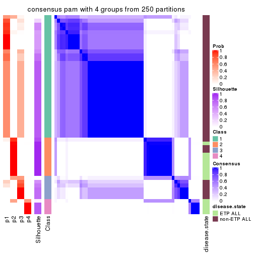
consensus_heatmap(res, k = 5)
consensus_heatmap(res, k = 6)
Heatmaps for the membership of samples in all partitions to see how consistent they are:
membership_heatmap(res, k = 2)
membership_heatmap(res, k = 3)
membership_heatmap(res, k = 4)
membership_heatmap(res, k = 5)
membership_heatmap(res, k = 6)
As soon as we have had the classes for columns, we can look for signatures which are significantly different between classes which can be candidate marks for certain classes. Following are the heatmaps for signatures.
Signature heatmaps where rows are scaled:
get_signatures(res, k = 2)
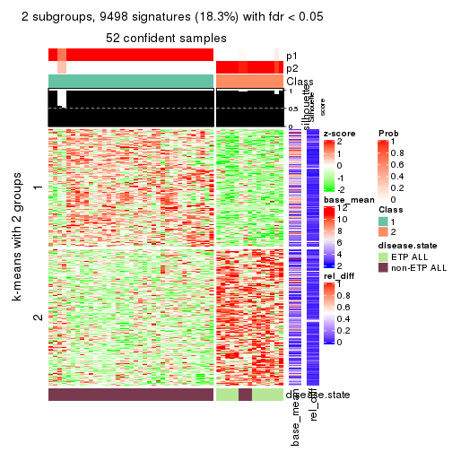
get_signatures(res, k = 3)
get_signatures(res, k = 4)
get_signatures(res, k = 5)
get_signatures(res, k = 6)
Signature heatmaps where rows are not scaled:
get_signatures(res, k = 2, scale_rows = FALSE)
get_signatures(res, k = 3, scale_rows = FALSE)
get_signatures(res, k = 4, scale_rows = FALSE)
get_signatures(res, k = 5, scale_rows = FALSE)
get_signatures(res, k = 6, scale_rows = FALSE)
Compare the overlap of signatures from different k:
compare_signatures(res)
get_signature() returns a data frame invisibly. TO get the list of signatures, the function
call should be assigned to a variable explicitly. In following code, if plot argument is set
to FALSE, no heatmap is plotted while only the differential analysis is performed.
# code only for demonstration
tb = get_signature(res, k = ..., plot = FALSE)
An example of the output of tb is:
#> which_row fdr mean_1 mean_2 scaled_mean_1 scaled_mean_2 km
#> 1 38 0.042760348 8.373488 9.131774 -0.5533452 0.5164555 1
#> 2 40 0.018707592 7.106213 8.469186 -0.6173731 0.5762149 1
#> 3 55 0.019134737 10.221463 11.207825 -0.6159697 0.5749050 1
#> 4 59 0.006059896 5.921854 7.869574 -0.6899429 0.6439467 1
#> 5 60 0.018055526 8.928898 10.211722 -0.6204761 0.5791110 1
#> 6 98 0.009384629 15.714769 14.887706 0.6635654 -0.6193277 2
...
The columns in tb are:
which_row: row indices corresponding to the input matrix.fdr: FDR for the differential test. mean_x: The mean value in group x.scaled_mean_x: The mean value in group x after rows are scaled.km: Row groups if k-means clustering is applied to rows.UMAP plot which shows how samples are separated.
dimension_reduction(res, k = 2, method = "UMAP")
dimension_reduction(res, k = 3, method = "UMAP")
dimension_reduction(res, k = 4, method = "UMAP")
dimension_reduction(res, k = 5, method = "UMAP")
dimension_reduction(res, k = 6, method = "UMAP")
Following heatmap shows how subgroups are split when increasing k:
collect_classes(res)
Test correlation between subgroups and known annotations. If the known annotation is numeric, one-way ANOVA test is applied, and if the known annotation is discrete, chi-squared contingency table test is applied.
test_to_known_factors(res)
#> n disease.state(p) k
#> CV:pam 52 5.22e-09 2
#> CV:pam 49 1.47e-08 3
#> CV:pam 47 1.58e-07 4
#> CV:pam 50 1.91e-07 5
#> CV:pam 51 9.85e-09 6
If matrix rows can be associated to genes, consider to use functional_enrichment(res,
...) to perform function enrichment for the signature genes. See this vignette for more detailed explanations.
The object with results only for a single top-value method and a single partition method can be extracted as:
res = res_list["CV", "mclust"]
# you can also extract it by
# res = res_list["CV:mclust"]
A summary of res and all the functions that can be applied to it:
res
#> A 'ConsensusPartition' object with k = 2, 3, 4, 5, 6.
#> On a matrix with 51979 rows and 52 columns.
#> Top rows (1000, 2000, 3000, 4000, 5000) are extracted by 'CV' method.
#> Subgroups are detected by 'mclust' method.
#> Performed in total 1250 partitions by row resampling.
#> Best k for subgroups seems to be 2.
#>
#> Following methods can be applied to this 'ConsensusPartition' object:
#> [1] "cola_report" "collect_classes" "collect_plots"
#> [4] "collect_stats" "colnames" "compare_signatures"
#> [7] "consensus_heatmap" "dimension_reduction" "functional_enrichment"
#> [10] "get_anno_col" "get_anno" "get_classes"
#> [13] "get_consensus" "get_matrix" "get_membership"
#> [16] "get_param" "get_signatures" "get_stats"
#> [19] "is_best_k" "is_stable_k" "membership_heatmap"
#> [22] "ncol" "nrow" "plot_ecdf"
#> [25] "rownames" "select_partition_number" "show"
#> [28] "suggest_best_k" "test_to_known_factors"
collect_plots() function collects all the plots made from res for all k (number of partitions)
into one single page to provide an easy and fast comparison between different k.
collect_plots(res)
The plots are:
k and the heatmap of
predicted classes for each k.k.k.k.All the plots in panels can be made by individual functions and they are plotted later in this section.
select_partition_number() produces several plots showing different
statistics for choosing “optimized” k. There are following statistics:
k;k, the area increased is defined as \(A_k - A_{k-1}\).The detailed explanations of these statistics can be found in the cola vignette.
Generally speaking, lower PAC score, higher mean silhouette score or higher
concordance corresponds to better partition. Rand index and Jaccard index
measure how similar the current partition is compared to partition with k-1.
If they are too similar, we won't accept k is better than k-1.
select_partition_number(res)
The numeric values for all these statistics can be obtained by get_stats().
get_stats(res)
#> k 1-PAC mean_silhouette concordance area_increased Rand Jaccard
#> 2 2 1.000 0.996 0.998 0.4499 0.551 0.551
#> 3 3 0.636 0.834 0.902 0.4417 0.751 0.563
#> 4 4 0.802 0.859 0.924 0.1520 0.857 0.610
#> 5 5 0.815 0.767 0.862 0.0402 0.935 0.757
#> 6 6 0.850 0.814 0.872 0.0386 0.949 0.780
suggest_best_k() suggests the best \(k\) based on these statistics. The rules are as follows:
suggest_best_k(res)
#> [1] 2
Following shows the table of the partitions (You need to click the show/hide
code output link to see it). The membership matrix (columns with name p*)
is inferred by
clue::cl_consensus()
function with the SE method. Basically the value in the membership matrix
represents the probability to belong to a certain group. The finall class
label for an item is determined with the group with highest probability it
belongs to.
In get_classes() function, the entropy is calculated from the membership
matrix and the silhouette score is calculated from the consensus matrix.
cbind(get_classes(res, k = 2), get_membership(res, k = 2))
#> class entropy silhouette p1 p2
#> GSM710838 2 0.0000 0.998 0.000 1.000
#> GSM710840 2 0.0000 0.998 0.000 1.000
#> GSM710842 2 0.0000 0.998 0.000 1.000
#> GSM710844 2 0.0000 0.998 0.000 1.000
#> GSM710847 2 0.0000 0.998 0.000 1.000
#> GSM710848 2 0.0000 0.998 0.000 1.000
#> GSM710850 2 0.0000 0.998 0.000 1.000
#> GSM710931 2 0.0000 0.998 0.000 1.000
#> GSM710932 2 0.0000 0.998 0.000 1.000
#> GSM710933 2 0.0000 0.998 0.000 1.000
#> GSM710934 2 0.0000 0.998 0.000 1.000
#> GSM710935 2 0.0000 0.998 0.000 1.000
#> GSM710851 1 0.0000 0.998 1.000 0.000
#> GSM710852 1 0.0000 0.998 1.000 0.000
#> GSM710854 2 0.0000 0.998 0.000 1.000
#> GSM710856 1 0.0000 0.998 1.000 0.000
#> GSM710857 1 0.0000 0.998 1.000 0.000
#> GSM710859 1 0.0000 0.998 1.000 0.000
#> GSM710861 1 0.0000 0.998 1.000 0.000
#> GSM710864 1 0.4022 0.913 0.920 0.080
#> GSM710866 1 0.0000 0.998 1.000 0.000
#> GSM710868 1 0.0000 0.998 1.000 0.000
#> GSM710870 1 0.0000 0.998 1.000 0.000
#> GSM710872 1 0.0000 0.998 1.000 0.000
#> GSM710874 1 0.0000 0.998 1.000 0.000
#> GSM710876 1 0.0000 0.998 1.000 0.000
#> GSM710878 1 0.0000 0.998 1.000 0.000
#> GSM710880 1 0.0000 0.998 1.000 0.000
#> GSM710882 1 0.0000 0.998 1.000 0.000
#> GSM710884 1 0.0000 0.998 1.000 0.000
#> GSM710887 1 0.0000 0.998 1.000 0.000
#> GSM710889 1 0.0000 0.998 1.000 0.000
#> GSM710891 2 0.0000 0.998 0.000 1.000
#> GSM710893 1 0.0000 0.998 1.000 0.000
#> GSM710895 1 0.0000 0.998 1.000 0.000
#> GSM710897 1 0.0000 0.998 1.000 0.000
#> GSM710899 2 0.0938 0.989 0.012 0.988
#> GSM710901 1 0.0000 0.998 1.000 0.000
#> GSM710903 1 0.0000 0.998 1.000 0.000
#> GSM710904 1 0.0000 0.998 1.000 0.000
#> GSM710907 1 0.0000 0.998 1.000 0.000
#> GSM710909 1 0.0000 0.998 1.000 0.000
#> GSM710910 1 0.0000 0.998 1.000 0.000
#> GSM710912 2 0.0000 0.998 0.000 1.000
#> GSM710914 1 0.0000 0.998 1.000 0.000
#> GSM710917 2 0.0938 0.989 0.012 0.988
#> GSM710919 1 0.0000 0.998 1.000 0.000
#> GSM710921 1 0.0000 0.998 1.000 0.000
#> GSM710923 1 0.0000 0.998 1.000 0.000
#> GSM710925 1 0.0000 0.998 1.000 0.000
#> GSM710927 1 0.0000 0.998 1.000 0.000
#> GSM710929 1 0.0000 0.998 1.000 0.000
cbind(get_classes(res, k = 3), get_membership(res, k = 3))
#> class entropy silhouette p1 p2 p3
#> GSM710838 2 0.0000 0.9639 0.000 1.000 0.000
#> GSM710840 2 0.0000 0.9639 0.000 1.000 0.000
#> GSM710842 2 0.1643 0.9491 0.000 0.956 0.044
#> GSM710844 2 0.0000 0.9639 0.000 1.000 0.000
#> GSM710847 2 0.0000 0.9639 0.000 1.000 0.000
#> GSM710848 2 0.3816 0.8999 0.000 0.852 0.148
#> GSM710850 2 0.0000 0.9639 0.000 1.000 0.000
#> GSM710931 2 0.0000 0.9639 0.000 1.000 0.000
#> GSM710932 2 0.0000 0.9639 0.000 1.000 0.000
#> GSM710933 2 0.0000 0.9639 0.000 1.000 0.000
#> GSM710934 2 0.0000 0.9639 0.000 1.000 0.000
#> GSM710935 2 0.0000 0.9639 0.000 1.000 0.000
#> GSM710851 1 0.4750 0.6757 0.784 0.000 0.216
#> GSM710852 1 0.0000 0.8967 1.000 0.000 0.000
#> GSM710854 2 0.3816 0.8999 0.000 0.852 0.148
#> GSM710856 1 0.0000 0.8967 1.000 0.000 0.000
#> GSM710857 1 0.0237 0.8939 0.996 0.000 0.004
#> GSM710859 3 0.3816 0.8912 0.148 0.000 0.852
#> GSM710861 1 0.0000 0.8967 1.000 0.000 0.000
#> GSM710864 1 0.3551 0.7679 0.868 0.000 0.132
#> GSM710866 1 0.0000 0.8967 1.000 0.000 0.000
#> GSM710868 1 0.3267 0.7858 0.884 0.000 0.116
#> GSM710870 3 0.3816 0.8912 0.148 0.000 0.852
#> GSM710872 3 0.3816 0.8912 0.148 0.000 0.852
#> GSM710874 1 0.6308 -0.1109 0.508 0.000 0.492
#> GSM710876 3 0.5905 0.6501 0.352 0.000 0.648
#> GSM710878 1 0.0000 0.8967 1.000 0.000 0.000
#> GSM710880 1 0.0000 0.8967 1.000 0.000 0.000
#> GSM710882 1 0.0000 0.8967 1.000 0.000 0.000
#> GSM710884 1 0.0000 0.8967 1.000 0.000 0.000
#> GSM710887 1 0.0000 0.8967 1.000 0.000 0.000
#> GSM710889 3 0.3816 0.8912 0.148 0.000 0.852
#> GSM710891 2 0.3816 0.8999 0.000 0.852 0.148
#> GSM710893 1 0.0000 0.8967 1.000 0.000 0.000
#> GSM710895 3 0.3816 0.8912 0.148 0.000 0.852
#> GSM710897 1 0.0000 0.8967 1.000 0.000 0.000
#> GSM710899 3 0.4702 0.5241 0.000 0.212 0.788
#> GSM710901 1 0.6111 0.0687 0.604 0.000 0.396
#> GSM710903 1 0.4750 0.6757 0.784 0.000 0.216
#> GSM710904 1 0.0000 0.8967 1.000 0.000 0.000
#> GSM710907 1 0.0000 0.8967 1.000 0.000 0.000
#> GSM710909 3 0.5905 0.6501 0.352 0.000 0.648
#> GSM710910 3 0.3816 0.8912 0.148 0.000 0.852
#> GSM710912 2 0.3340 0.9152 0.000 0.880 0.120
#> GSM710914 1 0.4750 0.6757 0.784 0.000 0.216
#> GSM710917 3 0.4702 0.5241 0.000 0.212 0.788
#> GSM710919 1 0.0000 0.8967 1.000 0.000 0.000
#> GSM710921 3 0.3816 0.8912 0.148 0.000 0.852
#> GSM710923 1 0.0000 0.8967 1.000 0.000 0.000
#> GSM710925 3 0.3816 0.8912 0.148 0.000 0.852
#> GSM710927 3 0.3816 0.8912 0.148 0.000 0.852
#> GSM710929 3 0.3816 0.8912 0.148 0.000 0.852
cbind(get_classes(res, k = 4), get_membership(res, k = 4))
#> class entropy silhouette p1 p2 p3 p4
#> GSM710838 2 0.0188 0.9578 0.000 0.996 0.000 0.004
#> GSM710840 2 0.1398 0.9550 0.000 0.956 0.040 0.004
#> GSM710842 2 0.1211 0.9551 0.000 0.960 0.040 0.000
#> GSM710844 2 0.0000 0.9590 0.000 1.000 0.000 0.000
#> GSM710847 2 0.0000 0.9590 0.000 1.000 0.000 0.000
#> GSM710848 4 0.3400 0.7170 0.000 0.180 0.000 0.820
#> GSM710850 2 0.0000 0.9590 0.000 1.000 0.000 0.000
#> GSM710931 2 0.0000 0.9590 0.000 1.000 0.000 0.000
#> GSM710932 2 0.0188 0.9578 0.000 0.996 0.000 0.004
#> GSM710933 2 0.0000 0.9590 0.000 1.000 0.000 0.000
#> GSM710934 2 0.4277 0.6430 0.000 0.720 0.000 0.280
#> GSM710935 2 0.1211 0.9551 0.000 0.960 0.040 0.000
#> GSM710851 3 0.6850 0.3259 0.108 0.000 0.516 0.376
#> GSM710852 4 0.2530 0.9115 0.100 0.000 0.004 0.896
#> GSM710854 2 0.1635 0.9503 0.000 0.948 0.044 0.008
#> GSM710856 1 0.2805 0.8468 0.888 0.000 0.100 0.012
#> GSM710857 1 0.2867 0.8438 0.884 0.000 0.104 0.012
#> GSM710859 3 0.0000 0.8764 0.000 0.000 1.000 0.000
#> GSM710861 1 0.0000 0.9163 1.000 0.000 0.000 0.000
#> GSM710864 4 0.3528 0.8269 0.192 0.000 0.000 0.808
#> GSM710866 1 0.0000 0.9163 1.000 0.000 0.000 0.000
#> GSM710868 4 0.1867 0.9116 0.072 0.000 0.000 0.928
#> GSM710870 3 0.1489 0.8907 0.044 0.000 0.952 0.004
#> GSM710872 3 0.0000 0.8764 0.000 0.000 1.000 0.000
#> GSM710874 3 0.4174 0.7982 0.044 0.000 0.816 0.140
#> GSM710876 3 0.3907 0.7096 0.232 0.000 0.768 0.000
#> GSM710878 1 0.0000 0.9163 1.000 0.000 0.000 0.000
#> GSM710880 4 0.2530 0.9115 0.100 0.000 0.004 0.896
#> GSM710882 1 0.0469 0.9155 0.988 0.000 0.000 0.012
#> GSM710884 1 0.0469 0.9155 0.988 0.000 0.000 0.012
#> GSM710887 1 0.2053 0.8665 0.924 0.000 0.004 0.072
#> GSM710889 3 0.1489 0.8907 0.044 0.000 0.952 0.004
#> GSM710891 2 0.1635 0.9503 0.000 0.948 0.044 0.008
#> GSM710893 4 0.2530 0.9115 0.100 0.000 0.004 0.896
#> GSM710895 3 0.1489 0.8907 0.044 0.000 0.952 0.004
#> GSM710897 1 0.0469 0.9155 0.988 0.000 0.000 0.012
#> GSM710899 3 0.3249 0.7659 0.000 0.140 0.852 0.008
#> GSM710901 1 0.4999 -0.0426 0.508 0.000 0.492 0.000
#> GSM710903 4 0.0188 0.8905 0.000 0.000 0.004 0.996
#> GSM710904 1 0.1767 0.8932 0.944 0.000 0.044 0.012
#> GSM710907 1 0.0000 0.9163 1.000 0.000 0.000 0.000
#> GSM710909 3 0.3356 0.7791 0.176 0.000 0.824 0.000
#> GSM710910 3 0.2075 0.8881 0.044 0.004 0.936 0.016
#> GSM710912 2 0.1302 0.9536 0.000 0.956 0.044 0.000
#> GSM710914 4 0.0188 0.8905 0.000 0.000 0.004 0.996
#> GSM710917 3 0.3681 0.7269 0.000 0.176 0.816 0.008
#> GSM710919 1 0.0469 0.9155 0.988 0.000 0.000 0.012
#> GSM710921 3 0.1211 0.8901 0.040 0.000 0.960 0.000
#> GSM710923 1 0.0000 0.9163 1.000 0.000 0.000 0.000
#> GSM710925 3 0.1489 0.8907 0.044 0.000 0.952 0.004
#> GSM710927 3 0.0000 0.8764 0.000 0.000 1.000 0.000
#> GSM710929 3 0.1302 0.8903 0.044 0.000 0.956 0.000
cbind(get_classes(res, k = 5), get_membership(res, k = 5))
#> class entropy silhouette p1 p2 p3 p4 p5
#> GSM710838 2 0.0880 0.903 0.000 0.968 0.000 0.032 0.000
#> GSM710840 2 0.0162 0.905 0.000 0.996 0.000 0.004 0.000
#> GSM710842 2 0.0404 0.903 0.000 0.988 0.000 0.012 0.000
#> GSM710844 2 0.3983 0.720 0.000 0.660 0.000 0.340 0.000
#> GSM710847 2 0.0880 0.903 0.000 0.968 0.000 0.032 0.000
#> GSM710848 5 0.5164 0.572 0.000 0.256 0.000 0.084 0.660
#> GSM710850 2 0.3966 0.722 0.000 0.664 0.000 0.336 0.000
#> GSM710931 2 0.0609 0.905 0.000 0.980 0.000 0.020 0.000
#> GSM710932 2 0.0794 0.904 0.000 0.972 0.000 0.028 0.000
#> GSM710933 2 0.3983 0.720 0.000 0.660 0.000 0.340 0.000
#> GSM710934 5 0.5181 0.558 0.000 0.268 0.000 0.080 0.652
#> GSM710935 2 0.0404 0.903 0.000 0.988 0.000 0.012 0.000
#> GSM710851 3 0.4262 0.271 0.000 0.000 0.560 0.000 0.440
#> GSM710852 5 0.1557 0.861 0.052 0.000 0.008 0.000 0.940
#> GSM710854 2 0.1485 0.885 0.000 0.948 0.020 0.032 0.000
#> GSM710856 1 0.1965 0.728 0.904 0.000 0.096 0.000 0.000
#> GSM710857 1 0.2179 0.711 0.888 0.000 0.112 0.000 0.000
#> GSM710859 3 0.0000 0.887 0.000 0.000 1.000 0.000 0.000
#> GSM710861 1 0.6208 -0.693 0.480 0.000 0.000 0.376 0.144
#> GSM710864 5 0.2149 0.851 0.048 0.036 0.000 0.000 0.916
#> GSM710866 4 0.4273 0.979 0.448 0.000 0.000 0.552 0.000
#> GSM710868 5 0.0162 0.864 0.004 0.000 0.000 0.000 0.996
#> GSM710870 3 0.0000 0.887 0.000 0.000 1.000 0.000 0.000
#> GSM710872 3 0.0162 0.886 0.000 0.004 0.996 0.000 0.000
#> GSM710874 3 0.3074 0.726 0.000 0.000 0.804 0.000 0.196
#> GSM710876 3 0.1410 0.847 0.060 0.000 0.940 0.000 0.000
#> GSM710878 4 0.4273 0.979 0.448 0.000 0.000 0.552 0.000
#> GSM710880 5 0.1557 0.861 0.052 0.000 0.008 0.000 0.940
#> GSM710882 1 0.0162 0.627 0.996 0.000 0.004 0.000 0.000
#> GSM710884 1 0.1851 0.728 0.912 0.000 0.088 0.000 0.000
#> GSM710887 1 0.5145 0.231 0.612 0.000 0.056 0.000 0.332
#> GSM710889 3 0.0000 0.887 0.000 0.000 1.000 0.000 0.000
#> GSM710891 2 0.1485 0.885 0.000 0.948 0.020 0.032 0.000
#> GSM710893 5 0.1484 0.862 0.048 0.000 0.008 0.000 0.944
#> GSM710895 3 0.0000 0.887 0.000 0.000 1.000 0.000 0.000
#> GSM710897 1 0.1851 0.729 0.912 0.000 0.088 0.000 0.000
#> GSM710899 3 0.3841 0.712 0.000 0.188 0.780 0.032 0.000
#> GSM710901 3 0.3074 0.675 0.196 0.000 0.804 0.000 0.000
#> GSM710903 5 0.0404 0.865 0.000 0.000 0.012 0.000 0.988
#> GSM710904 1 0.1965 0.728 0.904 0.000 0.096 0.000 0.000
#> GSM710907 4 0.4273 0.979 0.448 0.000 0.000 0.552 0.000
#> GSM710909 3 0.0963 0.866 0.036 0.000 0.964 0.000 0.000
#> GSM710910 3 0.0162 0.885 0.000 0.004 0.996 0.000 0.000
#> GSM710912 2 0.0703 0.899 0.000 0.976 0.000 0.024 0.000
#> GSM710914 5 0.0404 0.865 0.000 0.000 0.012 0.000 0.988
#> GSM710917 3 0.4966 0.316 0.000 0.404 0.564 0.032 0.000
#> GSM710919 1 0.0000 0.620 1.000 0.000 0.000 0.000 0.000
#> GSM710921 3 0.0000 0.887 0.000 0.000 1.000 0.000 0.000
#> GSM710923 4 0.4302 0.935 0.480 0.000 0.000 0.520 0.000
#> GSM710925 3 0.0000 0.887 0.000 0.000 1.000 0.000 0.000
#> GSM710927 3 0.0000 0.887 0.000 0.000 1.000 0.000 0.000
#> GSM710929 3 0.0000 0.887 0.000 0.000 1.000 0.000 0.000
cbind(get_classes(res, k = 6), get_membership(res, k = 6))
#> class entropy silhouette p1 p2 p3 p4 p5 p6
#> GSM710838 2 0.0458 0.8474 0.000 0.984 0.000 0.000 0.000 0.016
#> GSM710840 2 0.0000 0.8588 0.000 1.000 0.000 0.000 0.000 0.000
#> GSM710842 2 0.1610 0.8295 0.000 0.916 0.000 0.084 0.000 0.000
#> GSM710844 4 0.3804 1.0000 0.000 0.424 0.000 0.576 0.000 0.000
#> GSM710847 2 0.0260 0.8531 0.000 0.992 0.000 0.008 0.000 0.000
#> GSM710848 5 0.5761 0.5974 0.000 0.060 0.000 0.120 0.628 0.192
#> GSM710850 4 0.3804 1.0000 0.000 0.424 0.000 0.576 0.000 0.000
#> GSM710931 2 0.0146 0.8566 0.000 0.996 0.000 0.004 0.000 0.000
#> GSM710932 2 0.0000 0.8588 0.000 1.000 0.000 0.000 0.000 0.000
#> GSM710933 4 0.3804 1.0000 0.000 0.424 0.000 0.576 0.000 0.000
#> GSM710934 5 0.5911 0.5852 0.000 0.072 0.000 0.120 0.616 0.192
#> GSM710935 2 0.0260 0.8596 0.000 0.992 0.000 0.008 0.000 0.000
#> GSM710851 5 0.4642 0.0469 0.012 0.000 0.452 0.020 0.516 0.000
#> GSM710852 5 0.0146 0.8405 0.004 0.000 0.000 0.000 0.996 0.000
#> GSM710854 2 0.3545 0.6669 0.000 0.748 0.008 0.236 0.008 0.000
#> GSM710856 1 0.0146 0.9191 0.996 0.000 0.004 0.000 0.000 0.000
#> GSM710857 1 0.0508 0.9093 0.984 0.000 0.012 0.004 0.000 0.000
#> GSM710859 3 0.0972 0.9060 0.000 0.000 0.964 0.028 0.000 0.008
#> GSM710861 6 0.6019 0.5043 0.300 0.000 0.000 0.000 0.272 0.428
#> GSM710864 5 0.0767 0.8343 0.012 0.000 0.000 0.008 0.976 0.004
#> GSM710866 6 0.2854 0.8596 0.208 0.000 0.000 0.000 0.000 0.792
#> GSM710868 5 0.0405 0.8385 0.000 0.000 0.000 0.008 0.988 0.004
#> GSM710870 3 0.0632 0.9037 0.000 0.000 0.976 0.024 0.000 0.000
#> GSM710872 3 0.0972 0.9062 0.000 0.000 0.964 0.028 0.000 0.008
#> GSM710874 3 0.3284 0.7141 0.000 0.000 0.784 0.020 0.196 0.000
#> GSM710876 3 0.1718 0.8919 0.020 0.000 0.936 0.024 0.000 0.020
#> GSM710878 6 0.2854 0.8596 0.208 0.000 0.000 0.000 0.000 0.792
#> GSM710880 5 0.0260 0.8392 0.008 0.000 0.000 0.000 0.992 0.000
#> GSM710882 1 0.0000 0.9169 1.000 0.000 0.000 0.000 0.000 0.000
#> GSM710884 1 0.0146 0.9191 0.996 0.000 0.004 0.000 0.000 0.000
#> GSM710887 1 0.3515 0.3968 0.676 0.000 0.000 0.000 0.324 0.000
#> GSM710889 3 0.0632 0.9037 0.000 0.000 0.976 0.024 0.000 0.000
#> GSM710891 2 0.3545 0.6669 0.000 0.748 0.008 0.236 0.008 0.000
#> GSM710893 5 0.0146 0.8405 0.004 0.000 0.000 0.000 0.996 0.000
#> GSM710895 3 0.0260 0.9067 0.000 0.000 0.992 0.008 0.000 0.000
#> GSM710897 1 0.0291 0.9177 0.992 0.000 0.004 0.000 0.004 0.000
#> GSM710899 3 0.3986 0.7186 0.000 0.032 0.732 0.228 0.008 0.000
#> GSM710901 3 0.3590 0.7407 0.152 0.000 0.800 0.028 0.000 0.020
#> GSM710903 5 0.0000 0.8406 0.000 0.000 0.000 0.000 1.000 0.000
#> GSM710904 1 0.0146 0.9191 0.996 0.000 0.004 0.000 0.000 0.000
#> GSM710907 6 0.2854 0.8596 0.208 0.000 0.000 0.000 0.000 0.792
#> GSM710909 3 0.1616 0.8946 0.012 0.000 0.940 0.028 0.000 0.020
#> GSM710910 3 0.0622 0.9073 0.000 0.000 0.980 0.012 0.008 0.000
#> GSM710912 2 0.1863 0.8160 0.000 0.896 0.000 0.104 0.000 0.000
#> GSM710914 5 0.0000 0.8406 0.000 0.000 0.000 0.000 1.000 0.000
#> GSM710917 3 0.5772 0.4262 0.000 0.188 0.544 0.260 0.008 0.000
#> GSM710919 1 0.0146 0.9144 0.996 0.000 0.000 0.000 0.000 0.004
#> GSM710921 3 0.0458 0.9078 0.000 0.000 0.984 0.016 0.000 0.000
#> GSM710923 6 0.3390 0.7913 0.296 0.000 0.000 0.000 0.000 0.704
#> GSM710925 3 0.0146 0.9080 0.000 0.000 0.996 0.004 0.000 0.000
#> GSM710927 3 0.0972 0.9062 0.000 0.000 0.964 0.028 0.000 0.008
#> GSM710929 3 0.0458 0.9078 0.000 0.000 0.984 0.016 0.000 0.000
Heatmaps for the consensus matrix. It visualizes the probability of two samples to be in a same group.
consensus_heatmap(res, k = 2)
consensus_heatmap(res, k = 3)
consensus_heatmap(res, k = 4)
consensus_heatmap(res, k = 5)
consensus_heatmap(res, k = 6)
Heatmaps for the membership of samples in all partitions to see how consistent they are:
membership_heatmap(res, k = 2)

membership_heatmap(res, k = 3)
membership_heatmap(res, k = 4)
membership_heatmap(res, k = 5)
membership_heatmap(res, k = 6)
As soon as we have had the classes for columns, we can look for signatures which are significantly different between classes which can be candidate marks for certain classes. Following are the heatmaps for signatures.
Signature heatmaps where rows are scaled:
get_signatures(res, k = 2)
get_signatures(res, k = 3)
get_signatures(res, k = 4)
get_signatures(res, k = 5)
get_signatures(res, k = 6)
Signature heatmaps where rows are not scaled:
get_signatures(res, k = 2, scale_rows = FALSE)
get_signatures(res, k = 3, scale_rows = FALSE)
get_signatures(res, k = 4, scale_rows = FALSE)
get_signatures(res, k = 5, scale_rows = FALSE)
get_signatures(res, k = 6, scale_rows = FALSE)
Compare the overlap of signatures from different k:
compare_signatures(res)
get_signature() returns a data frame invisibly. TO get the list of signatures, the function
call should be assigned to a variable explicitly. In following code, if plot argument is set
to FALSE, no heatmap is plotted while only the differential analysis is performed.
# code only for demonstration
tb = get_signature(res, k = ..., plot = FALSE)
An example of the output of tb is:
#> which_row fdr mean_1 mean_2 scaled_mean_1 scaled_mean_2 km
#> 1 38 0.042760348 8.373488 9.131774 -0.5533452 0.5164555 1
#> 2 40 0.018707592 7.106213 8.469186 -0.6173731 0.5762149 1
#> 3 55 0.019134737 10.221463 11.207825 -0.6159697 0.5749050 1
#> 4 59 0.006059896 5.921854 7.869574 -0.6899429 0.6439467 1
#> 5 60 0.018055526 8.928898 10.211722 -0.6204761 0.5791110 1
#> 6 98 0.009384629 15.714769 14.887706 0.6635654 -0.6193277 2
...
The columns in tb are:
which_row: row indices corresponding to the input matrix.fdr: FDR for the differential test. mean_x: The mean value in group x.scaled_mean_x: The mean value in group x after rows are scaled.km: Row groups if k-means clustering is applied to rows.UMAP plot which shows how samples are separated.
dimension_reduction(res, k = 2, method = "UMAP")

dimension_reduction(res, k = 3, method = "UMAP")
dimension_reduction(res, k = 4, method = "UMAP")
dimension_reduction(res, k = 5, method = "UMAP")
dimension_reduction(res, k = 6, method = "UMAP")
Following heatmap shows how subgroups are split when increasing k:
collect_classes(res)
Test correlation between subgroups and known annotations. If the known annotation is numeric, one-way ANOVA test is applied, and if the known annotation is discrete, chi-squared contingency table test is applied.
test_to_known_factors(res)
#> n disease.state(p) k
#> CV:mclust 52 1.06e-07 2
#> CV:mclust 50 1.00e-08 3
#> CV:mclust 50 4.57e-07 4
#> CV:mclust 48 1.65e-05 5
#> CV:mclust 49 2.09e-05 6
If matrix rows can be associated to genes, consider to use functional_enrichment(res,
...) to perform function enrichment for the signature genes. See this vignette for more detailed explanations.
The object with results only for a single top-value method and a single partition method can be extracted as:
res = res_list["CV", "NMF"]
# you can also extract it by
# res = res_list["CV:NMF"]
A summary of res and all the functions that can be applied to it:
res
#> A 'ConsensusPartition' object with k = 2, 3, 4, 5, 6.
#> On a matrix with 51979 rows and 52 columns.
#> Top rows (1000, 2000, 3000, 4000, 5000) are extracted by 'CV' method.
#> Subgroups are detected by 'NMF' method.
#> Performed in total 1250 partitions by row resampling.
#> Best k for subgroups seems to be 3.
#>
#> Following methods can be applied to this 'ConsensusPartition' object:
#> [1] "cola_report" "collect_classes" "collect_plots"
#> [4] "collect_stats" "colnames" "compare_signatures"
#> [7] "consensus_heatmap" "dimension_reduction" "functional_enrichment"
#> [10] "get_anno_col" "get_anno" "get_classes"
#> [13] "get_consensus" "get_matrix" "get_membership"
#> [16] "get_param" "get_signatures" "get_stats"
#> [19] "is_best_k" "is_stable_k" "membership_heatmap"
#> [22] "ncol" "nrow" "plot_ecdf"
#> [25] "rownames" "select_partition_number" "show"
#> [28] "suggest_best_k" "test_to_known_factors"
collect_plots() function collects all the plots made from res for all k (number of partitions)
into one single page to provide an easy and fast comparison between different k.
collect_plots(res)
The plots are:
k and the heatmap of
predicted classes for each k.k.k.k.All the plots in panels can be made by individual functions and they are plotted later in this section.
select_partition_number() produces several plots showing different
statistics for choosing “optimized” k. There are following statistics:
k;k, the area increased is defined as \(A_k - A_{k-1}\).The detailed explanations of these statistics can be found in the cola vignette.
Generally speaking, lower PAC score, higher mean silhouette score or higher
concordance corresponds to better partition. Rand index and Jaccard index
measure how similar the current partition is compared to partition with k-1.
If they are too similar, we won't accept k is better than k-1.
select_partition_number(res)
The numeric values for all these statistics can be obtained by get_stats().
get_stats(res)
#> k 1-PAC mean_silhouette concordance area_increased Rand Jaccard
#> 2 2 1.000 0.993 0.997 0.4514 0.551 0.551
#> 3 3 1.000 0.968 0.989 0.4837 0.735 0.536
#> 4 4 0.895 0.866 0.936 0.1293 0.867 0.619
#> 5 5 0.795 0.764 0.877 0.0540 0.895 0.616
#> 6 6 0.825 0.748 0.850 0.0376 0.977 0.888
suggest_best_k() suggests the best \(k\) based on these statistics. The rules are as follows:
suggest_best_k(res)
#> [1] 3
#> attr(,"optional")
#> [1] 2
There is also optional best \(k\) = 2 that is worth to check.
Following shows the table of the partitions (You need to click the show/hide
code output link to see it). The membership matrix (columns with name p*)
is inferred by
clue::cl_consensus()
function with the SE method. Basically the value in the membership matrix
represents the probability to belong to a certain group. The finall class
label for an item is determined with the group with highest probability it
belongs to.
In get_classes() function, the entropy is calculated from the membership
matrix and the silhouette score is calculated from the consensus matrix.
cbind(get_classes(res, k = 2), get_membership(res, k = 2))
#> class entropy silhouette p1 p2
#> GSM710838 2 0.000 1.000 0.000 1.000
#> GSM710840 2 0.000 1.000 0.000 1.000
#> GSM710842 2 0.000 1.000 0.000 1.000
#> GSM710844 2 0.000 1.000 0.000 1.000
#> GSM710847 2 0.000 1.000 0.000 1.000
#> GSM710848 2 0.000 1.000 0.000 1.000
#> GSM710850 2 0.000 1.000 0.000 1.000
#> GSM710931 2 0.000 1.000 0.000 1.000
#> GSM710932 2 0.000 1.000 0.000 1.000
#> GSM710933 2 0.000 1.000 0.000 1.000
#> GSM710934 2 0.000 1.000 0.000 1.000
#> GSM710935 2 0.000 1.000 0.000 1.000
#> GSM710851 1 0.000 0.995 1.000 0.000
#> GSM710852 1 0.000 0.995 1.000 0.000
#> GSM710854 2 0.000 1.000 0.000 1.000
#> GSM710856 1 0.000 0.995 1.000 0.000
#> GSM710857 1 0.000 0.995 1.000 0.000
#> GSM710859 1 0.000 0.995 1.000 0.000
#> GSM710861 1 0.000 0.995 1.000 0.000
#> GSM710864 1 0.653 0.798 0.832 0.168
#> GSM710866 1 0.000 0.995 1.000 0.000
#> GSM710868 1 0.000 0.995 1.000 0.000
#> GSM710870 1 0.000 0.995 1.000 0.000
#> GSM710872 1 0.000 0.995 1.000 0.000
#> GSM710874 1 0.000 0.995 1.000 0.000
#> GSM710876 1 0.000 0.995 1.000 0.000
#> GSM710878 1 0.000 0.995 1.000 0.000
#> GSM710880 1 0.000 0.995 1.000 0.000
#> GSM710882 1 0.000 0.995 1.000 0.000
#> GSM710884 1 0.000 0.995 1.000 0.000
#> GSM710887 1 0.000 0.995 1.000 0.000
#> GSM710889 1 0.000 0.995 1.000 0.000
#> GSM710891 2 0.000 1.000 0.000 1.000
#> GSM710893 1 0.000 0.995 1.000 0.000
#> GSM710895 1 0.000 0.995 1.000 0.000
#> GSM710897 1 0.000 0.995 1.000 0.000
#> GSM710899 2 0.000 1.000 0.000 1.000
#> GSM710901 1 0.000 0.995 1.000 0.000
#> GSM710903 1 0.000 0.995 1.000 0.000
#> GSM710904 1 0.000 0.995 1.000 0.000
#> GSM710907 1 0.000 0.995 1.000 0.000
#> GSM710909 1 0.000 0.995 1.000 0.000
#> GSM710910 1 0.000 0.995 1.000 0.000
#> GSM710912 2 0.000 1.000 0.000 1.000
#> GSM710914 1 0.000 0.995 1.000 0.000
#> GSM710917 2 0.000 1.000 0.000 1.000
#> GSM710919 1 0.000 0.995 1.000 0.000
#> GSM710921 1 0.000 0.995 1.000 0.000
#> GSM710923 1 0.000 0.995 1.000 0.000
#> GSM710925 1 0.000 0.995 1.000 0.000
#> GSM710927 1 0.000 0.995 1.000 0.000
#> GSM710929 1 0.000 0.995 1.000 0.000
cbind(get_classes(res, k = 3), get_membership(res, k = 3))
#> class entropy silhouette p1 p2 p3
#> GSM710838 2 0.0000 0.9974 0.000 1.000 0.000
#> GSM710840 2 0.0000 0.9974 0.000 1.000 0.000
#> GSM710842 2 0.0000 0.9974 0.000 1.000 0.000
#> GSM710844 2 0.0000 0.9974 0.000 1.000 0.000
#> GSM710847 2 0.0000 0.9974 0.000 1.000 0.000
#> GSM710848 2 0.0000 0.9974 0.000 1.000 0.000
#> GSM710850 2 0.0000 0.9974 0.000 1.000 0.000
#> GSM710931 2 0.0000 0.9974 0.000 1.000 0.000
#> GSM710932 2 0.0000 0.9974 0.000 1.000 0.000
#> GSM710933 2 0.0000 0.9974 0.000 1.000 0.000
#> GSM710934 2 0.0000 0.9974 0.000 1.000 0.000
#> GSM710935 2 0.0000 0.9974 0.000 1.000 0.000
#> GSM710851 1 0.0000 0.9998 1.000 0.000 0.000
#> GSM710852 1 0.0000 0.9998 1.000 0.000 0.000
#> GSM710854 2 0.0000 0.9974 0.000 1.000 0.000
#> GSM710856 1 0.0000 0.9998 1.000 0.000 0.000
#> GSM710857 1 0.0000 0.9998 1.000 0.000 0.000
#> GSM710859 3 0.0000 0.9602 0.000 0.000 1.000
#> GSM710861 1 0.0000 0.9998 1.000 0.000 0.000
#> GSM710864 1 0.0000 0.9998 1.000 0.000 0.000
#> GSM710866 1 0.0000 0.9998 1.000 0.000 0.000
#> GSM710868 1 0.0000 0.9998 1.000 0.000 0.000
#> GSM710870 3 0.0000 0.9602 0.000 0.000 1.000
#> GSM710872 3 0.0000 0.9602 0.000 0.000 1.000
#> GSM710874 3 0.6302 0.0874 0.480 0.000 0.520
#> GSM710876 3 0.0000 0.9602 0.000 0.000 1.000
#> GSM710878 1 0.0000 0.9998 1.000 0.000 0.000
#> GSM710880 1 0.0000 0.9998 1.000 0.000 0.000
#> GSM710882 1 0.0000 0.9998 1.000 0.000 0.000
#> GSM710884 1 0.0000 0.9998 1.000 0.000 0.000
#> GSM710887 1 0.0000 0.9998 1.000 0.000 0.000
#> GSM710889 3 0.0237 0.9574 0.004 0.000 0.996
#> GSM710891 2 0.1411 0.9623 0.000 0.964 0.036
#> GSM710893 1 0.0000 0.9998 1.000 0.000 0.000
#> GSM710895 3 0.0000 0.9602 0.000 0.000 1.000
#> GSM710897 1 0.0000 0.9998 1.000 0.000 0.000
#> GSM710899 3 0.0000 0.9602 0.000 0.000 1.000
#> GSM710901 3 0.1753 0.9171 0.048 0.000 0.952
#> GSM710903 1 0.0000 0.9998 1.000 0.000 0.000
#> GSM710904 1 0.0000 0.9998 1.000 0.000 0.000
#> GSM710907 1 0.0000 0.9998 1.000 0.000 0.000
#> GSM710909 3 0.0000 0.9602 0.000 0.000 1.000
#> GSM710910 3 0.0000 0.9602 0.000 0.000 1.000
#> GSM710912 2 0.0000 0.9974 0.000 1.000 0.000
#> GSM710914 1 0.0237 0.9958 0.996 0.000 0.004
#> GSM710917 3 0.0424 0.9539 0.000 0.008 0.992
#> GSM710919 1 0.0000 0.9998 1.000 0.000 0.000
#> GSM710921 3 0.0000 0.9602 0.000 0.000 1.000
#> GSM710923 1 0.0000 0.9998 1.000 0.000 0.000
#> GSM710925 3 0.0000 0.9602 0.000 0.000 1.000
#> GSM710927 3 0.0000 0.9602 0.000 0.000 1.000
#> GSM710929 3 0.0000 0.9602 0.000 0.000 1.000
cbind(get_classes(res, k = 4), get_membership(res, k = 4))
#> class entropy silhouette p1 p2 p3 p4
#> GSM710838 2 0.0000 0.960 0.000 1.000 0.000 0.000
#> GSM710840 2 0.0000 0.960 0.000 1.000 0.000 0.000
#> GSM710842 2 0.0817 0.943 0.000 0.976 0.024 0.000
#> GSM710844 2 0.0707 0.952 0.000 0.980 0.000 0.020
#> GSM710847 2 0.0000 0.960 0.000 1.000 0.000 0.000
#> GSM710848 4 0.4072 0.549 0.000 0.252 0.000 0.748
#> GSM710850 2 0.0707 0.952 0.000 0.980 0.000 0.020
#> GSM710931 2 0.0000 0.960 0.000 1.000 0.000 0.000
#> GSM710932 2 0.0000 0.960 0.000 1.000 0.000 0.000
#> GSM710933 2 0.0707 0.952 0.000 0.980 0.000 0.020
#> GSM710934 2 0.4877 0.326 0.000 0.592 0.000 0.408
#> GSM710935 2 0.0000 0.960 0.000 1.000 0.000 0.000
#> GSM710851 4 0.2670 0.783 0.024 0.000 0.072 0.904
#> GSM710852 4 0.1716 0.817 0.064 0.000 0.000 0.936
#> GSM710854 2 0.0000 0.960 0.000 1.000 0.000 0.000
#> GSM710856 1 0.1637 0.896 0.940 0.000 0.000 0.060
#> GSM710857 1 0.2530 0.838 0.888 0.000 0.000 0.112
#> GSM710859 3 0.1022 0.952 0.000 0.000 0.968 0.032
#> GSM710861 1 0.0000 0.945 1.000 0.000 0.000 0.000
#> GSM710864 4 0.4564 0.557 0.328 0.000 0.000 0.672
#> GSM710866 1 0.0000 0.945 1.000 0.000 0.000 0.000
#> GSM710868 4 0.1940 0.813 0.076 0.000 0.000 0.924
#> GSM710870 3 0.3569 0.793 0.000 0.000 0.804 0.196
#> GSM710872 3 0.0707 0.954 0.000 0.000 0.980 0.020
#> GSM710874 4 0.5040 0.314 0.008 0.000 0.364 0.628
#> GSM710876 3 0.0469 0.949 0.012 0.000 0.988 0.000
#> GSM710878 1 0.0000 0.945 1.000 0.000 0.000 0.000
#> GSM710880 4 0.4697 0.464 0.356 0.000 0.000 0.644
#> GSM710882 1 0.0000 0.945 1.000 0.000 0.000 0.000
#> GSM710884 1 0.0000 0.945 1.000 0.000 0.000 0.000
#> GSM710887 1 0.0188 0.943 0.996 0.000 0.000 0.004
#> GSM710889 3 0.3123 0.845 0.000 0.000 0.844 0.156
#> GSM710891 2 0.0672 0.949 0.000 0.984 0.008 0.008
#> GSM710893 4 0.1716 0.817 0.064 0.000 0.000 0.936
#> GSM710895 3 0.1474 0.943 0.000 0.000 0.948 0.052
#> GSM710897 1 0.0592 0.935 0.984 0.000 0.000 0.016
#> GSM710899 3 0.1406 0.949 0.000 0.016 0.960 0.024
#> GSM710901 1 0.4817 0.395 0.612 0.000 0.388 0.000
#> GSM710903 4 0.0657 0.815 0.012 0.000 0.004 0.984
#> GSM710904 1 0.0000 0.945 1.000 0.000 0.000 0.000
#> GSM710907 1 0.0000 0.945 1.000 0.000 0.000 0.000
#> GSM710909 3 0.0707 0.943 0.020 0.000 0.980 0.000
#> GSM710910 3 0.0000 0.952 0.000 0.000 1.000 0.000
#> GSM710912 2 0.0000 0.960 0.000 1.000 0.000 0.000
#> GSM710914 4 0.0804 0.815 0.012 0.000 0.008 0.980
#> GSM710917 3 0.1118 0.929 0.000 0.036 0.964 0.000
#> GSM710919 1 0.0000 0.945 1.000 0.000 0.000 0.000
#> GSM710921 3 0.0469 0.954 0.000 0.000 0.988 0.012
#> GSM710923 1 0.0000 0.945 1.000 0.000 0.000 0.000
#> GSM710925 3 0.1118 0.950 0.000 0.000 0.964 0.036
#> GSM710927 3 0.0000 0.952 0.000 0.000 1.000 0.000
#> GSM710929 3 0.0000 0.952 0.000 0.000 1.000 0.000
cbind(get_classes(res, k = 5), get_membership(res, k = 5))
#> class entropy silhouette p1 p2 p3 p4 p5
#> GSM710838 2 0.0000 0.9173 0.000 1.000 0.000 0.000 0.000
#> GSM710840 2 0.0000 0.9173 0.000 1.000 0.000 0.000 0.000
#> GSM710842 2 0.2909 0.8028 0.000 0.848 0.140 0.012 0.000
#> GSM710844 2 0.4571 0.7750 0.000 0.736 0.000 0.076 0.188
#> GSM710847 2 0.0000 0.9173 0.000 1.000 0.000 0.000 0.000
#> GSM710848 4 0.1430 0.8391 0.000 0.052 0.000 0.944 0.004
#> GSM710850 2 0.4571 0.7750 0.000 0.736 0.000 0.076 0.188
#> GSM710931 2 0.0000 0.9173 0.000 1.000 0.000 0.000 0.000
#> GSM710932 2 0.0162 0.9170 0.000 0.996 0.000 0.000 0.004
#> GSM710933 2 0.4571 0.7750 0.000 0.736 0.000 0.076 0.188
#> GSM710934 4 0.2612 0.7833 0.000 0.124 0.000 0.868 0.008
#> GSM710935 2 0.0162 0.9164 0.000 0.996 0.000 0.004 0.000
#> GSM710851 5 0.4021 0.6997 0.000 0.000 0.052 0.168 0.780
#> GSM710852 4 0.2300 0.8448 0.024 0.000 0.000 0.904 0.072
#> GSM710854 2 0.0798 0.9087 0.000 0.976 0.000 0.016 0.008
#> GSM710856 1 0.3809 0.6684 0.736 0.000 0.000 0.008 0.256
#> GSM710857 1 0.3242 0.7700 0.816 0.000 0.000 0.012 0.172
#> GSM710859 3 0.4510 -0.0336 0.000 0.000 0.560 0.008 0.432
#> GSM710861 1 0.0000 0.9175 1.000 0.000 0.000 0.000 0.000
#> GSM710864 4 0.3305 0.7071 0.224 0.000 0.000 0.776 0.000
#> GSM710866 1 0.0000 0.9175 1.000 0.000 0.000 0.000 0.000
#> GSM710868 4 0.1216 0.8573 0.020 0.000 0.000 0.960 0.020
#> GSM710870 5 0.3745 0.7113 0.000 0.000 0.196 0.024 0.780
#> GSM710872 3 0.2358 0.7702 0.000 0.000 0.888 0.008 0.104
#> GSM710874 5 0.4210 0.7261 0.000 0.000 0.096 0.124 0.780
#> GSM710876 3 0.0798 0.8174 0.016 0.000 0.976 0.000 0.008
#> GSM710878 1 0.0000 0.9175 1.000 0.000 0.000 0.000 0.000
#> GSM710880 1 0.5773 0.0132 0.476 0.000 0.000 0.436 0.088
#> GSM710882 1 0.0000 0.9175 1.000 0.000 0.000 0.000 0.000
#> GSM710884 1 0.0451 0.9143 0.988 0.000 0.000 0.008 0.004
#> GSM710887 1 0.0162 0.9164 0.996 0.000 0.000 0.004 0.000
#> GSM710889 5 0.3563 0.7044 0.000 0.000 0.208 0.012 0.780
#> GSM710891 2 0.1836 0.8846 0.000 0.936 0.008 0.016 0.040
#> GSM710893 4 0.2270 0.8418 0.020 0.000 0.000 0.904 0.076
#> GSM710895 5 0.4446 0.2161 0.000 0.000 0.476 0.004 0.520
#> GSM710897 1 0.0798 0.9079 0.976 0.000 0.000 0.008 0.016
#> GSM710899 3 0.4328 0.6968 0.000 0.076 0.792 0.016 0.116
#> GSM710901 3 0.4232 0.4512 0.312 0.000 0.676 0.000 0.012
#> GSM710903 5 0.3730 0.5504 0.000 0.000 0.000 0.288 0.712
#> GSM710904 1 0.0451 0.9143 0.988 0.000 0.000 0.008 0.004
#> GSM710907 1 0.0000 0.9175 1.000 0.000 0.000 0.000 0.000
#> GSM710909 3 0.1012 0.8146 0.020 0.000 0.968 0.000 0.012
#> GSM710910 3 0.0000 0.8204 0.000 0.000 1.000 0.000 0.000
#> GSM710912 2 0.0162 0.9170 0.000 0.996 0.000 0.000 0.004
#> GSM710914 5 0.3642 0.6342 0.000 0.000 0.008 0.232 0.760
#> GSM710917 3 0.2020 0.7435 0.000 0.100 0.900 0.000 0.000
#> GSM710919 1 0.0000 0.9175 1.000 0.000 0.000 0.000 0.000
#> GSM710921 3 0.1671 0.7899 0.000 0.000 0.924 0.000 0.076
#> GSM710923 1 0.0000 0.9175 1.000 0.000 0.000 0.000 0.000
#> GSM710925 5 0.4443 0.2133 0.000 0.000 0.472 0.004 0.524
#> GSM710927 3 0.0290 0.8199 0.000 0.000 0.992 0.000 0.008
#> GSM710929 3 0.0162 0.8206 0.000 0.000 0.996 0.000 0.004
cbind(get_classes(res, k = 6), get_membership(res, k = 6))
#> class entropy silhouette p1 p2 p3 p4 p5 p6
#> GSM710838 2 0.0000 0.838 0.000 1.000 0.000 0.000 0.000 0.000
#> GSM710840 2 0.0146 0.837 0.000 0.996 0.000 0.004 0.000 0.000
#> GSM710842 2 0.4285 0.270 0.000 0.644 0.320 0.036 0.000 0.000
#> GSM710844 4 0.4242 1.000 0.000 0.448 0.000 0.536 0.000 0.016
#> GSM710847 2 0.0000 0.838 0.000 1.000 0.000 0.000 0.000 0.000
#> GSM710848 6 0.0862 0.871 0.004 0.016 0.000 0.008 0.000 0.972
#> GSM710850 4 0.4242 1.000 0.000 0.448 0.000 0.536 0.000 0.016
#> GSM710931 2 0.0000 0.838 0.000 1.000 0.000 0.000 0.000 0.000
#> GSM710932 2 0.0000 0.838 0.000 1.000 0.000 0.000 0.000 0.000
#> GSM710933 4 0.4242 1.000 0.000 0.448 0.000 0.536 0.000 0.016
#> GSM710934 6 0.0820 0.865 0.000 0.016 0.000 0.012 0.000 0.972
#> GSM710935 2 0.0363 0.833 0.000 0.988 0.000 0.012 0.000 0.000
#> GSM710851 5 0.0692 0.798 0.004 0.000 0.000 0.000 0.976 0.020
#> GSM710852 6 0.1151 0.873 0.032 0.000 0.000 0.000 0.012 0.956
#> GSM710854 2 0.0937 0.808 0.000 0.960 0.000 0.040 0.000 0.000
#> GSM710856 1 0.3245 0.678 0.764 0.000 0.000 0.000 0.228 0.008
#> GSM710857 1 0.2882 0.735 0.812 0.000 0.000 0.000 0.180 0.008
#> GSM710859 3 0.6218 0.262 0.008 0.000 0.428 0.260 0.304 0.000
#> GSM710861 1 0.2738 0.820 0.820 0.000 0.000 0.176 0.000 0.004
#> GSM710864 6 0.4464 0.676 0.140 0.000 0.000 0.148 0.000 0.712
#> GSM710866 1 0.2738 0.820 0.820 0.000 0.000 0.176 0.000 0.004
#> GSM710868 6 0.0405 0.875 0.004 0.000 0.000 0.000 0.008 0.988
#> GSM710870 5 0.0692 0.793 0.020 0.000 0.004 0.000 0.976 0.000
#> GSM710872 3 0.4537 0.657 0.000 0.000 0.664 0.264 0.072 0.000
#> GSM710874 5 0.0603 0.797 0.000 0.000 0.004 0.000 0.980 0.016
#> GSM710876 3 0.0865 0.793 0.000 0.000 0.964 0.036 0.000 0.000
#> GSM710878 1 0.2738 0.820 0.820 0.000 0.000 0.176 0.000 0.004
#> GSM710880 1 0.4348 0.408 0.640 0.000 0.000 0.000 0.040 0.320
#> GSM710882 1 0.1010 0.849 0.960 0.000 0.000 0.036 0.000 0.004
#> GSM710884 1 0.0622 0.846 0.980 0.000 0.000 0.000 0.012 0.008
#> GSM710887 1 0.0520 0.846 0.984 0.000 0.000 0.000 0.008 0.008
#> GSM710889 5 0.1812 0.752 0.080 0.000 0.008 0.000 0.912 0.000
#> GSM710891 2 0.3695 0.433 0.000 0.712 0.000 0.272 0.016 0.000
#> GSM710893 6 0.2946 0.773 0.176 0.000 0.000 0.000 0.012 0.812
#> GSM710895 5 0.6054 -0.139 0.000 0.000 0.348 0.260 0.392 0.000
#> GSM710897 1 0.1124 0.837 0.956 0.000 0.000 0.000 0.036 0.008
#> GSM710899 3 0.6349 0.534 0.000 0.128 0.520 0.288 0.064 0.000
#> GSM710901 3 0.2189 0.749 0.032 0.000 0.904 0.060 0.000 0.004
#> GSM710903 5 0.1610 0.760 0.000 0.000 0.000 0.000 0.916 0.084
#> GSM710904 1 0.0622 0.846 0.980 0.000 0.000 0.000 0.012 0.008
#> GSM710907 1 0.2738 0.820 0.820 0.000 0.000 0.176 0.000 0.004
#> GSM710909 3 0.0363 0.804 0.012 0.000 0.988 0.000 0.000 0.000
#> GSM710910 3 0.1610 0.794 0.000 0.000 0.916 0.084 0.000 0.000
#> GSM710912 2 0.0632 0.809 0.000 0.976 0.000 0.024 0.000 0.000
#> GSM710914 5 0.1007 0.789 0.000 0.000 0.000 0.000 0.956 0.044
#> GSM710917 3 0.0000 0.806 0.000 0.000 1.000 0.000 0.000 0.000
#> GSM710919 1 0.0458 0.849 0.984 0.000 0.000 0.016 0.000 0.000
#> GSM710921 3 0.3912 0.707 0.000 0.000 0.732 0.224 0.044 0.000
#> GSM710923 1 0.2738 0.820 0.820 0.000 0.000 0.176 0.000 0.004
#> GSM710925 5 0.5473 0.335 0.000 0.000 0.240 0.192 0.568 0.000
#> GSM710927 3 0.0000 0.806 0.000 0.000 1.000 0.000 0.000 0.000
#> GSM710929 3 0.0260 0.807 0.000 0.000 0.992 0.008 0.000 0.000
Heatmaps for the consensus matrix. It visualizes the probability of two samples to be in a same group.
consensus_heatmap(res, k = 2)
consensus_heatmap(res, k = 3)
consensus_heatmap(res, k = 4)
consensus_heatmap(res, k = 5)
consensus_heatmap(res, k = 6)
Heatmaps for the membership of samples in all partitions to see how consistent they are:
membership_heatmap(res, k = 2)
membership_heatmap(res, k = 3)
membership_heatmap(res, k = 4)
membership_heatmap(res, k = 5)
membership_heatmap(res, k = 6)
As soon as we have had the classes for columns, we can look for signatures which are significantly different between classes which can be candidate marks for certain classes. Following are the heatmaps for signatures.
Signature heatmaps where rows are scaled:
get_signatures(res, k = 2)
get_signatures(res, k = 3)
get_signatures(res, k = 4)

get_signatures(res, k = 5)
get_signatures(res, k = 6)
Signature heatmaps where rows are not scaled:
get_signatures(res, k = 2, scale_rows = FALSE)
get_signatures(res, k = 3, scale_rows = FALSE)
get_signatures(res, k = 4, scale_rows = FALSE)
get_signatures(res, k = 5, scale_rows = FALSE)
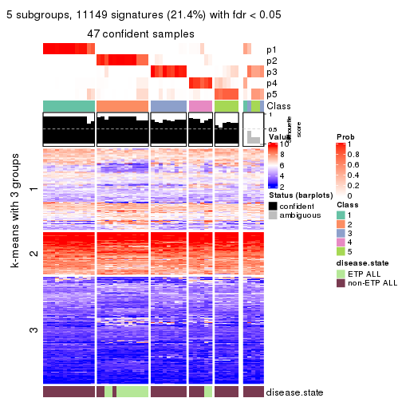
get_signatures(res, k = 6, scale_rows = FALSE)

Compare the overlap of signatures from different k:
compare_signatures(res)
get_signature() returns a data frame invisibly. TO get the list of signatures, the function
call should be assigned to a variable explicitly. In following code, if plot argument is set
to FALSE, no heatmap is plotted while only the differential analysis is performed.
# code only for demonstration
tb = get_signature(res, k = ..., plot = FALSE)
An example of the output of tb is:
#> which_row fdr mean_1 mean_2 scaled_mean_1 scaled_mean_2 km
#> 1 38 0.042760348 8.373488 9.131774 -0.5533452 0.5164555 1
#> 2 40 0.018707592 7.106213 8.469186 -0.6173731 0.5762149 1
#> 3 55 0.019134737 10.221463 11.207825 -0.6159697 0.5749050 1
#> 4 59 0.006059896 5.921854 7.869574 -0.6899429 0.6439467 1
#> 5 60 0.018055526 8.928898 10.211722 -0.6204761 0.5791110 1
#> 6 98 0.009384629 15.714769 14.887706 0.6635654 -0.6193277 2
...
The columns in tb are:
which_row: row indices corresponding to the input matrix.fdr: FDR for the differential test. mean_x: The mean value in group x.scaled_mean_x: The mean value in group x after rows are scaled.km: Row groups if k-means clustering is applied to rows.UMAP plot which shows how samples are separated.
dimension_reduction(res, k = 2, method = "UMAP")

dimension_reduction(res, k = 3, method = "UMAP")
dimension_reduction(res, k = 4, method = "UMAP")
dimension_reduction(res, k = 5, method = "UMAP")
dimension_reduction(res, k = 6, method = "UMAP")
Following heatmap shows how subgroups are split when increasing k:
collect_classes(res)
Test correlation between subgroups and known annotations. If the known annotation is numeric, one-way ANOVA test is applied, and if the known annotation is discrete, chi-squared contingency table test is applied.
test_to_known_factors(res)
#> n disease.state(p) k
#> CV:NMF 52 1.06e-07 2
#> CV:NMF 51 6.64e-09 3
#> CV:NMF 48 1.39e-06 4
#> CV:NMF 47 1.34e-05 5
#> CV:NMF 46 1.21e-05 6
If matrix rows can be associated to genes, consider to use functional_enrichment(res,
...) to perform function enrichment for the signature genes. See this vignette for more detailed explanations.
The object with results only for a single top-value method and a single partition method can be extracted as:
res = res_list["MAD", "hclust"]
# you can also extract it by
# res = res_list["MAD:hclust"]
A summary of res and all the functions that can be applied to it:
res
#> A 'ConsensusPartition' object with k = 2, 3, 4, 5, 6.
#> On a matrix with 51979 rows and 52 columns.
#> Top rows (1000, 2000, 3000, 4000, 5000) are extracted by 'MAD' method.
#> Subgroups are detected by 'hclust' method.
#> Performed in total 1250 partitions by row resampling.
#> Best k for subgroups seems to be 2.
#>
#> Following methods can be applied to this 'ConsensusPartition' object:
#> [1] "cola_report" "collect_classes" "collect_plots"
#> [4] "collect_stats" "colnames" "compare_signatures"
#> [7] "consensus_heatmap" "dimension_reduction" "functional_enrichment"
#> [10] "get_anno_col" "get_anno" "get_classes"
#> [13] "get_consensus" "get_matrix" "get_membership"
#> [16] "get_param" "get_signatures" "get_stats"
#> [19] "is_best_k" "is_stable_k" "membership_heatmap"
#> [22] "ncol" "nrow" "plot_ecdf"
#> [25] "rownames" "select_partition_number" "show"
#> [28] "suggest_best_k" "test_to_known_factors"
collect_plots() function collects all the plots made from res for all k (number of partitions)
into one single page to provide an easy and fast comparison between different k.
collect_plots(res)
The plots are:
k and the heatmap of
predicted classes for each k.k.k.k.All the plots in panels can be made by individual functions and they are plotted later in this section.
select_partition_number() produces several plots showing different
statistics for choosing “optimized” k. There are following statistics:
k;k, the area increased is defined as \(A_k - A_{k-1}\).The detailed explanations of these statistics can be found in the cola vignette.
Generally speaking, lower PAC score, higher mean silhouette score or higher
concordance corresponds to better partition. Rand index and Jaccard index
measure how similar the current partition is compared to partition with k-1.
If they are too similar, we won't accept k is better than k-1.
select_partition_number(res)
The numeric values for all these statistics can be obtained by get_stats().
get_stats(res)
#> k 1-PAC mean_silhouette concordance area_increased Rand Jaccard
#> 2 2 0.991 0.959 0.980 0.4123 0.599 0.599
#> 3 3 0.531 0.614 0.753 0.3512 0.776 0.626
#> 4 4 0.587 0.686 0.833 0.1917 0.837 0.616
#> 5 5 0.669 0.601 0.785 0.1200 0.961 0.874
#> 6 6 0.665 0.602 0.733 0.0497 0.897 0.647
suggest_best_k() suggests the best \(k\) based on these statistics. The rules are as follows:
suggest_best_k(res)
#> [1] 2
Following shows the table of the partitions (You need to click the show/hide
code output link to see it). The membership matrix (columns with name p*)
is inferred by
clue::cl_consensus()
function with the SE method. Basically the value in the membership matrix
represents the probability to belong to a certain group. The finall class
label for an item is determined with the group with highest probability it
belongs to.
In get_classes() function, the entropy is calculated from the membership
matrix and the silhouette score is calculated from the consensus matrix.
cbind(get_classes(res, k = 2), get_membership(res, k = 2))
#> class entropy silhouette p1 p2
#> GSM710838 2 0.0000 0.989 0.000 1.000
#> GSM710840 2 0.0000 0.989 0.000 1.000
#> GSM710842 2 0.0000 0.989 0.000 1.000
#> GSM710844 2 0.0000 0.989 0.000 1.000
#> GSM710847 2 0.0000 0.989 0.000 1.000
#> GSM710848 2 0.0000 0.989 0.000 1.000
#> GSM710850 2 0.0000 0.989 0.000 1.000
#> GSM710931 2 0.0000 0.989 0.000 1.000
#> GSM710932 2 0.0000 0.989 0.000 1.000
#> GSM710933 2 0.0000 0.989 0.000 1.000
#> GSM710934 2 0.0000 0.989 0.000 1.000
#> GSM710935 2 0.0000 0.989 0.000 1.000
#> GSM710851 1 0.0000 0.975 1.000 0.000
#> GSM710852 1 0.2603 0.945 0.956 0.044
#> GSM710854 2 0.3584 0.929 0.068 0.932
#> GSM710856 1 0.0000 0.975 1.000 0.000
#> GSM710857 1 0.0000 0.975 1.000 0.000
#> GSM710859 1 0.0000 0.975 1.000 0.000
#> GSM710861 1 0.0000 0.975 1.000 0.000
#> GSM710864 1 0.2603 0.945 0.956 0.044
#> GSM710866 1 0.0000 0.975 1.000 0.000
#> GSM710868 1 0.2603 0.945 0.956 0.044
#> GSM710870 1 0.0000 0.975 1.000 0.000
#> GSM710872 1 0.0000 0.975 1.000 0.000
#> GSM710874 1 0.0000 0.975 1.000 0.000
#> GSM710876 1 0.0000 0.975 1.000 0.000
#> GSM710878 1 0.0000 0.975 1.000 0.000
#> GSM710880 1 0.2603 0.945 0.956 0.044
#> GSM710882 1 0.0000 0.975 1.000 0.000
#> GSM710884 1 0.0000 0.975 1.000 0.000
#> GSM710887 1 0.0376 0.972 0.996 0.004
#> GSM710889 1 0.0000 0.975 1.000 0.000
#> GSM710891 1 0.7950 0.712 0.760 0.240
#> GSM710893 1 0.2603 0.945 0.956 0.044
#> GSM710895 1 0.0000 0.975 1.000 0.000
#> GSM710897 1 0.0000 0.975 1.000 0.000
#> GSM710899 1 0.7950 0.712 0.760 0.240
#> GSM710901 1 0.0000 0.975 1.000 0.000
#> GSM710903 1 0.0000 0.975 1.000 0.000
#> GSM710904 1 0.0000 0.975 1.000 0.000
#> GSM710907 1 0.0000 0.975 1.000 0.000
#> GSM710909 1 0.0000 0.975 1.000 0.000
#> GSM710910 1 0.0000 0.975 1.000 0.000
#> GSM710912 2 0.3584 0.929 0.068 0.932
#> GSM710914 1 0.0000 0.975 1.000 0.000
#> GSM710917 1 0.7453 0.753 0.788 0.212
#> GSM710919 1 0.0000 0.975 1.000 0.000
#> GSM710921 1 0.0000 0.975 1.000 0.000
#> GSM710923 1 0.0000 0.975 1.000 0.000
#> GSM710925 1 0.0000 0.975 1.000 0.000
#> GSM710927 1 0.0000 0.975 1.000 0.000
#> GSM710929 1 0.0000 0.975 1.000 0.000
cbind(get_classes(res, k = 3), get_membership(res, k = 3))
#> class entropy silhouette p1 p2 p3
#> GSM710838 2 0.0892 0.9419 0.020 0.980 0.000
#> GSM710840 2 0.0000 0.9479 0.000 1.000 0.000
#> GSM710842 2 0.0237 0.9466 0.004 0.996 0.000
#> GSM710844 2 0.0000 0.9479 0.000 1.000 0.000
#> GSM710847 2 0.0000 0.9479 0.000 1.000 0.000
#> GSM710848 2 0.6079 0.7441 0.388 0.612 0.000
#> GSM710850 2 0.0000 0.9479 0.000 1.000 0.000
#> GSM710931 2 0.0000 0.9479 0.000 1.000 0.000
#> GSM710932 2 0.0000 0.9479 0.000 1.000 0.000
#> GSM710933 2 0.0000 0.9479 0.000 1.000 0.000
#> GSM710934 2 0.6045 0.7476 0.380 0.620 0.000
#> GSM710935 2 0.0000 0.9479 0.000 1.000 0.000
#> GSM710851 3 0.5363 0.4747 0.276 0.000 0.724
#> GSM710852 1 0.5859 0.8649 0.656 0.000 0.344
#> GSM710854 2 0.2680 0.8959 0.008 0.924 0.068
#> GSM710856 3 0.5138 0.4996 0.252 0.000 0.748
#> GSM710857 3 0.5882 0.2497 0.348 0.000 0.652
#> GSM710859 3 0.0000 0.5078 0.000 0.000 1.000
#> GSM710861 1 0.6126 0.8817 0.600 0.000 0.400
#> GSM710864 1 0.5859 0.8649 0.656 0.000 0.344
#> GSM710866 1 0.6126 0.8817 0.600 0.000 0.400
#> GSM710868 1 0.5859 0.8649 0.656 0.000 0.344
#> GSM710870 3 0.5098 0.5028 0.248 0.000 0.752
#> GSM710872 3 0.0000 0.5078 0.000 0.000 1.000
#> GSM710874 3 0.5363 0.4747 0.276 0.000 0.724
#> GSM710876 3 0.6079 0.0513 0.388 0.000 0.612
#> GSM710878 1 0.6126 0.8817 0.600 0.000 0.400
#> GSM710880 1 0.5859 0.8649 0.656 0.000 0.344
#> GSM710882 3 0.6180 -0.1390 0.416 0.000 0.584
#> GSM710884 3 0.5465 0.4429 0.288 0.000 0.712
#> GSM710887 1 0.6305 0.6020 0.516 0.000 0.484
#> GSM710889 3 0.5098 0.5028 0.248 0.000 0.752
#> GSM710891 3 0.5335 0.2716 0.008 0.232 0.760
#> GSM710893 1 0.6154 0.7573 0.592 0.000 0.408
#> GSM710895 3 0.3752 0.5239 0.144 0.000 0.856
#> GSM710897 3 0.5560 0.4125 0.300 0.000 0.700
#> GSM710899 3 0.5335 0.2716 0.008 0.232 0.760
#> GSM710901 3 0.6008 0.1318 0.372 0.000 0.628
#> GSM710903 3 0.5363 0.4747 0.276 0.000 0.724
#> GSM710904 3 0.5465 0.4429 0.288 0.000 0.712
#> GSM710907 1 0.6126 0.8817 0.600 0.000 0.400
#> GSM710909 3 0.6008 0.1318 0.372 0.000 0.628
#> GSM710910 3 0.0592 0.5022 0.012 0.000 0.988
#> GSM710912 2 0.2680 0.8959 0.008 0.924 0.068
#> GSM710914 3 0.5363 0.4747 0.276 0.000 0.724
#> GSM710917 3 0.4883 0.2995 0.004 0.208 0.788
#> GSM710919 3 0.6180 -0.1390 0.416 0.000 0.584
#> GSM710921 3 0.0000 0.5078 0.000 0.000 1.000
#> GSM710923 1 0.6126 0.8817 0.600 0.000 0.400
#> GSM710925 3 0.3752 0.5239 0.144 0.000 0.856
#> GSM710927 3 0.0000 0.5078 0.000 0.000 1.000
#> GSM710929 3 0.0000 0.5078 0.000 0.000 1.000
cbind(get_classes(res, k = 4), get_membership(res, k = 4))
#> class entropy silhouette p1 p2 p3 p4
#> GSM710838 2 0.1022 0.895 0.000 0.968 0.000 0.032
#> GSM710840 2 0.0000 0.911 0.000 1.000 0.000 0.000
#> GSM710842 2 0.0657 0.907 0.004 0.984 0.000 0.012
#> GSM710844 2 0.0921 0.901 0.000 0.972 0.000 0.028
#> GSM710847 2 0.0000 0.911 0.000 1.000 0.000 0.000
#> GSM710848 4 0.3895 0.980 0.036 0.132 0.000 0.832
#> GSM710850 2 0.0921 0.901 0.000 0.972 0.000 0.028
#> GSM710931 2 0.0000 0.911 0.000 1.000 0.000 0.000
#> GSM710932 2 0.0000 0.911 0.000 1.000 0.000 0.000
#> GSM710933 2 0.0921 0.901 0.000 0.972 0.000 0.028
#> GSM710934 4 0.4100 0.980 0.036 0.148 0.000 0.816
#> GSM710935 2 0.3219 0.795 0.000 0.836 0.000 0.164
#> GSM710851 3 0.4730 0.531 0.364 0.000 0.636 0.000
#> GSM710852 1 0.0469 0.783 0.988 0.000 0.000 0.012
#> GSM710854 2 0.5050 0.719 0.000 0.756 0.068 0.176
#> GSM710856 3 0.4679 0.532 0.352 0.000 0.648 0.000
#> GSM710857 1 0.4746 0.444 0.632 0.000 0.368 0.000
#> GSM710859 3 0.0336 0.661 0.008 0.000 0.992 0.000
#> GSM710861 1 0.1302 0.808 0.956 0.000 0.044 0.000
#> GSM710864 1 0.0469 0.783 0.988 0.000 0.000 0.012
#> GSM710866 1 0.1302 0.808 0.956 0.000 0.044 0.000
#> GSM710868 1 0.0469 0.783 0.988 0.000 0.000 0.012
#> GSM710870 3 0.4605 0.547 0.336 0.000 0.664 0.000
#> GSM710872 3 0.0469 0.661 0.012 0.000 0.988 0.000
#> GSM710874 3 0.4730 0.531 0.364 0.000 0.636 0.000
#> GSM710876 1 0.4331 0.626 0.712 0.000 0.288 0.000
#> GSM710878 1 0.1302 0.808 0.956 0.000 0.044 0.000
#> GSM710880 1 0.0469 0.783 0.988 0.000 0.000 0.012
#> GSM710882 1 0.3942 0.697 0.764 0.000 0.236 0.000
#> GSM710884 3 0.4925 0.378 0.428 0.000 0.572 0.000
#> GSM710887 1 0.2760 0.775 0.872 0.000 0.128 0.000
#> GSM710889 3 0.4605 0.547 0.336 0.000 0.664 0.000
#> GSM710891 3 0.5007 0.395 0.000 0.068 0.760 0.172
#> GSM710893 1 0.4284 0.498 0.764 0.000 0.224 0.012
#> GSM710895 3 0.3024 0.652 0.148 0.000 0.852 0.000
#> GSM710897 3 0.4961 0.314 0.448 0.000 0.552 0.000
#> GSM710899 3 0.5007 0.395 0.000 0.068 0.760 0.172
#> GSM710901 1 0.4522 0.579 0.680 0.000 0.320 0.000
#> GSM710903 3 0.4730 0.531 0.364 0.000 0.636 0.000
#> GSM710904 3 0.4925 0.378 0.428 0.000 0.572 0.000
#> GSM710907 1 0.1302 0.808 0.956 0.000 0.044 0.000
#> GSM710909 1 0.4522 0.579 0.680 0.000 0.320 0.000
#> GSM710910 3 0.0469 0.659 0.012 0.000 0.988 0.000
#> GSM710912 2 0.5050 0.719 0.000 0.756 0.068 0.176
#> GSM710914 3 0.4730 0.531 0.364 0.000 0.636 0.000
#> GSM710917 3 0.4114 0.396 0.004 0.200 0.788 0.008
#> GSM710919 1 0.3942 0.697 0.764 0.000 0.236 0.000
#> GSM710921 3 0.0188 0.660 0.004 0.000 0.996 0.000
#> GSM710923 1 0.1302 0.808 0.956 0.000 0.044 0.000
#> GSM710925 3 0.3024 0.652 0.148 0.000 0.852 0.000
#> GSM710927 3 0.0188 0.660 0.004 0.000 0.996 0.000
#> GSM710929 3 0.0188 0.660 0.004 0.000 0.996 0.000
cbind(get_classes(res, k = 5), get_membership(res, k = 5))
#> class entropy silhouette p1 p2 p3 p4 p5
#> GSM710838 2 0.1121 0.8946 0.000 0.956 0.000 0.044 0.000
#> GSM710840 2 0.0000 0.9124 0.000 1.000 0.000 0.000 0.000
#> GSM710842 2 0.0865 0.9054 0.000 0.972 0.000 0.024 0.004
#> GSM710844 2 0.0992 0.9034 0.000 0.968 0.000 0.024 0.008
#> GSM710847 2 0.0000 0.9124 0.000 1.000 0.000 0.000 0.000
#> GSM710848 4 0.2067 0.9884 0.028 0.032 0.000 0.928 0.012
#> GSM710850 2 0.0992 0.9034 0.000 0.968 0.000 0.024 0.008
#> GSM710931 2 0.0000 0.9124 0.000 1.000 0.000 0.000 0.000
#> GSM710932 2 0.0000 0.9124 0.000 1.000 0.000 0.000 0.000
#> GSM710933 2 0.0992 0.9034 0.000 0.968 0.000 0.024 0.008
#> GSM710934 4 0.1750 0.9884 0.028 0.036 0.000 0.936 0.000
#> GSM710935 2 0.3641 0.8007 0.000 0.820 0.000 0.060 0.120
#> GSM710851 3 0.5636 0.3381 0.084 0.000 0.544 0.000 0.372
#> GSM710852 1 0.0404 0.7630 0.988 0.000 0.000 0.012 0.000
#> GSM710854 2 0.5254 0.7243 0.000 0.736 0.064 0.060 0.140
#> GSM710856 3 0.5256 0.2650 0.048 0.000 0.532 0.000 0.420
#> GSM710857 5 0.5449 0.7215 0.108 0.000 0.256 0.000 0.636
#> GSM710859 3 0.2074 0.4740 0.000 0.000 0.896 0.000 0.104
#> GSM710861 1 0.1331 0.7902 0.952 0.000 0.008 0.000 0.040
#> GSM710864 1 0.0404 0.7630 0.988 0.000 0.000 0.012 0.000
#> GSM710866 1 0.1331 0.7902 0.952 0.000 0.008 0.000 0.040
#> GSM710868 1 0.0404 0.7630 0.988 0.000 0.000 0.012 0.000
#> GSM710870 3 0.4974 0.3075 0.032 0.000 0.560 0.000 0.408
#> GSM710872 3 0.0880 0.5033 0.000 0.000 0.968 0.000 0.032
#> GSM710874 3 0.5636 0.3381 0.084 0.000 0.544 0.000 0.372
#> GSM710876 5 0.4325 0.8401 0.064 0.000 0.180 0.000 0.756
#> GSM710878 1 0.1331 0.7902 0.952 0.000 0.008 0.000 0.040
#> GSM710880 1 0.4016 0.5948 0.716 0.000 0.000 0.012 0.272
#> GSM710882 1 0.5905 0.1613 0.572 0.000 0.136 0.000 0.292
#> GSM710884 3 0.6203 0.1072 0.140 0.000 0.464 0.000 0.396
#> GSM710887 1 0.5274 0.4437 0.600 0.000 0.064 0.000 0.336
#> GSM710889 3 0.4974 0.3075 0.032 0.000 0.560 0.000 0.408
#> GSM710891 3 0.5584 0.3343 0.000 0.044 0.676 0.056 0.224
#> GSM710893 1 0.4841 0.4763 0.716 0.000 0.220 0.012 0.052
#> GSM710895 3 0.3944 0.4828 0.032 0.000 0.768 0.000 0.200
#> GSM710897 3 0.6363 0.0323 0.164 0.000 0.444 0.000 0.392
#> GSM710899 3 0.5584 0.3343 0.000 0.044 0.676 0.056 0.224
#> GSM710901 5 0.3687 0.8686 0.028 0.000 0.180 0.000 0.792
#> GSM710903 3 0.5636 0.3381 0.084 0.000 0.544 0.000 0.372
#> GSM710904 3 0.6203 0.1072 0.140 0.000 0.464 0.000 0.396
#> GSM710907 1 0.1764 0.7886 0.928 0.000 0.008 0.000 0.064
#> GSM710909 5 0.3687 0.8686 0.028 0.000 0.180 0.000 0.792
#> GSM710910 3 0.2006 0.5046 0.012 0.000 0.916 0.000 0.072
#> GSM710912 2 0.5254 0.7243 0.000 0.736 0.064 0.060 0.140
#> GSM710914 3 0.5636 0.3381 0.084 0.000 0.544 0.000 0.372
#> GSM710917 3 0.4711 0.3709 0.000 0.188 0.744 0.020 0.048
#> GSM710919 1 0.5905 0.1613 0.572 0.000 0.136 0.000 0.292
#> GSM710921 3 0.0880 0.5143 0.000 0.000 0.968 0.000 0.032
#> GSM710923 1 0.1764 0.7886 0.928 0.000 0.008 0.000 0.064
#> GSM710925 3 0.3944 0.4828 0.032 0.000 0.768 0.000 0.200
#> GSM710927 3 0.1270 0.5107 0.000 0.000 0.948 0.000 0.052
#> GSM710929 3 0.0963 0.5148 0.000 0.000 0.964 0.000 0.036
cbind(get_classes(res, k = 6), get_membership(res, k = 6))
#> class entropy silhouette p1 p2 p3 p4 p5 p6
#> GSM710838 2 0.1007 0.797 0.000 0.956 0.000 0.000 0.000 0.044
#> GSM710840 2 0.0000 0.813 0.000 1.000 0.000 0.000 0.000 0.000
#> GSM710842 2 0.4576 0.743 0.000 0.744 0.120 0.104 0.000 0.032
#> GSM710844 2 0.1010 0.805 0.000 0.960 0.000 0.036 0.000 0.004
#> GSM710847 2 0.0000 0.813 0.000 1.000 0.000 0.000 0.000 0.000
#> GSM710848 6 0.0725 0.981 0.000 0.000 0.012 0.012 0.000 0.976
#> GSM710850 2 0.1010 0.805 0.000 0.960 0.000 0.036 0.000 0.004
#> GSM710931 2 0.3740 0.762 0.000 0.784 0.120 0.096 0.000 0.000
#> GSM710932 2 0.0713 0.813 0.000 0.972 0.028 0.000 0.000 0.000
#> GSM710933 2 0.1010 0.805 0.000 0.960 0.000 0.036 0.000 0.004
#> GSM710934 6 0.0146 0.981 0.000 0.004 0.000 0.000 0.000 0.996
#> GSM710935 2 0.5458 0.644 0.000 0.588 0.172 0.236 0.000 0.004
#> GSM710851 5 0.1952 0.652 0.052 0.000 0.016 0.012 0.920 0.000
#> GSM710852 1 0.0993 0.763 0.964 0.000 0.000 0.012 0.000 0.024
#> GSM710854 2 0.5899 0.568 0.000 0.504 0.256 0.236 0.000 0.004
#> GSM710856 5 0.1285 0.632 0.052 0.000 0.004 0.000 0.944 0.000
#> GSM710857 5 0.5010 -0.349 0.108 0.000 0.004 0.252 0.636 0.000
#> GSM710859 3 0.5675 0.596 0.016 0.000 0.576 0.148 0.260 0.000
#> GSM710861 1 0.0632 0.788 0.976 0.000 0.000 0.000 0.024 0.000
#> GSM710864 1 0.0993 0.763 0.964 0.000 0.000 0.012 0.000 0.024
#> GSM710866 1 0.0632 0.788 0.976 0.000 0.000 0.000 0.024 0.000
#> GSM710868 1 0.0993 0.763 0.964 0.000 0.000 0.012 0.000 0.024
#> GSM710870 5 0.0458 0.645 0.016 0.000 0.000 0.000 0.984 0.000
#> GSM710872 3 0.5681 0.617 0.016 0.000 0.492 0.104 0.388 0.000
#> GSM710874 5 0.1952 0.652 0.052 0.000 0.016 0.012 0.920 0.000
#> GSM710876 5 0.5566 -0.790 0.056 0.000 0.036 0.436 0.472 0.000
#> GSM710878 1 0.0632 0.788 0.976 0.000 0.000 0.000 0.024 0.000
#> GSM710880 1 0.4733 0.553 0.668 0.000 0.000 0.264 0.044 0.024
#> GSM710882 1 0.4397 0.268 0.596 0.000 0.004 0.024 0.376 0.000
#> GSM710884 5 0.2442 0.572 0.144 0.000 0.004 0.000 0.852 0.000
#> GSM710887 1 0.5330 0.410 0.600 0.000 0.004 0.252 0.144 0.000
#> GSM710889 5 0.0458 0.645 0.016 0.000 0.000 0.000 0.984 0.000
#> GSM710891 3 0.5920 0.362 0.000 0.028 0.520 0.332 0.120 0.000
#> GSM710893 1 0.4274 0.478 0.676 0.000 0.000 0.012 0.288 0.024
#> GSM710895 5 0.4253 0.125 0.020 0.000 0.300 0.012 0.668 0.000
#> GSM710897 5 0.2703 0.531 0.172 0.000 0.004 0.000 0.824 0.000
#> GSM710899 3 0.5920 0.362 0.000 0.028 0.520 0.332 0.120 0.000
#> GSM710901 4 0.4872 1.000 0.020 0.000 0.024 0.492 0.464 0.000
#> GSM710903 5 0.1952 0.652 0.052 0.000 0.016 0.012 0.920 0.000
#> GSM710904 5 0.2442 0.572 0.144 0.000 0.004 0.000 0.852 0.000
#> GSM710907 1 0.1261 0.786 0.952 0.000 0.000 0.024 0.024 0.000
#> GSM710909 4 0.4872 1.000 0.020 0.000 0.024 0.492 0.464 0.000
#> GSM710910 3 0.5050 0.570 0.000 0.000 0.508 0.076 0.416 0.000
#> GSM710912 2 0.5899 0.568 0.000 0.504 0.256 0.236 0.000 0.004
#> GSM710914 5 0.1952 0.652 0.052 0.000 0.016 0.012 0.920 0.000
#> GSM710917 3 0.7425 0.551 0.000 0.176 0.400 0.068 0.324 0.032
#> GSM710919 1 0.4397 0.268 0.596 0.000 0.004 0.024 0.376 0.000
#> GSM710921 3 0.3823 0.606 0.000 0.000 0.564 0.000 0.436 0.000
#> GSM710923 1 0.1261 0.786 0.952 0.000 0.000 0.024 0.024 0.000
#> GSM710925 5 0.4253 0.125 0.020 0.000 0.300 0.012 0.668 0.000
#> GSM710927 3 0.4408 0.617 0.004 0.000 0.560 0.020 0.416 0.000
#> GSM710929 3 0.3838 0.594 0.000 0.000 0.552 0.000 0.448 0.000
Heatmaps for the consensus matrix. It visualizes the probability of two samples to be in a same group.
consensus_heatmap(res, k = 2)
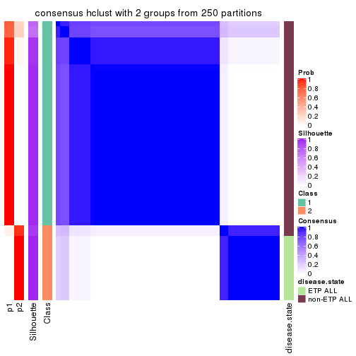
consensus_heatmap(res, k = 3)
consensus_heatmap(res, k = 4)
consensus_heatmap(res, k = 5)
consensus_heatmap(res, k = 6)
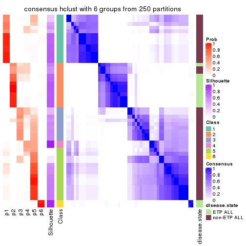
Heatmaps for the membership of samples in all partitions to see how consistent they are:
membership_heatmap(res, k = 2)
membership_heatmap(res, k = 3)
membership_heatmap(res, k = 4)
membership_heatmap(res, k = 5)
membership_heatmap(res, k = 6)
As soon as we have had the classes for columns, we can look for signatures which are significantly different between classes which can be candidate marks for certain classes. Following are the heatmaps for signatures.
Signature heatmaps where rows are scaled:
get_signatures(res, k = 2)
get_signatures(res, k = 3)
get_signatures(res, k = 4)
get_signatures(res, k = 5)
get_signatures(res, k = 6)
Signature heatmaps where rows are not scaled:
get_signatures(res, k = 2, scale_rows = FALSE)
get_signatures(res, k = 3, scale_rows = FALSE)
get_signatures(res, k = 4, scale_rows = FALSE)
get_signatures(res, k = 5, scale_rows = FALSE)
get_signatures(res, k = 6, scale_rows = FALSE)
Compare the overlap of signatures from different k:
compare_signatures(res)
get_signature() returns a data frame invisibly. TO get the list of signatures, the function
call should be assigned to a variable explicitly. In following code, if plot argument is set
to FALSE, no heatmap is plotted while only the differential analysis is performed.
# code only for demonstration
tb = get_signature(res, k = ..., plot = FALSE)
An example of the output of tb is:
#> which_row fdr mean_1 mean_2 scaled_mean_1 scaled_mean_2 km
#> 1 38 0.042760348 8.373488 9.131774 -0.5533452 0.5164555 1
#> 2 40 0.018707592 7.106213 8.469186 -0.6173731 0.5762149 1
#> 3 55 0.019134737 10.221463 11.207825 -0.6159697 0.5749050 1
#> 4 59 0.006059896 5.921854 7.869574 -0.6899429 0.6439467 1
#> 5 60 0.018055526 8.928898 10.211722 -0.6204761 0.5791110 1
#> 6 98 0.009384629 15.714769 14.887706 0.6635654 -0.6193277 2
...
The columns in tb are:
which_row: row indices corresponding to the input matrix.fdr: FDR for the differential test. mean_x: The mean value in group x.scaled_mean_x: The mean value in group x after rows are scaled.km: Row groups if k-means clustering is applied to rows.UMAP plot which shows how samples are separated.
dimension_reduction(res, k = 2, method = "UMAP")
dimension_reduction(res, k = 3, method = "UMAP")
dimension_reduction(res, k = 4, method = "UMAP")
dimension_reduction(res, k = 5, method = "UMAP")
dimension_reduction(res, k = 6, method = "UMAP")
Following heatmap shows how subgroups are split when increasing k:
collect_classes(res)
Test correlation between subgroups and known annotations. If the known annotation is numeric, one-way ANOVA test is applied, and if the known annotation is discrete, chi-squared contingency table test is applied.
test_to_known_factors(res)
#> n disease.state(p) k
#> MAD:hclust 52 8.46e-10 2
#> MAD:hclust 35 1.13e-06 3
#> MAD:hclust 44 9.11e-08 4
#> MAD:hclust 32 5.30e-05 5
#> MAD:hclust 42 2.57e-06 6
If matrix rows can be associated to genes, consider to use functional_enrichment(res,
...) to perform function enrichment for the signature genes. See this vignette for more detailed explanations.
The object with results only for a single top-value method and a single partition method can be extracted as:
res = res_list["MAD", "kmeans"]
# you can also extract it by
# res = res_list["MAD:kmeans"]
A summary of res and all the functions that can be applied to it:
res
#> A 'ConsensusPartition' object with k = 2, 3, 4, 5, 6.
#> On a matrix with 51979 rows and 52 columns.
#> Top rows (1000, 2000, 3000, 4000, 5000) are extracted by 'MAD' method.
#> Subgroups are detected by 'kmeans' method.
#> Performed in total 1250 partitions by row resampling.
#> Best k for subgroups seems to be 2.
#>
#> Following methods can be applied to this 'ConsensusPartition' object:
#> [1] "cola_report" "collect_classes" "collect_plots"
#> [4] "collect_stats" "colnames" "compare_signatures"
#> [7] "consensus_heatmap" "dimension_reduction" "functional_enrichment"
#> [10] "get_anno_col" "get_anno" "get_classes"
#> [13] "get_consensus" "get_matrix" "get_membership"
#> [16] "get_param" "get_signatures" "get_stats"
#> [19] "is_best_k" "is_stable_k" "membership_heatmap"
#> [22] "ncol" "nrow" "plot_ecdf"
#> [25] "rownames" "select_partition_number" "show"
#> [28] "suggest_best_k" "test_to_known_factors"
collect_plots() function collects all the plots made from res for all k (number of partitions)
into one single page to provide an easy and fast comparison between different k.
collect_plots(res)
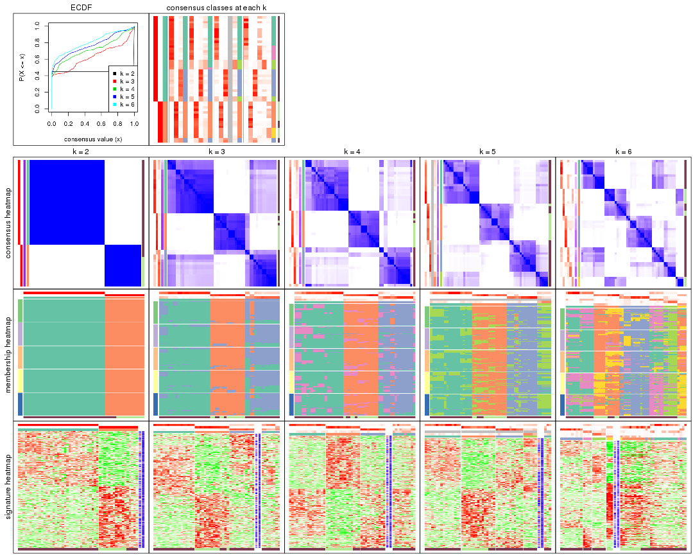
The plots are:
k and the heatmap of
predicted classes for each k.k.k.k.All the plots in panels can be made by individual functions and they are plotted later in this section.
select_partition_number() produces several plots showing different
statistics for choosing “optimized” k. There are following statistics:
k;k, the area increased is defined as \(A_k - A_{k-1}\).The detailed explanations of these statistics can be found in the cola vignette.
Generally speaking, lower PAC score, higher mean silhouette score or higher
concordance corresponds to better partition. Rand index and Jaccard index
measure how similar the current partition is compared to partition with k-1.
If they are too similar, we won't accept k is better than k-1.
select_partition_number(res)
The numeric values for all these statistics can be obtained by get_stats().
get_stats(res)
#> k 1-PAC mean_silhouette concordance area_increased Rand Jaccard
#> 2 2 1.000 1.000 1.000 0.4493 0.551 0.551
#> 3 3 0.639 0.767 0.855 0.4097 0.742 0.548
#> 4 4 0.626 0.566 0.809 0.1421 0.984 0.952
#> 5 5 0.637 0.694 0.758 0.0694 0.931 0.789
#> 6 6 0.690 0.458 0.635 0.0483 0.913 0.670
suggest_best_k() suggests the best \(k\) based on these statistics. The rules are as follows:
suggest_best_k(res)
#> [1] 2
Following shows the table of the partitions (You need to click the show/hide
code output link to see it). The membership matrix (columns with name p*)
is inferred by
clue::cl_consensus()
function with the SE method. Basically the value in the membership matrix
represents the probability to belong to a certain group. The finall class
label for an item is determined with the group with highest probability it
belongs to.
In get_classes() function, the entropy is calculated from the membership
matrix and the silhouette score is calculated from the consensus matrix.
cbind(get_classes(res, k = 2), get_membership(res, k = 2))
#> class entropy silhouette p1 p2
#> GSM710838 2 0 1 0 1
#> GSM710840 2 0 1 0 1
#> GSM710842 2 0 1 0 1
#> GSM710844 2 0 1 0 1
#> GSM710847 2 0 1 0 1
#> GSM710848 2 0 1 0 1
#> GSM710850 2 0 1 0 1
#> GSM710931 2 0 1 0 1
#> GSM710932 2 0 1 0 1
#> GSM710933 2 0 1 0 1
#> GSM710934 2 0 1 0 1
#> GSM710935 2 0 1 0 1
#> GSM710851 1 0 1 1 0
#> GSM710852 1 0 1 1 0
#> GSM710854 2 0 1 0 1
#> GSM710856 1 0 1 1 0
#> GSM710857 1 0 1 1 0
#> GSM710859 1 0 1 1 0
#> GSM710861 1 0 1 1 0
#> GSM710864 1 0 1 1 0
#> GSM710866 1 0 1 1 0
#> GSM710868 1 0 1 1 0
#> GSM710870 1 0 1 1 0
#> GSM710872 1 0 1 1 0
#> GSM710874 1 0 1 1 0
#> GSM710876 1 0 1 1 0
#> GSM710878 1 0 1 1 0
#> GSM710880 1 0 1 1 0
#> GSM710882 1 0 1 1 0
#> GSM710884 1 0 1 1 0
#> GSM710887 1 0 1 1 0
#> GSM710889 1 0 1 1 0
#> GSM710891 2 0 1 0 1
#> GSM710893 1 0 1 1 0
#> GSM710895 1 0 1 1 0
#> GSM710897 1 0 1 1 0
#> GSM710899 2 0 1 0 1
#> GSM710901 1 0 1 1 0
#> GSM710903 1 0 1 1 0
#> GSM710904 1 0 1 1 0
#> GSM710907 1 0 1 1 0
#> GSM710909 1 0 1 1 0
#> GSM710910 1 0 1 1 0
#> GSM710912 2 0 1 0 1
#> GSM710914 1 0 1 1 0
#> GSM710917 2 0 1 0 1
#> GSM710919 1 0 1 1 0
#> GSM710921 1 0 1 1 0
#> GSM710923 1 0 1 1 0
#> GSM710925 1 0 1 1 0
#> GSM710927 1 0 1 1 0
#> GSM710929 1 0 1 1 0
cbind(get_classes(res, k = 3), get_membership(res, k = 3))
#> class entropy silhouette p1 p2 p3
#> GSM710838 2 0.1643 0.9506 0.000 0.956 0.044
#> GSM710840 2 0.1031 0.9554 0.000 0.976 0.024
#> GSM710842 2 0.2165 0.9448 0.000 0.936 0.064
#> GSM710844 2 0.1753 0.9470 0.000 0.952 0.048
#> GSM710847 2 0.0424 0.9556 0.000 0.992 0.008
#> GSM710848 2 0.3686 0.9211 0.000 0.860 0.140
#> GSM710850 2 0.1753 0.9470 0.000 0.952 0.048
#> GSM710931 2 0.0424 0.9556 0.000 0.992 0.008
#> GSM710932 2 0.0892 0.9549 0.000 0.980 0.020
#> GSM710933 2 0.1753 0.9470 0.000 0.952 0.048
#> GSM710934 2 0.2711 0.9288 0.000 0.912 0.088
#> GSM710935 2 0.1529 0.9513 0.000 0.960 0.040
#> GSM710851 1 0.5706 0.3761 0.680 0.000 0.320
#> GSM710852 1 0.0237 0.8465 0.996 0.000 0.004
#> GSM710854 2 0.2878 0.9309 0.000 0.904 0.096
#> GSM710856 1 0.3267 0.8198 0.884 0.000 0.116
#> GSM710857 1 0.3192 0.8382 0.888 0.000 0.112
#> GSM710859 3 0.4931 0.7868 0.232 0.000 0.768
#> GSM710861 1 0.0424 0.8472 0.992 0.000 0.008
#> GSM710864 1 0.2625 0.7948 0.916 0.000 0.084
#> GSM710866 1 0.2066 0.8634 0.940 0.000 0.060
#> GSM710868 1 0.2537 0.7961 0.920 0.000 0.080
#> GSM710870 3 0.6286 0.3424 0.464 0.000 0.536
#> GSM710872 3 0.4931 0.7868 0.232 0.000 0.768
#> GSM710874 1 0.5905 0.2686 0.648 0.000 0.352
#> GSM710876 3 0.5216 0.7549 0.260 0.000 0.740
#> GSM710878 1 0.2066 0.8634 0.940 0.000 0.060
#> GSM710880 1 0.1163 0.8457 0.972 0.000 0.028
#> GSM710882 1 0.1860 0.8641 0.948 0.000 0.052
#> GSM710884 1 0.1964 0.8635 0.944 0.000 0.056
#> GSM710887 1 0.1964 0.8559 0.944 0.000 0.056
#> GSM710889 3 0.6286 0.3424 0.464 0.000 0.536
#> GSM710891 2 0.2878 0.9309 0.000 0.904 0.096
#> GSM710893 1 0.1031 0.8439 0.976 0.000 0.024
#> GSM710895 3 0.4702 0.7836 0.212 0.000 0.788
#> GSM710897 1 0.1964 0.8635 0.944 0.000 0.056
#> GSM710899 3 0.6244 -0.0637 0.000 0.440 0.560
#> GSM710901 3 0.5678 0.6808 0.316 0.000 0.684
#> GSM710903 1 0.5497 0.4379 0.708 0.000 0.292
#> GSM710904 1 0.1964 0.8635 0.944 0.000 0.056
#> GSM710907 1 0.2625 0.8565 0.916 0.000 0.084
#> GSM710909 3 0.5058 0.7680 0.244 0.000 0.756
#> GSM710910 3 0.3941 0.7465 0.156 0.000 0.844
#> GSM710912 2 0.2261 0.9433 0.000 0.932 0.068
#> GSM710914 1 0.5497 0.4379 0.708 0.000 0.292
#> GSM710917 3 0.6267 -0.1258 0.000 0.452 0.548
#> GSM710919 1 0.1964 0.8635 0.944 0.000 0.056
#> GSM710921 3 0.4974 0.7855 0.236 0.000 0.764
#> GSM710923 1 0.2066 0.8628 0.940 0.000 0.060
#> GSM710925 3 0.4887 0.7835 0.228 0.000 0.772
#> GSM710927 3 0.4931 0.7868 0.232 0.000 0.768
#> GSM710929 3 0.4702 0.7836 0.212 0.000 0.788
cbind(get_classes(res, k = 4), get_membership(res, k = 4))
#> class entropy silhouette p1 p2 p3 p4
#> GSM710838 2 0.1557 0.886 0.000 0.944 0.000 0.056
#> GSM710840 2 0.1302 0.893 0.000 0.956 0.000 0.044
#> GSM710842 2 0.3577 0.870 0.000 0.832 0.012 0.156
#> GSM710844 2 0.3271 0.853 0.000 0.856 0.012 0.132
#> GSM710847 2 0.0469 0.892 0.000 0.988 0.000 0.012
#> GSM710848 2 0.4936 0.830 0.000 0.700 0.020 0.280
#> GSM710850 2 0.3271 0.853 0.000 0.856 0.012 0.132
#> GSM710931 2 0.0657 0.892 0.000 0.984 0.004 0.012
#> GSM710932 2 0.0921 0.890 0.000 0.972 0.000 0.028
#> GSM710933 2 0.3271 0.853 0.000 0.856 0.012 0.132
#> GSM710934 2 0.2760 0.865 0.000 0.872 0.000 0.128
#> GSM710935 2 0.3324 0.876 0.000 0.852 0.012 0.136
#> GSM710851 1 0.7646 -0.925 0.408 0.000 0.208 0.384
#> GSM710852 1 0.3306 0.575 0.840 0.000 0.004 0.156
#> GSM710854 2 0.4379 0.855 0.000 0.792 0.036 0.172
#> GSM710856 1 0.4565 0.420 0.796 0.000 0.064 0.140
#> GSM710857 1 0.3810 0.639 0.848 0.000 0.060 0.092
#> GSM710859 3 0.1743 0.752 0.056 0.000 0.940 0.004
#> GSM710861 1 0.3123 0.637 0.844 0.000 0.000 0.156
#> GSM710864 1 0.5138 0.467 0.600 0.000 0.008 0.392
#> GSM710866 1 0.3757 0.641 0.828 0.000 0.020 0.152
#> GSM710868 1 0.4594 0.509 0.712 0.000 0.008 0.280
#> GSM710870 3 0.7479 -0.347 0.324 0.000 0.480 0.196
#> GSM710872 3 0.1743 0.752 0.056 0.000 0.940 0.004
#> GSM710874 4 0.7762 0.000 0.380 0.000 0.236 0.384
#> GSM710876 3 0.4359 0.687 0.084 0.000 0.816 0.100
#> GSM710878 1 0.3757 0.641 0.828 0.000 0.020 0.152
#> GSM710880 1 0.4079 0.596 0.800 0.000 0.020 0.180
#> GSM710882 1 0.0921 0.675 0.972 0.000 0.028 0.000
#> GSM710884 1 0.1209 0.673 0.964 0.000 0.032 0.004
#> GSM710887 1 0.2882 0.662 0.892 0.000 0.024 0.084
#> GSM710889 3 0.7529 -0.391 0.344 0.000 0.460 0.196
#> GSM710891 2 0.4789 0.842 0.000 0.772 0.056 0.172
#> GSM710893 1 0.3280 0.610 0.860 0.000 0.016 0.124
#> GSM710895 3 0.1722 0.751 0.048 0.000 0.944 0.008
#> GSM710897 1 0.1209 0.673 0.964 0.000 0.032 0.004
#> GSM710899 3 0.6284 0.471 0.000 0.164 0.664 0.172
#> GSM710901 3 0.5209 0.624 0.140 0.000 0.756 0.104
#> GSM710903 1 0.7538 -0.878 0.428 0.000 0.188 0.384
#> GSM710904 1 0.1209 0.673 0.964 0.000 0.032 0.004
#> GSM710907 1 0.4423 0.628 0.792 0.000 0.040 0.168
#> GSM710909 3 0.4297 0.689 0.084 0.000 0.820 0.096
#> GSM710910 3 0.1929 0.724 0.024 0.000 0.940 0.036
#> GSM710912 2 0.3910 0.866 0.000 0.820 0.024 0.156
#> GSM710914 1 0.7538 -0.878 0.428 0.000 0.188 0.384
#> GSM710917 3 0.6155 0.482 0.000 0.176 0.676 0.148
#> GSM710919 1 0.1022 0.674 0.968 0.000 0.032 0.000
#> GSM710921 3 0.1557 0.752 0.056 0.000 0.944 0.000
#> GSM710923 1 0.3523 0.650 0.856 0.000 0.032 0.112
#> GSM710925 3 0.4485 0.605 0.052 0.000 0.796 0.152
#> GSM710927 3 0.1557 0.752 0.056 0.000 0.944 0.000
#> GSM710929 3 0.1389 0.751 0.048 0.000 0.952 0.000
cbind(get_classes(res, k = 5), get_membership(res, k = 5))
#> class entropy silhouette p1 p2 p3 p4 p5
#> GSM710838 2 0.4240 0.810 0.000 0.736 0.000 NA 0.036
#> GSM710840 2 0.4010 0.814 0.000 0.760 0.000 NA 0.032
#> GSM710842 2 0.1686 0.787 0.000 0.944 0.008 NA 0.028
#> GSM710844 2 0.4219 0.741 0.000 0.584 0.000 NA 0.000
#> GSM710847 2 0.3630 0.815 0.000 0.780 0.000 NA 0.016
#> GSM710848 2 0.5421 0.693 0.000 0.684 0.008 NA 0.136
#> GSM710850 2 0.4219 0.741 0.000 0.584 0.000 NA 0.000
#> GSM710931 2 0.3586 0.816 0.000 0.792 0.000 NA 0.020
#> GSM710932 2 0.4087 0.813 0.000 0.756 0.000 NA 0.036
#> GSM710933 2 0.4219 0.741 0.000 0.584 0.000 NA 0.000
#> GSM710934 2 0.5426 0.752 0.000 0.608 0.000 NA 0.084
#> GSM710935 2 0.0486 0.795 0.000 0.988 0.004 NA 0.004
#> GSM710851 5 0.5787 0.817 0.240 0.000 0.152 NA 0.608
#> GSM710852 1 0.4946 0.593 0.712 0.000 0.000 NA 0.168
#> GSM710854 2 0.3483 0.733 0.000 0.852 0.028 NA 0.088
#> GSM710856 1 0.4541 0.386 0.752 0.000 0.024 NA 0.192
#> GSM710857 1 0.4003 0.659 0.820 0.000 0.020 NA 0.072
#> GSM710859 3 0.2710 0.759 0.016 0.000 0.896 NA 0.056
#> GSM710861 1 0.5162 0.637 0.692 0.000 0.000 NA 0.160
#> GSM710864 1 0.6753 0.447 0.392 0.000 0.000 NA 0.268
#> GSM710866 1 0.5202 0.642 0.700 0.000 0.004 NA 0.148
#> GSM710868 1 0.5975 0.519 0.588 0.000 0.000 NA 0.188
#> GSM710870 5 0.7574 0.625 0.284 0.000 0.324 NA 0.352
#> GSM710872 3 0.2710 0.759 0.016 0.000 0.896 NA 0.056
#> GSM710874 5 0.5844 0.813 0.208 0.000 0.184 NA 0.608
#> GSM710876 3 0.5400 0.639 0.068 0.000 0.732 NA 0.084
#> GSM710878 1 0.5202 0.642 0.700 0.000 0.004 NA 0.148
#> GSM710880 1 0.5040 0.620 0.724 0.000 0.008 NA 0.132
#> GSM710882 1 0.0162 0.719 0.996 0.000 0.004 NA 0.000
#> GSM710884 1 0.0290 0.719 0.992 0.000 0.008 NA 0.000
#> GSM710887 1 0.4057 0.680 0.804 0.000 0.012 NA 0.056
#> GSM710889 5 0.7578 0.630 0.300 0.000 0.304 NA 0.356
#> GSM710891 2 0.4547 0.686 0.000 0.788 0.056 NA 0.112
#> GSM710893 1 0.4593 0.624 0.748 0.000 0.000 NA 0.124
#> GSM710895 3 0.2672 0.757 0.016 0.000 0.896 NA 0.064
#> GSM710897 1 0.0290 0.719 0.992 0.000 0.008 NA 0.000
#> GSM710899 3 0.6749 0.453 0.000 0.292 0.544 NA 0.116
#> GSM710901 3 0.6025 0.588 0.112 0.000 0.684 NA 0.092
#> GSM710903 5 0.6062 0.812 0.248 0.000 0.148 NA 0.596
#> GSM710904 1 0.0290 0.719 0.992 0.000 0.008 NA 0.000
#> GSM710907 1 0.4955 0.659 0.732 0.000 0.008 NA 0.132
#> GSM710909 3 0.5365 0.636 0.084 0.000 0.736 NA 0.072
#> GSM710910 3 0.1571 0.748 0.000 0.000 0.936 NA 0.060
#> GSM710912 2 0.1740 0.775 0.000 0.932 0.012 NA 0.056
#> GSM710914 5 0.6062 0.812 0.248 0.000 0.148 NA 0.596
#> GSM710917 3 0.5135 0.521 0.000 0.272 0.660 NA 0.064
#> GSM710919 1 0.0290 0.719 0.992 0.000 0.008 NA 0.000
#> GSM710921 3 0.0960 0.768 0.016 0.000 0.972 NA 0.008
#> GSM710923 1 0.4733 0.662 0.752 0.000 0.008 NA 0.116
#> GSM710925 3 0.4701 0.518 0.016 0.000 0.708 NA 0.248
#> GSM710927 3 0.0912 0.768 0.016 0.000 0.972 NA 0.012
#> GSM710929 3 0.0510 0.768 0.016 0.000 0.984 NA 0.000
cbind(get_classes(res, k = 6), get_membership(res, k = 6))
#> class entropy silhouette p1 p2 p3 p4 p5 p6
#> GSM710838 2 0.4325 -0.00145 0.000 0.568 0.000 0.016 0.004 0.412
#> GSM710840 2 0.4057 0.09616 0.000 0.600 0.000 0.012 0.000 0.388
#> GSM710842 2 0.1036 0.44901 0.000 0.964 0.000 0.004 0.008 0.024
#> GSM710844 6 0.5561 0.74569 0.000 0.408 0.000 0.028 0.068 0.496
#> GSM710847 2 0.3659 0.08396 0.000 0.636 0.000 0.000 0.000 0.364
#> GSM710848 2 0.6105 0.12943 0.000 0.556 0.000 0.148 0.044 0.252
#> GSM710850 6 0.5561 0.74569 0.000 0.408 0.000 0.028 0.068 0.496
#> GSM710931 2 0.3820 0.10774 0.000 0.660 0.000 0.004 0.004 0.332
#> GSM710932 2 0.3975 0.09116 0.000 0.600 0.000 0.008 0.000 0.392
#> GSM710933 6 0.5561 0.74569 0.000 0.408 0.000 0.028 0.068 0.496
#> GSM710934 6 0.5881 0.14850 0.000 0.360 0.000 0.116 0.024 0.500
#> GSM710935 2 0.0260 0.45581 0.000 0.992 0.000 0.000 0.000 0.008
#> GSM710851 5 0.4542 0.75809 0.084 0.000 0.028 0.148 0.740 0.000
#> GSM710852 4 0.5725 0.56215 0.372 0.000 0.000 0.500 0.112 0.016
#> GSM710854 2 0.2543 0.42528 0.000 0.900 0.012 0.024 0.024 0.040
#> GSM710856 1 0.6519 -0.06091 0.440 0.000 0.012 0.360 0.164 0.024
#> GSM710857 4 0.5581 0.24507 0.396 0.000 0.016 0.520 0.044 0.024
#> GSM710859 3 0.2421 0.72498 0.000 0.000 0.900 0.028 0.032 0.040
#> GSM710861 1 0.0146 0.48665 0.996 0.000 0.000 0.000 0.004 0.000
#> GSM710864 1 0.5220 -0.21774 0.540 0.000 0.000 0.384 0.016 0.060
#> GSM710866 1 0.0146 0.48665 0.996 0.000 0.000 0.000 0.004 0.000
#> GSM710868 4 0.5393 0.51390 0.260 0.000 0.000 0.624 0.036 0.080
#> GSM710870 5 0.7467 0.50344 0.060 0.000 0.268 0.192 0.436 0.044
#> GSM710872 3 0.2620 0.72432 0.000 0.000 0.888 0.028 0.032 0.052
#> GSM710874 5 0.4472 0.75768 0.076 0.000 0.036 0.136 0.752 0.000
#> GSM710876 3 0.6668 0.52281 0.032 0.000 0.596 0.132 0.120 0.120
#> GSM710878 1 0.0146 0.48665 0.996 0.000 0.000 0.000 0.004 0.000
#> GSM710880 4 0.4758 0.65713 0.284 0.000 0.012 0.660 0.024 0.020
#> GSM710882 1 0.4124 0.31912 0.648 0.000 0.000 0.332 0.008 0.012
#> GSM710884 1 0.4274 0.31757 0.640 0.000 0.004 0.336 0.008 0.012
#> GSM710887 4 0.4144 0.45404 0.408 0.000 0.004 0.580 0.008 0.000
#> GSM710889 5 0.7656 0.50654 0.068 0.000 0.260 0.224 0.404 0.044
#> GSM710891 2 0.4364 0.35103 0.000 0.796 0.064 0.040 0.036 0.064
#> GSM710893 4 0.4797 0.65450 0.324 0.000 0.000 0.620 0.036 0.020
#> GSM710895 3 0.2341 0.72830 0.000 0.000 0.900 0.012 0.056 0.032
#> GSM710897 1 0.4302 0.29833 0.632 0.000 0.004 0.344 0.008 0.012
#> GSM710899 3 0.6721 0.31161 0.000 0.384 0.448 0.044 0.044 0.080
#> GSM710901 3 0.7046 0.49083 0.040 0.000 0.556 0.156 0.128 0.120
#> GSM710903 5 0.4713 0.75195 0.084 0.000 0.028 0.168 0.720 0.000
#> GSM710904 1 0.4274 0.31757 0.640 0.000 0.004 0.336 0.008 0.012
#> GSM710907 1 0.1464 0.47913 0.944 0.000 0.004 0.036 0.016 0.000
#> GSM710909 3 0.6665 0.51316 0.032 0.000 0.596 0.136 0.116 0.120
#> GSM710910 3 0.2182 0.72854 0.000 0.004 0.916 0.032 0.020 0.028
#> GSM710912 2 0.1262 0.44860 0.000 0.956 0.000 0.016 0.020 0.008
#> GSM710914 5 0.4713 0.75195 0.084 0.000 0.028 0.168 0.720 0.000
#> GSM710917 3 0.5820 0.45748 0.000 0.320 0.572 0.040 0.036 0.032
#> GSM710919 1 0.4260 0.32113 0.644 0.000 0.004 0.332 0.008 0.012
#> GSM710921 3 0.1536 0.73539 0.000 0.000 0.944 0.012 0.024 0.020
#> GSM710923 1 0.1364 0.48919 0.944 0.000 0.004 0.048 0.004 0.000
#> GSM710925 3 0.4308 0.55844 0.004 0.000 0.732 0.016 0.208 0.040
#> GSM710927 3 0.0891 0.73599 0.000 0.000 0.968 0.008 0.024 0.000
#> GSM710929 3 0.1148 0.73464 0.000 0.000 0.960 0.016 0.004 0.020
Heatmaps for the consensus matrix. It visualizes the probability of two samples to be in a same group.
consensus_heatmap(res, k = 2)
consensus_heatmap(res, k = 3)
consensus_heatmap(res, k = 4)
consensus_heatmap(res, k = 5)
consensus_heatmap(res, k = 6)
Heatmaps for the membership of samples in all partitions to see how consistent they are:
membership_heatmap(res, k = 2)

membership_heatmap(res, k = 3)
membership_heatmap(res, k = 4)
membership_heatmap(res, k = 5)
membership_heatmap(res, k = 6)
As soon as we have had the classes for columns, we can look for signatures which are significantly different between classes which can be candidate marks for certain classes. Following are the heatmaps for signatures.
Signature heatmaps where rows are scaled:
get_signatures(res, k = 2)

get_signatures(res, k = 3)
get_signatures(res, k = 4)

get_signatures(res, k = 5)
get_signatures(res, k = 6)
Signature heatmaps where rows are not scaled:
get_signatures(res, k = 2, scale_rows = FALSE)

get_signatures(res, k = 3, scale_rows = FALSE)
get_signatures(res, k = 4, scale_rows = FALSE)
get_signatures(res, k = 5, scale_rows = FALSE)
get_signatures(res, k = 6, scale_rows = FALSE)
Compare the overlap of signatures from different k:
compare_signatures(res)
get_signature() returns a data frame invisibly. TO get the list of signatures, the function
call should be assigned to a variable explicitly. In following code, if plot argument is set
to FALSE, no heatmap is plotted while only the differential analysis is performed.
# code only for demonstration
tb = get_signature(res, k = ..., plot = FALSE)
An example of the output of tb is:
#> which_row fdr mean_1 mean_2 scaled_mean_1 scaled_mean_2 km
#> 1 38 0.042760348 8.373488 9.131774 -0.5533452 0.5164555 1
#> 2 40 0.018707592 7.106213 8.469186 -0.6173731 0.5762149 1
#> 3 55 0.019134737 10.221463 11.207825 -0.6159697 0.5749050 1
#> 4 59 0.006059896 5.921854 7.869574 -0.6899429 0.6439467 1
#> 5 60 0.018055526 8.928898 10.211722 -0.6204761 0.5791110 1
#> 6 98 0.009384629 15.714769 14.887706 0.6635654 -0.6193277 2
...
The columns in tb are:
which_row: row indices corresponding to the input matrix.fdr: FDR for the differential test. mean_x: The mean value in group x.scaled_mean_x: The mean value in group x after rows are scaled.km: Row groups if k-means clustering is applied to rows.UMAP plot which shows how samples are separated.
dimension_reduction(res, k = 2, method = "UMAP")
dimension_reduction(res, k = 3, method = "UMAP")
dimension_reduction(res, k = 4, method = "UMAP")
dimension_reduction(res, k = 5, method = "UMAP")
dimension_reduction(res, k = 6, method = "UMAP")
Following heatmap shows how subgroups are split when increasing k:
collect_classes(res)
Test correlation between subgroups and known annotations. If the known annotation is numeric, one-way ANOVA test is applied, and if the known annotation is discrete, chi-squared contingency table test is applied.
test_to_known_factors(res)
#> n disease.state(p) k
#> MAD:kmeans 52 1.06e-07 2
#> MAD:kmeans 44 1.18e-07 3
#> MAD:kmeans 42 2.71e-07 4
#> MAD:kmeans 49 7.41e-08 5
#> MAD:kmeans 23 4.04e-05 6
If matrix rows can be associated to genes, consider to use functional_enrichment(res,
...) to perform function enrichment for the signature genes. See this vignette for more detailed explanations.
The object with results only for a single top-value method and a single partition method can be extracted as:
res = res_list["MAD", "skmeans"]
# you can also extract it by
# res = res_list["MAD:skmeans"]
A summary of res and all the functions that can be applied to it:
res
#> A 'ConsensusPartition' object with k = 2, 3, 4, 5, 6.
#> On a matrix with 51979 rows and 52 columns.
#> Top rows (1000, 2000, 3000, 4000, 5000) are extracted by 'MAD' method.
#> Subgroups are detected by 'skmeans' method.
#> Performed in total 1250 partitions by row resampling.
#> Best k for subgroups seems to be 3.
#>
#> Following methods can be applied to this 'ConsensusPartition' object:
#> [1] "cola_report" "collect_classes" "collect_plots"
#> [4] "collect_stats" "colnames" "compare_signatures"
#> [7] "consensus_heatmap" "dimension_reduction" "functional_enrichment"
#> [10] "get_anno_col" "get_anno" "get_classes"
#> [13] "get_consensus" "get_matrix" "get_membership"
#> [16] "get_param" "get_signatures" "get_stats"
#> [19] "is_best_k" "is_stable_k" "membership_heatmap"
#> [22] "ncol" "nrow" "plot_ecdf"
#> [25] "rownames" "select_partition_number" "show"
#> [28] "suggest_best_k" "test_to_known_factors"
collect_plots() function collects all the plots made from res for all k (number of partitions)
into one single page to provide an easy and fast comparison between different k.
collect_plots(res)
The plots are:
k and the heatmap of
predicted classes for each k.k.k.k.All the plots in panels can be made by individual functions and they are plotted later in this section.
select_partition_number() produces several plots showing different
statistics for choosing “optimized” k. There are following statistics:
k;k, the area increased is defined as \(A_k - A_{k-1}\).The detailed explanations of these statistics can be found in the cola vignette.
Generally speaking, lower PAC score, higher mean silhouette score or higher
concordance corresponds to better partition. Rand index and Jaccard index
measure how similar the current partition is compared to partition with k-1.
If they are too similar, we won't accept k is better than k-1.
select_partition_number(res)
The numeric values for all these statistics can be obtained by get_stats().
get_stats(res)
#> k 1-PAC mean_silhouette concordance area_increased Rand Jaccard
#> 2 2 1.000 0.962 0.986 0.4627 0.538 0.538
#> 3 3 1.000 0.964 0.985 0.4660 0.761 0.565
#> 4 4 0.793 0.697 0.810 0.0982 0.877 0.645
#> 5 5 0.798 0.772 0.856 0.0580 0.904 0.658
#> 6 6 0.746 0.594 0.767 0.0392 0.973 0.877
suggest_best_k() suggests the best \(k\) based on these statistics. The rules are as follows:
suggest_best_k(res)
#> [1] 3
#> attr(,"optional")
#> [1] 2
There is also optional best \(k\) = 2 that is worth to check.
Following shows the table of the partitions (You need to click the show/hide
code output link to see it). The membership matrix (columns with name p*)
is inferred by
clue::cl_consensus()
function with the SE method. Basically the value in the membership matrix
represents the probability to belong to a certain group. The finall class
label for an item is determined with the group with highest probability it
belongs to.
In get_classes() function, the entropy is calculated from the membership
matrix and the silhouette score is calculated from the consensus matrix.
cbind(get_classes(res, k = 2), get_membership(res, k = 2))
#> class entropy silhouette p1 p2
#> GSM710838 2 0.000 0.979 0.000 1.000
#> GSM710840 2 0.000 0.979 0.000 1.000
#> GSM710842 2 0.000 0.979 0.000 1.000
#> GSM710844 2 0.000 0.979 0.000 1.000
#> GSM710847 2 0.000 0.979 0.000 1.000
#> GSM710848 2 0.000 0.979 0.000 1.000
#> GSM710850 2 0.000 0.979 0.000 1.000
#> GSM710931 2 0.000 0.979 0.000 1.000
#> GSM710932 2 0.000 0.979 0.000 1.000
#> GSM710933 2 0.000 0.979 0.000 1.000
#> GSM710934 2 0.000 0.979 0.000 1.000
#> GSM710935 2 0.000 0.979 0.000 1.000
#> GSM710851 1 0.000 0.987 1.000 0.000
#> GSM710852 1 0.000 0.987 1.000 0.000
#> GSM710854 2 0.000 0.979 0.000 1.000
#> GSM710856 1 0.000 0.987 1.000 0.000
#> GSM710857 1 0.000 0.987 1.000 0.000
#> GSM710859 1 0.000 0.987 1.000 0.000
#> GSM710861 1 0.000 0.987 1.000 0.000
#> GSM710864 1 0.971 0.318 0.600 0.400
#> GSM710866 1 0.000 0.987 1.000 0.000
#> GSM710868 1 0.000 0.987 1.000 0.000
#> GSM710870 1 0.000 0.987 1.000 0.000
#> GSM710872 1 0.000 0.987 1.000 0.000
#> GSM710874 1 0.000 0.987 1.000 0.000
#> GSM710876 1 0.000 0.987 1.000 0.000
#> GSM710878 1 0.000 0.987 1.000 0.000
#> GSM710880 1 0.000 0.987 1.000 0.000
#> GSM710882 1 0.000 0.987 1.000 0.000
#> GSM710884 1 0.000 0.987 1.000 0.000
#> GSM710887 1 0.000 0.987 1.000 0.000
#> GSM710889 1 0.000 0.987 1.000 0.000
#> GSM710891 2 0.000 0.979 0.000 1.000
#> GSM710893 1 0.000 0.987 1.000 0.000
#> GSM710895 1 0.000 0.987 1.000 0.000
#> GSM710897 1 0.000 0.987 1.000 0.000
#> GSM710899 2 0.000 0.979 0.000 1.000
#> GSM710901 1 0.000 0.987 1.000 0.000
#> GSM710903 1 0.000 0.987 1.000 0.000
#> GSM710904 1 0.000 0.987 1.000 0.000
#> GSM710907 1 0.000 0.987 1.000 0.000
#> GSM710909 1 0.000 0.987 1.000 0.000
#> GSM710910 2 0.932 0.456 0.348 0.652
#> GSM710912 2 0.000 0.979 0.000 1.000
#> GSM710914 1 0.000 0.987 1.000 0.000
#> GSM710917 2 0.000 0.979 0.000 1.000
#> GSM710919 1 0.000 0.987 1.000 0.000
#> GSM710921 1 0.000 0.987 1.000 0.000
#> GSM710923 1 0.000 0.987 1.000 0.000
#> GSM710925 1 0.000 0.987 1.000 0.000
#> GSM710927 1 0.000 0.987 1.000 0.000
#> GSM710929 1 0.000 0.987 1.000 0.000
cbind(get_classes(res, k = 3), get_membership(res, k = 3))
#> class entropy silhouette p1 p2 p3
#> GSM710838 2 0.0000 1.000 0.000 1.000 0.000
#> GSM710840 2 0.0000 1.000 0.000 1.000 0.000
#> GSM710842 2 0.0000 1.000 0.000 1.000 0.000
#> GSM710844 2 0.0000 1.000 0.000 1.000 0.000
#> GSM710847 2 0.0000 1.000 0.000 1.000 0.000
#> GSM710848 2 0.0000 1.000 0.000 1.000 0.000
#> GSM710850 2 0.0000 1.000 0.000 1.000 0.000
#> GSM710931 2 0.0000 1.000 0.000 1.000 0.000
#> GSM710932 2 0.0000 1.000 0.000 1.000 0.000
#> GSM710933 2 0.0000 1.000 0.000 1.000 0.000
#> GSM710934 2 0.0000 1.000 0.000 1.000 0.000
#> GSM710935 2 0.0000 1.000 0.000 1.000 0.000
#> GSM710851 3 0.2165 0.942 0.064 0.000 0.936
#> GSM710852 1 0.0000 0.971 1.000 0.000 0.000
#> GSM710854 2 0.0000 1.000 0.000 1.000 0.000
#> GSM710856 1 0.1289 0.943 0.968 0.000 0.032
#> GSM710857 1 0.0237 0.968 0.996 0.000 0.004
#> GSM710859 3 0.0000 0.983 0.000 0.000 1.000
#> GSM710861 1 0.0000 0.971 1.000 0.000 0.000
#> GSM710864 1 0.0000 0.971 1.000 0.000 0.000
#> GSM710866 1 0.0000 0.971 1.000 0.000 0.000
#> GSM710868 1 0.0000 0.971 1.000 0.000 0.000
#> GSM710870 3 0.0237 0.982 0.004 0.000 0.996
#> GSM710872 3 0.0000 0.983 0.000 0.000 1.000
#> GSM710874 3 0.0892 0.974 0.020 0.000 0.980
#> GSM710876 3 0.1031 0.970 0.024 0.000 0.976
#> GSM710878 1 0.0000 0.971 1.000 0.000 0.000
#> GSM710880 1 0.0000 0.971 1.000 0.000 0.000
#> GSM710882 1 0.0000 0.971 1.000 0.000 0.000
#> GSM710884 1 0.0000 0.971 1.000 0.000 0.000
#> GSM710887 1 0.0000 0.971 1.000 0.000 0.000
#> GSM710889 3 0.0237 0.982 0.004 0.000 0.996
#> GSM710891 2 0.0000 1.000 0.000 1.000 0.000
#> GSM710893 1 0.0000 0.971 1.000 0.000 0.000
#> GSM710895 3 0.0000 0.983 0.000 0.000 1.000
#> GSM710897 1 0.0000 0.971 1.000 0.000 0.000
#> GSM710899 2 0.0000 1.000 0.000 1.000 0.000
#> GSM710901 1 0.6295 0.107 0.528 0.000 0.472
#> GSM710903 3 0.2165 0.942 0.064 0.000 0.936
#> GSM710904 1 0.0000 0.971 1.000 0.000 0.000
#> GSM710907 1 0.0000 0.971 1.000 0.000 0.000
#> GSM710909 3 0.0237 0.982 0.004 0.000 0.996
#> GSM710910 3 0.0237 0.981 0.000 0.004 0.996
#> GSM710912 2 0.0000 1.000 0.000 1.000 0.000
#> GSM710914 3 0.2165 0.942 0.064 0.000 0.936
#> GSM710917 2 0.0000 1.000 0.000 1.000 0.000
#> GSM710919 1 0.0000 0.971 1.000 0.000 0.000
#> GSM710921 3 0.0000 0.983 0.000 0.000 1.000
#> GSM710923 1 0.0000 0.971 1.000 0.000 0.000
#> GSM710925 3 0.0000 0.983 0.000 0.000 1.000
#> GSM710927 3 0.0000 0.983 0.000 0.000 1.000
#> GSM710929 3 0.0000 0.983 0.000 0.000 1.000
cbind(get_classes(res, k = 4), get_membership(res, k = 4))
#> class entropy silhouette p1 p2 p3 p4
#> GSM710838 2 0.0000 0.9900 0.000 1.000 0.000 0.000
#> GSM710840 2 0.0000 0.9900 0.000 1.000 0.000 0.000
#> GSM710842 2 0.0000 0.9900 0.000 1.000 0.000 0.000
#> GSM710844 2 0.0000 0.9900 0.000 1.000 0.000 0.000
#> GSM710847 2 0.0000 0.9900 0.000 1.000 0.000 0.000
#> GSM710848 2 0.0000 0.9900 0.000 1.000 0.000 0.000
#> GSM710850 2 0.0000 0.9900 0.000 1.000 0.000 0.000
#> GSM710931 2 0.0000 0.9900 0.000 1.000 0.000 0.000
#> GSM710932 2 0.0000 0.9900 0.000 1.000 0.000 0.000
#> GSM710933 2 0.0000 0.9900 0.000 1.000 0.000 0.000
#> GSM710934 2 0.0000 0.9900 0.000 1.000 0.000 0.000
#> GSM710935 2 0.0000 0.9900 0.000 1.000 0.000 0.000
#> GSM710851 4 0.2868 0.5200 0.000 0.000 0.136 0.864
#> GSM710852 4 0.4331 0.2986 0.288 0.000 0.000 0.712
#> GSM710854 2 0.0188 0.9874 0.000 0.996 0.000 0.004
#> GSM710856 4 0.5080 -0.1099 0.420 0.000 0.004 0.576
#> GSM710857 1 0.5252 0.6092 0.644 0.000 0.020 0.336
#> GSM710859 3 0.0921 0.8260 0.000 0.000 0.972 0.028
#> GSM710861 1 0.0469 0.6669 0.988 0.000 0.000 0.012
#> GSM710864 1 0.4454 0.1765 0.692 0.000 0.000 0.308
#> GSM710866 1 0.0469 0.6669 0.988 0.000 0.000 0.012
#> GSM710868 4 0.4907 0.0630 0.420 0.000 0.000 0.580
#> GSM710870 3 0.5147 0.3629 0.004 0.000 0.536 0.460
#> GSM710872 3 0.0707 0.8263 0.000 0.000 0.980 0.020
#> GSM710874 4 0.3688 0.3935 0.000 0.000 0.208 0.792
#> GSM710876 3 0.3606 0.7310 0.132 0.000 0.844 0.024
#> GSM710878 1 0.0469 0.6669 0.988 0.000 0.000 0.012
#> GSM710880 4 0.5498 0.0534 0.404 0.000 0.020 0.576
#> GSM710882 1 0.4431 0.6675 0.696 0.000 0.000 0.304
#> GSM710884 1 0.4431 0.6675 0.696 0.000 0.000 0.304
#> GSM710887 1 0.4382 0.6593 0.704 0.000 0.000 0.296
#> GSM710889 3 0.6010 0.2315 0.040 0.000 0.488 0.472
#> GSM710891 2 0.0000 0.9900 0.000 1.000 0.000 0.000
#> GSM710893 4 0.4817 0.1088 0.388 0.000 0.000 0.612
#> GSM710895 3 0.2011 0.8012 0.000 0.000 0.920 0.080
#> GSM710897 1 0.4500 0.6529 0.684 0.000 0.000 0.316
#> GSM710899 2 0.1902 0.9314 0.000 0.932 0.064 0.004
#> GSM710901 3 0.5062 0.5560 0.300 0.000 0.680 0.020
#> GSM710903 4 0.2868 0.5200 0.000 0.000 0.136 0.864
#> GSM710904 1 0.4454 0.6633 0.692 0.000 0.000 0.308
#> GSM710907 1 0.0188 0.6654 0.996 0.000 0.000 0.004
#> GSM710909 3 0.1584 0.8041 0.036 0.000 0.952 0.012
#> GSM710910 3 0.0188 0.8226 0.000 0.000 0.996 0.004
#> GSM710912 2 0.0000 0.9900 0.000 1.000 0.000 0.000
#> GSM710914 4 0.2868 0.5200 0.000 0.000 0.136 0.864
#> GSM710917 2 0.2266 0.9093 0.000 0.912 0.084 0.004
#> GSM710919 1 0.4406 0.6694 0.700 0.000 0.000 0.300
#> GSM710921 3 0.0707 0.8263 0.000 0.000 0.980 0.020
#> GSM710923 1 0.0188 0.6687 0.996 0.000 0.000 0.004
#> GSM710925 3 0.4356 0.6340 0.000 0.000 0.708 0.292
#> GSM710927 3 0.1022 0.8253 0.000 0.000 0.968 0.032
#> GSM710929 3 0.0188 0.8242 0.000 0.000 0.996 0.004
cbind(get_classes(res, k = 5), get_membership(res, k = 5))
#> class entropy silhouette p1 p2 p3 p4 p5
#> GSM710838 2 0.0324 0.9561 0.004 0.992 0.000 0.004 0.000
#> GSM710840 2 0.0000 0.9565 0.000 1.000 0.000 0.000 0.000
#> GSM710842 2 0.0566 0.9542 0.004 0.984 0.000 0.012 0.000
#> GSM710844 2 0.0486 0.9555 0.004 0.988 0.000 0.004 0.004
#> GSM710847 2 0.0162 0.9564 0.004 0.996 0.000 0.000 0.000
#> GSM710848 2 0.1405 0.9478 0.016 0.956 0.000 0.020 0.008
#> GSM710850 2 0.0486 0.9555 0.004 0.988 0.000 0.004 0.004
#> GSM710931 2 0.0162 0.9563 0.000 0.996 0.000 0.004 0.000
#> GSM710932 2 0.0000 0.9565 0.000 1.000 0.000 0.000 0.000
#> GSM710933 2 0.0486 0.9555 0.004 0.988 0.000 0.004 0.004
#> GSM710934 2 0.0486 0.9555 0.004 0.988 0.000 0.004 0.004
#> GSM710935 2 0.0404 0.9553 0.000 0.988 0.000 0.012 0.000
#> GSM710851 5 0.0865 0.8358 0.024 0.000 0.004 0.000 0.972
#> GSM710852 1 0.5097 0.4704 0.624 0.000 0.000 0.056 0.320
#> GSM710854 2 0.1490 0.9419 0.004 0.952 0.004 0.032 0.008
#> GSM710856 1 0.6451 0.5320 0.528 0.000 0.004 0.220 0.248
#> GSM710857 1 0.3209 0.6919 0.848 0.000 0.004 0.120 0.028
#> GSM710859 3 0.1356 0.8210 0.004 0.000 0.956 0.012 0.028
#> GSM710861 4 0.1704 0.8733 0.068 0.000 0.000 0.928 0.004
#> GSM710864 4 0.4950 0.4873 0.348 0.000 0.000 0.612 0.040
#> GSM710866 4 0.1571 0.8749 0.060 0.000 0.000 0.936 0.004
#> GSM710868 1 0.4197 0.5444 0.776 0.000 0.000 0.076 0.148
#> GSM710870 5 0.5598 0.5868 0.112 0.000 0.248 0.004 0.636
#> GSM710872 3 0.0968 0.8231 0.004 0.000 0.972 0.012 0.012
#> GSM710874 5 0.1082 0.8337 0.028 0.000 0.008 0.000 0.964
#> GSM710876 3 0.4746 0.7196 0.068 0.000 0.764 0.140 0.028
#> GSM710878 4 0.1571 0.8749 0.060 0.000 0.000 0.936 0.004
#> GSM710880 1 0.1608 0.6532 0.928 0.000 0.000 0.000 0.072
#> GSM710882 1 0.4288 0.6599 0.664 0.000 0.000 0.324 0.012
#> GSM710884 1 0.4309 0.6707 0.676 0.000 0.000 0.308 0.016
#> GSM710887 1 0.1697 0.6803 0.932 0.000 0.000 0.060 0.008
#> GSM710889 5 0.6355 0.5733 0.184 0.000 0.216 0.016 0.584
#> GSM710891 2 0.1699 0.9376 0.008 0.944 0.004 0.036 0.008
#> GSM710893 1 0.2136 0.6521 0.904 0.000 0.000 0.008 0.088
#> GSM710895 3 0.4443 0.6481 0.028 0.000 0.744 0.016 0.212
#> GSM710897 1 0.4157 0.6895 0.716 0.000 0.000 0.264 0.020
#> GSM710899 2 0.5311 0.6050 0.008 0.672 0.260 0.048 0.012
#> GSM710901 3 0.6401 0.4668 0.136 0.000 0.576 0.264 0.024
#> GSM710903 5 0.1205 0.8324 0.040 0.000 0.004 0.000 0.956
#> GSM710904 1 0.4380 0.6699 0.676 0.000 0.000 0.304 0.020
#> GSM710907 4 0.1732 0.8637 0.080 0.000 0.000 0.920 0.000
#> GSM710909 3 0.3354 0.7756 0.064 0.000 0.864 0.044 0.028
#> GSM710910 3 0.0960 0.8246 0.004 0.000 0.972 0.008 0.016
#> GSM710912 2 0.0671 0.9530 0.004 0.980 0.000 0.016 0.000
#> GSM710914 5 0.1205 0.8324 0.040 0.000 0.004 0.000 0.956
#> GSM710917 2 0.3682 0.8035 0.004 0.812 0.156 0.024 0.004
#> GSM710919 1 0.4270 0.6627 0.668 0.000 0.000 0.320 0.012
#> GSM710921 3 0.0671 0.8256 0.004 0.000 0.980 0.000 0.016
#> GSM710923 4 0.2424 0.8051 0.132 0.000 0.000 0.868 0.000
#> GSM710925 3 0.4803 0.0196 0.004 0.000 0.500 0.012 0.484
#> GSM710927 3 0.0727 0.8262 0.004 0.000 0.980 0.004 0.012
#> GSM710929 3 0.0290 0.8254 0.000 0.000 0.992 0.000 0.008
cbind(get_classes(res, k = 6), get_membership(res, k = 6))
#> class entropy silhouette p1 p2 p3 p4 p5 p6
#> GSM710838 2 0.1225 0.8754 0.000 0.952 0.000 0.036 0.000 0.012
#> GSM710840 2 0.0291 0.8793 0.000 0.992 0.000 0.004 0.000 0.004
#> GSM710842 2 0.1297 0.8737 0.000 0.948 0.000 0.012 0.000 0.040
#> GSM710844 2 0.1594 0.8706 0.000 0.932 0.000 0.052 0.000 0.016
#> GSM710847 2 0.0363 0.8790 0.000 0.988 0.000 0.000 0.000 0.012
#> GSM710848 2 0.3618 0.8108 0.000 0.776 0.000 0.176 0.000 0.048
#> GSM710850 2 0.1594 0.8706 0.000 0.932 0.000 0.052 0.000 0.016
#> GSM710931 2 0.1152 0.8751 0.000 0.952 0.000 0.004 0.000 0.044
#> GSM710932 2 0.0603 0.8790 0.000 0.980 0.000 0.016 0.000 0.004
#> GSM710933 2 0.1594 0.8706 0.000 0.932 0.000 0.052 0.000 0.016
#> GSM710934 2 0.2163 0.8548 0.000 0.892 0.000 0.092 0.000 0.016
#> GSM710935 2 0.2001 0.8622 0.000 0.912 0.000 0.048 0.000 0.040
#> GSM710851 5 0.0000 0.7053 0.000 0.000 0.000 0.000 1.000 0.000
#> GSM710852 1 0.6698 -0.5150 0.396 0.000 0.000 0.304 0.264 0.036
#> GSM710854 2 0.3655 0.8021 0.000 0.792 0.000 0.112 0.000 0.096
#> GSM710856 1 0.3553 0.4483 0.808 0.000 0.004 0.032 0.144 0.012
#> GSM710857 1 0.4183 0.2774 0.716 0.000 0.000 0.240 0.024 0.020
#> GSM710859 3 0.1966 0.7153 0.000 0.000 0.924 0.028 0.024 0.024
#> GSM710861 6 0.3601 0.8491 0.312 0.000 0.000 0.004 0.000 0.684
#> GSM710864 6 0.4366 0.1870 0.016 0.000 0.000 0.440 0.004 0.540
#> GSM710866 6 0.3464 0.8506 0.312 0.000 0.000 0.000 0.000 0.688
#> GSM710868 4 0.6038 0.6540 0.348 0.000 0.000 0.512 0.076 0.064
#> GSM710870 5 0.7284 0.2812 0.144 0.000 0.308 0.080 0.440 0.028
#> GSM710872 3 0.1599 0.7189 0.000 0.000 0.940 0.024 0.008 0.028
#> GSM710874 5 0.0291 0.7057 0.000 0.000 0.004 0.004 0.992 0.000
#> GSM710876 3 0.6352 0.5185 0.020 0.000 0.524 0.228 0.012 0.216
#> GSM710878 6 0.3464 0.8506 0.312 0.000 0.000 0.000 0.000 0.688
#> GSM710880 4 0.4722 0.5913 0.468 0.000 0.000 0.492 0.036 0.004
#> GSM710882 1 0.0458 0.5965 0.984 0.000 0.000 0.000 0.000 0.016
#> GSM710884 1 0.0146 0.6017 0.996 0.000 0.000 0.000 0.000 0.004
#> GSM710887 1 0.3830 -0.3865 0.620 0.000 0.000 0.376 0.000 0.004
#> GSM710889 5 0.7929 0.3226 0.252 0.000 0.176 0.108 0.408 0.056
#> GSM710891 2 0.4313 0.7539 0.000 0.728 0.000 0.148 0.000 0.124
#> GSM710893 1 0.4581 -0.7224 0.516 0.000 0.000 0.448 0.036 0.000
#> GSM710895 3 0.6167 0.3287 0.012 0.000 0.568 0.088 0.276 0.056
#> GSM710897 1 0.0858 0.5865 0.968 0.000 0.000 0.028 0.000 0.004
#> GSM710899 2 0.7248 0.2317 0.000 0.412 0.276 0.172 0.000 0.140
#> GSM710901 3 0.7438 0.3305 0.100 0.000 0.328 0.276 0.004 0.292
#> GSM710903 5 0.0547 0.6998 0.000 0.000 0.000 0.020 0.980 0.000
#> GSM710904 1 0.0000 0.6017 1.000 0.000 0.000 0.000 0.000 0.000
#> GSM710907 6 0.4234 0.8274 0.324 0.000 0.000 0.032 0.000 0.644
#> GSM710909 3 0.5823 0.5856 0.044 0.000 0.620 0.204 0.004 0.128
#> GSM710910 3 0.3376 0.6808 0.000 0.000 0.816 0.092 0.000 0.092
#> GSM710912 2 0.1408 0.8766 0.000 0.944 0.000 0.020 0.000 0.036
#> GSM710914 5 0.0547 0.6998 0.000 0.000 0.000 0.020 0.980 0.000
#> GSM710917 2 0.6008 0.5962 0.000 0.620 0.156 0.108 0.000 0.116
#> GSM710919 1 0.0458 0.5976 0.984 0.000 0.000 0.000 0.000 0.016
#> GSM710921 3 0.0551 0.7299 0.000 0.000 0.984 0.004 0.004 0.008
#> GSM710923 6 0.3945 0.7942 0.380 0.000 0.000 0.008 0.000 0.612
#> GSM710925 5 0.4803 0.0372 0.000 0.000 0.464 0.020 0.496 0.020
#> GSM710927 3 0.1714 0.7300 0.000 0.000 0.936 0.024 0.016 0.024
#> GSM710929 3 0.1257 0.7336 0.000 0.000 0.952 0.020 0.000 0.028
Heatmaps for the consensus matrix. It visualizes the probability of two samples to be in a same group.
consensus_heatmap(res, k = 2)
consensus_heatmap(res, k = 3)
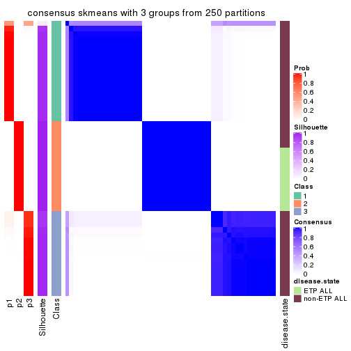
consensus_heatmap(res, k = 4)
consensus_heatmap(res, k = 5)
consensus_heatmap(res, k = 6)
Heatmaps for the membership of samples in all partitions to see how consistent they are:
membership_heatmap(res, k = 2)
membership_heatmap(res, k = 3)
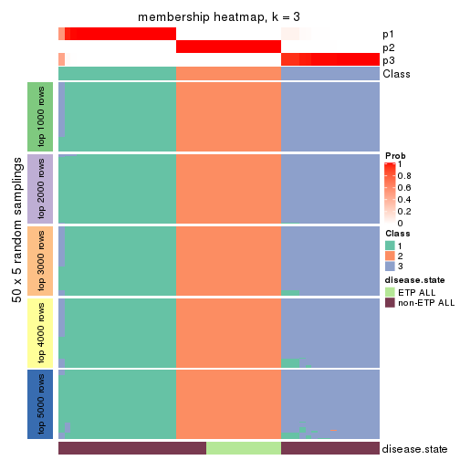
membership_heatmap(res, k = 4)
membership_heatmap(res, k = 5)
membership_heatmap(res, k = 6)
As soon as we have had the classes for columns, we can look for signatures which are significantly different between classes which can be candidate marks for certain classes. Following are the heatmaps for signatures.
Signature heatmaps where rows are scaled:
get_signatures(res, k = 2)
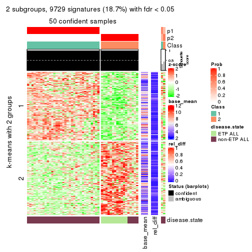
get_signatures(res, k = 3)
get_signatures(res, k = 4)
get_signatures(res, k = 5)
get_signatures(res, k = 6)
Signature heatmaps where rows are not scaled:
get_signatures(res, k = 2, scale_rows = FALSE)

get_signatures(res, k = 3, scale_rows = FALSE)
get_signatures(res, k = 4, scale_rows = FALSE)
get_signatures(res, k = 5, scale_rows = FALSE)
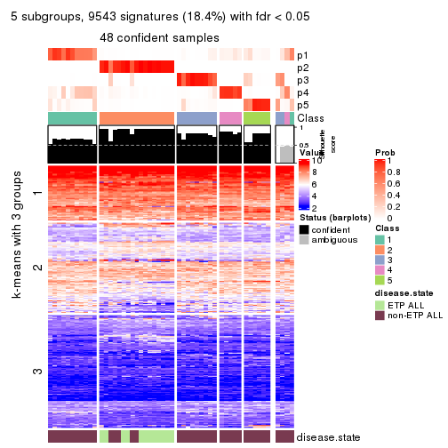
get_signatures(res, k = 6, scale_rows = FALSE)
Compare the overlap of signatures from different k:
compare_signatures(res)
get_signature() returns a data frame invisibly. TO get the list of signatures, the function
call should be assigned to a variable explicitly. In following code, if plot argument is set
to FALSE, no heatmap is plotted while only the differential analysis is performed.
# code only for demonstration
tb = get_signature(res, k = ..., plot = FALSE)
An example of the output of tb is:
#> which_row fdr mean_1 mean_2 scaled_mean_1 scaled_mean_2 km
#> 1 38 0.042760348 8.373488 9.131774 -0.5533452 0.5164555 1
#> 2 40 0.018707592 7.106213 8.469186 -0.6173731 0.5762149 1
#> 3 55 0.019134737 10.221463 11.207825 -0.6159697 0.5749050 1
#> 4 59 0.006059896 5.921854 7.869574 -0.6899429 0.6439467 1
#> 5 60 0.018055526 8.928898 10.211722 -0.6204761 0.5791110 1
#> 6 98 0.009384629 15.714769 14.887706 0.6635654 -0.6193277 2
...
The columns in tb are:
which_row: row indices corresponding to the input matrix.fdr: FDR for the differential test. mean_x: The mean value in group x.scaled_mean_x: The mean value in group x after rows are scaled.km: Row groups if k-means clustering is applied to rows.UMAP plot which shows how samples are separated.
dimension_reduction(res, k = 2, method = "UMAP")
dimension_reduction(res, k = 3, method = "UMAP")
dimension_reduction(res, k = 4, method = "UMAP")
dimension_reduction(res, k = 5, method = "UMAP")
dimension_reduction(res, k = 6, method = "UMAP")
Following heatmap shows how subgroups are split when increasing k:
collect_classes(res)
Test correlation between subgroups and known annotations. If the known annotation is numeric, one-way ANOVA test is applied, and if the known annotation is discrete, chi-squared contingency table test is applied.
test_to_known_factors(res)
#> n disease.state(p) k
#> MAD:skmeans 50 2.14e-07 2
#> MAD:skmeans 51 1.53e-07 3
#> MAD:skmeans 43 1.24e-05 4
#> MAD:skmeans 48 7.20e-06 5
#> MAD:skmeans 40 1.01e-04 6
If matrix rows can be associated to genes, consider to use functional_enrichment(res,
...) to perform function enrichment for the signature genes. See this vignette for more detailed explanations.
The object with results only for a single top-value method and a single partition method can be extracted as:
res = res_list["MAD", "pam"]
# you can also extract it by
# res = res_list["MAD:pam"]
A summary of res and all the functions that can be applied to it:
res
#> A 'ConsensusPartition' object with k = 2, 3, 4, 5, 6.
#> On a matrix with 51979 rows and 52 columns.
#> Top rows (1000, 2000, 3000, 4000, 5000) are extracted by 'MAD' method.
#> Subgroups are detected by 'pam' method.
#> Performed in total 1250 partitions by row resampling.
#> Best k for subgroups seems to be 5.
#>
#> Following methods can be applied to this 'ConsensusPartition' object:
#> [1] "cola_report" "collect_classes" "collect_plots"
#> [4] "collect_stats" "colnames" "compare_signatures"
#> [7] "consensus_heatmap" "dimension_reduction" "functional_enrichment"
#> [10] "get_anno_col" "get_anno" "get_classes"
#> [13] "get_consensus" "get_matrix" "get_membership"
#> [16] "get_param" "get_signatures" "get_stats"
#> [19] "is_best_k" "is_stable_k" "membership_heatmap"
#> [22] "ncol" "nrow" "plot_ecdf"
#> [25] "rownames" "select_partition_number" "show"
#> [28] "suggest_best_k" "test_to_known_factors"
collect_plots() function collects all the plots made from res for all k (number of partitions)
into one single page to provide an easy and fast comparison between different k.
collect_plots(res)
The plots are:
k and the heatmap of
predicted classes for each k.k.k.k.All the plots in panels can be made by individual functions and they are plotted later in this section.
select_partition_number() produces several plots showing different
statistics for choosing “optimized” k. There are following statistics:
k;k, the area increased is defined as \(A_k - A_{k-1}\).The detailed explanations of these statistics can be found in the cola vignette.
Generally speaking, lower PAC score, higher mean silhouette score or higher
concordance corresponds to better partition. Rand index and Jaccard index
measure how similar the current partition is compared to partition with k-1.
If they are too similar, we won't accept k is better than k-1.
select_partition_number(res)
The numeric values for all these statistics can be obtained by get_stats().
get_stats(res)
#> k 1-PAC mean_silhouette concordance area_increased Rand Jaccard
#> 2 2 0.919 0.901 0.963 0.4184 0.566 0.566
#> 3 3 0.655 0.843 0.862 0.2869 0.959 0.927
#> 4 4 0.800 0.890 0.935 0.1739 0.864 0.741
#> 5 5 0.912 0.894 0.955 0.1819 0.824 0.571
#> 6 6 0.781 0.756 0.885 0.0696 0.921 0.707
suggest_best_k() suggests the best \(k\) based on these statistics. The rules are as follows:
suggest_best_k(res)
#> [1] 5
#> attr(,"optional")
#> [1] 2
There is also optional best \(k\) = 2 that is worth to check.
Following shows the table of the partitions (You need to click the show/hide
code output link to see it). The membership matrix (columns with name p*)
is inferred by
clue::cl_consensus()
function with the SE method. Basically the value in the membership matrix
represents the probability to belong to a certain group. The finall class
label for an item is determined with the group with highest probability it
belongs to.
In get_classes() function, the entropy is calculated from the membership
matrix and the silhouette score is calculated from the consensus matrix.
cbind(get_classes(res, k = 2), get_membership(res, k = 2))
#> class entropy silhouette p1 p2
#> GSM710838 2 0.000 0.902 0.000 1.000
#> GSM710840 2 0.000 0.902 0.000 1.000
#> GSM710842 2 0.000 0.902 0.000 1.000
#> GSM710844 2 0.000 0.902 0.000 1.000
#> GSM710847 2 0.000 0.902 0.000 1.000
#> GSM710848 2 0.000 0.902 0.000 1.000
#> GSM710850 2 0.000 0.902 0.000 1.000
#> GSM710931 2 0.000 0.902 0.000 1.000
#> GSM710932 2 0.000 0.902 0.000 1.000
#> GSM710933 2 0.000 0.902 0.000 1.000
#> GSM710934 2 0.000 0.902 0.000 1.000
#> GSM710935 2 0.000 0.902 0.000 1.000
#> GSM710851 1 0.000 0.983 1.000 0.000
#> GSM710852 1 0.000 0.983 1.000 0.000
#> GSM710854 2 0.992 0.259 0.448 0.552
#> GSM710856 1 0.000 0.983 1.000 0.000
#> GSM710857 1 0.000 0.983 1.000 0.000
#> GSM710859 1 0.000 0.983 1.000 0.000
#> GSM710861 1 0.000 0.983 1.000 0.000
#> GSM710864 1 0.000 0.983 1.000 0.000
#> GSM710866 1 0.000 0.983 1.000 0.000
#> GSM710868 1 0.000 0.983 1.000 0.000
#> GSM710870 1 0.000 0.983 1.000 0.000
#> GSM710872 1 0.000 0.983 1.000 0.000
#> GSM710874 1 0.000 0.983 1.000 0.000
#> GSM710876 1 0.000 0.983 1.000 0.000
#> GSM710878 1 0.000 0.983 1.000 0.000
#> GSM710880 1 0.000 0.983 1.000 0.000
#> GSM710882 1 0.000 0.983 1.000 0.000
#> GSM710884 1 0.000 0.983 1.000 0.000
#> GSM710887 1 0.000 0.983 1.000 0.000
#> GSM710889 1 0.000 0.983 1.000 0.000
#> GSM710891 2 0.993 0.248 0.452 0.548
#> GSM710893 1 0.000 0.983 1.000 0.000
#> GSM710895 1 0.000 0.983 1.000 0.000
#> GSM710897 1 0.000 0.983 1.000 0.000
#> GSM710899 2 0.999 0.146 0.484 0.516
#> GSM710901 1 0.000 0.983 1.000 0.000
#> GSM710903 1 0.000 0.983 1.000 0.000
#> GSM710904 1 0.000 0.983 1.000 0.000
#> GSM710907 1 0.000 0.983 1.000 0.000
#> GSM710909 1 0.000 0.983 1.000 0.000
#> GSM710910 1 0.574 0.814 0.864 0.136
#> GSM710912 2 0.000 0.902 0.000 1.000
#> GSM710914 1 0.000 0.983 1.000 0.000
#> GSM710917 1 0.966 0.247 0.608 0.392
#> GSM710919 1 0.000 0.983 1.000 0.000
#> GSM710921 1 0.000 0.983 1.000 0.000
#> GSM710923 1 0.000 0.983 1.000 0.000
#> GSM710925 1 0.000 0.983 1.000 0.000
#> GSM710927 1 0.000 0.983 1.000 0.000
#> GSM710929 1 0.000 0.983 1.000 0.000
cbind(get_classes(res, k = 3), get_membership(res, k = 3))
#> class entropy silhouette p1 p2 p3
#> GSM710838 3 0.0000 0.921 0.000 0.000 1.000
#> GSM710840 2 0.6295 0.936 0.000 0.528 0.472
#> GSM710842 2 0.6291 0.937 0.000 0.532 0.468
#> GSM710844 3 0.0000 0.921 0.000 0.000 1.000
#> GSM710847 2 0.6295 0.936 0.000 0.528 0.472
#> GSM710848 2 0.6291 0.937 0.000 0.532 0.468
#> GSM710850 3 0.0000 0.921 0.000 0.000 1.000
#> GSM710931 2 0.6291 0.937 0.000 0.532 0.468
#> GSM710932 2 0.6295 0.936 0.000 0.528 0.472
#> GSM710933 3 0.0000 0.921 0.000 0.000 1.000
#> GSM710934 3 0.4062 0.554 0.000 0.164 0.836
#> GSM710935 2 0.6295 0.936 0.000 0.528 0.472
#> GSM710851 1 0.6045 0.675 0.620 0.380 0.000
#> GSM710852 1 0.4702 0.774 0.788 0.212 0.000
#> GSM710854 2 0.7534 0.869 0.040 0.532 0.428
#> GSM710856 1 0.0237 0.887 0.996 0.004 0.000
#> GSM710857 1 0.0000 0.887 1.000 0.000 0.000
#> GSM710859 1 0.4654 0.825 0.792 0.208 0.000
#> GSM710861 1 0.0000 0.887 1.000 0.000 0.000
#> GSM710864 1 0.0237 0.887 0.996 0.004 0.000
#> GSM710866 1 0.0000 0.887 1.000 0.000 0.000
#> GSM710868 1 0.0237 0.887 0.996 0.004 0.000
#> GSM710870 1 0.4346 0.836 0.816 0.184 0.000
#> GSM710872 1 0.3879 0.849 0.848 0.152 0.000
#> GSM710874 1 0.6180 0.656 0.584 0.416 0.000
#> GSM710876 1 0.1529 0.877 0.960 0.040 0.000
#> GSM710878 1 0.0000 0.887 1.000 0.000 0.000
#> GSM710880 1 0.0000 0.887 1.000 0.000 0.000
#> GSM710882 1 0.0000 0.887 1.000 0.000 0.000
#> GSM710884 1 0.0000 0.887 1.000 0.000 0.000
#> GSM710887 1 0.0000 0.887 1.000 0.000 0.000
#> GSM710889 1 0.3941 0.845 0.844 0.156 0.000
#> GSM710891 2 0.7699 0.854 0.048 0.532 0.420
#> GSM710893 1 0.0000 0.887 1.000 0.000 0.000
#> GSM710895 1 0.4887 0.787 0.772 0.228 0.000
#> GSM710897 1 0.0000 0.887 1.000 0.000 0.000
#> GSM710899 2 0.8157 0.742 0.076 0.540 0.384
#> GSM710901 1 0.0000 0.887 1.000 0.000 0.000
#> GSM710903 1 0.6045 0.675 0.620 0.380 0.000
#> GSM710904 1 0.0000 0.887 1.000 0.000 0.000
#> GSM710907 1 0.0000 0.887 1.000 0.000 0.000
#> GSM710909 1 0.3192 0.859 0.888 0.112 0.000
#> GSM710910 1 0.4914 0.832 0.844 0.088 0.068
#> GSM710912 2 0.6291 0.937 0.000 0.532 0.468
#> GSM710914 1 0.6045 0.675 0.620 0.380 0.000
#> GSM710917 1 0.6865 0.397 0.596 0.020 0.384
#> GSM710919 1 0.0000 0.887 1.000 0.000 0.000
#> GSM710921 1 0.4750 0.822 0.784 0.216 0.000
#> GSM710923 1 0.0000 0.887 1.000 0.000 0.000
#> GSM710925 1 0.6274 0.631 0.544 0.456 0.000
#> GSM710927 1 0.4702 0.823 0.788 0.212 0.000
#> GSM710929 1 0.4178 0.842 0.828 0.172 0.000
cbind(get_classes(res, k = 4), get_membership(res, k = 4))
#> class entropy silhouette p1 p2 p3 p4
#> GSM710838 4 0.3649 0.814 0.000 0.204 0.000 0.796
#> GSM710840 2 0.0000 0.990 0.000 1.000 0.000 0.000
#> GSM710842 2 0.0000 0.990 0.000 1.000 0.000 0.000
#> GSM710844 4 0.1940 0.862 0.000 0.076 0.000 0.924
#> GSM710847 2 0.0000 0.990 0.000 1.000 0.000 0.000
#> GSM710848 2 0.0707 0.968 0.000 0.980 0.020 0.000
#> GSM710850 4 0.1940 0.862 0.000 0.076 0.000 0.924
#> GSM710931 2 0.0000 0.990 0.000 1.000 0.000 0.000
#> GSM710932 2 0.0000 0.990 0.000 1.000 0.000 0.000
#> GSM710933 4 0.1940 0.862 0.000 0.076 0.000 0.924
#> GSM710934 4 0.4817 0.550 0.000 0.388 0.000 0.612
#> GSM710935 2 0.0000 0.990 0.000 1.000 0.000 0.000
#> GSM710851 3 0.1022 0.909 0.032 0.000 0.968 0.000
#> GSM710852 3 0.4008 0.640 0.244 0.000 0.756 0.000
#> GSM710854 2 0.0000 0.990 0.000 1.000 0.000 0.000
#> GSM710856 1 0.0188 0.924 0.996 0.000 0.004 0.000
#> GSM710857 1 0.0000 0.925 1.000 0.000 0.000 0.000
#> GSM710859 1 0.4513 0.831 0.804 0.000 0.120 0.076
#> GSM710861 1 0.0000 0.925 1.000 0.000 0.000 0.000
#> GSM710864 1 0.0188 0.924 0.996 0.000 0.004 0.000
#> GSM710866 1 0.0000 0.925 1.000 0.000 0.000 0.000
#> GSM710868 1 0.0188 0.924 0.996 0.000 0.004 0.000
#> GSM710870 1 0.4364 0.831 0.808 0.000 0.136 0.056
#> GSM710872 1 0.3764 0.865 0.852 0.000 0.072 0.076
#> GSM710874 3 0.0000 0.889 0.000 0.000 1.000 0.000
#> GSM710876 1 0.1022 0.915 0.968 0.000 0.000 0.032
#> GSM710878 1 0.0000 0.925 1.000 0.000 0.000 0.000
#> GSM710880 1 0.0000 0.925 1.000 0.000 0.000 0.000
#> GSM710882 1 0.0000 0.925 1.000 0.000 0.000 0.000
#> GSM710884 1 0.0000 0.925 1.000 0.000 0.000 0.000
#> GSM710887 1 0.0000 0.925 1.000 0.000 0.000 0.000
#> GSM710889 1 0.2814 0.864 0.868 0.000 0.132 0.000
#> GSM710891 2 0.0000 0.990 0.000 1.000 0.000 0.000
#> GSM710893 1 0.0000 0.925 1.000 0.000 0.000 0.000
#> GSM710895 1 0.4744 0.593 0.704 0.000 0.284 0.012
#> GSM710897 1 0.0000 0.925 1.000 0.000 0.000 0.000
#> GSM710899 2 0.1520 0.929 0.024 0.956 0.000 0.020
#> GSM710901 1 0.0000 0.925 1.000 0.000 0.000 0.000
#> GSM710903 3 0.1022 0.909 0.032 0.000 0.968 0.000
#> GSM710904 1 0.0000 0.925 1.000 0.000 0.000 0.000
#> GSM710907 1 0.0000 0.925 1.000 0.000 0.000 0.000
#> GSM710909 1 0.3301 0.878 0.876 0.000 0.048 0.076
#> GSM710910 1 0.3923 0.869 0.860 0.040 0.024 0.076
#> GSM710912 2 0.0000 0.990 0.000 1.000 0.000 0.000
#> GSM710914 3 0.1022 0.909 0.032 0.000 0.968 0.000
#> GSM710917 1 0.5213 0.546 0.652 0.328 0.000 0.020
#> GSM710919 1 0.0000 0.925 1.000 0.000 0.000 0.000
#> GSM710921 1 0.4513 0.831 0.804 0.000 0.120 0.076
#> GSM710923 1 0.0000 0.925 1.000 0.000 0.000 0.000
#> GSM710925 3 0.0000 0.889 0.000 0.000 1.000 0.000
#> GSM710927 1 0.4568 0.827 0.800 0.000 0.124 0.076
#> GSM710929 1 0.3834 0.863 0.848 0.000 0.076 0.076
cbind(get_classes(res, k = 5), get_membership(res, k = 5))
#> class entropy silhouette p1 p2 p3 p4 p5
#> GSM710838 4 0.3707 0.642 0.000 0.284 0.000 0.716 0.000
#> GSM710840 2 0.0000 0.992 0.000 1.000 0.000 0.000 0.000
#> GSM710842 2 0.0000 0.992 0.000 1.000 0.000 0.000 0.000
#> GSM710844 4 0.0000 0.781 0.000 0.000 0.000 1.000 0.000
#> GSM710847 2 0.0000 0.992 0.000 1.000 0.000 0.000 0.000
#> GSM710848 2 0.1668 0.927 0.000 0.940 0.000 0.032 0.028
#> GSM710850 4 0.0000 0.781 0.000 0.000 0.000 1.000 0.000
#> GSM710931 2 0.0000 0.992 0.000 1.000 0.000 0.000 0.000
#> GSM710932 2 0.0000 0.992 0.000 1.000 0.000 0.000 0.000
#> GSM710933 4 0.0000 0.781 0.000 0.000 0.000 1.000 0.000
#> GSM710934 4 0.4210 0.402 0.000 0.412 0.000 0.588 0.000
#> GSM710935 2 0.0000 0.992 0.000 1.000 0.000 0.000 0.000
#> GSM710851 5 0.0000 1.000 0.000 0.000 0.000 0.000 1.000
#> GSM710852 1 0.3636 0.632 0.728 0.000 0.000 0.000 0.272
#> GSM710854 2 0.0000 0.992 0.000 1.000 0.000 0.000 0.000
#> GSM710856 1 0.0000 0.953 1.000 0.000 0.000 0.000 0.000
#> GSM710857 1 0.0000 0.953 1.000 0.000 0.000 0.000 0.000
#> GSM710859 3 0.0000 0.910 0.000 0.000 1.000 0.000 0.000
#> GSM710861 1 0.0000 0.953 1.000 0.000 0.000 0.000 0.000
#> GSM710864 1 0.0000 0.953 1.000 0.000 0.000 0.000 0.000
#> GSM710866 1 0.0000 0.953 1.000 0.000 0.000 0.000 0.000
#> GSM710868 1 0.0000 0.953 1.000 0.000 0.000 0.000 0.000
#> GSM710870 1 0.3531 0.778 0.816 0.000 0.148 0.000 0.036
#> GSM710872 3 0.0000 0.910 0.000 0.000 1.000 0.000 0.000
#> GSM710874 5 0.0000 1.000 0.000 0.000 0.000 0.000 1.000
#> GSM710876 3 0.3336 0.632 0.228 0.000 0.772 0.000 0.000
#> GSM710878 1 0.0000 0.953 1.000 0.000 0.000 0.000 0.000
#> GSM710880 1 0.0000 0.953 1.000 0.000 0.000 0.000 0.000
#> GSM710882 1 0.0000 0.953 1.000 0.000 0.000 0.000 0.000
#> GSM710884 1 0.0000 0.953 1.000 0.000 0.000 0.000 0.000
#> GSM710887 1 0.0000 0.953 1.000 0.000 0.000 0.000 0.000
#> GSM710889 1 0.0955 0.929 0.968 0.000 0.004 0.000 0.028
#> GSM710891 2 0.0000 0.992 0.000 1.000 0.000 0.000 0.000
#> GSM710893 1 0.0000 0.953 1.000 0.000 0.000 0.000 0.000
#> GSM710895 1 0.6273 0.253 0.524 0.000 0.184 0.000 0.292
#> GSM710897 1 0.0000 0.953 1.000 0.000 0.000 0.000 0.000
#> GSM710899 3 0.3003 0.745 0.000 0.188 0.812 0.000 0.000
#> GSM710901 1 0.0404 0.944 0.988 0.000 0.012 0.000 0.000
#> GSM710903 5 0.0000 1.000 0.000 0.000 0.000 0.000 1.000
#> GSM710904 1 0.0000 0.953 1.000 0.000 0.000 0.000 0.000
#> GSM710907 1 0.0000 0.953 1.000 0.000 0.000 0.000 0.000
#> GSM710909 3 0.0000 0.910 0.000 0.000 1.000 0.000 0.000
#> GSM710910 3 0.0162 0.908 0.000 0.000 0.996 0.000 0.004
#> GSM710912 2 0.0000 0.992 0.000 1.000 0.000 0.000 0.000
#> GSM710914 5 0.0000 1.000 0.000 0.000 0.000 0.000 1.000
#> GSM710917 3 0.2891 0.759 0.000 0.176 0.824 0.000 0.000
#> GSM710919 1 0.0000 0.953 1.000 0.000 0.000 0.000 0.000
#> GSM710921 3 0.0000 0.910 0.000 0.000 1.000 0.000 0.000
#> GSM710923 1 0.0000 0.953 1.000 0.000 0.000 0.000 0.000
#> GSM710925 5 0.0000 1.000 0.000 0.000 0.000 0.000 1.000
#> GSM710927 3 0.0000 0.910 0.000 0.000 1.000 0.000 0.000
#> GSM710929 3 0.0000 0.910 0.000 0.000 1.000 0.000 0.000
cbind(get_classes(res, k = 6), get_membership(res, k = 6))
#> class entropy silhouette p1 p2 p3 p4 p5 p6
#> GSM710838 4 0.4088 0.440 0.000 0.368 0.000 0.616 0.000 0.016
#> GSM710840 2 0.0000 0.924 0.000 1.000 0.000 0.000 0.000 0.000
#> GSM710842 2 0.0865 0.926 0.000 0.964 0.000 0.000 0.000 0.036
#> GSM710844 4 0.0000 0.842 0.000 0.000 0.000 1.000 0.000 0.000
#> GSM710847 2 0.0000 0.924 0.000 1.000 0.000 0.000 0.000 0.000
#> GSM710848 6 0.3565 0.162 0.000 0.304 0.000 0.000 0.004 0.692
#> GSM710850 4 0.0000 0.842 0.000 0.000 0.000 1.000 0.000 0.000
#> GSM710931 2 0.0000 0.924 0.000 1.000 0.000 0.000 0.000 0.000
#> GSM710932 2 0.0405 0.923 0.000 0.988 0.000 0.008 0.000 0.004
#> GSM710933 4 0.0000 0.842 0.000 0.000 0.000 1.000 0.000 0.000
#> GSM710934 6 0.5787 0.161 0.000 0.244 0.000 0.252 0.000 0.504
#> GSM710935 2 0.1387 0.922 0.000 0.932 0.000 0.000 0.000 0.068
#> GSM710851 5 0.0000 1.000 0.000 0.000 0.000 0.000 1.000 0.000
#> GSM710852 6 0.5888 0.428 0.268 0.000 0.000 0.000 0.256 0.476
#> GSM710854 2 0.2762 0.842 0.000 0.804 0.000 0.000 0.000 0.196
#> GSM710856 1 0.0000 0.862 1.000 0.000 0.000 0.000 0.000 0.000
#> GSM710857 1 0.0000 0.862 1.000 0.000 0.000 0.000 0.000 0.000
#> GSM710859 3 0.0000 0.866 0.000 0.000 1.000 0.000 0.000 0.000
#> GSM710861 1 0.3446 0.588 0.692 0.000 0.000 0.000 0.000 0.308
#> GSM710864 6 0.2912 0.456 0.216 0.000 0.000 0.000 0.000 0.784
#> GSM710866 1 0.3446 0.588 0.692 0.000 0.000 0.000 0.000 0.308
#> GSM710868 6 0.3993 0.196 0.476 0.000 0.000 0.000 0.004 0.520
#> GSM710870 1 0.2384 0.770 0.884 0.000 0.084 0.000 0.032 0.000
#> GSM710872 3 0.0000 0.866 0.000 0.000 1.000 0.000 0.000 0.000
#> GSM710874 5 0.0000 1.000 0.000 0.000 0.000 0.000 1.000 0.000
#> GSM710876 3 0.4125 0.647 0.128 0.000 0.748 0.000 0.000 0.124
#> GSM710878 1 0.3446 0.588 0.692 0.000 0.000 0.000 0.000 0.308
#> GSM710880 1 0.3672 0.114 0.632 0.000 0.000 0.000 0.000 0.368
#> GSM710882 1 0.0000 0.862 1.000 0.000 0.000 0.000 0.000 0.000
#> GSM710884 1 0.0000 0.862 1.000 0.000 0.000 0.000 0.000 0.000
#> GSM710887 1 0.0000 0.862 1.000 0.000 0.000 0.000 0.000 0.000
#> GSM710889 1 0.0603 0.852 0.980 0.000 0.004 0.000 0.016 0.000
#> GSM710891 2 0.2793 0.839 0.000 0.800 0.000 0.000 0.000 0.200
#> GSM710893 1 0.2793 0.609 0.800 0.000 0.000 0.000 0.000 0.200
#> GSM710895 3 0.5746 0.258 0.188 0.000 0.488 0.000 0.324 0.000
#> GSM710897 1 0.0000 0.862 1.000 0.000 0.000 0.000 0.000 0.000
#> GSM710899 3 0.4756 0.602 0.000 0.128 0.672 0.000 0.000 0.200
#> GSM710901 1 0.0363 0.857 0.988 0.000 0.000 0.000 0.000 0.012
#> GSM710903 5 0.0000 1.000 0.000 0.000 0.000 0.000 1.000 0.000
#> GSM710904 1 0.0000 0.862 1.000 0.000 0.000 0.000 0.000 0.000
#> GSM710907 1 0.2092 0.779 0.876 0.000 0.000 0.000 0.000 0.124
#> GSM710909 3 0.0000 0.866 0.000 0.000 1.000 0.000 0.000 0.000
#> GSM710910 3 0.0146 0.864 0.000 0.000 0.996 0.000 0.004 0.000
#> GSM710912 2 0.1714 0.913 0.000 0.908 0.000 0.000 0.000 0.092
#> GSM710914 5 0.0000 1.000 0.000 0.000 0.000 0.000 1.000 0.000
#> GSM710917 3 0.2662 0.763 0.000 0.120 0.856 0.000 0.000 0.024
#> GSM710919 1 0.0000 0.862 1.000 0.000 0.000 0.000 0.000 0.000
#> GSM710921 3 0.0000 0.866 0.000 0.000 1.000 0.000 0.000 0.000
#> GSM710923 1 0.0000 0.862 1.000 0.000 0.000 0.000 0.000 0.000
#> GSM710925 5 0.0000 1.000 0.000 0.000 0.000 0.000 1.000 0.000
#> GSM710927 3 0.0000 0.866 0.000 0.000 1.000 0.000 0.000 0.000
#> GSM710929 3 0.0000 0.866 0.000 0.000 1.000 0.000 0.000 0.000
Heatmaps for the consensus matrix. It visualizes the probability of two samples to be in a same group.
consensus_heatmap(res, k = 2)
consensus_heatmap(res, k = 3)
consensus_heatmap(res, k = 4)
consensus_heatmap(res, k = 5)
consensus_heatmap(res, k = 6)
Heatmaps for the membership of samples in all partitions to see how consistent they are:
membership_heatmap(res, k = 2)
membership_heatmap(res, k = 3)
membership_heatmap(res, k = 4)
membership_heatmap(res, k = 5)
membership_heatmap(res, k = 6)
As soon as we have had the classes for columns, we can look for signatures which are significantly different between classes which can be candidate marks for certain classes. Following are the heatmaps for signatures.
Signature heatmaps where rows are scaled:
get_signatures(res, k = 2)
get_signatures(res, k = 3)
get_signatures(res, k = 4)
get_signatures(res, k = 5)
get_signatures(res, k = 6)
Signature heatmaps where rows are not scaled:
get_signatures(res, k = 2, scale_rows = FALSE)
get_signatures(res, k = 3, scale_rows = FALSE)
get_signatures(res, k = 4, scale_rows = FALSE)
get_signatures(res, k = 5, scale_rows = FALSE)
get_signatures(res, k = 6, scale_rows = FALSE)
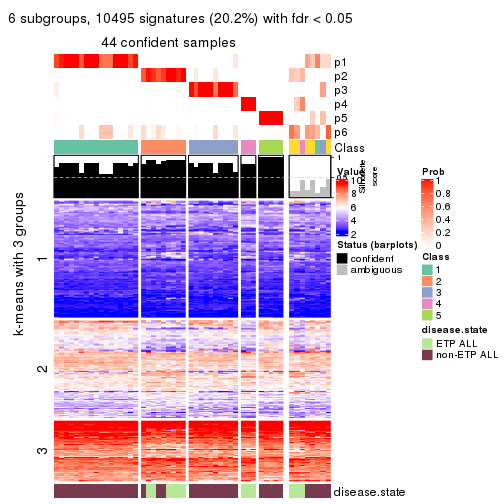
Compare the overlap of signatures from different k:
compare_signatures(res)
get_signature() returns a data frame invisibly. TO get the list of signatures, the function
call should be assigned to a variable explicitly. In following code, if plot argument is set
to FALSE, no heatmap is plotted while only the differential analysis is performed.
# code only for demonstration
tb = get_signature(res, k = ..., plot = FALSE)
An example of the output of tb is:
#> which_row fdr mean_1 mean_2 scaled_mean_1 scaled_mean_2 km
#> 1 38 0.042760348 8.373488 9.131774 -0.5533452 0.5164555 1
#> 2 40 0.018707592 7.106213 8.469186 -0.6173731 0.5762149 1
#> 3 55 0.019134737 10.221463 11.207825 -0.6159697 0.5749050 1
#> 4 59 0.006059896 5.921854 7.869574 -0.6899429 0.6439467 1
#> 5 60 0.018055526 8.928898 10.211722 -0.6204761 0.5791110 1
#> 6 98 0.009384629 15.714769 14.887706 0.6635654 -0.6193277 2
...
The columns in tb are:
which_row: row indices corresponding to the input matrix.fdr: FDR for the differential test. mean_x: The mean value in group x.scaled_mean_x: The mean value in group x after rows are scaled.km: Row groups if k-means clustering is applied to rows.UMAP plot which shows how samples are separated.
dimension_reduction(res, k = 2, method = "UMAP")
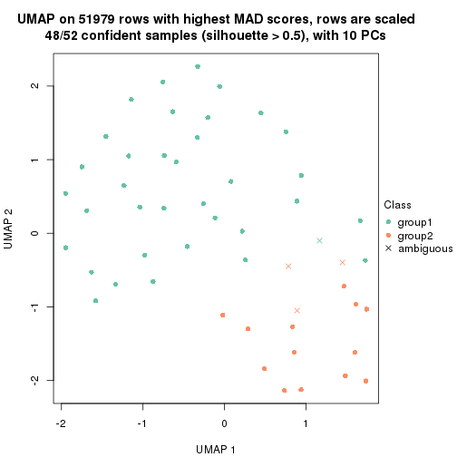
dimension_reduction(res, k = 3, method = "UMAP")
dimension_reduction(res, k = 4, method = "UMAP")
dimension_reduction(res, k = 5, method = "UMAP")
dimension_reduction(res, k = 6, method = "UMAP")
Following heatmap shows how subgroups are split when increasing k:
collect_classes(res)
Test correlation between subgroups and known annotations. If the known annotation is numeric, one-way ANOVA test is applied, and if the known annotation is discrete, chi-squared contingency table test is applied.
test_to_known_factors(res)
#> n disease.state(p) k
#> MAD:pam 48 6.08e-10 2
#> MAD:pam 51 9.94e-09 3
#> MAD:pam 52 3.33e-08 4
#> MAD:pam 50 1.25e-07 5
#> MAD:pam 44 2.19e-06 6
If matrix rows can be associated to genes, consider to use functional_enrichment(res,
...) to perform function enrichment for the signature genes. See this vignette for more detailed explanations.
The object with results only for a single top-value method and a single partition method can be extracted as:
res = res_list["MAD", "mclust"]
# you can also extract it by
# res = res_list["MAD:mclust"]
A summary of res and all the functions that can be applied to it:
res
#> A 'ConsensusPartition' object with k = 2, 3, 4, 5, 6.
#> On a matrix with 51979 rows and 52 columns.
#> Top rows (1000, 2000, 3000, 4000, 5000) are extracted by 'MAD' method.
#> Subgroups are detected by 'mclust' method.
#> Performed in total 1250 partitions by row resampling.
#> Best k for subgroups seems to be 3.
#>
#> Following methods can be applied to this 'ConsensusPartition' object:
#> [1] "cola_report" "collect_classes" "collect_plots"
#> [4] "collect_stats" "colnames" "compare_signatures"
#> [7] "consensus_heatmap" "dimension_reduction" "functional_enrichment"
#> [10] "get_anno_col" "get_anno" "get_classes"
#> [13] "get_consensus" "get_matrix" "get_membership"
#> [16] "get_param" "get_signatures" "get_stats"
#> [19] "is_best_k" "is_stable_k" "membership_heatmap"
#> [22] "ncol" "nrow" "plot_ecdf"
#> [25] "rownames" "select_partition_number" "show"
#> [28] "suggest_best_k" "test_to_known_factors"
collect_plots() function collects all the plots made from res for all k (number of partitions)
into one single page to provide an easy and fast comparison between different k.
collect_plots(res)
The plots are:
k and the heatmap of
predicted classes for each k.k.k.k.All the plots in panels can be made by individual functions and they are plotted later in this section.
select_partition_number() produces several plots showing different
statistics for choosing “optimized” k. There are following statistics:
k;k, the area increased is defined as \(A_k - A_{k-1}\).The detailed explanations of these statistics can be found in the cola vignette.
Generally speaking, lower PAC score, higher mean silhouette score or higher
concordance corresponds to better partition. Rand index and Jaccard index
measure how similar the current partition is compared to partition with k-1.
If they are too similar, we won't accept k is better than k-1.
select_partition_number(res)
The numeric values for all these statistics can be obtained by get_stats().
get_stats(res)
#> k 1-PAC mean_silhouette concordance area_increased Rand Jaccard
#> 2 2 1.000 0.997 0.998 0.4503 0.551 0.551
#> 3 3 0.912 0.922 0.945 0.4722 0.778 0.598
#> 4 4 0.777 0.704 0.846 0.0965 0.915 0.748
#> 5 5 0.719 0.656 0.800 0.0596 0.945 0.806
#> 6 6 0.641 0.417 0.685 0.0444 0.872 0.537
suggest_best_k() suggests the best \(k\) based on these statistics. The rules are as follows:
suggest_best_k(res)
#> [1] 3
#> attr(,"optional")
#> [1] 2
There is also optional best \(k\) = 2 that is worth to check.
Following shows the table of the partitions (You need to click the show/hide
code output link to see it). The membership matrix (columns with name p*)
is inferred by
clue::cl_consensus()
function with the SE method. Basically the value in the membership matrix
represents the probability to belong to a certain group. The finall class
label for an item is determined with the group with highest probability it
belongs to.
In get_classes() function, the entropy is calculated from the membership
matrix and the silhouette score is calculated from the consensus matrix.
cbind(get_classes(res, k = 2), get_membership(res, k = 2))
#> class entropy silhouette p1 p2
#> GSM710838 2 0.000 1.000 0.000 1.000
#> GSM710840 2 0.000 1.000 0.000 1.000
#> GSM710842 2 0.000 1.000 0.000 1.000
#> GSM710844 2 0.000 1.000 0.000 1.000
#> GSM710847 2 0.000 1.000 0.000 1.000
#> GSM710848 2 0.000 1.000 0.000 1.000
#> GSM710850 2 0.000 1.000 0.000 1.000
#> GSM710931 2 0.000 1.000 0.000 1.000
#> GSM710932 2 0.000 1.000 0.000 1.000
#> GSM710933 2 0.000 1.000 0.000 1.000
#> GSM710934 2 0.000 1.000 0.000 1.000
#> GSM710935 2 0.000 1.000 0.000 1.000
#> GSM710851 1 0.000 0.998 1.000 0.000
#> GSM710852 1 0.000 0.998 1.000 0.000
#> GSM710854 2 0.000 1.000 0.000 1.000
#> GSM710856 1 0.000 0.998 1.000 0.000
#> GSM710857 1 0.000 0.998 1.000 0.000
#> GSM710859 1 0.000 0.998 1.000 0.000
#> GSM710861 1 0.000 0.998 1.000 0.000
#> GSM710864 1 0.000 0.998 1.000 0.000
#> GSM710866 1 0.000 0.998 1.000 0.000
#> GSM710868 1 0.000 0.998 1.000 0.000
#> GSM710870 1 0.000 0.998 1.000 0.000
#> GSM710872 1 0.000 0.998 1.000 0.000
#> GSM710874 1 0.000 0.998 1.000 0.000
#> GSM710876 1 0.000 0.998 1.000 0.000
#> GSM710878 1 0.000 0.998 1.000 0.000
#> GSM710880 1 0.000 0.998 1.000 0.000
#> GSM710882 1 0.000 0.998 1.000 0.000
#> GSM710884 1 0.000 0.998 1.000 0.000
#> GSM710887 1 0.000 0.998 1.000 0.000
#> GSM710889 1 0.000 0.998 1.000 0.000
#> GSM710891 2 0.000 1.000 0.000 1.000
#> GSM710893 1 0.000 0.998 1.000 0.000
#> GSM710895 1 0.000 0.998 1.000 0.000
#> GSM710897 1 0.000 0.998 1.000 0.000
#> GSM710899 2 0.000 1.000 0.000 1.000
#> GSM710901 1 0.000 0.998 1.000 0.000
#> GSM710903 1 0.000 0.998 1.000 0.000
#> GSM710904 1 0.000 0.998 1.000 0.000
#> GSM710907 1 0.000 0.998 1.000 0.000
#> GSM710909 1 0.000 0.998 1.000 0.000
#> GSM710910 1 0.416 0.908 0.916 0.084
#> GSM710912 2 0.000 1.000 0.000 1.000
#> GSM710914 1 0.000 0.998 1.000 0.000
#> GSM710917 2 0.000 1.000 0.000 1.000
#> GSM710919 1 0.000 0.998 1.000 0.000
#> GSM710921 1 0.000 0.998 1.000 0.000
#> GSM710923 1 0.000 0.998 1.000 0.000
#> GSM710925 1 0.000 0.998 1.000 0.000
#> GSM710927 1 0.000 0.998 1.000 0.000
#> GSM710929 1 0.000 0.998 1.000 0.000
cbind(get_classes(res, k = 3), get_membership(res, k = 3))
#> class entropy silhouette p1 p2 p3
#> GSM710838 2 0.0000 0.971 0.000 1.000 0.000
#> GSM710840 2 0.0000 0.971 0.000 1.000 0.000
#> GSM710842 2 0.0000 0.971 0.000 1.000 0.000
#> GSM710844 2 0.0000 0.971 0.000 1.000 0.000
#> GSM710847 2 0.0000 0.971 0.000 1.000 0.000
#> GSM710848 2 0.0000 0.971 0.000 1.000 0.000
#> GSM710850 2 0.0000 0.971 0.000 1.000 0.000
#> GSM710931 2 0.0000 0.971 0.000 1.000 0.000
#> GSM710932 2 0.0000 0.971 0.000 1.000 0.000
#> GSM710933 2 0.0000 0.971 0.000 1.000 0.000
#> GSM710934 2 0.0000 0.971 0.000 1.000 0.000
#> GSM710935 2 0.0000 0.971 0.000 1.000 0.000
#> GSM710851 3 0.2356 0.921 0.072 0.000 0.928
#> GSM710852 1 0.2711 0.932 0.912 0.000 0.088
#> GSM710854 2 0.0000 0.971 0.000 1.000 0.000
#> GSM710856 1 0.5138 0.751 0.748 0.000 0.252
#> GSM710857 1 0.2537 0.933 0.920 0.000 0.080
#> GSM710859 3 0.0237 0.978 0.004 0.000 0.996
#> GSM710861 1 0.1411 0.914 0.964 0.000 0.036
#> GSM710864 1 0.2711 0.932 0.912 0.000 0.088
#> GSM710866 1 0.0000 0.891 1.000 0.000 0.000
#> GSM710868 1 0.2711 0.932 0.912 0.000 0.088
#> GSM710870 3 0.0237 0.978 0.004 0.000 0.996
#> GSM710872 3 0.0237 0.978 0.004 0.000 0.996
#> GSM710874 3 0.0000 0.976 0.000 0.000 1.000
#> GSM710876 1 0.5560 0.710 0.700 0.000 0.300
#> GSM710878 1 0.0000 0.891 1.000 0.000 0.000
#> GSM710880 1 0.2711 0.932 0.912 0.000 0.088
#> GSM710882 1 0.2537 0.933 0.920 0.000 0.080
#> GSM710884 1 0.2537 0.933 0.920 0.000 0.080
#> GSM710887 1 0.2537 0.933 0.920 0.000 0.080
#> GSM710889 3 0.0237 0.978 0.004 0.000 0.996
#> GSM710891 2 0.0000 0.971 0.000 1.000 0.000
#> GSM710893 1 0.2711 0.932 0.912 0.000 0.088
#> GSM710895 3 0.0000 0.976 0.000 0.000 1.000
#> GSM710897 1 0.2537 0.933 0.920 0.000 0.080
#> GSM710899 2 0.2625 0.895 0.000 0.916 0.084
#> GSM710901 1 0.4605 0.828 0.796 0.000 0.204
#> GSM710903 3 0.2448 0.917 0.076 0.000 0.924
#> GSM710904 1 0.2537 0.933 0.920 0.000 0.080
#> GSM710907 1 0.0000 0.891 1.000 0.000 0.000
#> GSM710909 1 0.6008 0.579 0.628 0.000 0.372
#> GSM710910 3 0.0237 0.975 0.000 0.004 0.996
#> GSM710912 2 0.0000 0.971 0.000 1.000 0.000
#> GSM710914 3 0.2448 0.917 0.076 0.000 0.924
#> GSM710917 2 0.5988 0.425 0.000 0.632 0.368
#> GSM710919 1 0.2537 0.933 0.920 0.000 0.080
#> GSM710921 3 0.0237 0.978 0.004 0.000 0.996
#> GSM710923 1 0.1031 0.907 0.976 0.000 0.024
#> GSM710925 3 0.0000 0.976 0.000 0.000 1.000
#> GSM710927 3 0.0237 0.978 0.004 0.000 0.996
#> GSM710929 3 0.0237 0.978 0.004 0.000 0.996
cbind(get_classes(res, k = 4), get_membership(res, k = 4))
#> class entropy silhouette p1 p2 p3 p4
#> GSM710838 2 0.0000 0.9312 0.000 1.000 0.000 0.000
#> GSM710840 2 0.0000 0.9312 0.000 1.000 0.000 0.000
#> GSM710842 2 0.1474 0.9163 0.000 0.948 0.000 0.052
#> GSM710844 2 0.0000 0.9312 0.000 1.000 0.000 0.000
#> GSM710847 2 0.0000 0.9312 0.000 1.000 0.000 0.000
#> GSM710848 2 0.0779 0.9252 0.000 0.980 0.004 0.016
#> GSM710850 2 0.0000 0.9312 0.000 1.000 0.000 0.000
#> GSM710931 2 0.1474 0.9163 0.000 0.948 0.000 0.052
#> GSM710932 2 0.0000 0.9312 0.000 1.000 0.000 0.000
#> GSM710933 2 0.0000 0.9312 0.000 1.000 0.000 0.000
#> GSM710934 2 0.0895 0.9232 0.000 0.976 0.004 0.020
#> GSM710935 2 0.0000 0.9312 0.000 1.000 0.000 0.000
#> GSM710851 4 0.5903 0.0371 0.052 0.000 0.332 0.616
#> GSM710852 4 0.4977 0.4385 0.460 0.000 0.000 0.540
#> GSM710854 2 0.1635 0.9180 0.000 0.948 0.008 0.044
#> GSM710856 1 0.4706 0.5710 0.788 0.000 0.140 0.072
#> GSM710857 1 0.1833 0.7713 0.944 0.000 0.032 0.024
#> GSM710859 3 0.0672 0.8679 0.008 0.000 0.984 0.008
#> GSM710861 1 0.0188 0.7764 0.996 0.000 0.000 0.004
#> GSM710864 1 0.4977 -0.3028 0.540 0.000 0.000 0.460
#> GSM710866 1 0.1389 0.7591 0.952 0.000 0.000 0.048
#> GSM710868 4 0.4948 0.4482 0.440 0.000 0.000 0.560
#> GSM710870 3 0.5344 0.6998 0.032 0.000 0.668 0.300
#> GSM710872 3 0.0336 0.8719 0.008 0.000 0.992 0.000
#> GSM710874 3 0.5367 0.6957 0.032 0.000 0.664 0.304
#> GSM710876 1 0.4917 0.3813 0.656 0.000 0.336 0.008
#> GSM710878 1 0.1389 0.7591 0.952 0.000 0.000 0.048
#> GSM710880 4 0.4994 0.3921 0.480 0.000 0.000 0.520
#> GSM710882 1 0.1118 0.7766 0.964 0.000 0.000 0.036
#> GSM710884 1 0.1118 0.7766 0.964 0.000 0.000 0.036
#> GSM710887 1 0.3528 0.6209 0.808 0.000 0.000 0.192
#> GSM710889 3 0.5344 0.6998 0.032 0.000 0.668 0.300
#> GSM710891 2 0.1256 0.9235 0.000 0.964 0.008 0.028
#> GSM710893 4 0.4981 0.4323 0.464 0.000 0.000 0.536
#> GSM710895 3 0.2722 0.8520 0.032 0.000 0.904 0.064
#> GSM710897 1 0.1118 0.7766 0.964 0.000 0.000 0.036
#> GSM710899 2 0.5872 0.3150 0.000 0.576 0.384 0.040
#> GSM710901 1 0.3852 0.6195 0.808 0.000 0.180 0.012
#> GSM710903 4 0.4405 0.4266 0.048 0.000 0.152 0.800
#> GSM710904 1 0.1305 0.7765 0.960 0.000 0.004 0.036
#> GSM710907 1 0.1557 0.7567 0.944 0.000 0.000 0.056
#> GSM710909 1 0.5607 0.0909 0.492 0.000 0.488 0.020
#> GSM710910 3 0.3521 0.8296 0.032 0.016 0.876 0.076
#> GSM710912 2 0.1109 0.9244 0.000 0.968 0.004 0.028
#> GSM710914 4 0.4485 0.4277 0.052 0.000 0.152 0.796
#> GSM710917 2 0.6197 0.3251 0.000 0.544 0.400 0.056
#> GSM710919 1 0.1118 0.7766 0.964 0.000 0.000 0.036
#> GSM710921 3 0.0336 0.8719 0.008 0.000 0.992 0.000
#> GSM710923 1 0.1118 0.7653 0.964 0.000 0.000 0.036
#> GSM710925 3 0.2036 0.8603 0.032 0.000 0.936 0.032
#> GSM710927 3 0.0336 0.8719 0.008 0.000 0.992 0.000
#> GSM710929 3 0.0336 0.8719 0.008 0.000 0.992 0.000
cbind(get_classes(res, k = 5), get_membership(res, k = 5))
#> class entropy silhouette p1 p2 p3 p4 p5
#> GSM710838 2 0.0880 0.87599 0.000 0.968 0.000 NA 0.000
#> GSM710840 2 0.0404 0.87826 0.000 0.988 0.000 NA 0.000
#> GSM710842 2 0.1410 0.86962 0.000 0.940 0.000 NA 0.000
#> GSM710844 2 0.0798 0.87667 0.000 0.976 0.000 NA 0.008
#> GSM710847 2 0.0404 0.87810 0.000 0.988 0.000 NA 0.000
#> GSM710848 2 0.4373 0.78017 0.000 0.760 0.000 NA 0.080
#> GSM710850 2 0.0798 0.87667 0.000 0.976 0.000 NA 0.008
#> GSM710931 2 0.1478 0.86918 0.000 0.936 0.000 NA 0.000
#> GSM710932 2 0.0404 0.87722 0.000 0.988 0.000 NA 0.000
#> GSM710933 2 0.0992 0.87593 0.000 0.968 0.000 NA 0.008
#> GSM710934 2 0.3691 0.80299 0.000 0.820 0.000 NA 0.076
#> GSM710935 2 0.0290 0.87805 0.000 0.992 0.000 NA 0.000
#> GSM710851 5 0.4898 0.00678 0.012 0.000 0.228 NA 0.708
#> GSM710852 5 0.5137 0.58177 0.340 0.000 0.004 NA 0.612
#> GSM710854 2 0.4638 0.77700 0.000 0.744 0.040 NA 0.020
#> GSM710856 1 0.5001 0.46574 0.724 0.000 0.064 NA 0.192
#> GSM710857 1 0.0671 0.74150 0.980 0.000 0.016 NA 0.000
#> GSM710859 3 0.0162 0.75359 0.000 0.000 0.996 NA 0.000
#> GSM710861 1 0.4906 0.64715 0.720 0.000 0.004 NA 0.092
#> GSM710864 5 0.5558 0.40527 0.428 0.004 0.004 NA 0.516
#> GSM710866 1 0.3861 0.68433 0.712 0.000 0.004 NA 0.000
#> GSM710868 5 0.5447 0.56461 0.356 0.000 0.000 NA 0.572
#> GSM710870 3 0.5435 0.54588 0.004 0.000 0.540 NA 0.404
#> GSM710872 3 0.0162 0.75359 0.000 0.000 0.996 NA 0.000
#> GSM710874 3 0.5325 0.52337 0.000 0.000 0.520 NA 0.428
#> GSM710876 3 0.7523 0.09793 0.316 0.000 0.356 NA 0.036
#> GSM710878 1 0.3861 0.68433 0.712 0.000 0.004 NA 0.000
#> GSM710880 5 0.4507 0.50350 0.412 0.000 0.004 NA 0.580
#> GSM710882 1 0.0000 0.74631 1.000 0.000 0.000 NA 0.000
#> GSM710884 1 0.0162 0.74596 0.996 0.000 0.000 NA 0.000
#> GSM710887 1 0.4133 0.57812 0.768 0.000 0.000 NA 0.180
#> GSM710889 3 0.5272 0.55457 0.000 0.000 0.552 NA 0.396
#> GSM710891 2 0.4618 0.77818 0.000 0.748 0.036 NA 0.024
#> GSM710893 5 0.5192 0.57517 0.356 0.000 0.004 NA 0.596
#> GSM710895 3 0.3359 0.72864 0.000 0.000 0.840 NA 0.108
#> GSM710897 1 0.0162 0.74596 0.996 0.000 0.000 NA 0.000
#> GSM710899 2 0.6530 0.53745 0.000 0.556 0.232 NA 0.016
#> GSM710901 1 0.7744 -0.02928 0.368 0.000 0.288 NA 0.056
#> GSM710903 5 0.0898 0.49567 0.008 0.000 0.020 NA 0.972
#> GSM710904 1 0.0162 0.74596 0.996 0.000 0.000 NA 0.000
#> GSM710907 1 0.4270 0.65363 0.656 0.000 0.004 NA 0.004
#> GSM710909 3 0.7294 0.34679 0.232 0.000 0.452 NA 0.036
#> GSM710910 3 0.3237 0.71044 0.000 0.016 0.860 NA 0.028
#> GSM710912 2 0.2144 0.86093 0.000 0.912 0.020 NA 0.000
#> GSM710914 5 0.1280 0.49394 0.008 0.000 0.024 NA 0.960
#> GSM710917 2 0.7121 0.33339 0.000 0.444 0.332 NA 0.028
#> GSM710919 1 0.0000 0.74631 1.000 0.000 0.000 NA 0.000
#> GSM710921 3 0.0162 0.75337 0.000 0.000 0.996 NA 0.000
#> GSM710923 1 0.3814 0.68798 0.720 0.000 0.004 NA 0.000
#> GSM710925 3 0.2628 0.74059 0.000 0.000 0.884 NA 0.088
#> GSM710927 3 0.0324 0.75412 0.000 0.000 0.992 NA 0.004
#> GSM710929 3 0.0000 0.75354 0.000 0.000 1.000 NA 0.000
cbind(get_classes(res, k = 6), get_membership(res, k = 6))
#> class entropy silhouette p1 p2 p3 p4 p5 p6
#> GSM710838 2 0.2489 0.6158 0.012 0.860 0.000 0.000 0.000 0.128
#> GSM710840 2 0.0146 0.7077 0.000 0.996 0.000 0.000 0.000 0.004
#> GSM710842 2 0.1610 0.6813 0.000 0.916 0.000 0.000 0.000 0.084
#> GSM710844 2 0.2773 0.6428 0.004 0.828 0.000 0.000 0.004 0.164
#> GSM710847 2 0.0291 0.7079 0.000 0.992 0.000 0.000 0.004 0.004
#> GSM710848 6 0.6806 0.2060 0.056 0.280 0.000 0.000 0.232 0.432
#> GSM710850 2 0.2773 0.6428 0.004 0.828 0.000 0.000 0.004 0.164
#> GSM710931 2 0.1753 0.6818 0.000 0.912 0.000 0.000 0.004 0.084
#> GSM710932 2 0.0363 0.7067 0.000 0.988 0.000 0.000 0.000 0.012
#> GSM710933 2 0.2773 0.6428 0.004 0.828 0.000 0.000 0.004 0.164
#> GSM710934 2 0.6832 -0.2455 0.056 0.420 0.000 0.000 0.232 0.292
#> GSM710935 2 0.0260 0.7071 0.000 0.992 0.000 0.000 0.000 0.008
#> GSM710851 1 0.6605 -0.3483 0.396 0.000 0.184 0.000 0.376 0.044
#> GSM710852 5 0.1760 0.6114 0.028 0.000 0.004 0.020 0.936 0.012
#> GSM710854 2 0.5152 -0.2387 0.000 0.504 0.012 0.000 0.056 0.428
#> GSM710856 1 0.5717 0.1755 0.640 0.000 0.040 0.192 0.120 0.008
#> GSM710857 1 0.6112 0.4412 0.464 0.000 0.008 0.236 0.292 0.000
#> GSM710859 3 0.0291 0.7652 0.004 0.000 0.992 0.000 0.000 0.004
#> GSM710861 4 0.5037 0.2302 0.064 0.000 0.000 0.524 0.408 0.004
#> GSM710864 5 0.4431 0.4815 0.028 0.000 0.004 0.184 0.740 0.044
#> GSM710866 4 0.3175 0.3777 0.000 0.000 0.000 0.744 0.256 0.000
#> GSM710868 5 0.2345 0.6019 0.028 0.000 0.004 0.028 0.908 0.032
#> GSM710870 3 0.6203 0.4928 0.408 0.000 0.452 0.004 0.060 0.076
#> GSM710872 3 0.0291 0.7652 0.004 0.000 0.992 0.000 0.000 0.004
#> GSM710874 1 0.6596 -0.5206 0.424 0.000 0.380 0.000 0.120 0.076
#> GSM710876 4 0.6920 0.1555 0.156 0.000 0.316 0.460 0.028 0.040
#> GSM710878 4 0.3175 0.3777 0.000 0.000 0.000 0.744 0.256 0.000
#> GSM710880 5 0.2278 0.5466 0.000 0.000 0.004 0.128 0.868 0.000
#> GSM710882 1 0.5951 0.4395 0.456 0.000 0.000 0.268 0.276 0.000
#> GSM710884 1 0.5936 0.4493 0.460 0.000 0.000 0.256 0.284 0.000
#> GSM710887 5 0.6277 -0.3750 0.272 0.000 0.000 0.324 0.396 0.008
#> GSM710889 3 0.6166 0.5231 0.372 0.000 0.488 0.004 0.060 0.076
#> GSM710891 2 0.5309 -0.2774 0.000 0.492 0.020 0.000 0.056 0.432
#> GSM710893 5 0.0692 0.6083 0.000 0.000 0.004 0.020 0.976 0.000
#> GSM710895 3 0.4560 0.6985 0.112 0.000 0.752 0.004 0.104 0.028
#> GSM710897 1 0.5916 0.4473 0.460 0.000 0.000 0.236 0.304 0.000
#> GSM710899 6 0.6583 0.3617 0.000 0.372 0.144 0.000 0.060 0.424
#> GSM710901 4 0.6828 0.1956 0.096 0.000 0.284 0.516 0.072 0.032
#> GSM710903 5 0.4477 0.3880 0.380 0.000 0.028 0.000 0.588 0.004
#> GSM710904 1 0.5894 0.4512 0.472 0.000 0.000 0.244 0.284 0.000
#> GSM710907 4 0.3014 0.3902 0.000 0.000 0.000 0.804 0.184 0.012
#> GSM710909 4 0.7140 0.0555 0.180 0.000 0.336 0.412 0.032 0.040
#> GSM710910 3 0.5040 0.5677 0.020 0.004 0.704 0.004 0.160 0.108
#> GSM710912 2 0.2491 0.5773 0.000 0.836 0.000 0.000 0.000 0.164
#> GSM710914 5 0.4477 0.3880 0.380 0.000 0.028 0.000 0.588 0.004
#> GSM710917 6 0.6887 0.4753 0.000 0.196 0.304 0.000 0.072 0.428
#> GSM710919 1 0.5973 0.4363 0.448 0.000 0.000 0.272 0.280 0.000
#> GSM710921 3 0.0291 0.7661 0.004 0.000 0.992 0.000 0.004 0.000
#> GSM710923 4 0.4747 0.2878 0.080 0.000 0.000 0.632 0.288 0.000
#> GSM710925 3 0.4533 0.7097 0.116 0.000 0.756 0.000 0.056 0.072
#> GSM710927 3 0.0260 0.7656 0.008 0.000 0.992 0.000 0.000 0.000
#> GSM710929 3 0.0436 0.7661 0.004 0.000 0.988 0.004 0.004 0.000
Heatmaps for the consensus matrix. It visualizes the probability of two samples to be in a same group.
consensus_heatmap(res, k = 2)
consensus_heatmap(res, k = 3)
consensus_heatmap(res, k = 4)
consensus_heatmap(res, k = 5)
consensus_heatmap(res, k = 6)
Heatmaps for the membership of samples in all partitions to see how consistent they are:
membership_heatmap(res, k = 2)
membership_heatmap(res, k = 3)
membership_heatmap(res, k = 4)
membership_heatmap(res, k = 5)
membership_heatmap(res, k = 6)
As soon as we have had the classes for columns, we can look for signatures which are significantly different between classes which can be candidate marks for certain classes. Following are the heatmaps for signatures.
Signature heatmaps where rows are scaled:
get_signatures(res, k = 2)
get_signatures(res, k = 3)
get_signatures(res, k = 4)
get_signatures(res, k = 5)
get_signatures(res, k = 6)
Signature heatmaps where rows are not scaled:
get_signatures(res, k = 2, scale_rows = FALSE)
get_signatures(res, k = 3, scale_rows = FALSE)
get_signatures(res, k = 4, scale_rows = FALSE)
get_signatures(res, k = 5, scale_rows = FALSE)

get_signatures(res, k = 6, scale_rows = FALSE)

Compare the overlap of signatures from different k:
compare_signatures(res)
get_signature() returns a data frame invisibly. TO get the list of signatures, the function
call should be assigned to a variable explicitly. In following code, if plot argument is set
to FALSE, no heatmap is plotted while only the differential analysis is performed.
# code only for demonstration
tb = get_signature(res, k = ..., plot = FALSE)
An example of the output of tb is:
#> which_row fdr mean_1 mean_2 scaled_mean_1 scaled_mean_2 km
#> 1 38 0.042760348 8.373488 9.131774 -0.5533452 0.5164555 1
#> 2 40 0.018707592 7.106213 8.469186 -0.6173731 0.5762149 1
#> 3 55 0.019134737 10.221463 11.207825 -0.6159697 0.5749050 1
#> 4 59 0.006059896 5.921854 7.869574 -0.6899429 0.6439467 1
#> 5 60 0.018055526 8.928898 10.211722 -0.6204761 0.5791110 1
#> 6 98 0.009384629 15.714769 14.887706 0.6635654 -0.6193277 2
...
The columns in tb are:
which_row: row indices corresponding to the input matrix.fdr: FDR for the differential test. mean_x: The mean value in group x.scaled_mean_x: The mean value in group x after rows are scaled.km: Row groups if k-means clustering is applied to rows.UMAP plot which shows how samples are separated.
dimension_reduction(res, k = 2, method = "UMAP")
dimension_reduction(res, k = 3, method = "UMAP")
dimension_reduction(res, k = 4, method = "UMAP")
dimension_reduction(res, k = 5, method = "UMAP")
dimension_reduction(res, k = 6, method = "UMAP")
Following heatmap shows how subgroups are split when increasing k:
collect_classes(res)
Test correlation between subgroups and known annotations. If the known annotation is numeric, one-way ANOVA test is applied, and if the known annotation is discrete, chi-squared contingency table test is applied.
test_to_known_factors(res)
#> n disease.state(p) k
#> MAD:mclust 52 1.06e-07 2
#> MAD:mclust 51 3.52e-08 3
#> MAD:mclust 40 6.25e-07 4
#> MAD:mclust 43 3.48e-06 5
#> MAD:mclust 24 3.99e-05 6
If matrix rows can be associated to genes, consider to use functional_enrichment(res,
...) to perform function enrichment for the signature genes. See this vignette for more detailed explanations.
The object with results only for a single top-value method and a single partition method can be extracted as:
res = res_list["MAD", "NMF"]
# you can also extract it by
# res = res_list["MAD:NMF"]
A summary of res and all the functions that can be applied to it:
res
#> A 'ConsensusPartition' object with k = 2, 3, 4, 5, 6.
#> On a matrix with 51979 rows and 52 columns.
#> Top rows (1000, 2000, 3000, 4000, 5000) are extracted by 'MAD' method.
#> Subgroups are detected by 'NMF' method.
#> Performed in total 1250 partitions by row resampling.
#> Best k for subgroups seems to be 3.
#>
#> Following methods can be applied to this 'ConsensusPartition' object:
#> [1] "cola_report" "collect_classes" "collect_plots"
#> [4] "collect_stats" "colnames" "compare_signatures"
#> [7] "consensus_heatmap" "dimension_reduction" "functional_enrichment"
#> [10] "get_anno_col" "get_anno" "get_classes"
#> [13] "get_consensus" "get_matrix" "get_membership"
#> [16] "get_param" "get_signatures" "get_stats"
#> [19] "is_best_k" "is_stable_k" "membership_heatmap"
#> [22] "ncol" "nrow" "plot_ecdf"
#> [25] "rownames" "select_partition_number" "show"
#> [28] "suggest_best_k" "test_to_known_factors"
collect_plots() function collects all the plots made from res for all k (number of partitions)
into one single page to provide an easy and fast comparison between different k.
collect_plots(res)

The plots are:
k and the heatmap of
predicted classes for each k.k.k.k.All the plots in panels can be made by individual functions and they are plotted later in this section.
select_partition_number() produces several plots showing different
statistics for choosing “optimized” k. There are following statistics:
k;k, the area increased is defined as \(A_k - A_{k-1}\).The detailed explanations of these statistics can be found in the cola vignette.
Generally speaking, lower PAC score, higher mean silhouette score or higher
concordance corresponds to better partition. Rand index and Jaccard index
measure how similar the current partition is compared to partition with k-1.
If they are too similar, we won't accept k is better than k-1.
select_partition_number(res)
The numeric values for all these statistics can be obtained by get_stats().
get_stats(res)
#> k 1-PAC mean_silhouette concordance area_increased Rand Jaccard
#> 2 2 1.000 0.990 0.996 0.4521 0.551 0.551
#> 3 3 0.901 0.903 0.951 0.4727 0.756 0.565
#> 4 4 0.758 0.760 0.893 0.1248 0.860 0.610
#> 5 5 0.739 0.733 0.855 0.0621 0.913 0.684
#> 6 6 0.724 0.551 0.745 0.0437 0.962 0.827
suggest_best_k() suggests the best \(k\) based on these statistics. The rules are as follows:
suggest_best_k(res)
#> [1] 3
#> attr(,"optional")
#> [1] 2
There is also optional best \(k\) = 2 that is worth to check.
Following shows the table of the partitions (You need to click the show/hide
code output link to see it). The membership matrix (columns with name p*)
is inferred by
clue::cl_consensus()
function with the SE method. Basically the value in the membership matrix
represents the probability to belong to a certain group. The finall class
label for an item is determined with the group with highest probability it
belongs to.
In get_classes() function, the entropy is calculated from the membership
matrix and the silhouette score is calculated from the consensus matrix.
cbind(get_classes(res, k = 2), get_membership(res, k = 2))
#> class entropy silhouette p1 p2
#> GSM710838 2 0.000 1.000 0.000 1.000
#> GSM710840 2 0.000 1.000 0.000 1.000
#> GSM710842 2 0.000 1.000 0.000 1.000
#> GSM710844 2 0.000 1.000 0.000 1.000
#> GSM710847 2 0.000 1.000 0.000 1.000
#> GSM710848 2 0.000 1.000 0.000 1.000
#> GSM710850 2 0.000 1.000 0.000 1.000
#> GSM710931 2 0.000 1.000 0.000 1.000
#> GSM710932 2 0.000 1.000 0.000 1.000
#> GSM710933 2 0.000 1.000 0.000 1.000
#> GSM710934 2 0.000 1.000 0.000 1.000
#> GSM710935 2 0.000 1.000 0.000 1.000
#> GSM710851 1 0.000 0.993 1.000 0.000
#> GSM710852 1 0.000 0.993 1.000 0.000
#> GSM710854 2 0.000 1.000 0.000 1.000
#> GSM710856 1 0.000 0.993 1.000 0.000
#> GSM710857 1 0.000 0.993 1.000 0.000
#> GSM710859 1 0.000 0.993 1.000 0.000
#> GSM710861 1 0.000 0.993 1.000 0.000
#> GSM710864 1 0.767 0.711 0.776 0.224
#> GSM710866 1 0.000 0.993 1.000 0.000
#> GSM710868 1 0.000 0.993 1.000 0.000
#> GSM710870 1 0.000 0.993 1.000 0.000
#> GSM710872 1 0.000 0.993 1.000 0.000
#> GSM710874 1 0.000 0.993 1.000 0.000
#> GSM710876 1 0.000 0.993 1.000 0.000
#> GSM710878 1 0.000 0.993 1.000 0.000
#> GSM710880 1 0.000 0.993 1.000 0.000
#> GSM710882 1 0.000 0.993 1.000 0.000
#> GSM710884 1 0.000 0.993 1.000 0.000
#> GSM710887 1 0.000 0.993 1.000 0.000
#> GSM710889 1 0.000 0.993 1.000 0.000
#> GSM710891 2 0.000 1.000 0.000 1.000
#> GSM710893 1 0.000 0.993 1.000 0.000
#> GSM710895 1 0.000 0.993 1.000 0.000
#> GSM710897 1 0.000 0.993 1.000 0.000
#> GSM710899 2 0.000 1.000 0.000 1.000
#> GSM710901 1 0.000 0.993 1.000 0.000
#> GSM710903 1 0.000 0.993 1.000 0.000
#> GSM710904 1 0.000 0.993 1.000 0.000
#> GSM710907 1 0.000 0.993 1.000 0.000
#> GSM710909 1 0.000 0.993 1.000 0.000
#> GSM710910 1 0.000 0.993 1.000 0.000
#> GSM710912 2 0.000 1.000 0.000 1.000
#> GSM710914 1 0.000 0.993 1.000 0.000
#> GSM710917 2 0.000 1.000 0.000 1.000
#> GSM710919 1 0.000 0.993 1.000 0.000
#> GSM710921 1 0.000 0.993 1.000 0.000
#> GSM710923 1 0.000 0.993 1.000 0.000
#> GSM710925 1 0.000 0.993 1.000 0.000
#> GSM710927 1 0.000 0.993 1.000 0.000
#> GSM710929 1 0.000 0.993 1.000 0.000
cbind(get_classes(res, k = 3), get_membership(res, k = 3))
#> class entropy silhouette p1 p2 p3
#> GSM710838 2 0.0424 0.9483 0.000 0.992 0.008
#> GSM710840 2 0.0000 0.9491 0.000 1.000 0.000
#> GSM710842 2 0.0000 0.9491 0.000 1.000 0.000
#> GSM710844 2 0.0424 0.9483 0.000 0.992 0.008
#> GSM710847 2 0.0000 0.9491 0.000 1.000 0.000
#> GSM710848 2 0.0661 0.9468 0.004 0.988 0.008
#> GSM710850 2 0.0424 0.9483 0.000 0.992 0.008
#> GSM710931 2 0.0000 0.9491 0.000 1.000 0.000
#> GSM710932 2 0.0000 0.9491 0.000 1.000 0.000
#> GSM710933 2 0.0424 0.9483 0.000 0.992 0.008
#> GSM710934 2 0.1170 0.9392 0.016 0.976 0.008
#> GSM710935 2 0.0424 0.9467 0.000 0.992 0.008
#> GSM710851 1 0.4178 0.8249 0.828 0.000 0.172
#> GSM710852 1 0.0000 0.9615 1.000 0.000 0.000
#> GSM710854 2 0.0592 0.9446 0.000 0.988 0.012
#> GSM710856 1 0.3340 0.8937 0.880 0.000 0.120
#> GSM710857 1 0.2261 0.9452 0.932 0.000 0.068
#> GSM710859 3 0.0424 0.9268 0.008 0.000 0.992
#> GSM710861 1 0.0000 0.9615 1.000 0.000 0.000
#> GSM710864 1 0.0848 0.9506 0.984 0.008 0.008
#> GSM710866 1 0.0237 0.9626 0.996 0.000 0.004
#> GSM710868 1 0.0424 0.9561 0.992 0.000 0.008
#> GSM710870 3 0.1163 0.9232 0.028 0.000 0.972
#> GSM710872 3 0.0424 0.9268 0.008 0.000 0.992
#> GSM710874 3 0.3038 0.8751 0.104 0.000 0.896
#> GSM710876 3 0.3192 0.8671 0.112 0.000 0.888
#> GSM710878 1 0.0000 0.9615 1.000 0.000 0.000
#> GSM710880 1 0.0000 0.9615 1.000 0.000 0.000
#> GSM710882 1 0.1031 0.9644 0.976 0.000 0.024
#> GSM710884 1 0.1964 0.9537 0.944 0.000 0.056
#> GSM710887 1 0.0592 0.9641 0.988 0.000 0.012
#> GSM710889 3 0.2878 0.8818 0.096 0.000 0.904
#> GSM710891 2 0.4750 0.7266 0.000 0.784 0.216
#> GSM710893 1 0.0000 0.9615 1.000 0.000 0.000
#> GSM710895 3 0.0892 0.9262 0.020 0.000 0.980
#> GSM710897 1 0.1529 0.9608 0.960 0.000 0.040
#> GSM710899 3 0.2066 0.8676 0.000 0.060 0.940
#> GSM710901 3 0.6305 0.0378 0.484 0.000 0.516
#> GSM710903 1 0.1753 0.9577 0.952 0.000 0.048
#> GSM710904 1 0.2066 0.9515 0.940 0.000 0.060
#> GSM710907 1 0.0892 0.9647 0.980 0.000 0.020
#> GSM710909 3 0.0892 0.9262 0.020 0.000 0.980
#> GSM710910 3 0.0424 0.9202 0.000 0.008 0.992
#> GSM710912 2 0.0424 0.9468 0.000 0.992 0.008
#> GSM710914 1 0.1964 0.9537 0.944 0.000 0.056
#> GSM710917 2 0.6274 0.2183 0.000 0.544 0.456
#> GSM710919 1 0.1289 0.9629 0.968 0.000 0.032
#> GSM710921 3 0.0424 0.9268 0.008 0.000 0.992
#> GSM710923 1 0.0892 0.9647 0.980 0.000 0.020
#> GSM710925 3 0.0592 0.9270 0.012 0.000 0.988
#> GSM710927 3 0.0424 0.9268 0.008 0.000 0.992
#> GSM710929 3 0.0424 0.9268 0.008 0.000 0.992
cbind(get_classes(res, k = 4), get_membership(res, k = 4))
#> class entropy silhouette p1 p2 p3 p4
#> GSM710838 2 0.0707 0.928 0.000 0.980 0.000 0.020
#> GSM710840 2 0.0000 0.934 0.000 1.000 0.000 0.000
#> GSM710842 2 0.0921 0.917 0.000 0.972 0.028 0.000
#> GSM710844 2 0.0469 0.933 0.000 0.988 0.000 0.012
#> GSM710847 2 0.0469 0.933 0.000 0.988 0.000 0.012
#> GSM710848 4 0.4989 0.160 0.000 0.472 0.000 0.528
#> GSM710850 2 0.0592 0.932 0.000 0.984 0.000 0.016
#> GSM710931 2 0.0524 0.934 0.000 0.988 0.004 0.008
#> GSM710932 2 0.0000 0.934 0.000 1.000 0.000 0.000
#> GSM710933 2 0.0469 0.933 0.000 0.988 0.000 0.012
#> GSM710934 4 0.4992 0.138 0.000 0.476 0.000 0.524
#> GSM710935 2 0.0000 0.934 0.000 1.000 0.000 0.000
#> GSM710851 4 0.5937 0.129 0.052 0.000 0.340 0.608
#> GSM710852 4 0.2345 0.687 0.100 0.000 0.000 0.900
#> GSM710854 2 0.0336 0.932 0.000 0.992 0.008 0.000
#> GSM710856 1 0.5798 0.570 0.696 0.000 0.096 0.208
#> GSM710857 1 0.0469 0.890 0.988 0.000 0.000 0.012
#> GSM710859 3 0.0592 0.864 0.000 0.000 0.984 0.016
#> GSM710861 1 0.0817 0.885 0.976 0.000 0.000 0.024
#> GSM710864 1 0.4401 0.590 0.724 0.004 0.000 0.272
#> GSM710866 1 0.0000 0.891 1.000 0.000 0.000 0.000
#> GSM710868 4 0.3356 0.628 0.176 0.000 0.000 0.824
#> GSM710870 3 0.4049 0.747 0.008 0.000 0.780 0.212
#> GSM710872 3 0.0000 0.865 0.000 0.000 1.000 0.000
#> GSM710874 3 0.5345 0.384 0.012 0.000 0.560 0.428
#> GSM710876 1 0.4382 0.576 0.704 0.000 0.296 0.000
#> GSM710878 1 0.0188 0.891 0.996 0.000 0.000 0.004
#> GSM710880 1 0.4981 0.130 0.536 0.000 0.000 0.464
#> GSM710882 1 0.0469 0.890 0.988 0.000 0.000 0.012
#> GSM710884 1 0.0188 0.891 0.996 0.000 0.000 0.004
#> GSM710887 1 0.0336 0.891 0.992 0.000 0.000 0.008
#> GSM710889 3 0.4775 0.707 0.028 0.000 0.740 0.232
#> GSM710891 2 0.3494 0.747 0.000 0.824 0.172 0.004
#> GSM710893 4 0.3074 0.656 0.152 0.000 0.000 0.848
#> GSM710895 3 0.1022 0.860 0.000 0.000 0.968 0.032
#> GSM710897 1 0.1022 0.881 0.968 0.000 0.000 0.032
#> GSM710899 3 0.3257 0.717 0.000 0.152 0.844 0.004
#> GSM710901 1 0.2266 0.829 0.912 0.000 0.084 0.004
#> GSM710903 4 0.1510 0.664 0.016 0.000 0.028 0.956
#> GSM710904 1 0.0336 0.891 0.992 0.000 0.000 0.008
#> GSM710907 1 0.0000 0.891 1.000 0.000 0.000 0.000
#> GSM710909 3 0.3024 0.732 0.148 0.000 0.852 0.000
#> GSM710910 3 0.0000 0.865 0.000 0.000 1.000 0.000
#> GSM710912 2 0.0000 0.934 0.000 1.000 0.000 0.000
#> GSM710914 4 0.2706 0.633 0.020 0.000 0.080 0.900
#> GSM710917 2 0.5028 0.380 0.000 0.596 0.400 0.004
#> GSM710919 1 0.0188 0.891 0.996 0.000 0.000 0.004
#> GSM710921 3 0.0188 0.865 0.000 0.000 0.996 0.004
#> GSM710923 1 0.0000 0.891 1.000 0.000 0.000 0.000
#> GSM710925 3 0.2973 0.805 0.000 0.000 0.856 0.144
#> GSM710927 3 0.0188 0.865 0.000 0.000 0.996 0.004
#> GSM710929 3 0.0000 0.865 0.000 0.000 1.000 0.000
cbind(get_classes(res, k = 5), get_membership(res, k = 5))
#> class entropy silhouette p1 p2 p3 p4 p5
#> GSM710838 2 0.2445 0.819 0.000 0.884 0.004 0.108 0.004
#> GSM710840 2 0.1638 0.850 0.000 0.932 0.064 0.004 0.000
#> GSM710842 2 0.4531 0.445 0.000 0.568 0.424 0.004 0.004
#> GSM710844 2 0.2490 0.828 0.000 0.896 0.004 0.080 0.020
#> GSM710847 2 0.0451 0.852 0.000 0.988 0.004 0.008 0.000
#> GSM710848 4 0.2054 0.874 0.000 0.072 0.008 0.916 0.004
#> GSM710850 2 0.2490 0.828 0.000 0.896 0.004 0.080 0.020
#> GSM710931 2 0.1026 0.856 0.000 0.968 0.024 0.004 0.004
#> GSM710932 2 0.1082 0.856 0.000 0.964 0.028 0.008 0.000
#> GSM710933 2 0.2490 0.828 0.000 0.896 0.004 0.080 0.020
#> GSM710934 4 0.1410 0.873 0.000 0.060 0.000 0.940 0.000
#> GSM710935 2 0.1638 0.851 0.000 0.932 0.064 0.004 0.000
#> GSM710851 5 0.1597 0.771 0.000 0.000 0.012 0.048 0.940
#> GSM710852 4 0.3289 0.868 0.048 0.000 0.000 0.844 0.108
#> GSM710854 2 0.4134 0.687 0.000 0.704 0.284 0.008 0.004
#> GSM710856 5 0.3300 0.613 0.204 0.000 0.004 0.000 0.792
#> GSM710857 1 0.3456 0.730 0.788 0.000 0.004 0.004 0.204
#> GSM710859 5 0.4452 -0.210 0.000 0.000 0.496 0.004 0.500
#> GSM710861 1 0.0162 0.855 0.996 0.000 0.000 0.000 0.004
#> GSM710864 1 0.4530 0.350 0.612 0.008 0.000 0.376 0.004
#> GSM710866 1 0.0162 0.855 0.996 0.000 0.000 0.000 0.004
#> GSM710868 4 0.2300 0.897 0.040 0.000 0.000 0.908 0.052
#> GSM710870 5 0.1608 0.756 0.000 0.000 0.072 0.000 0.928
#> GSM710872 3 0.2513 0.828 0.000 0.000 0.876 0.008 0.116
#> GSM710874 5 0.1310 0.775 0.000 0.000 0.020 0.024 0.956
#> GSM710876 1 0.4383 0.252 0.572 0.000 0.424 0.004 0.000
#> GSM710878 1 0.0000 0.855 1.000 0.000 0.000 0.000 0.000
#> GSM710880 1 0.6427 0.071 0.452 0.000 0.004 0.392 0.152
#> GSM710882 1 0.0290 0.855 0.992 0.000 0.000 0.000 0.008
#> GSM710884 1 0.0510 0.855 0.984 0.000 0.000 0.000 0.016
#> GSM710887 1 0.1026 0.850 0.968 0.000 0.004 0.004 0.024
#> GSM710889 5 0.1717 0.764 0.008 0.000 0.052 0.004 0.936
#> GSM710891 2 0.5111 0.500 0.000 0.588 0.376 0.012 0.024
#> GSM710893 4 0.3037 0.883 0.040 0.000 0.000 0.860 0.100
#> GSM710895 3 0.4046 0.677 0.000 0.000 0.696 0.008 0.296
#> GSM710897 1 0.2570 0.808 0.880 0.000 0.004 0.008 0.108
#> GSM710899 3 0.2562 0.761 0.000 0.060 0.900 0.008 0.032
#> GSM710901 1 0.3846 0.700 0.776 0.000 0.200 0.004 0.020
#> GSM710903 5 0.3534 0.560 0.000 0.000 0.000 0.256 0.744
#> GSM710904 1 0.1662 0.840 0.936 0.000 0.004 0.004 0.056
#> GSM710907 1 0.0000 0.855 1.000 0.000 0.000 0.000 0.000
#> GSM710909 3 0.4875 0.701 0.124 0.000 0.732 0.004 0.140
#> GSM710910 3 0.2179 0.830 0.000 0.000 0.896 0.004 0.100
#> GSM710912 2 0.1270 0.853 0.000 0.948 0.052 0.000 0.000
#> GSM710914 5 0.2377 0.717 0.000 0.000 0.000 0.128 0.872
#> GSM710917 3 0.1430 0.764 0.000 0.052 0.944 0.000 0.004
#> GSM710919 1 0.0404 0.855 0.988 0.000 0.000 0.000 0.012
#> GSM710921 3 0.3857 0.654 0.000 0.000 0.688 0.000 0.312
#> GSM710923 1 0.0000 0.855 1.000 0.000 0.000 0.000 0.000
#> GSM710925 5 0.3491 0.588 0.000 0.000 0.228 0.004 0.768
#> GSM710927 3 0.2648 0.819 0.000 0.000 0.848 0.000 0.152
#> GSM710929 3 0.2389 0.830 0.000 0.000 0.880 0.004 0.116
cbind(get_classes(res, k = 6), get_membership(res, k = 6))
#> class entropy silhouette p1 p2 p3 p4 p5 p6
#> GSM710838 2 0.4107 0.677 0.000 0.756 0.004 0.148 0.000 0.092
#> GSM710840 2 0.0909 0.722 0.000 0.968 0.012 0.020 0.000 0.000
#> GSM710842 2 0.5415 0.403 0.000 0.564 0.304 0.128 0.000 0.004
#> GSM710844 2 0.4406 0.561 0.000 0.516 0.000 0.464 0.008 0.012
#> GSM710847 2 0.2823 0.698 0.000 0.796 0.000 0.204 0.000 0.000
#> GSM710848 6 0.0603 0.803 0.000 0.016 0.004 0.000 0.000 0.980
#> GSM710850 2 0.4406 0.561 0.000 0.516 0.000 0.464 0.008 0.012
#> GSM710931 2 0.2537 0.727 0.000 0.880 0.024 0.088 0.000 0.008
#> GSM710932 2 0.0865 0.728 0.000 0.964 0.000 0.036 0.000 0.000
#> GSM710933 2 0.4403 0.564 0.000 0.520 0.000 0.460 0.008 0.012
#> GSM710934 6 0.0603 0.803 0.000 0.016 0.000 0.000 0.004 0.980
#> GSM710935 2 0.1708 0.714 0.000 0.932 0.040 0.024 0.000 0.004
#> GSM710851 5 0.0603 0.825 0.000 0.000 0.004 0.000 0.980 0.016
#> GSM710852 6 0.2544 0.722 0.004 0.000 0.000 0.004 0.140 0.852
#> GSM710854 2 0.4839 0.451 0.000 0.624 0.300 0.072 0.000 0.004
#> GSM710856 5 0.4158 0.637 0.252 0.000 0.028 0.012 0.708 0.000
#> GSM710857 1 0.4084 0.137 0.756 0.000 0.056 0.012 0.176 0.000
#> GSM710859 3 0.5241 0.504 0.084 0.000 0.604 0.016 0.296 0.000
#> GSM710861 1 0.3830 0.494 0.620 0.000 0.000 0.376 0.000 0.004
#> GSM710864 1 0.5667 0.264 0.472 0.000 0.000 0.368 0.000 0.160
#> GSM710866 1 0.3830 0.494 0.620 0.000 0.000 0.376 0.000 0.004
#> GSM710868 6 0.0551 0.802 0.004 0.000 0.000 0.004 0.008 0.984
#> GSM710870 5 0.1757 0.809 0.052 0.000 0.012 0.008 0.928 0.000
#> GSM710872 3 0.2196 0.655 0.020 0.000 0.908 0.016 0.056 0.000
#> GSM710874 5 0.0725 0.825 0.000 0.000 0.012 0.000 0.976 0.012
#> GSM710876 4 0.6281 0.000 0.260 0.000 0.324 0.408 0.004 0.004
#> GSM710878 1 0.3819 0.495 0.624 0.000 0.000 0.372 0.000 0.004
#> GSM710880 6 0.5741 0.368 0.416 0.000 0.016 0.000 0.108 0.460
#> GSM710882 1 0.3464 0.511 0.688 0.000 0.000 0.312 0.000 0.000
#> GSM710884 1 0.3716 0.497 0.732 0.000 0.008 0.248 0.012 0.000
#> GSM710887 1 0.2609 0.418 0.868 0.000 0.008 0.112 0.008 0.004
#> GSM710889 5 0.4688 0.513 0.340 0.000 0.036 0.012 0.612 0.000
#> GSM710891 2 0.5247 0.275 0.000 0.524 0.400 0.060 0.016 0.000
#> GSM710893 6 0.3533 0.711 0.192 0.000 0.004 0.004 0.020 0.780
#> GSM710895 3 0.3771 0.639 0.032 0.000 0.784 0.020 0.164 0.000
#> GSM710897 1 0.2492 0.283 0.888 0.000 0.036 0.008 0.068 0.000
#> GSM710899 3 0.4261 0.451 0.000 0.212 0.728 0.044 0.016 0.000
#> GSM710901 1 0.5712 -0.428 0.476 0.000 0.392 0.124 0.004 0.004
#> GSM710903 5 0.1444 0.798 0.000 0.000 0.000 0.000 0.928 0.072
#> GSM710904 1 0.2190 0.297 0.908 0.000 0.040 0.008 0.044 0.000
#> GSM710907 1 0.3695 0.493 0.624 0.000 0.000 0.376 0.000 0.000
#> GSM710909 3 0.5666 0.477 0.228 0.000 0.608 0.140 0.020 0.004
#> GSM710910 3 0.3915 0.612 0.228 0.000 0.736 0.028 0.008 0.000
#> GSM710912 2 0.1067 0.728 0.000 0.964 0.004 0.024 0.004 0.004
#> GSM710914 5 0.0790 0.821 0.000 0.000 0.000 0.000 0.968 0.032
#> GSM710917 3 0.3279 0.572 0.000 0.060 0.828 0.108 0.000 0.004
#> GSM710919 1 0.2762 0.490 0.804 0.000 0.000 0.196 0.000 0.000
#> GSM710921 3 0.3983 0.656 0.164 0.000 0.768 0.012 0.056 0.000
#> GSM710923 1 0.3684 0.496 0.628 0.000 0.000 0.372 0.000 0.000
#> GSM710925 5 0.3122 0.656 0.000 0.000 0.176 0.020 0.804 0.000
#> GSM710927 3 0.4122 0.644 0.016 0.000 0.780 0.080 0.120 0.004
#> GSM710929 3 0.4737 0.607 0.216 0.000 0.696 0.064 0.024 0.000
Heatmaps for the consensus matrix. It visualizes the probability of two samples to be in a same group.
consensus_heatmap(res, k = 2)
consensus_heatmap(res, k = 3)
consensus_heatmap(res, k = 4)
consensus_heatmap(res, k = 5)
consensus_heatmap(res, k = 6)
Heatmaps for the membership of samples in all partitions to see how consistent they are:
membership_heatmap(res, k = 2)
membership_heatmap(res, k = 3)
membership_heatmap(res, k = 4)
membership_heatmap(res, k = 5)
membership_heatmap(res, k = 6)
As soon as we have had the classes for columns, we can look for signatures which are significantly different between classes which can be candidate marks for certain classes. Following are the heatmaps for signatures.
Signature heatmaps where rows are scaled:
get_signatures(res, k = 2)
get_signatures(res, k = 3)
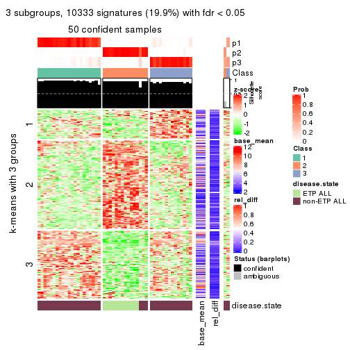
get_signatures(res, k = 4)

get_signatures(res, k = 5)
get_signatures(res, k = 6)
Signature heatmaps where rows are not scaled:
get_signatures(res, k = 2, scale_rows = FALSE)
get_signatures(res, k = 3, scale_rows = FALSE)
get_signatures(res, k = 4, scale_rows = FALSE)
get_signatures(res, k = 5, scale_rows = FALSE)
get_signatures(res, k = 6, scale_rows = FALSE)
Compare the overlap of signatures from different k:
compare_signatures(res)
get_signature() returns a data frame invisibly. TO get the list of signatures, the function
call should be assigned to a variable explicitly. In following code, if plot argument is set
to FALSE, no heatmap is plotted while only the differential analysis is performed.
# code only for demonstration
tb = get_signature(res, k = ..., plot = FALSE)
An example of the output of tb is:
#> which_row fdr mean_1 mean_2 scaled_mean_1 scaled_mean_2 km
#> 1 38 0.042760348 8.373488 9.131774 -0.5533452 0.5164555 1
#> 2 40 0.018707592 7.106213 8.469186 -0.6173731 0.5762149 1
#> 3 55 0.019134737 10.221463 11.207825 -0.6159697 0.5749050 1
#> 4 59 0.006059896 5.921854 7.869574 -0.6899429 0.6439467 1
#> 5 60 0.018055526 8.928898 10.211722 -0.6204761 0.5791110 1
#> 6 98 0.009384629 15.714769 14.887706 0.6635654 -0.6193277 2
...
The columns in tb are:
which_row: row indices corresponding to the input matrix.fdr: FDR for the differential test. mean_x: The mean value in group x.scaled_mean_x: The mean value in group x after rows are scaled.km: Row groups if k-means clustering is applied to rows.UMAP plot which shows how samples are separated.
dimension_reduction(res, k = 2, method = "UMAP")
dimension_reduction(res, k = 3, method = "UMAP")
dimension_reduction(res, k = 4, method = "UMAP")
dimension_reduction(res, k = 5, method = "UMAP")
dimension_reduction(res, k = 6, method = "UMAP")
Following heatmap shows how subgroups are split when increasing k:
collect_classes(res)
Test correlation between subgroups and known annotations. If the known annotation is numeric, one-way ANOVA test is applied, and if the known annotation is discrete, chi-squared contingency table test is applied.
test_to_known_factors(res)
#> n disease.state(p) k
#> MAD:NMF 52 1.06e-07 2
#> MAD:NMF 50 1.00e-08 3
#> MAD:NMF 46 4.24e-07 4
#> MAD:NMF 47 1.40e-05 5
#> MAD:NMF 32 1.46e-04 6
If matrix rows can be associated to genes, consider to use functional_enrichment(res,
...) to perform function enrichment for the signature genes. See this vignette for more detailed explanations.
The object with results only for a single top-value method and a single partition method can be extracted as:
res = res_list["ATC", "hclust"]
# you can also extract it by
# res = res_list["ATC:hclust"]
A summary of res and all the functions that can be applied to it:
res
#> A 'ConsensusPartition' object with k = 2, 3, 4, 5, 6.
#> On a matrix with 51979 rows and 52 columns.
#> Top rows (1000, 2000, 3000, 4000, 5000) are extracted by 'ATC' method.
#> Subgroups are detected by 'hclust' method.
#> Performed in total 1250 partitions by row resampling.
#> Best k for subgroups seems to be 2.
#>
#> Following methods can be applied to this 'ConsensusPartition' object:
#> [1] "cola_report" "collect_classes" "collect_plots"
#> [4] "collect_stats" "colnames" "compare_signatures"
#> [7] "consensus_heatmap" "dimension_reduction" "functional_enrichment"
#> [10] "get_anno_col" "get_anno" "get_classes"
#> [13] "get_consensus" "get_matrix" "get_membership"
#> [16] "get_param" "get_signatures" "get_stats"
#> [19] "is_best_k" "is_stable_k" "membership_heatmap"
#> [22] "ncol" "nrow" "plot_ecdf"
#> [25] "rownames" "select_partition_number" "show"
#> [28] "suggest_best_k" "test_to_known_factors"
collect_plots() function collects all the plots made from res for all k (number of partitions)
into one single page to provide an easy and fast comparison between different k.
collect_plots(res)
The plots are:
k and the heatmap of
predicted classes for each k.k.k.k.All the plots in panels can be made by individual functions and they are plotted later in this section.
select_partition_number() produces several plots showing different
statistics for choosing “optimized” k. There are following statistics:
k;k, the area increased is defined as \(A_k - A_{k-1}\).The detailed explanations of these statistics can be found in the cola vignette.
Generally speaking, lower PAC score, higher mean silhouette score or higher
concordance corresponds to better partition. Rand index and Jaccard index
measure how similar the current partition is compared to partition with k-1.
If they are too similar, we won't accept k is better than k-1.
select_partition_number(res)
The numeric values for all these statistics can be obtained by get_stats().
get_stats(res)
#> k 1-PAC mean_silhouette concordance area_increased Rand Jaccard
#> 2 2 1.000 0.957 0.983 0.4532 0.551 0.551
#> 3 3 0.776 0.844 0.904 0.2200 0.906 0.830
#> 4 4 0.706 0.837 0.894 0.0993 0.950 0.891
#> 5 5 0.713 0.722 0.827 0.1983 0.834 0.593
#> 6 6 0.771 0.757 0.878 0.0438 0.964 0.855
suggest_best_k() suggests the best \(k\) based on these statistics. The rules are as follows:
suggest_best_k(res)
#> [1] 2
Following shows the table of the partitions (You need to click the show/hide
code output link to see it). The membership matrix (columns with name p*)
is inferred by
clue::cl_consensus()
function with the SE method. Basically the value in the membership matrix
represents the probability to belong to a certain group. The finall class
label for an item is determined with the group with highest probability it
belongs to.
In get_classes() function, the entropy is calculated from the membership
matrix and the silhouette score is calculated from the consensus matrix.
cbind(get_classes(res, k = 2), get_membership(res, k = 2))
#> class entropy silhouette p1 p2
#> GSM710838 2 0.000 0.983 0.000 1.000
#> GSM710840 2 0.000 0.983 0.000 1.000
#> GSM710842 2 0.000 0.983 0.000 1.000
#> GSM710844 2 0.000 0.983 0.000 1.000
#> GSM710847 2 0.000 0.983 0.000 1.000
#> GSM710848 2 0.000 0.983 0.000 1.000
#> GSM710850 2 0.000 0.983 0.000 1.000
#> GSM710931 2 0.000 0.983 0.000 1.000
#> GSM710932 2 0.000 0.983 0.000 1.000
#> GSM710933 2 0.000 0.983 0.000 1.000
#> GSM710934 2 0.000 0.983 0.000 1.000
#> GSM710935 2 0.000 0.983 0.000 1.000
#> GSM710851 1 0.000 0.981 1.000 0.000
#> GSM710852 1 0.000 0.981 1.000 0.000
#> GSM710854 2 0.000 0.983 0.000 1.000
#> GSM710856 1 0.000 0.981 1.000 0.000
#> GSM710857 1 0.000 0.981 1.000 0.000
#> GSM710859 1 0.900 0.539 0.684 0.316
#> GSM710861 1 0.000 0.981 1.000 0.000
#> GSM710864 1 0.000 0.981 1.000 0.000
#> GSM710866 1 0.000 0.981 1.000 0.000
#> GSM710868 1 0.000 0.981 1.000 0.000
#> GSM710870 1 0.000 0.981 1.000 0.000
#> GSM710872 1 0.000 0.981 1.000 0.000
#> GSM710874 1 0.000 0.981 1.000 0.000
#> GSM710876 1 0.000 0.981 1.000 0.000
#> GSM710878 1 0.000 0.981 1.000 0.000
#> GSM710880 1 0.000 0.981 1.000 0.000
#> GSM710882 1 0.000 0.981 1.000 0.000
#> GSM710884 1 0.000 0.981 1.000 0.000
#> GSM710887 1 0.000 0.981 1.000 0.000
#> GSM710889 1 0.000 0.981 1.000 0.000
#> GSM710891 2 0.000 0.983 0.000 1.000
#> GSM710893 1 0.000 0.981 1.000 0.000
#> GSM710895 1 0.000 0.981 1.000 0.000
#> GSM710897 1 0.000 0.981 1.000 0.000
#> GSM710899 2 0.000 0.983 0.000 1.000
#> GSM710901 1 0.000 0.981 1.000 0.000
#> GSM710903 1 0.000 0.981 1.000 0.000
#> GSM710904 1 0.000 0.981 1.000 0.000
#> GSM710907 1 0.000 0.981 1.000 0.000
#> GSM710909 1 0.000 0.981 1.000 0.000
#> GSM710910 1 0.900 0.539 0.684 0.316
#> GSM710912 2 0.000 0.983 0.000 1.000
#> GSM710914 1 0.000 0.981 1.000 0.000
#> GSM710917 2 0.839 0.622 0.268 0.732
#> GSM710919 1 0.000 0.981 1.000 0.000
#> GSM710921 1 0.000 0.981 1.000 0.000
#> GSM710923 1 0.000 0.981 1.000 0.000
#> GSM710925 1 0.000 0.981 1.000 0.000
#> GSM710927 1 0.000 0.981 1.000 0.000
#> GSM710929 1 0.000 0.981 1.000 0.000
cbind(get_classes(res, k = 3), get_membership(res, k = 3))
#> class entropy silhouette p1 p2 p3
#> GSM710838 2 0.000 0.872 0.000 1.000 0.000
#> GSM710840 2 0.000 0.872 0.000 1.000 0.000
#> GSM710842 2 0.000 0.872 0.000 1.000 0.000
#> GSM710844 2 0.000 0.872 0.000 1.000 0.000
#> GSM710847 2 0.000 0.872 0.000 1.000 0.000
#> GSM710848 2 0.565 0.756 0.000 0.688 0.312
#> GSM710850 2 0.000 0.872 0.000 1.000 0.000
#> GSM710931 2 0.000 0.872 0.000 1.000 0.000
#> GSM710932 2 0.000 0.872 0.000 1.000 0.000
#> GSM710933 2 0.000 0.872 0.000 1.000 0.000
#> GSM710934 2 0.000 0.872 0.000 1.000 0.000
#> GSM710935 2 0.000 0.872 0.000 1.000 0.000
#> GSM710851 1 0.000 0.919 1.000 0.000 0.000
#> GSM710852 1 0.000 0.919 1.000 0.000 0.000
#> GSM710854 2 0.573 0.751 0.000 0.676 0.324
#> GSM710856 1 0.000 0.919 1.000 0.000 0.000
#> GSM710857 1 0.429 0.674 0.820 0.000 0.180
#> GSM710859 1 0.568 0.381 0.684 0.000 0.316
#> GSM710861 1 0.000 0.919 1.000 0.000 0.000
#> GSM710864 3 0.573 1.000 0.324 0.000 0.676
#> GSM710866 1 0.000 0.919 1.000 0.000 0.000
#> GSM710868 1 0.271 0.822 0.912 0.000 0.088
#> GSM710870 1 0.000 0.919 1.000 0.000 0.000
#> GSM710872 1 0.000 0.919 1.000 0.000 0.000
#> GSM710874 1 0.000 0.919 1.000 0.000 0.000
#> GSM710876 3 0.573 1.000 0.324 0.000 0.676
#> GSM710878 1 0.000 0.919 1.000 0.000 0.000
#> GSM710880 1 0.429 0.674 0.820 0.000 0.180
#> GSM710882 1 0.000 0.919 1.000 0.000 0.000
#> GSM710884 1 0.000 0.919 1.000 0.000 0.000
#> GSM710887 3 0.573 1.000 0.324 0.000 0.676
#> GSM710889 1 0.000 0.919 1.000 0.000 0.000
#> GSM710891 2 0.573 0.751 0.000 0.676 0.324
#> GSM710893 1 0.000 0.919 1.000 0.000 0.000
#> GSM710895 1 0.271 0.822 0.912 0.000 0.088
#> GSM710897 1 0.000 0.919 1.000 0.000 0.000
#> GSM710899 2 0.573 0.751 0.000 0.676 0.324
#> GSM710901 1 0.429 0.674 0.820 0.000 0.180
#> GSM710903 1 0.000 0.919 1.000 0.000 0.000
#> GSM710904 1 0.000 0.919 1.000 0.000 0.000
#> GSM710907 1 0.429 0.674 0.820 0.000 0.180
#> GSM710909 3 0.573 1.000 0.324 0.000 0.676
#> GSM710910 1 0.568 0.381 0.684 0.000 0.316
#> GSM710912 2 0.573 0.751 0.000 0.676 0.324
#> GSM710914 1 0.000 0.919 1.000 0.000 0.000
#> GSM710917 2 0.974 0.304 0.268 0.448 0.284
#> GSM710919 1 0.000 0.919 1.000 0.000 0.000
#> GSM710921 1 0.000 0.919 1.000 0.000 0.000
#> GSM710923 1 0.000 0.919 1.000 0.000 0.000
#> GSM710925 1 0.000 0.919 1.000 0.000 0.000
#> GSM710927 1 0.000 0.919 1.000 0.000 0.000
#> GSM710929 1 0.000 0.919 1.000 0.000 0.000
cbind(get_classes(res, k = 4), get_membership(res, k = 4))
#> class entropy silhouette p1 p2 p3 p4
#> GSM710838 2 0.0000 0.934 0.000 1.000 0.000 0.000
#> GSM710840 2 0.0000 0.934 0.000 1.000 0.000 0.000
#> GSM710842 2 0.4331 0.679 0.000 0.712 0.288 0.000
#> GSM710844 2 0.0000 0.934 0.000 1.000 0.000 0.000
#> GSM710847 2 0.0000 0.934 0.000 1.000 0.000 0.000
#> GSM710848 3 0.4522 0.776 0.000 0.320 0.680 0.000
#> GSM710850 2 0.0000 0.934 0.000 1.000 0.000 0.000
#> GSM710931 2 0.4331 0.679 0.000 0.712 0.288 0.000
#> GSM710932 2 0.0000 0.934 0.000 1.000 0.000 0.000
#> GSM710933 2 0.0000 0.934 0.000 1.000 0.000 0.000
#> GSM710934 2 0.0000 0.934 0.000 1.000 0.000 0.000
#> GSM710935 2 0.0000 0.934 0.000 1.000 0.000 0.000
#> GSM710851 1 0.0336 0.892 0.992 0.000 0.008 0.000
#> GSM710852 1 0.0336 0.892 0.992 0.000 0.008 0.000
#> GSM710854 3 0.3837 0.878 0.000 0.224 0.776 0.000
#> GSM710856 1 0.0336 0.892 0.992 0.000 0.008 0.000
#> GSM710857 1 0.4844 0.522 0.688 0.000 0.012 0.300
#> GSM710859 1 0.6205 0.504 0.668 0.000 0.136 0.196
#> GSM710861 1 0.0336 0.892 0.992 0.000 0.008 0.000
#> GSM710864 4 0.3569 1.000 0.196 0.000 0.000 0.804
#> GSM710866 1 0.0336 0.892 0.992 0.000 0.008 0.000
#> GSM710868 1 0.3498 0.752 0.832 0.000 0.008 0.160
#> GSM710870 1 0.0336 0.892 0.992 0.000 0.008 0.000
#> GSM710872 1 0.1807 0.863 0.940 0.000 0.008 0.052
#> GSM710874 1 0.0336 0.892 0.992 0.000 0.008 0.000
#> GSM710876 4 0.3569 1.000 0.196 0.000 0.000 0.804
#> GSM710878 1 0.0336 0.892 0.992 0.000 0.008 0.000
#> GSM710880 1 0.4844 0.522 0.688 0.000 0.012 0.300
#> GSM710882 1 0.0188 0.891 0.996 0.000 0.000 0.004
#> GSM710884 1 0.0336 0.892 0.992 0.000 0.008 0.000
#> GSM710887 4 0.3569 1.000 0.196 0.000 0.000 0.804
#> GSM710889 1 0.0000 0.891 1.000 0.000 0.000 0.000
#> GSM710891 3 0.3837 0.878 0.000 0.224 0.776 0.000
#> GSM710893 1 0.0336 0.890 0.992 0.000 0.000 0.008
#> GSM710895 1 0.2773 0.802 0.880 0.000 0.004 0.116
#> GSM710897 1 0.0188 0.891 0.996 0.000 0.000 0.004
#> GSM710899 3 0.3837 0.878 0.000 0.224 0.776 0.000
#> GSM710901 1 0.4844 0.522 0.688 0.000 0.012 0.300
#> GSM710903 1 0.0336 0.892 0.992 0.000 0.008 0.000
#> GSM710904 1 0.0336 0.892 0.992 0.000 0.008 0.000
#> GSM710907 1 0.4844 0.522 0.688 0.000 0.012 0.300
#> GSM710909 4 0.3569 1.000 0.196 0.000 0.000 0.804
#> GSM710910 1 0.6205 0.504 0.668 0.000 0.136 0.196
#> GSM710912 3 0.3837 0.878 0.000 0.224 0.776 0.000
#> GSM710914 1 0.0336 0.892 0.992 0.000 0.008 0.000
#> GSM710917 3 0.6441 0.464 0.220 0.060 0.680 0.040
#> GSM710919 1 0.0188 0.891 0.996 0.000 0.000 0.004
#> GSM710921 1 0.1807 0.863 0.940 0.000 0.008 0.052
#> GSM710923 1 0.0188 0.891 0.996 0.000 0.000 0.004
#> GSM710925 1 0.0336 0.892 0.992 0.000 0.008 0.000
#> GSM710927 1 0.1807 0.863 0.940 0.000 0.008 0.052
#> GSM710929 1 0.2473 0.840 0.908 0.000 0.012 0.080
cbind(get_classes(res, k = 5), get_membership(res, k = 5))
#> class entropy silhouette p1 p2 p3 p4 p5
#> GSM710838 2 0.0000 0.899 0.000 1.000 0.000 0.000 0.000
#> GSM710840 2 0.0000 0.899 0.000 1.000 0.000 0.000 0.000
#> GSM710842 2 0.6720 0.479 0.000 0.544 0.040 0.128 0.288
#> GSM710844 2 0.0000 0.899 0.000 1.000 0.000 0.000 0.000
#> GSM710847 2 0.0000 0.899 0.000 1.000 0.000 0.000 0.000
#> GSM710848 5 0.3796 0.797 0.000 0.300 0.000 0.000 0.700
#> GSM710850 2 0.0000 0.899 0.000 1.000 0.000 0.000 0.000
#> GSM710931 2 0.6720 0.479 0.000 0.544 0.040 0.128 0.288
#> GSM710932 2 0.0000 0.899 0.000 1.000 0.000 0.000 0.000
#> GSM710933 2 0.0000 0.899 0.000 1.000 0.000 0.000 0.000
#> GSM710934 2 0.0000 0.899 0.000 1.000 0.000 0.000 0.000
#> GSM710935 2 0.0000 0.899 0.000 1.000 0.000 0.000 0.000
#> GSM710851 1 0.0000 0.854 1.000 0.000 0.000 0.000 0.000
#> GSM710852 1 0.0000 0.854 1.000 0.000 0.000 0.000 0.000
#> GSM710854 5 0.3143 0.899 0.000 0.204 0.000 0.000 0.796
#> GSM710856 1 0.0000 0.854 1.000 0.000 0.000 0.000 0.000
#> GSM710857 3 0.5741 0.423 0.096 0.000 0.544 0.360 0.000
#> GSM710859 3 0.1792 0.395 0.000 0.000 0.916 0.000 0.084
#> GSM710861 1 0.0000 0.854 1.000 0.000 0.000 0.000 0.000
#> GSM710864 4 0.2889 1.000 0.084 0.000 0.044 0.872 0.000
#> GSM710866 1 0.0000 0.854 1.000 0.000 0.000 0.000 0.000
#> GSM710868 3 0.6458 0.489 0.292 0.000 0.492 0.216 0.000
#> GSM710870 1 0.0000 0.854 1.000 0.000 0.000 0.000 0.000
#> GSM710872 3 0.4425 0.444 0.392 0.000 0.600 0.008 0.000
#> GSM710874 1 0.0000 0.854 1.000 0.000 0.000 0.000 0.000
#> GSM710876 4 0.2889 1.000 0.084 0.000 0.044 0.872 0.000
#> GSM710878 1 0.0000 0.854 1.000 0.000 0.000 0.000 0.000
#> GSM710880 3 0.5741 0.423 0.096 0.000 0.544 0.360 0.000
#> GSM710882 1 0.3266 0.685 0.796 0.000 0.200 0.004 0.000
#> GSM710884 1 0.0000 0.854 1.000 0.000 0.000 0.000 0.000
#> GSM710887 4 0.2889 1.000 0.084 0.000 0.044 0.872 0.000
#> GSM710889 1 0.3561 0.599 0.740 0.000 0.260 0.000 0.000
#> GSM710891 5 0.3143 0.899 0.000 0.204 0.000 0.000 0.796
#> GSM710893 1 0.4722 0.284 0.608 0.000 0.368 0.024 0.000
#> GSM710895 1 0.5908 -0.151 0.512 0.000 0.380 0.108 0.000
#> GSM710897 1 0.3266 0.685 0.796 0.000 0.200 0.004 0.000
#> GSM710899 5 0.3143 0.899 0.000 0.204 0.000 0.000 0.796
#> GSM710901 3 0.5741 0.423 0.096 0.000 0.544 0.360 0.000
#> GSM710903 1 0.0000 0.854 1.000 0.000 0.000 0.000 0.000
#> GSM710904 1 0.0000 0.854 1.000 0.000 0.000 0.000 0.000
#> GSM710907 3 0.5741 0.423 0.096 0.000 0.544 0.360 0.000
#> GSM710909 4 0.2889 1.000 0.084 0.000 0.044 0.872 0.000
#> GSM710910 3 0.1792 0.395 0.000 0.000 0.916 0.000 0.084
#> GSM710912 5 0.3143 0.899 0.000 0.204 0.000 0.000 0.796
#> GSM710914 1 0.0000 0.854 1.000 0.000 0.000 0.000 0.000
#> GSM710917 5 0.4840 0.588 0.000 0.056 0.268 0.000 0.676
#> GSM710919 1 0.3266 0.685 0.796 0.000 0.200 0.004 0.000
#> GSM710921 3 0.4425 0.444 0.392 0.000 0.600 0.008 0.000
#> GSM710923 1 0.3266 0.685 0.796 0.000 0.200 0.004 0.000
#> GSM710925 1 0.0162 0.851 0.996 0.000 0.004 0.000 0.000
#> GSM710927 3 0.4354 0.491 0.368 0.000 0.624 0.008 0.000
#> GSM710929 3 0.4768 0.574 0.304 0.000 0.656 0.040 0.000
cbind(get_classes(res, k = 6), get_membership(res, k = 6))
#> class entropy silhouette p1 p2 p3 p4 p5 p6
#> GSM710838 2 0.0000 1.0000 0.000 1.0 0.000 0 0.000 0.000
#> GSM710840 2 0.0000 1.0000 0.000 1.0 0.000 0 0.000 0.000
#> GSM710842 4 0.0000 1.0000 0.000 0.0 0.000 1 0.000 0.000
#> GSM710844 2 0.0000 1.0000 0.000 1.0 0.000 0 0.000 0.000
#> GSM710847 2 0.0000 1.0000 0.000 1.0 0.000 0 0.000 0.000
#> GSM710848 5 0.1814 0.8015 0.000 0.1 0.000 0 0.900 0.000
#> GSM710850 2 0.0000 1.0000 0.000 1.0 0.000 0 0.000 0.000
#> GSM710931 4 0.0000 1.0000 0.000 0.0 0.000 1 0.000 0.000
#> GSM710932 2 0.0000 1.0000 0.000 1.0 0.000 0 0.000 0.000
#> GSM710933 2 0.0000 1.0000 0.000 1.0 0.000 0 0.000 0.000
#> GSM710934 2 0.0000 1.0000 0.000 1.0 0.000 0 0.000 0.000
#> GSM710935 2 0.0000 1.0000 0.000 1.0 0.000 0 0.000 0.000
#> GSM710851 1 0.0000 0.8772 1.000 0.0 0.000 0 0.000 0.000
#> GSM710852 1 0.0000 0.8772 1.000 0.0 0.000 0 0.000 0.000
#> GSM710854 5 0.0000 0.8956 0.000 0.0 0.000 0 1.000 0.000
#> GSM710856 1 0.0000 0.8772 1.000 0.0 0.000 0 0.000 0.000
#> GSM710857 3 0.0000 0.3256 0.000 0.0 1.000 0 0.000 0.000
#> GSM710859 3 0.4847 0.3985 0.000 0.0 0.500 0 0.056 0.444
#> GSM710861 1 0.0000 0.8772 1.000 0.0 0.000 0 0.000 0.000
#> GSM710864 6 0.3833 1.0000 0.000 0.0 0.444 0 0.000 0.556
#> GSM710866 1 0.0000 0.8772 1.000 0.0 0.000 0 0.000 0.000
#> GSM710868 3 0.3023 0.4833 0.232 0.0 0.768 0 0.000 0.000
#> GSM710870 1 0.0000 0.8772 1.000 0.0 0.000 0 0.000 0.000
#> GSM710872 3 0.5771 0.4165 0.380 0.0 0.444 0 0.000 0.176
#> GSM710874 1 0.0000 0.8772 1.000 0.0 0.000 0 0.000 0.000
#> GSM710876 6 0.3833 1.0000 0.000 0.0 0.444 0 0.000 0.556
#> GSM710878 1 0.0000 0.8772 1.000 0.0 0.000 0 0.000 0.000
#> GSM710880 3 0.0000 0.3256 0.000 0.0 1.000 0 0.000 0.000
#> GSM710882 1 0.2912 0.6812 0.784 0.0 0.216 0 0.000 0.000
#> GSM710884 1 0.0000 0.8772 1.000 0.0 0.000 0 0.000 0.000
#> GSM710887 6 0.3833 1.0000 0.000 0.0 0.444 0 0.000 0.556
#> GSM710889 1 0.3468 0.5872 0.728 0.0 0.264 0 0.000 0.008
#> GSM710891 5 0.0000 0.8956 0.000 0.0 0.000 0 1.000 0.000
#> GSM710893 1 0.3804 0.1927 0.576 0.0 0.424 0 0.000 0.000
#> GSM710895 3 0.3869 0.0816 0.500 0.0 0.500 0 0.000 0.000
#> GSM710897 1 0.2912 0.6812 0.784 0.0 0.216 0 0.000 0.000
#> GSM710899 5 0.0000 0.8956 0.000 0.0 0.000 0 1.000 0.000
#> GSM710901 3 0.0000 0.3256 0.000 0.0 1.000 0 0.000 0.000
#> GSM710903 1 0.0000 0.8772 1.000 0.0 0.000 0 0.000 0.000
#> GSM710904 1 0.0000 0.8772 1.000 0.0 0.000 0 0.000 0.000
#> GSM710907 3 0.0146 0.3313 0.004 0.0 0.996 0 0.000 0.000
#> GSM710909 6 0.3833 1.0000 0.000 0.0 0.444 0 0.000 0.556
#> GSM710910 3 0.4847 0.3985 0.000 0.0 0.500 0 0.056 0.444
#> GSM710912 5 0.0000 0.8956 0.000 0.0 0.000 0 1.000 0.000
#> GSM710914 1 0.0000 0.8772 1.000 0.0 0.000 0 0.000 0.000
#> GSM710917 5 0.3980 0.5862 0.000 0.0 0.216 0 0.732 0.052
#> GSM710919 1 0.2912 0.6812 0.784 0.0 0.216 0 0.000 0.000
#> GSM710921 3 0.5771 0.4165 0.380 0.0 0.444 0 0.000 0.176
#> GSM710923 1 0.2912 0.6812 0.784 0.0 0.216 0 0.000 0.000
#> GSM710925 1 0.0146 0.8744 0.996 0.0 0.004 0 0.000 0.000
#> GSM710927 3 0.5742 0.4583 0.356 0.0 0.468 0 0.000 0.176
#> GSM710929 3 0.5586 0.5357 0.292 0.0 0.532 0 0.000 0.176
Heatmaps for the consensus matrix. It visualizes the probability of two samples to be in a same group.
consensus_heatmap(res, k = 2)
consensus_heatmap(res, k = 3)
consensus_heatmap(res, k = 4)
consensus_heatmap(res, k = 5)
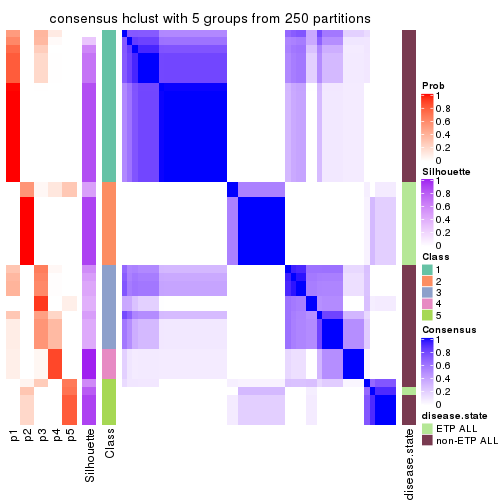
consensus_heatmap(res, k = 6)
Heatmaps for the membership of samples in all partitions to see how consistent they are:
membership_heatmap(res, k = 2)
membership_heatmap(res, k = 3)
membership_heatmap(res, k = 4)
membership_heatmap(res, k = 5)
membership_heatmap(res, k = 6)
As soon as we have had the classes for columns, we can look for signatures which are significantly different between classes which can be candidate marks for certain classes. Following are the heatmaps for signatures.
Signature heatmaps where rows are scaled:
get_signatures(res, k = 2)
get_signatures(res, k = 3)
get_signatures(res, k = 4)
get_signatures(res, k = 5)
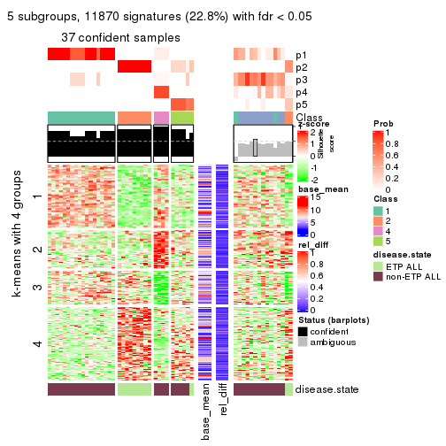
get_signatures(res, k = 6)
Signature heatmaps where rows are not scaled:
get_signatures(res, k = 2, scale_rows = FALSE)
get_signatures(res, k = 3, scale_rows = FALSE)
get_signatures(res, k = 4, scale_rows = FALSE)
get_signatures(res, k = 5, scale_rows = FALSE)
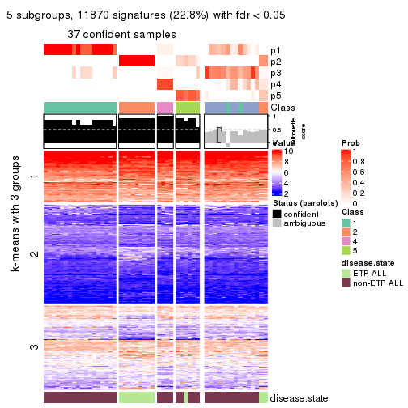
get_signatures(res, k = 6, scale_rows = FALSE)
Compare the overlap of signatures from different k:
compare_signatures(res)
get_signature() returns a data frame invisibly. TO get the list of signatures, the function
call should be assigned to a variable explicitly. In following code, if plot argument is set
to FALSE, no heatmap is plotted while only the differential analysis is performed.
# code only for demonstration
tb = get_signature(res, k = ..., plot = FALSE)
An example of the output of tb is:
#> which_row fdr mean_1 mean_2 scaled_mean_1 scaled_mean_2 km
#> 1 38 0.042760348 8.373488 9.131774 -0.5533452 0.5164555 1
#> 2 40 0.018707592 7.106213 8.469186 -0.6173731 0.5762149 1
#> 3 55 0.019134737 10.221463 11.207825 -0.6159697 0.5749050 1
#> 4 59 0.006059896 5.921854 7.869574 -0.6899429 0.6439467 1
#> 5 60 0.018055526 8.928898 10.211722 -0.6204761 0.5791110 1
#> 6 98 0.009384629 15.714769 14.887706 0.6635654 -0.6193277 2
...
The columns in tb are:
which_row: row indices corresponding to the input matrix.fdr: FDR for the differential test. mean_x: The mean value in group x.scaled_mean_x: The mean value in group x after rows are scaled.km: Row groups if k-means clustering is applied to rows.UMAP plot which shows how samples are separated.
dimension_reduction(res, k = 2, method = "UMAP")
dimension_reduction(res, k = 3, method = "UMAP")
dimension_reduction(res, k = 4, method = "UMAP")
dimension_reduction(res, k = 5, method = "UMAP")
dimension_reduction(res, k = 6, method = "UMAP")
Following heatmap shows how subgroups are split when increasing k:
collect_classes(res)
Test correlation between subgroups and known annotations. If the known annotation is numeric, one-way ANOVA test is applied, and if the known annotation is discrete, chi-squared contingency table test is applied.
test_to_known_factors(res)
#> n disease.state(p) k
#> ATC:hclust 52 1.06e-07 2
#> ATC:hclust 49 7.63e-08 3
#> ATC:hclust 51 4.32e-10 4
#> ATC:hclust 38 8.58e-07 5
#> ATC:hclust 40 9.36e-07 6
If matrix rows can be associated to genes, consider to use functional_enrichment(res,
...) to perform function enrichment for the signature genes. See this vignette for more detailed explanations.
The object with results only for a single top-value method and a single partition method can be extracted as:
res = res_list["ATC", "kmeans"]
# you can also extract it by
# res = res_list["ATC:kmeans"]
A summary of res and all the functions that can be applied to it:
res
#> A 'ConsensusPartition' object with k = 2, 3, 4, 5, 6.
#> On a matrix with 51979 rows and 52 columns.
#> Top rows (1000, 2000, 3000, 4000, 5000) are extracted by 'ATC' method.
#> Subgroups are detected by 'kmeans' method.
#> Performed in total 1250 partitions by row resampling.
#> Best k for subgroups seems to be 2.
#>
#> Following methods can be applied to this 'ConsensusPartition' object:
#> [1] "cola_report" "collect_classes" "collect_plots"
#> [4] "collect_stats" "colnames" "compare_signatures"
#> [7] "consensus_heatmap" "dimension_reduction" "functional_enrichment"
#> [10] "get_anno_col" "get_anno" "get_classes"
#> [13] "get_consensus" "get_matrix" "get_membership"
#> [16] "get_param" "get_signatures" "get_stats"
#> [19] "is_best_k" "is_stable_k" "membership_heatmap"
#> [22] "ncol" "nrow" "plot_ecdf"
#> [25] "rownames" "select_partition_number" "show"
#> [28] "suggest_best_k" "test_to_known_factors"
collect_plots() function collects all the plots made from res for all k (number of partitions)
into one single page to provide an easy and fast comparison between different k.
collect_plots(res)
The plots are:
k and the heatmap of
predicted classes for each k.k.k.k.All the plots in panels can be made by individual functions and they are plotted later in this section.
select_partition_number() produces several plots showing different
statistics for choosing “optimized” k. There are following statistics:
k;k, the area increased is defined as \(A_k - A_{k-1}\).The detailed explanations of these statistics can be found in the cola vignette.
Generally speaking, lower PAC score, higher mean silhouette score or higher
concordance corresponds to better partition. Rand index and Jaccard index
measure how similar the current partition is compared to partition with k-1.
If they are too similar, we won't accept k is better than k-1.
select_partition_number(res)
The numeric values for all these statistics can be obtained by get_stats().
get_stats(res)
#> k 1-PAC mean_silhouette concordance area_increased Rand Jaccard
#> 2 2 1.000 0.994 0.993 0.4335 0.566 0.566
#> 3 3 0.728 0.897 0.899 0.4207 0.783 0.616
#> 4 4 0.898 0.881 0.927 0.1210 0.897 0.725
#> 5 5 0.748 0.654 0.795 0.0988 0.940 0.805
#> 6 6 0.739 0.688 0.795 0.0553 0.955 0.831
suggest_best_k() suggests the best \(k\) based on these statistics. The rules are as follows:
suggest_best_k(res)
#> [1] 2
Following shows the table of the partitions (You need to click the show/hide
code output link to see it). The membership matrix (columns with name p*)
is inferred by
clue::cl_consensus()
function with the SE method. Basically the value in the membership matrix
represents the probability to belong to a certain group. The finall class
label for an item is determined with the group with highest probability it
belongs to.
In get_classes() function, the entropy is calculated from the membership
matrix and the silhouette score is calculated from the consensus matrix.
cbind(get_classes(res, k = 2), get_membership(res, k = 2))
#> class entropy silhouette p1 p2
#> GSM710838 2 0.1184 0.998 0.016 0.984
#> GSM710840 2 0.1184 0.998 0.016 0.984
#> GSM710842 2 0.0000 0.985 0.000 1.000
#> GSM710844 2 0.1184 0.998 0.016 0.984
#> GSM710847 2 0.1184 0.998 0.016 0.984
#> GSM710848 2 0.1184 0.998 0.016 0.984
#> GSM710850 2 0.1184 0.998 0.016 0.984
#> GSM710931 2 0.0000 0.985 0.000 1.000
#> GSM710932 2 0.1184 0.998 0.016 0.984
#> GSM710933 2 0.1184 0.998 0.016 0.984
#> GSM710934 2 0.1184 0.998 0.016 0.984
#> GSM710935 2 0.1184 0.998 0.016 0.984
#> GSM710851 1 0.0000 0.996 1.000 0.000
#> GSM710852 1 0.0000 0.996 1.000 0.000
#> GSM710854 2 0.1184 0.998 0.016 0.984
#> GSM710856 1 0.0000 0.996 1.000 0.000
#> GSM710857 1 0.1184 0.988 0.984 0.016
#> GSM710859 1 0.0000 0.996 1.000 0.000
#> GSM710861 1 0.0000 0.996 1.000 0.000
#> GSM710864 1 0.1184 0.988 0.984 0.016
#> GSM710866 1 0.0000 0.996 1.000 0.000
#> GSM710868 1 0.0000 0.996 1.000 0.000
#> GSM710870 1 0.0000 0.996 1.000 0.000
#> GSM710872 1 0.0000 0.996 1.000 0.000
#> GSM710874 1 0.0000 0.996 1.000 0.000
#> GSM710876 1 0.1184 0.988 0.984 0.016
#> GSM710878 1 0.0000 0.996 1.000 0.000
#> GSM710880 1 0.1184 0.988 0.984 0.016
#> GSM710882 1 0.0000 0.996 1.000 0.000
#> GSM710884 1 0.0000 0.996 1.000 0.000
#> GSM710887 1 0.1184 0.988 0.984 0.016
#> GSM710889 1 0.0000 0.996 1.000 0.000
#> GSM710891 2 0.1184 0.998 0.016 0.984
#> GSM710893 1 0.0000 0.996 1.000 0.000
#> GSM710895 1 0.0000 0.996 1.000 0.000
#> GSM710897 1 0.0000 0.996 1.000 0.000
#> GSM710899 2 0.1414 0.994 0.020 0.980
#> GSM710901 1 0.1184 0.988 0.984 0.016
#> GSM710903 1 0.0000 0.996 1.000 0.000
#> GSM710904 1 0.0000 0.996 1.000 0.000
#> GSM710907 1 0.1184 0.988 0.984 0.016
#> GSM710909 1 0.1184 0.988 0.984 0.016
#> GSM710910 1 0.0000 0.996 1.000 0.000
#> GSM710912 2 0.1184 0.998 0.016 0.984
#> GSM710914 1 0.0000 0.996 1.000 0.000
#> GSM710917 1 0.0376 0.994 0.996 0.004
#> GSM710919 1 0.0000 0.996 1.000 0.000
#> GSM710921 1 0.0000 0.996 1.000 0.000
#> GSM710923 1 0.0000 0.996 1.000 0.000
#> GSM710925 1 0.0000 0.996 1.000 0.000
#> GSM710927 1 0.0000 0.996 1.000 0.000
#> GSM710929 1 0.1184 0.988 0.984 0.016
cbind(get_classes(res, k = 3), get_membership(res, k = 3))
#> class entropy silhouette p1 p2 p3
#> GSM710838 2 0.0237 0.917 0.000 0.996 0.004
#> GSM710840 2 0.0000 0.918 0.000 1.000 0.000
#> GSM710842 2 0.3551 0.892 0.000 0.868 0.132
#> GSM710844 2 0.0000 0.918 0.000 1.000 0.000
#> GSM710847 2 0.0000 0.918 0.000 1.000 0.000
#> GSM710848 2 0.3752 0.887 0.000 0.856 0.144
#> GSM710850 2 0.0000 0.918 0.000 1.000 0.000
#> GSM710931 2 0.3551 0.892 0.000 0.868 0.132
#> GSM710932 2 0.0000 0.918 0.000 1.000 0.000
#> GSM710933 2 0.0000 0.918 0.000 1.000 0.000
#> GSM710934 2 0.0237 0.917 0.000 0.996 0.004
#> GSM710935 2 0.0000 0.918 0.000 1.000 0.000
#> GSM710851 1 0.0000 0.967 1.000 0.000 0.000
#> GSM710852 1 0.0237 0.968 0.996 0.000 0.004
#> GSM710854 2 0.5785 0.800 0.004 0.696 0.300
#> GSM710856 1 0.0237 0.968 0.996 0.000 0.004
#> GSM710857 3 0.5254 0.900 0.264 0.000 0.736
#> GSM710859 1 0.4399 0.746 0.812 0.000 0.188
#> GSM710861 1 0.0237 0.968 0.996 0.000 0.004
#> GSM710864 3 0.5254 0.900 0.264 0.000 0.736
#> GSM710866 1 0.0237 0.968 0.996 0.000 0.004
#> GSM710868 3 0.6305 0.502 0.484 0.000 0.516
#> GSM710870 1 0.0000 0.967 1.000 0.000 0.000
#> GSM710872 1 0.2448 0.890 0.924 0.000 0.076
#> GSM710874 1 0.0000 0.967 1.000 0.000 0.000
#> GSM710876 3 0.5254 0.900 0.264 0.000 0.736
#> GSM710878 1 0.0237 0.968 0.996 0.000 0.004
#> GSM710880 3 0.5254 0.900 0.264 0.000 0.736
#> GSM710882 1 0.0237 0.968 0.996 0.000 0.004
#> GSM710884 1 0.0237 0.968 0.996 0.000 0.004
#> GSM710887 3 0.5254 0.900 0.264 0.000 0.736
#> GSM710889 1 0.0000 0.967 1.000 0.000 0.000
#> GSM710891 2 0.5216 0.835 0.000 0.740 0.260
#> GSM710893 1 0.0237 0.968 0.996 0.000 0.004
#> GSM710895 1 0.2448 0.890 0.924 0.000 0.076
#> GSM710897 1 0.0237 0.968 0.996 0.000 0.004
#> GSM710899 2 0.6126 0.741 0.004 0.644 0.352
#> GSM710901 3 0.5254 0.900 0.264 0.000 0.736
#> GSM710903 1 0.0000 0.967 1.000 0.000 0.000
#> GSM710904 1 0.0237 0.968 0.996 0.000 0.004
#> GSM710907 3 0.5254 0.900 0.264 0.000 0.736
#> GSM710909 3 0.5254 0.900 0.264 0.000 0.736
#> GSM710910 3 0.5138 0.594 0.252 0.000 0.748
#> GSM710912 2 0.4931 0.851 0.000 0.768 0.232
#> GSM710914 1 0.0000 0.967 1.000 0.000 0.000
#> GSM710917 3 0.0424 0.584 0.008 0.000 0.992
#> GSM710919 1 0.0237 0.968 0.996 0.000 0.004
#> GSM710921 1 0.2448 0.890 0.924 0.000 0.076
#> GSM710923 1 0.0237 0.968 0.996 0.000 0.004
#> GSM710925 1 0.0000 0.967 1.000 0.000 0.000
#> GSM710927 1 0.2448 0.890 0.924 0.000 0.076
#> GSM710929 3 0.5291 0.897 0.268 0.000 0.732
cbind(get_classes(res, k = 4), get_membership(res, k = 4))
#> class entropy silhouette p1 p2 p3 p4
#> GSM710838 2 0.0469 0.8850 0.000 0.988 0.000 0.012
#> GSM710840 2 0.0336 0.8860 0.000 0.992 0.000 0.008
#> GSM710842 2 0.5426 0.6435 0.000 0.708 0.060 0.232
#> GSM710844 2 0.1022 0.8789 0.000 0.968 0.032 0.000
#> GSM710847 2 0.0524 0.8859 0.000 0.988 0.004 0.008
#> GSM710848 2 0.4989 0.0724 0.000 0.528 0.000 0.472
#> GSM710850 2 0.1022 0.8789 0.000 0.968 0.032 0.000
#> GSM710931 2 0.5426 0.6435 0.000 0.708 0.060 0.232
#> GSM710932 2 0.0336 0.8860 0.000 0.992 0.000 0.008
#> GSM710933 2 0.1022 0.8789 0.000 0.968 0.032 0.000
#> GSM710934 2 0.0469 0.8850 0.000 0.988 0.000 0.012
#> GSM710935 2 0.0336 0.8860 0.000 0.992 0.000 0.008
#> GSM710851 1 0.1211 0.9631 0.960 0.000 0.000 0.040
#> GSM710852 1 0.0188 0.9656 0.996 0.000 0.000 0.004
#> GSM710854 4 0.1489 0.8163 0.000 0.044 0.004 0.952
#> GSM710856 1 0.1118 0.9631 0.964 0.000 0.000 0.036
#> GSM710857 3 0.2342 0.9817 0.080 0.000 0.912 0.008
#> GSM710859 4 0.4761 0.4046 0.332 0.000 0.004 0.664
#> GSM710861 1 0.0000 0.9666 1.000 0.000 0.000 0.000
#> GSM710864 3 0.2011 0.9811 0.080 0.000 0.920 0.000
#> GSM710866 1 0.0000 0.9666 1.000 0.000 0.000 0.000
#> GSM710868 1 0.1388 0.9472 0.960 0.000 0.028 0.012
#> GSM710870 1 0.1118 0.9631 0.964 0.000 0.000 0.036
#> GSM710872 1 0.2999 0.8785 0.864 0.000 0.004 0.132
#> GSM710874 1 0.1118 0.9631 0.964 0.000 0.000 0.036
#> GSM710876 3 0.2011 0.9811 0.080 0.000 0.920 0.000
#> GSM710878 1 0.0000 0.9666 1.000 0.000 0.000 0.000
#> GSM710880 3 0.2342 0.9817 0.080 0.000 0.912 0.008
#> GSM710882 1 0.0188 0.9656 0.996 0.000 0.000 0.004
#> GSM710884 1 0.0000 0.9666 1.000 0.000 0.000 0.000
#> GSM710887 3 0.2011 0.9811 0.080 0.000 0.920 0.000
#> GSM710889 1 0.1118 0.9631 0.964 0.000 0.000 0.036
#> GSM710891 4 0.1557 0.8084 0.000 0.056 0.000 0.944
#> GSM710893 1 0.0336 0.9657 0.992 0.000 0.000 0.008
#> GSM710895 1 0.2124 0.9211 0.924 0.000 0.008 0.068
#> GSM710897 1 0.0188 0.9656 0.996 0.000 0.000 0.004
#> GSM710899 4 0.1489 0.8163 0.000 0.044 0.004 0.952
#> GSM710901 3 0.2342 0.9817 0.080 0.000 0.912 0.008
#> GSM710903 1 0.0336 0.9657 0.992 0.000 0.000 0.008
#> GSM710904 1 0.1118 0.9631 0.964 0.000 0.000 0.036
#> GSM710907 3 0.2342 0.9817 0.080 0.000 0.912 0.008
#> GSM710909 3 0.2011 0.9811 0.080 0.000 0.920 0.000
#> GSM710910 4 0.1936 0.7884 0.032 0.000 0.028 0.940
#> GSM710912 4 0.4855 0.4837 0.000 0.268 0.020 0.712
#> GSM710914 1 0.1118 0.9631 0.964 0.000 0.000 0.036
#> GSM710917 4 0.1557 0.7974 0.000 0.000 0.056 0.944
#> GSM710919 1 0.0000 0.9666 1.000 0.000 0.000 0.000
#> GSM710921 1 0.2593 0.9075 0.892 0.000 0.004 0.104
#> GSM710923 1 0.0000 0.9666 1.000 0.000 0.000 0.000
#> GSM710925 1 0.0921 0.9640 0.972 0.000 0.000 0.028
#> GSM710927 1 0.3052 0.8767 0.860 0.000 0.004 0.136
#> GSM710929 3 0.4352 0.8787 0.080 0.000 0.816 0.104
cbind(get_classes(res, k = 5), get_membership(res, k = 5))
#> class entropy silhouette p1 p2 p3 p4 p5
#> GSM710838 2 0.0703 0.8528 0.000 0.976 0.024 0.000 0.000
#> GSM710840 2 0.0000 0.8592 0.000 1.000 0.000 0.000 0.000
#> GSM710842 2 0.6797 0.3346 0.000 0.492 0.172 0.316 0.020
#> GSM710844 2 0.2280 0.8356 0.000 0.880 0.120 0.000 0.000
#> GSM710847 2 0.0290 0.8590 0.000 0.992 0.008 0.000 0.000
#> GSM710848 4 0.4900 0.0764 0.000 0.464 0.024 0.512 0.000
#> GSM710850 2 0.2280 0.8356 0.000 0.880 0.120 0.000 0.000
#> GSM710931 2 0.6797 0.3346 0.000 0.492 0.172 0.316 0.020
#> GSM710932 2 0.0000 0.8592 0.000 1.000 0.000 0.000 0.000
#> GSM710933 2 0.2280 0.8356 0.000 0.880 0.120 0.000 0.000
#> GSM710934 2 0.0794 0.8531 0.000 0.972 0.028 0.000 0.000
#> GSM710935 2 0.0000 0.8592 0.000 1.000 0.000 0.000 0.000
#> GSM710851 1 0.3210 0.7362 0.788 0.000 0.212 0.000 0.000
#> GSM710852 1 0.2230 0.7591 0.884 0.000 0.116 0.000 0.000
#> GSM710854 4 0.0000 0.7923 0.000 0.000 0.000 1.000 0.000
#> GSM710856 1 0.2813 0.7493 0.832 0.000 0.168 0.000 0.000
#> GSM710857 5 0.3264 0.9118 0.020 0.000 0.140 0.004 0.836
#> GSM710859 3 0.6016 0.0218 0.100 0.000 0.488 0.408 0.004
#> GSM710861 1 0.0963 0.7724 0.964 0.000 0.036 0.000 0.000
#> GSM710864 5 0.0609 0.9145 0.020 0.000 0.000 0.000 0.980
#> GSM710866 1 0.0404 0.7739 0.988 0.000 0.012 0.000 0.000
#> GSM710868 1 0.3779 0.4961 0.752 0.000 0.236 0.000 0.012
#> GSM710870 1 0.3143 0.7377 0.796 0.000 0.204 0.000 0.000
#> GSM710872 3 0.5493 0.2646 0.456 0.000 0.488 0.052 0.004
#> GSM710874 1 0.3177 0.7367 0.792 0.000 0.208 0.000 0.000
#> GSM710876 5 0.0609 0.9145 0.020 0.000 0.000 0.000 0.980
#> GSM710878 1 0.0290 0.7741 0.992 0.000 0.008 0.000 0.000
#> GSM710880 5 0.3264 0.9118 0.020 0.000 0.140 0.004 0.836
#> GSM710882 1 0.0000 0.7758 1.000 0.000 0.000 0.000 0.000
#> GSM710884 1 0.0880 0.7678 0.968 0.000 0.032 0.000 0.000
#> GSM710887 5 0.0609 0.9145 0.020 0.000 0.000 0.000 0.980
#> GSM710889 1 0.3816 0.6410 0.696 0.000 0.304 0.000 0.000
#> GSM710891 4 0.0162 0.7918 0.000 0.004 0.000 0.996 0.000
#> GSM710893 1 0.1851 0.7325 0.912 0.000 0.088 0.000 0.000
#> GSM710895 1 0.5190 -0.3725 0.496 0.000 0.468 0.032 0.004
#> GSM710897 1 0.1197 0.7616 0.952 0.000 0.048 0.000 0.000
#> GSM710899 4 0.0000 0.7923 0.000 0.000 0.000 1.000 0.000
#> GSM710901 5 0.3264 0.9118 0.020 0.000 0.140 0.004 0.836
#> GSM710903 1 0.3039 0.7463 0.808 0.000 0.192 0.000 0.000
#> GSM710904 1 0.2020 0.7668 0.900 0.000 0.100 0.000 0.000
#> GSM710907 5 0.3264 0.9118 0.020 0.000 0.140 0.004 0.836
#> GSM710909 5 0.0609 0.9145 0.020 0.000 0.000 0.000 0.980
#> GSM710910 4 0.4630 0.1983 0.004 0.000 0.416 0.572 0.008
#> GSM710912 4 0.3149 0.7269 0.000 0.080 0.040 0.868 0.012
#> GSM710914 1 0.3177 0.7367 0.792 0.000 0.208 0.000 0.000
#> GSM710917 4 0.0162 0.7908 0.000 0.000 0.004 0.996 0.000
#> GSM710919 1 0.1121 0.7624 0.956 0.000 0.044 0.000 0.000
#> GSM710921 1 0.5475 -0.3517 0.512 0.000 0.432 0.052 0.004
#> GSM710923 1 0.1121 0.7624 0.956 0.000 0.044 0.000 0.000
#> GSM710925 1 0.3424 0.7095 0.760 0.000 0.240 0.000 0.000
#> GSM710927 3 0.5440 0.1523 0.472 0.000 0.476 0.048 0.004
#> GSM710929 3 0.6297 -0.1894 0.048 0.000 0.496 0.052 0.404
cbind(get_classes(res, k = 6), get_membership(res, k = 6))
#> class entropy silhouette p1 p2 p3 p4 p5 p6
#> GSM710838 2 0.1856 0.806 0.000 0.920 0.048 NA 0.000 0.000
#> GSM710840 2 0.0000 0.826 0.000 1.000 0.000 NA 0.000 0.000
#> GSM710842 2 0.6859 0.235 0.000 0.400 0.052 NA 0.000 0.288
#> GSM710844 2 0.2923 0.803 0.000 0.848 0.052 NA 0.000 0.000
#> GSM710847 2 0.0260 0.826 0.000 0.992 0.000 NA 0.000 0.000
#> GSM710848 6 0.5261 0.335 0.000 0.352 0.052 NA 0.000 0.568
#> GSM710850 2 0.2923 0.803 0.000 0.848 0.052 NA 0.000 0.000
#> GSM710931 2 0.6859 0.235 0.000 0.400 0.052 NA 0.000 0.288
#> GSM710932 2 0.0405 0.825 0.000 0.988 0.004 NA 0.000 0.000
#> GSM710933 2 0.2923 0.803 0.000 0.848 0.052 NA 0.000 0.000
#> GSM710934 2 0.1856 0.806 0.000 0.920 0.048 NA 0.000 0.000
#> GSM710935 2 0.0405 0.825 0.000 0.988 0.004 NA 0.000 0.000
#> GSM710851 1 0.4157 0.640 0.544 0.000 0.012 NA 0.000 0.000
#> GSM710852 1 0.3674 0.691 0.716 0.000 0.016 NA 0.000 0.000
#> GSM710854 6 0.0146 0.868 0.000 0.000 0.004 NA 0.000 0.996
#> GSM710856 1 0.3774 0.655 0.592 0.000 0.000 NA 0.000 0.000
#> GSM710857 5 0.4040 0.863 0.000 0.000 0.132 NA 0.756 0.000
#> GSM710859 3 0.5802 0.507 0.064 0.000 0.624 NA 0.000 0.196
#> GSM710861 1 0.2595 0.701 0.872 0.000 0.044 NA 0.000 0.000
#> GSM710864 5 0.0363 0.865 0.000 0.000 0.000 NA 0.988 0.000
#> GSM710866 1 0.1789 0.698 0.924 0.000 0.044 NA 0.000 0.000
#> GSM710868 1 0.4892 0.279 0.660 0.000 0.176 NA 0.000 0.000
#> GSM710870 1 0.3789 0.651 0.584 0.000 0.000 NA 0.000 0.000
#> GSM710872 3 0.4664 0.675 0.324 0.000 0.628 NA 0.000 0.028
#> GSM710874 1 0.3797 0.650 0.580 0.000 0.000 NA 0.000 0.000
#> GSM710876 5 0.0260 0.868 0.000 0.000 0.000 NA 0.992 0.000
#> GSM710878 1 0.1863 0.699 0.920 0.000 0.044 NA 0.000 0.000
#> GSM710880 5 0.3997 0.863 0.000 0.000 0.132 NA 0.760 0.000
#> GSM710882 1 0.0547 0.699 0.980 0.000 0.000 NA 0.000 0.000
#> GSM710884 1 0.0458 0.682 0.984 0.000 0.016 NA 0.000 0.000
#> GSM710887 5 0.0000 0.868 0.000 0.000 0.000 NA 1.000 0.000
#> GSM710889 1 0.5335 0.526 0.576 0.000 0.148 NA 0.000 0.000
#> GSM710891 6 0.0260 0.866 0.000 0.000 0.000 NA 0.000 0.992
#> GSM710893 1 0.2376 0.642 0.888 0.000 0.068 NA 0.000 0.000
#> GSM710895 3 0.5173 0.463 0.452 0.000 0.476 NA 0.000 0.008
#> GSM710897 1 0.1341 0.669 0.948 0.000 0.024 NA 0.000 0.000
#> GSM710899 6 0.0146 0.868 0.000 0.000 0.004 NA 0.000 0.996
#> GSM710901 5 0.4083 0.860 0.000 0.000 0.132 NA 0.752 0.000
#> GSM710903 1 0.4136 0.646 0.560 0.000 0.012 NA 0.000 0.000
#> GSM710904 1 0.1723 0.683 0.928 0.000 0.036 NA 0.000 0.000
#> GSM710907 5 0.3997 0.864 0.000 0.000 0.132 NA 0.760 0.000
#> GSM710909 5 0.0000 0.868 0.000 0.000 0.000 NA 1.000 0.000
#> GSM710910 3 0.4671 0.305 0.000 0.000 0.628 NA 0.000 0.304
#> GSM710912 6 0.1914 0.834 0.000 0.056 0.008 NA 0.000 0.920
#> GSM710914 1 0.3797 0.650 0.580 0.000 0.000 NA 0.000 0.000
#> GSM710917 6 0.1152 0.839 0.000 0.000 0.044 NA 0.000 0.952
#> GSM710919 1 0.0993 0.673 0.964 0.000 0.024 NA 0.000 0.000
#> GSM710921 3 0.4669 0.633 0.372 0.000 0.588 NA 0.000 0.020
#> GSM710923 1 0.0993 0.673 0.964 0.000 0.024 NA 0.000 0.000
#> GSM710925 1 0.5284 0.554 0.508 0.000 0.104 NA 0.000 0.000
#> GSM710927 3 0.4877 0.653 0.344 0.000 0.600 NA 0.000 0.028
#> GSM710929 3 0.4819 0.477 0.080 0.000 0.704 NA 0.188 0.028
Heatmaps for the consensus matrix. It visualizes the probability of two samples to be in a same group.
consensus_heatmap(res, k = 2)
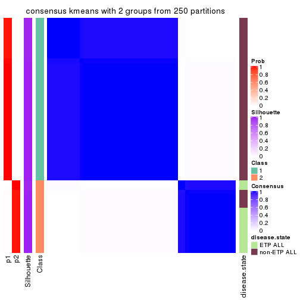
consensus_heatmap(res, k = 3)

consensus_heatmap(res, k = 4)

consensus_heatmap(res, k = 5)
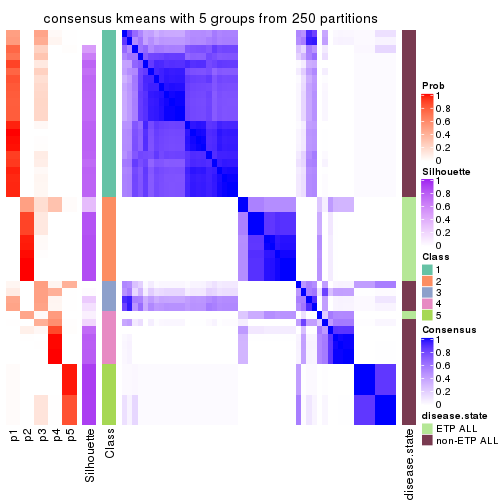
consensus_heatmap(res, k = 6)
Heatmaps for the membership of samples in all partitions to see how consistent they are:
membership_heatmap(res, k = 2)
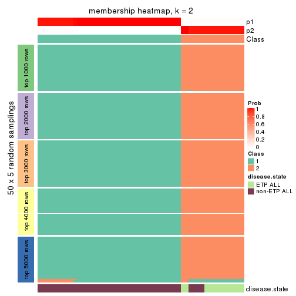
membership_heatmap(res, k = 3)
membership_heatmap(res, k = 4)

membership_heatmap(res, k = 5)
membership_heatmap(res, k = 6)
As soon as we have had the classes for columns, we can look for signatures which are significantly different between classes which can be candidate marks for certain classes. Following are the heatmaps for signatures.
Signature heatmaps where rows are scaled:
get_signatures(res, k = 2)
get_signatures(res, k = 3)
get_signatures(res, k = 4)
get_signatures(res, k = 5)
get_signatures(res, k = 6)
Signature heatmaps where rows are not scaled:
get_signatures(res, k = 2, scale_rows = FALSE)

get_signatures(res, k = 3, scale_rows = FALSE)
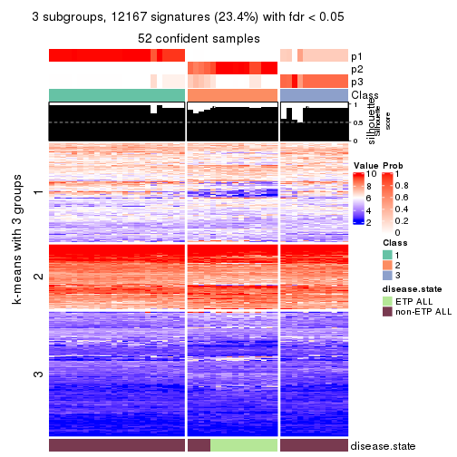
get_signatures(res, k = 4, scale_rows = FALSE)
get_signatures(res, k = 5, scale_rows = FALSE)
get_signatures(res, k = 6, scale_rows = FALSE)
Compare the overlap of signatures from different k:
compare_signatures(res)
get_signature() returns a data frame invisibly. TO get the list of signatures, the function
call should be assigned to a variable explicitly. In following code, if plot argument is set
to FALSE, no heatmap is plotted while only the differential analysis is performed.
# code only for demonstration
tb = get_signature(res, k = ..., plot = FALSE)
An example of the output of tb is:
#> which_row fdr mean_1 mean_2 scaled_mean_1 scaled_mean_2 km
#> 1 38 0.042760348 8.373488 9.131774 -0.5533452 0.5164555 1
#> 2 40 0.018707592 7.106213 8.469186 -0.6173731 0.5762149 1
#> 3 55 0.019134737 10.221463 11.207825 -0.6159697 0.5749050 1
#> 4 59 0.006059896 5.921854 7.869574 -0.6899429 0.6439467 1
#> 5 60 0.018055526 8.928898 10.211722 -0.6204761 0.5791110 1
#> 6 98 0.009384629 15.714769 14.887706 0.6635654 -0.6193277 2
...
The columns in tb are:
which_row: row indices corresponding to the input matrix.fdr: FDR for the differential test. mean_x: The mean value in group x.scaled_mean_x: The mean value in group x after rows are scaled.km: Row groups if k-means clustering is applied to rows.UMAP plot which shows how samples are separated.
dimension_reduction(res, k = 2, method = "UMAP")
dimension_reduction(res, k = 3, method = "UMAP")
dimension_reduction(res, k = 4, method = "UMAP")
dimension_reduction(res, k = 5, method = "UMAP")

dimension_reduction(res, k = 6, method = "UMAP")
Following heatmap shows how subgroups are split when increasing k:
collect_classes(res)
Test correlation between subgroups and known annotations. If the known annotation is numeric, one-way ANOVA test is applied, and if the known annotation is discrete, chi-squared contingency table test is applied.
test_to_known_factors(res)
#> n disease.state(p) k
#> ATC:kmeans 52 2.58e-08 2
#> ATC:kmeans 52 2.39e-08 3
#> ATC:kmeans 49 1.30e-10 4
#> ATC:kmeans 41 6.54e-09 5
#> ATC:kmeans 45 3.98e-09 6
If matrix rows can be associated to genes, consider to use functional_enrichment(res,
...) to perform function enrichment for the signature genes. See this vignette for more detailed explanations.
The object with results only for a single top-value method and a single partition method can be extracted as:
res = res_list["ATC", "skmeans"]
# you can also extract it by
# res = res_list["ATC:skmeans"]
A summary of res and all the functions that can be applied to it:
res
#> A 'ConsensusPartition' object with k = 2, 3, 4, 5, 6.
#> On a matrix with 51979 rows and 52 columns.
#> Top rows (1000, 2000, 3000, 4000, 5000) are extracted by 'ATC' method.
#> Subgroups are detected by 'skmeans' method.
#> Performed in total 1250 partitions by row resampling.
#> Best k for subgroups seems to be 4.
#>
#> Following methods can be applied to this 'ConsensusPartition' object:
#> [1] "cola_report" "collect_classes" "collect_plots"
#> [4] "collect_stats" "colnames" "compare_signatures"
#> [7] "consensus_heatmap" "dimension_reduction" "functional_enrichment"
#> [10] "get_anno_col" "get_anno" "get_classes"
#> [13] "get_consensus" "get_matrix" "get_membership"
#> [16] "get_param" "get_signatures" "get_stats"
#> [19] "is_best_k" "is_stable_k" "membership_heatmap"
#> [22] "ncol" "nrow" "plot_ecdf"
#> [25] "rownames" "select_partition_number" "show"
#> [28] "suggest_best_k" "test_to_known_factors"
collect_plots() function collects all the plots made from res for all k (number of partitions)
into one single page to provide an easy and fast comparison between different k.
collect_plots(res)
The plots are:
k and the heatmap of
predicted classes for each k.k.k.k.All the plots in panels can be made by individual functions and they are plotted later in this section.
select_partition_number() produces several plots showing different
statistics for choosing “optimized” k. There are following statistics:
k;k, the area increased is defined as \(A_k - A_{k-1}\).The detailed explanations of these statistics can be found in the cola vignette.
Generally speaking, lower PAC score, higher mean silhouette score or higher
concordance corresponds to better partition. Rand index and Jaccard index
measure how similar the current partition is compared to partition with k-1.
If they are too similar, we won't accept k is better than k-1.
select_partition_number(res)
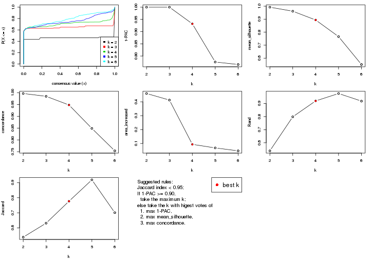
The numeric values for all these statistics can be obtained by get_stats().
get_stats(res)
#> k 1-PAC mean_silhouette concordance area_increased Rand Jaccard
#> 2 2 1.000 0.992 0.997 0.4598 0.538 0.538
#> 3 3 1.000 0.961 0.985 0.4126 0.799 0.631
#> 4 4 0.932 0.894 0.948 0.0935 0.920 0.777
#> 5 5 0.776 0.766 0.849 0.0678 0.977 0.919
#> 6 6 0.765 0.551 0.754 0.0468 0.919 0.701
suggest_best_k() suggests the best \(k\) based on these statistics. The rules are as follows:
suggest_best_k(res)
#> [1] 4
#> attr(,"optional")
#> [1] 2 3
There is also optional best \(k\) = 2 3 that is worth to check.
Following shows the table of the partitions (You need to click the show/hide
code output link to see it). The membership matrix (columns with name p*)
is inferred by
clue::cl_consensus()
function with the SE method. Basically the value in the membership matrix
represents the probability to belong to a certain group. The finall class
label for an item is determined with the group with highest probability it
belongs to.
In get_classes() function, the entropy is calculated from the membership
matrix and the silhouette score is calculated from the consensus matrix.
cbind(get_classes(res, k = 2), get_membership(res, k = 2))
#> class entropy silhouette p1 p2
#> GSM710838 2 0.00 0.989 0.00 1.00
#> GSM710840 2 0.00 0.989 0.00 1.00
#> GSM710842 2 0.00 0.989 0.00 1.00
#> GSM710844 2 0.00 0.989 0.00 1.00
#> GSM710847 2 0.00 0.989 0.00 1.00
#> GSM710848 2 0.00 0.989 0.00 1.00
#> GSM710850 2 0.00 0.989 0.00 1.00
#> GSM710931 2 0.00 0.989 0.00 1.00
#> GSM710932 2 0.00 0.989 0.00 1.00
#> GSM710933 2 0.00 0.989 0.00 1.00
#> GSM710934 2 0.00 0.989 0.00 1.00
#> GSM710935 2 0.00 0.989 0.00 1.00
#> GSM710851 1 0.00 1.000 1.00 0.00
#> GSM710852 1 0.00 1.000 1.00 0.00
#> GSM710854 2 0.00 0.989 0.00 1.00
#> GSM710856 1 0.00 1.000 1.00 0.00
#> GSM710857 1 0.00 1.000 1.00 0.00
#> GSM710859 1 0.00 1.000 1.00 0.00
#> GSM710861 1 0.00 1.000 1.00 0.00
#> GSM710864 1 0.00 1.000 1.00 0.00
#> GSM710866 1 0.00 1.000 1.00 0.00
#> GSM710868 1 0.00 1.000 1.00 0.00
#> GSM710870 1 0.00 1.000 1.00 0.00
#> GSM710872 1 0.00 1.000 1.00 0.00
#> GSM710874 1 0.00 1.000 1.00 0.00
#> GSM710876 1 0.00 1.000 1.00 0.00
#> GSM710878 1 0.00 1.000 1.00 0.00
#> GSM710880 1 0.00 1.000 1.00 0.00
#> GSM710882 1 0.00 1.000 1.00 0.00
#> GSM710884 1 0.00 1.000 1.00 0.00
#> GSM710887 1 0.00 1.000 1.00 0.00
#> GSM710889 1 0.00 1.000 1.00 0.00
#> GSM710891 2 0.00 0.989 0.00 1.00
#> GSM710893 1 0.00 1.000 1.00 0.00
#> GSM710895 1 0.00 1.000 1.00 0.00
#> GSM710897 1 0.00 1.000 1.00 0.00
#> GSM710899 2 0.00 0.989 0.00 1.00
#> GSM710901 1 0.00 1.000 1.00 0.00
#> GSM710903 1 0.00 1.000 1.00 0.00
#> GSM710904 1 0.00 1.000 1.00 0.00
#> GSM710907 1 0.00 1.000 1.00 0.00
#> GSM710909 1 0.00 1.000 1.00 0.00
#> GSM710910 2 0.68 0.780 0.18 0.82
#> GSM710912 2 0.00 0.989 0.00 1.00
#> GSM710914 1 0.00 1.000 1.00 0.00
#> GSM710917 2 0.00 0.989 0.00 1.00
#> GSM710919 1 0.00 1.000 1.00 0.00
#> GSM710921 1 0.00 1.000 1.00 0.00
#> GSM710923 1 0.00 1.000 1.00 0.00
#> GSM710925 1 0.00 1.000 1.00 0.00
#> GSM710927 1 0.00 1.000 1.00 0.00
#> GSM710929 1 0.00 1.000 1.00 0.00
cbind(get_classes(res, k = 3), get_membership(res, k = 3))
#> class entropy silhouette p1 p2 p3
#> GSM710838 2 0.0000 1.000 0.000 1.0 0.000
#> GSM710840 2 0.0000 1.000 0.000 1.0 0.000
#> GSM710842 2 0.0000 1.000 0.000 1.0 0.000
#> GSM710844 2 0.0000 1.000 0.000 1.0 0.000
#> GSM710847 2 0.0000 1.000 0.000 1.0 0.000
#> GSM710848 2 0.0000 1.000 0.000 1.0 0.000
#> GSM710850 2 0.0000 1.000 0.000 1.0 0.000
#> GSM710931 2 0.0000 1.000 0.000 1.0 0.000
#> GSM710932 2 0.0000 1.000 0.000 1.0 0.000
#> GSM710933 2 0.0000 1.000 0.000 1.0 0.000
#> GSM710934 2 0.0000 1.000 0.000 1.0 0.000
#> GSM710935 2 0.0000 1.000 0.000 1.0 0.000
#> GSM710851 1 0.0000 0.983 1.000 0.0 0.000
#> GSM710852 1 0.0000 0.983 1.000 0.0 0.000
#> GSM710854 2 0.0000 1.000 0.000 1.0 0.000
#> GSM710856 1 0.0000 0.983 1.000 0.0 0.000
#> GSM710857 3 0.0000 0.957 0.000 0.0 1.000
#> GSM710859 1 0.0000 0.983 1.000 0.0 0.000
#> GSM710861 1 0.0000 0.983 1.000 0.0 0.000
#> GSM710864 3 0.0000 0.957 0.000 0.0 1.000
#> GSM710866 1 0.0000 0.983 1.000 0.0 0.000
#> GSM710868 3 0.0747 0.943 0.016 0.0 0.984
#> GSM710870 1 0.0000 0.983 1.000 0.0 0.000
#> GSM710872 1 0.0892 0.968 0.980 0.0 0.020
#> GSM710874 1 0.0000 0.983 1.000 0.0 0.000
#> GSM710876 3 0.0000 0.957 0.000 0.0 1.000
#> GSM710878 1 0.0000 0.983 1.000 0.0 0.000
#> GSM710880 3 0.0000 0.957 0.000 0.0 1.000
#> GSM710882 1 0.0000 0.983 1.000 0.0 0.000
#> GSM710884 1 0.0000 0.983 1.000 0.0 0.000
#> GSM710887 3 0.0000 0.957 0.000 0.0 1.000
#> GSM710889 1 0.0000 0.983 1.000 0.0 0.000
#> GSM710891 2 0.0000 1.000 0.000 1.0 0.000
#> GSM710893 1 0.0000 0.983 1.000 0.0 0.000
#> GSM710895 1 0.5760 0.524 0.672 0.0 0.328
#> GSM710897 1 0.0000 0.983 1.000 0.0 0.000
#> GSM710899 2 0.0000 1.000 0.000 1.0 0.000
#> GSM710901 3 0.0000 0.957 0.000 0.0 1.000
#> GSM710903 1 0.0000 0.983 1.000 0.0 0.000
#> GSM710904 1 0.0000 0.983 1.000 0.0 0.000
#> GSM710907 3 0.0000 0.957 0.000 0.0 1.000
#> GSM710909 3 0.0000 0.957 0.000 0.0 1.000
#> GSM710910 3 0.6126 0.328 0.000 0.4 0.600
#> GSM710912 2 0.0000 1.000 0.000 1.0 0.000
#> GSM710914 1 0.0000 0.983 1.000 0.0 0.000
#> GSM710917 2 0.0000 1.000 0.000 1.0 0.000
#> GSM710919 1 0.0000 0.983 1.000 0.0 0.000
#> GSM710921 1 0.0892 0.968 0.980 0.0 0.020
#> GSM710923 1 0.0000 0.983 1.000 0.0 0.000
#> GSM710925 1 0.0000 0.983 1.000 0.0 0.000
#> GSM710927 1 0.0747 0.971 0.984 0.0 0.016
#> GSM710929 3 0.0000 0.957 0.000 0.0 1.000
cbind(get_classes(res, k = 4), get_membership(res, k = 4))
#> class entropy silhouette p1 p2 p3 p4
#> GSM710838 2 0.0000 0.9823 0.000 1.000 0.000 0.000
#> GSM710840 2 0.0000 0.9823 0.000 1.000 0.000 0.000
#> GSM710842 2 0.0921 0.9722 0.000 0.972 0.028 0.000
#> GSM710844 2 0.0000 0.9823 0.000 1.000 0.000 0.000
#> GSM710847 2 0.0000 0.9823 0.000 1.000 0.000 0.000
#> GSM710848 2 0.0000 0.9823 0.000 1.000 0.000 0.000
#> GSM710850 2 0.0000 0.9823 0.000 1.000 0.000 0.000
#> GSM710931 2 0.0921 0.9722 0.000 0.972 0.028 0.000
#> GSM710932 2 0.0000 0.9823 0.000 1.000 0.000 0.000
#> GSM710933 2 0.0000 0.9823 0.000 1.000 0.000 0.000
#> GSM710934 2 0.0000 0.9823 0.000 1.000 0.000 0.000
#> GSM710935 2 0.0000 0.9823 0.000 1.000 0.000 0.000
#> GSM710851 1 0.0707 0.9437 0.980 0.000 0.020 0.000
#> GSM710852 1 0.0000 0.9470 1.000 0.000 0.000 0.000
#> GSM710854 2 0.1022 0.9702 0.000 0.968 0.032 0.000
#> GSM710856 1 0.0707 0.9437 0.980 0.000 0.020 0.000
#> GSM710857 4 0.0000 0.9916 0.000 0.000 0.000 1.000
#> GSM710859 3 0.1022 0.6552 0.032 0.000 0.968 0.000
#> GSM710861 1 0.0000 0.9470 1.000 0.000 0.000 0.000
#> GSM710864 4 0.0000 0.9916 0.000 0.000 0.000 1.000
#> GSM710866 1 0.0000 0.9470 1.000 0.000 0.000 0.000
#> GSM710868 4 0.1389 0.9305 0.048 0.000 0.000 0.952
#> GSM710870 1 0.0817 0.9419 0.976 0.000 0.024 0.000
#> GSM710872 3 0.5666 0.6002 0.348 0.000 0.616 0.036
#> GSM710874 1 0.0707 0.9437 0.980 0.000 0.020 0.000
#> GSM710876 4 0.0000 0.9916 0.000 0.000 0.000 1.000
#> GSM710878 1 0.0000 0.9470 1.000 0.000 0.000 0.000
#> GSM710880 4 0.0000 0.9916 0.000 0.000 0.000 1.000
#> GSM710882 1 0.0000 0.9470 1.000 0.000 0.000 0.000
#> GSM710884 1 0.0188 0.9452 0.996 0.000 0.000 0.004
#> GSM710887 4 0.0000 0.9916 0.000 0.000 0.000 1.000
#> GSM710889 1 0.3172 0.7783 0.840 0.000 0.160 0.000
#> GSM710891 2 0.0000 0.9823 0.000 1.000 0.000 0.000
#> GSM710893 1 0.0188 0.9459 0.996 0.000 0.004 0.000
#> GSM710895 1 0.6951 0.0382 0.544 0.000 0.132 0.324
#> GSM710897 1 0.0000 0.9470 1.000 0.000 0.000 0.000
#> GSM710899 2 0.2081 0.9320 0.000 0.916 0.084 0.000
#> GSM710901 4 0.0000 0.9916 0.000 0.000 0.000 1.000
#> GSM710903 1 0.0592 0.9446 0.984 0.000 0.016 0.000
#> GSM710904 1 0.1022 0.9364 0.968 0.000 0.032 0.000
#> GSM710907 4 0.0000 0.9916 0.000 0.000 0.000 1.000
#> GSM710909 4 0.0000 0.9916 0.000 0.000 0.000 1.000
#> GSM710910 3 0.0672 0.6206 0.000 0.008 0.984 0.008
#> GSM710912 2 0.0707 0.9755 0.000 0.980 0.020 0.000
#> GSM710914 1 0.0707 0.9437 0.980 0.000 0.020 0.000
#> GSM710917 2 0.2868 0.8825 0.000 0.864 0.136 0.000
#> GSM710919 1 0.0188 0.9464 0.996 0.000 0.004 0.000
#> GSM710921 3 0.5376 0.5182 0.396 0.000 0.588 0.016
#> GSM710923 1 0.0000 0.9470 1.000 0.000 0.000 0.000
#> GSM710925 1 0.1302 0.9255 0.956 0.000 0.044 0.000
#> GSM710927 3 0.4313 0.6750 0.260 0.000 0.736 0.004
#> GSM710929 3 0.4855 0.2288 0.000 0.000 0.600 0.400
cbind(get_classes(res, k = 5), get_membership(res, k = 5))
#> class entropy silhouette p1 p2 p3 p4 p5
#> GSM710838 2 0.0000 0.9041 0.000 1.000 0.000 0.000 0.000
#> GSM710840 2 0.0000 0.9041 0.000 1.000 0.000 0.000 0.000
#> GSM710842 2 0.3366 0.7799 0.000 0.768 0.000 0.232 0.000
#> GSM710844 2 0.0000 0.9041 0.000 1.000 0.000 0.000 0.000
#> GSM710847 2 0.0000 0.9041 0.000 1.000 0.000 0.000 0.000
#> GSM710848 2 0.0162 0.9026 0.000 0.996 0.000 0.004 0.000
#> GSM710850 2 0.0000 0.9041 0.000 1.000 0.000 0.000 0.000
#> GSM710931 2 0.3366 0.7799 0.000 0.768 0.000 0.232 0.000
#> GSM710932 2 0.0000 0.9041 0.000 1.000 0.000 0.000 0.000
#> GSM710933 2 0.0000 0.9041 0.000 1.000 0.000 0.000 0.000
#> GSM710934 2 0.0000 0.9041 0.000 1.000 0.000 0.000 0.000
#> GSM710935 2 0.0000 0.9041 0.000 1.000 0.000 0.000 0.000
#> GSM710851 5 0.3980 0.7459 0.000 0.000 0.284 0.008 0.708
#> GSM710852 5 0.2798 0.7953 0.000 0.000 0.140 0.008 0.852
#> GSM710854 2 0.3684 0.7408 0.000 0.720 0.000 0.280 0.000
#> GSM710856 5 0.3398 0.7749 0.000 0.000 0.216 0.004 0.780
#> GSM710857 1 0.0162 0.9589 0.996 0.000 0.000 0.004 0.000
#> GSM710859 4 0.4637 0.7107 0.000 0.000 0.452 0.536 0.012
#> GSM710861 5 0.1626 0.7841 0.000 0.000 0.044 0.016 0.940
#> GSM710864 1 0.0000 0.9603 1.000 0.000 0.000 0.000 0.000
#> GSM710866 5 0.1386 0.7770 0.000 0.000 0.032 0.016 0.952
#> GSM710868 1 0.4775 0.6513 0.756 0.000 0.052 0.032 0.160
#> GSM710870 5 0.3662 0.7609 0.000 0.000 0.252 0.004 0.744
#> GSM710872 3 0.6121 0.5024 0.040 0.000 0.636 0.104 0.220
#> GSM710874 5 0.3934 0.7487 0.000 0.000 0.276 0.008 0.716
#> GSM710876 1 0.0000 0.9603 1.000 0.000 0.000 0.000 0.000
#> GSM710878 5 0.1300 0.7786 0.000 0.000 0.028 0.016 0.956
#> GSM710880 1 0.0324 0.9571 0.992 0.000 0.004 0.004 0.000
#> GSM710882 5 0.1012 0.7870 0.000 0.000 0.020 0.012 0.968
#> GSM710884 5 0.1173 0.7859 0.004 0.000 0.020 0.012 0.964
#> GSM710887 1 0.0000 0.9603 1.000 0.000 0.000 0.000 0.000
#> GSM710889 5 0.5990 0.5684 0.000 0.000 0.296 0.144 0.560
#> GSM710891 2 0.0703 0.8949 0.000 0.976 0.000 0.024 0.000
#> GSM710893 5 0.3432 0.7836 0.000 0.000 0.132 0.040 0.828
#> GSM710895 3 0.7156 0.3751 0.140 0.000 0.428 0.048 0.384
#> GSM710897 5 0.1469 0.7813 0.000 0.000 0.036 0.016 0.948
#> GSM710899 2 0.4045 0.6615 0.000 0.644 0.000 0.356 0.000
#> GSM710901 1 0.0451 0.9538 0.988 0.000 0.004 0.008 0.000
#> GSM710903 5 0.4086 0.7447 0.000 0.000 0.284 0.012 0.704
#> GSM710904 5 0.2825 0.7971 0.000 0.000 0.124 0.016 0.860
#> GSM710907 1 0.0000 0.9603 1.000 0.000 0.000 0.000 0.000
#> GSM710909 1 0.0000 0.9603 1.000 0.000 0.000 0.000 0.000
#> GSM710910 4 0.3969 0.7472 0.000 0.004 0.304 0.692 0.000
#> GSM710912 2 0.0963 0.8913 0.000 0.964 0.000 0.036 0.000
#> GSM710914 5 0.3934 0.7487 0.000 0.000 0.276 0.008 0.716
#> GSM710917 2 0.4300 0.4774 0.000 0.524 0.000 0.476 0.000
#> GSM710919 5 0.1106 0.7858 0.000 0.000 0.024 0.012 0.964
#> GSM710921 3 0.5908 0.5107 0.028 0.000 0.644 0.100 0.228
#> GSM710923 5 0.1195 0.7851 0.000 0.000 0.028 0.012 0.960
#> GSM710925 5 0.4434 0.3862 0.000 0.000 0.460 0.004 0.536
#> GSM710927 3 0.5641 0.3077 0.008 0.000 0.660 0.180 0.152
#> GSM710929 3 0.6158 -0.0328 0.384 0.000 0.480 0.136 0.000
cbind(get_classes(res, k = 6), get_membership(res, k = 6))
#> class entropy silhouette p1 p2 p3 p4 p5 p6
#> GSM710838 2 0.0000 0.8658 0.000 1.000 0.000 0.000 0.000 0.000
#> GSM710840 2 0.0000 0.8658 0.000 1.000 0.000 0.000 0.000 0.000
#> GSM710842 2 0.3756 0.1781 0.000 0.600 0.000 0.400 0.000 0.000
#> GSM710844 2 0.0000 0.8658 0.000 1.000 0.000 0.000 0.000 0.000
#> GSM710847 2 0.0000 0.8658 0.000 1.000 0.000 0.000 0.000 0.000
#> GSM710848 2 0.0000 0.8658 0.000 1.000 0.000 0.000 0.000 0.000
#> GSM710850 2 0.0000 0.8658 0.000 1.000 0.000 0.000 0.000 0.000
#> GSM710931 2 0.3756 0.1799 0.000 0.600 0.000 0.400 0.000 0.000
#> GSM710932 2 0.0000 0.8658 0.000 1.000 0.000 0.000 0.000 0.000
#> GSM710933 2 0.0000 0.8658 0.000 1.000 0.000 0.000 0.000 0.000
#> GSM710934 2 0.0000 0.8658 0.000 1.000 0.000 0.000 0.000 0.000
#> GSM710935 2 0.0000 0.8658 0.000 1.000 0.000 0.000 0.000 0.000
#> GSM710851 5 0.3982 0.7292 0.460 0.000 0.004 0.000 0.536 0.000
#> GSM710852 1 0.3820 0.1223 0.700 0.000 0.008 0.008 0.284 0.000
#> GSM710854 2 0.4136 0.0127 0.000 0.560 0.012 0.428 0.000 0.000
#> GSM710856 1 0.3923 -0.4900 0.580 0.000 0.000 0.004 0.416 0.000
#> GSM710857 6 0.1026 0.9137 0.004 0.000 0.008 0.008 0.012 0.968
#> GSM710859 3 0.5944 0.1564 0.008 0.000 0.500 0.196 0.296 0.000
#> GSM710861 1 0.3764 0.5171 0.792 0.000 0.012 0.056 0.140 0.000
#> GSM710864 6 0.0291 0.9210 0.000 0.000 0.000 0.004 0.004 0.992
#> GSM710866 1 0.3919 0.5239 0.796 0.000 0.020 0.056 0.124 0.004
#> GSM710868 6 0.7146 0.3270 0.196 0.000 0.036 0.096 0.144 0.528
#> GSM710870 1 0.4025 -0.4854 0.576 0.000 0.000 0.008 0.416 0.000
#> GSM710872 3 0.4378 0.6377 0.176 0.000 0.748 0.004 0.036 0.036
#> GSM710874 5 0.3993 0.7271 0.476 0.000 0.004 0.000 0.520 0.000
#> GSM710876 6 0.0146 0.9212 0.000 0.000 0.000 0.000 0.004 0.996
#> GSM710878 1 0.3735 0.5226 0.800 0.000 0.016 0.056 0.128 0.000
#> GSM710880 6 0.1078 0.9124 0.000 0.000 0.012 0.008 0.016 0.964
#> GSM710882 1 0.0260 0.5992 0.992 0.000 0.000 0.000 0.008 0.000
#> GSM710884 1 0.0551 0.6014 0.984 0.000 0.008 0.000 0.004 0.004
#> GSM710887 6 0.0146 0.9217 0.000 0.000 0.000 0.004 0.000 0.996
#> GSM710889 1 0.6027 -0.3109 0.448 0.000 0.080 0.052 0.420 0.000
#> GSM710891 2 0.1194 0.8290 0.000 0.956 0.004 0.032 0.008 0.000
#> GSM710893 1 0.4706 0.3064 0.688 0.000 0.020 0.060 0.232 0.000
#> GSM710895 3 0.7160 0.3917 0.352 0.000 0.432 0.036 0.084 0.096
#> GSM710897 1 0.1340 0.5884 0.948 0.000 0.004 0.008 0.040 0.000
#> GSM710899 4 0.4588 0.1923 0.000 0.420 0.024 0.548 0.008 0.000
#> GSM710901 6 0.1232 0.9066 0.000 0.000 0.016 0.004 0.024 0.956
#> GSM710903 5 0.4246 0.6997 0.452 0.000 0.016 0.000 0.532 0.000
#> GSM710904 1 0.3000 0.4161 0.824 0.000 0.016 0.004 0.156 0.000
#> GSM710907 6 0.0146 0.9217 0.000 0.000 0.000 0.004 0.000 0.996
#> GSM710909 6 0.0146 0.9217 0.000 0.000 0.000 0.004 0.000 0.996
#> GSM710910 4 0.6053 -0.2980 0.000 0.000 0.372 0.372 0.256 0.000
#> GSM710912 2 0.1588 0.7988 0.000 0.924 0.004 0.072 0.000 0.000
#> GSM710914 5 0.3864 0.7214 0.480 0.000 0.000 0.000 0.520 0.000
#> GSM710917 4 0.3772 0.3768 0.000 0.320 0.004 0.672 0.004 0.000
#> GSM710919 1 0.0767 0.6019 0.976 0.000 0.008 0.000 0.012 0.004
#> GSM710921 3 0.4407 0.6364 0.200 0.000 0.728 0.004 0.056 0.012
#> GSM710923 1 0.0767 0.6019 0.976 0.000 0.008 0.000 0.012 0.004
#> GSM710925 5 0.6082 0.3236 0.324 0.000 0.284 0.000 0.392 0.000
#> GSM710927 3 0.4960 0.5957 0.108 0.000 0.704 0.016 0.164 0.008
#> GSM710929 3 0.4462 0.3429 0.000 0.000 0.612 0.020 0.012 0.356
Heatmaps for the consensus matrix. It visualizes the probability of two samples to be in a same group.
consensus_heatmap(res, k = 2)
consensus_heatmap(res, k = 3)
consensus_heatmap(res, k = 4)
consensus_heatmap(res, k = 5)
consensus_heatmap(res, k = 6)
Heatmaps for the membership of samples in all partitions to see how consistent they are:
membership_heatmap(res, k = 2)
membership_heatmap(res, k = 3)
membership_heatmap(res, k = 4)
membership_heatmap(res, k = 5)
membership_heatmap(res, k = 6)
As soon as we have had the classes for columns, we can look for signatures which are significantly different between classes which can be candidate marks for certain classes. Following are the heatmaps for signatures.
Signature heatmaps where rows are scaled:
get_signatures(res, k = 2)
get_signatures(res, k = 3)
get_signatures(res, k = 4)
get_signatures(res, k = 5)
get_signatures(res, k = 6)
Signature heatmaps where rows are not scaled:
get_signatures(res, k = 2, scale_rows = FALSE)
get_signatures(res, k = 3, scale_rows = FALSE)
get_signatures(res, k = 4, scale_rows = FALSE)
get_signatures(res, k = 5, scale_rows = FALSE)
get_signatures(res, k = 6, scale_rows = FALSE)
Compare the overlap of signatures from different k:
compare_signatures(res)
get_signature() returns a data frame invisibly. TO get the list of signatures, the function
call should be assigned to a variable explicitly. In following code, if plot argument is set
to FALSE, no heatmap is plotted while only the differential analysis is performed.
# code only for demonstration
tb = get_signature(res, k = ..., plot = FALSE)
An example of the output of tb is:
#> which_row fdr mean_1 mean_2 scaled_mean_1 scaled_mean_2 km
#> 1 38 0.042760348 8.373488 9.131774 -0.5533452 0.5164555 1
#> 2 40 0.018707592 7.106213 8.469186 -0.6173731 0.5762149 1
#> 3 55 0.019134737 10.221463 11.207825 -0.6159697 0.5749050 1
#> 4 59 0.006059896 5.921854 7.869574 -0.6899429 0.6439467 1
#> 5 60 0.018055526 8.928898 10.211722 -0.6204761 0.5791110 1
#> 6 98 0.009384629 15.714769 14.887706 0.6635654 -0.6193277 2
...
The columns in tb are:
which_row: row indices corresponding to the input matrix.fdr: FDR for the differential test. mean_x: The mean value in group x.scaled_mean_x: The mean value in group x after rows are scaled.km: Row groups if k-means clustering is applied to rows.UMAP plot which shows how samples are separated.
dimension_reduction(res, k = 2, method = "UMAP")
dimension_reduction(res, k = 3, method = "UMAP")
dimension_reduction(res, k = 4, method = "UMAP")
dimension_reduction(res, k = 5, method = "UMAP")
dimension_reduction(res, k = 6, method = "UMAP")
Following heatmap shows how subgroups are split when increasing k:
collect_classes(res)
Test correlation between subgroups and known annotations. If the known annotation is numeric, one-way ANOVA test is applied, and if the known annotation is discrete, chi-squared contingency table test is applied.
test_to_known_factors(res)
#> n disease.state(p) k
#> ATC:skmeans 52 3.73e-07 2
#> ATC:skmeans 51 1.53e-07 3
#> ATC:skmeans 50 1.01e-06 4
#> ATC:skmeans 47 2.76e-06 5
#> ATC:skmeans 35 2.15e-05 6
If matrix rows can be associated to genes, consider to use functional_enrichment(res,
...) to perform function enrichment for the signature genes. See this vignette for more detailed explanations.
The object with results only for a single top-value method and a single partition method can be extracted as:
res = res_list["ATC", "pam"]
# you can also extract it by
# res = res_list["ATC:pam"]
A summary of res and all the functions that can be applied to it:
res
#> A 'ConsensusPartition' object with k = 2, 3, 4, 5, 6.
#> On a matrix with 51979 rows and 52 columns.
#> Top rows (1000, 2000, 3000, 4000, 5000) are extracted by 'ATC' method.
#> Subgroups are detected by 'pam' method.
#> Performed in total 1250 partitions by row resampling.
#> Best k for subgroups seems to be 6.
#>
#> Following methods can be applied to this 'ConsensusPartition' object:
#> [1] "cola_report" "collect_classes" "collect_plots"
#> [4] "collect_stats" "colnames" "compare_signatures"
#> [7] "consensus_heatmap" "dimension_reduction" "functional_enrichment"
#> [10] "get_anno_col" "get_anno" "get_classes"
#> [13] "get_consensus" "get_matrix" "get_membership"
#> [16] "get_param" "get_signatures" "get_stats"
#> [19] "is_best_k" "is_stable_k" "membership_heatmap"
#> [22] "ncol" "nrow" "plot_ecdf"
#> [25] "rownames" "select_partition_number" "show"
#> [28] "suggest_best_k" "test_to_known_factors"
collect_plots() function collects all the plots made from res for all k (number of partitions)
into one single page to provide an easy and fast comparison between different k.
collect_plots(res)
The plots are:
k and the heatmap of
predicted classes for each k.k.k.k.All the plots in panels can be made by individual functions and they are plotted later in this section.
select_partition_number() produces several plots showing different
statistics for choosing “optimized” k. There are following statistics:
k;k, the area increased is defined as \(A_k - A_{k-1}\).The detailed explanations of these statistics can be found in the cola vignette.
Generally speaking, lower PAC score, higher mean silhouette score or higher
concordance corresponds to better partition. Rand index and Jaccard index
measure how similar the current partition is compared to partition with k-1.
If they are too similar, we won't accept k is better than k-1.
select_partition_number(res)
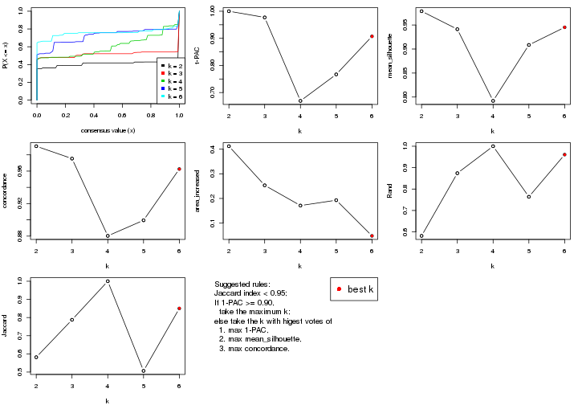
The numeric values for all these statistics can be obtained by get_stats().
get_stats(res)
#> k 1-PAC mean_silhouette concordance area_increased Rand Jaccard
#> 2 2 1.000 0.979 0.991 0.4117 0.581 0.581
#> 3 3 0.977 0.941 0.975 0.2533 0.874 0.788
#> 4 4 0.669 0.792 0.880 0.1712 1.000 1.000
#> 5 5 0.767 0.908 0.899 0.1930 0.764 0.506
#> 6 6 0.907 0.945 0.963 0.0484 0.961 0.850
suggest_best_k() suggests the best \(k\) based on these statistics. The rules are as follows:
suggest_best_k(res)
#> [1] 6
#> attr(,"optional")
#> [1] 2 3
There is also optional best \(k\) = 2 3 that is worth to check.
Following shows the table of the partitions (You need to click the show/hide
code output link to see it). The membership matrix (columns with name p*)
is inferred by
clue::cl_consensus()
function with the SE method. Basically the value in the membership matrix
represents the probability to belong to a certain group. The finall class
label for an item is determined with the group with highest probability it
belongs to.
In get_classes() function, the entropy is calculated from the membership
matrix and the silhouette score is calculated from the consensus matrix.
cbind(get_classes(res, k = 2), get_membership(res, k = 2))
#> class entropy silhouette p1 p2
#> GSM710838 2 0.000 0.967 0.000 1.000
#> GSM710840 2 0.000 0.967 0.000 1.000
#> GSM710842 2 0.000 0.967 0.000 1.000
#> GSM710844 2 0.000 0.967 0.000 1.000
#> GSM710847 2 0.000 0.967 0.000 1.000
#> GSM710848 2 0.000 0.967 0.000 1.000
#> GSM710850 2 0.000 0.967 0.000 1.000
#> GSM710931 2 0.000 0.967 0.000 1.000
#> GSM710932 2 0.000 0.967 0.000 1.000
#> GSM710933 2 0.000 0.967 0.000 1.000
#> GSM710934 2 0.000 0.967 0.000 1.000
#> GSM710935 2 0.000 0.967 0.000 1.000
#> GSM710851 1 0.000 0.999 1.000 0.000
#> GSM710852 1 0.000 0.999 1.000 0.000
#> GSM710854 2 0.574 0.838 0.136 0.864
#> GSM710856 1 0.000 0.999 1.000 0.000
#> GSM710857 1 0.000 0.999 1.000 0.000
#> GSM710859 1 0.000 0.999 1.000 0.000
#> GSM710861 1 0.000 0.999 1.000 0.000
#> GSM710864 1 0.000 0.999 1.000 0.000
#> GSM710866 1 0.000 0.999 1.000 0.000
#> GSM710868 1 0.000 0.999 1.000 0.000
#> GSM710870 1 0.000 0.999 1.000 0.000
#> GSM710872 1 0.000 0.999 1.000 0.000
#> GSM710874 1 0.000 0.999 1.000 0.000
#> GSM710876 1 0.000 0.999 1.000 0.000
#> GSM710878 1 0.000 0.999 1.000 0.000
#> GSM710880 1 0.000 0.999 1.000 0.000
#> GSM710882 1 0.000 0.999 1.000 0.000
#> GSM710884 1 0.000 0.999 1.000 0.000
#> GSM710887 1 0.000 0.999 1.000 0.000
#> GSM710889 1 0.000 0.999 1.000 0.000
#> GSM710891 2 0.900 0.553 0.316 0.684
#> GSM710893 1 0.000 0.999 1.000 0.000
#> GSM710895 1 0.000 0.999 1.000 0.000
#> GSM710897 1 0.000 0.999 1.000 0.000
#> GSM710899 1 0.224 0.961 0.964 0.036
#> GSM710901 1 0.000 0.999 1.000 0.000
#> GSM710903 1 0.000 0.999 1.000 0.000
#> GSM710904 1 0.000 0.999 1.000 0.000
#> GSM710907 1 0.000 0.999 1.000 0.000
#> GSM710909 1 0.000 0.999 1.000 0.000
#> GSM710910 1 0.000 0.999 1.000 0.000
#> GSM710912 2 0.000 0.967 0.000 1.000
#> GSM710914 1 0.000 0.999 1.000 0.000
#> GSM710917 1 0.000 0.999 1.000 0.000
#> GSM710919 1 0.000 0.999 1.000 0.000
#> GSM710921 1 0.000 0.999 1.000 0.000
#> GSM710923 1 0.000 0.999 1.000 0.000
#> GSM710925 1 0.000 0.999 1.000 0.000
#> GSM710927 1 0.000 0.999 1.000 0.000
#> GSM710929 1 0.000 0.999 1.000 0.000
cbind(get_classes(res, k = 3), get_membership(res, k = 3))
#> class entropy silhouette p1 p2 p3
#> GSM710838 2 0.0000 0.959 0.000 1.000 0.000
#> GSM710840 2 0.0000 0.959 0.000 1.000 0.000
#> GSM710842 3 0.5706 0.574 0.000 0.320 0.680
#> GSM710844 2 0.0000 0.959 0.000 1.000 0.000
#> GSM710847 2 0.0000 0.959 0.000 1.000 0.000
#> GSM710848 2 0.5760 0.512 0.000 0.672 0.328
#> GSM710850 2 0.0000 0.959 0.000 1.000 0.000
#> GSM710931 3 0.5706 0.574 0.000 0.320 0.680
#> GSM710932 2 0.0000 0.959 0.000 1.000 0.000
#> GSM710933 2 0.0000 0.959 0.000 1.000 0.000
#> GSM710934 2 0.0000 0.959 0.000 1.000 0.000
#> GSM710935 2 0.0000 0.959 0.000 1.000 0.000
#> GSM710851 1 0.0000 0.999 1.000 0.000 0.000
#> GSM710852 1 0.0000 0.999 1.000 0.000 0.000
#> GSM710854 3 0.0000 0.830 0.000 0.000 1.000
#> GSM710856 1 0.0000 0.999 1.000 0.000 0.000
#> GSM710857 1 0.0000 0.999 1.000 0.000 0.000
#> GSM710859 1 0.0237 0.996 0.996 0.000 0.004
#> GSM710861 1 0.0000 0.999 1.000 0.000 0.000
#> GSM710864 1 0.0000 0.999 1.000 0.000 0.000
#> GSM710866 1 0.0000 0.999 1.000 0.000 0.000
#> GSM710868 1 0.0000 0.999 1.000 0.000 0.000
#> GSM710870 1 0.0000 0.999 1.000 0.000 0.000
#> GSM710872 1 0.0000 0.999 1.000 0.000 0.000
#> GSM710874 1 0.0000 0.999 1.000 0.000 0.000
#> GSM710876 1 0.0000 0.999 1.000 0.000 0.000
#> GSM710878 1 0.0000 0.999 1.000 0.000 0.000
#> GSM710880 1 0.0000 0.999 1.000 0.000 0.000
#> GSM710882 1 0.0000 0.999 1.000 0.000 0.000
#> GSM710884 1 0.0000 0.999 1.000 0.000 0.000
#> GSM710887 1 0.0000 0.999 1.000 0.000 0.000
#> GSM710889 1 0.0000 0.999 1.000 0.000 0.000
#> GSM710891 3 0.0000 0.830 0.000 0.000 1.000
#> GSM710893 1 0.0000 0.999 1.000 0.000 0.000
#> GSM710895 1 0.0000 0.999 1.000 0.000 0.000
#> GSM710897 1 0.0000 0.999 1.000 0.000 0.000
#> GSM710899 3 0.0000 0.830 0.000 0.000 1.000
#> GSM710901 1 0.0237 0.996 0.996 0.000 0.004
#> GSM710903 1 0.0000 0.999 1.000 0.000 0.000
#> GSM710904 1 0.0000 0.999 1.000 0.000 0.000
#> GSM710907 1 0.0237 0.996 0.996 0.000 0.004
#> GSM710909 1 0.0000 0.999 1.000 0.000 0.000
#> GSM710910 3 0.5327 0.539 0.272 0.000 0.728
#> GSM710912 3 0.1031 0.823 0.000 0.024 0.976
#> GSM710914 1 0.0000 0.999 1.000 0.000 0.000
#> GSM710917 3 0.0000 0.830 0.000 0.000 1.000
#> GSM710919 1 0.0000 0.999 1.000 0.000 0.000
#> GSM710921 1 0.0000 0.999 1.000 0.000 0.000
#> GSM710923 1 0.0000 0.999 1.000 0.000 0.000
#> GSM710925 1 0.0000 0.999 1.000 0.000 0.000
#> GSM710927 1 0.0000 0.999 1.000 0.000 0.000
#> GSM710929 1 0.0237 0.996 0.996 0.000 0.004
cbind(get_classes(res, k = 4), get_membership(res, k = 4))
#> class entropy silhouette p1 p2 p3 p4
#> GSM710838 2 0.000 0.954 0.000 1.000 0.000 NA
#> GSM710840 2 0.000 0.954 0.000 1.000 0.000 NA
#> GSM710842 3 0.529 0.726 0.000 0.012 0.584 NA
#> GSM710844 2 0.000 0.954 0.000 1.000 0.000 NA
#> GSM710847 2 0.000 0.954 0.000 1.000 0.000 NA
#> GSM710848 2 0.491 0.394 0.000 0.580 0.420 NA
#> GSM710850 2 0.000 0.954 0.000 1.000 0.000 NA
#> GSM710931 3 0.529 0.726 0.000 0.012 0.584 NA
#> GSM710932 2 0.000 0.954 0.000 1.000 0.000 NA
#> GSM710933 2 0.000 0.954 0.000 1.000 0.000 NA
#> GSM710934 2 0.000 0.954 0.000 1.000 0.000 NA
#> GSM710935 2 0.000 0.954 0.000 1.000 0.000 NA
#> GSM710851 1 0.265 0.822 0.880 0.000 0.000 NA
#> GSM710852 1 0.265 0.822 0.880 0.000 0.000 NA
#> GSM710854 3 0.000 0.806 0.000 0.000 1.000 NA
#> GSM710856 1 0.265 0.822 0.880 0.000 0.000 NA
#> GSM710857 1 0.000 0.865 1.000 0.000 0.000 NA
#> GSM710859 1 0.387 0.679 0.772 0.000 0.228 NA
#> GSM710861 1 0.121 0.854 0.960 0.000 0.000 NA
#> GSM710864 1 0.499 0.441 0.524 0.000 0.000 NA
#> GSM710866 1 0.000 0.865 1.000 0.000 0.000 NA
#> GSM710868 1 0.000 0.865 1.000 0.000 0.000 NA
#> GSM710870 1 0.265 0.822 0.880 0.000 0.000 NA
#> GSM710872 1 0.000 0.865 1.000 0.000 0.000 NA
#> GSM710874 1 0.265 0.822 0.880 0.000 0.000 NA
#> GSM710876 1 0.499 0.441 0.524 0.000 0.000 NA
#> GSM710878 1 0.000 0.865 1.000 0.000 0.000 NA
#> GSM710880 1 0.494 0.495 0.564 0.000 0.000 NA
#> GSM710882 1 0.000 0.865 1.000 0.000 0.000 NA
#> GSM710884 1 0.000 0.865 1.000 0.000 0.000 NA
#> GSM710887 1 0.499 0.441 0.524 0.000 0.000 NA
#> GSM710889 1 0.000 0.865 1.000 0.000 0.000 NA
#> GSM710891 3 0.000 0.806 0.000 0.000 1.000 NA
#> GSM710893 1 0.000 0.865 1.000 0.000 0.000 NA
#> GSM710895 1 0.000 0.865 1.000 0.000 0.000 NA
#> GSM710897 1 0.000 0.865 1.000 0.000 0.000 NA
#> GSM710899 3 0.000 0.806 0.000 0.000 1.000 NA
#> GSM710901 1 0.497 0.721 0.772 0.000 0.088 NA
#> GSM710903 1 0.265 0.822 0.880 0.000 0.000 NA
#> GSM710904 1 0.000 0.865 1.000 0.000 0.000 NA
#> GSM710907 1 0.384 0.728 0.776 0.000 0.000 NA
#> GSM710909 1 0.499 0.441 0.524 0.000 0.000 NA
#> GSM710910 3 0.452 0.417 0.320 0.000 0.680 NA
#> GSM710912 3 0.425 0.770 0.000 0.000 0.724 NA
#> GSM710914 1 0.265 0.822 0.880 0.000 0.000 NA
#> GSM710917 3 0.000 0.806 0.000 0.000 1.000 NA
#> GSM710919 1 0.000 0.865 1.000 0.000 0.000 NA
#> GSM710921 1 0.000 0.865 1.000 0.000 0.000 NA
#> GSM710923 1 0.000 0.865 1.000 0.000 0.000 NA
#> GSM710925 1 0.265 0.822 0.880 0.000 0.000 NA
#> GSM710927 1 0.000 0.865 1.000 0.000 0.000 NA
#> GSM710929 1 0.387 0.679 0.772 0.000 0.228 NA
cbind(get_classes(res, k = 5), get_membership(res, k = 5))
#> class entropy silhouette p1 p2 p3 p4 p5
#> GSM710838 2 0.0000 0.951 0.000 1.000 0.000 0.000 0.000
#> GSM710840 2 0.0000 0.951 0.000 1.000 0.000 0.000 0.000
#> GSM710842 3 0.5839 0.702 0.000 0.000 0.560 0.324 0.116
#> GSM710844 2 0.0000 0.951 0.000 1.000 0.000 0.000 0.000
#> GSM710847 2 0.0000 0.951 0.000 1.000 0.000 0.000 0.000
#> GSM710848 2 0.4268 0.324 0.000 0.556 0.444 0.000 0.000
#> GSM710850 2 0.0000 0.951 0.000 1.000 0.000 0.000 0.000
#> GSM710931 3 0.5839 0.702 0.000 0.000 0.560 0.324 0.116
#> GSM710932 2 0.0000 0.951 0.000 1.000 0.000 0.000 0.000
#> GSM710933 2 0.0000 0.951 0.000 1.000 0.000 0.000 0.000
#> GSM710934 2 0.0000 0.951 0.000 1.000 0.000 0.000 0.000
#> GSM710935 2 0.0000 0.951 0.000 1.000 0.000 0.000 0.000
#> GSM710851 5 0.2230 1.000 0.116 0.000 0.000 0.000 0.884
#> GSM710852 5 0.2230 1.000 0.116 0.000 0.000 0.000 0.884
#> GSM710854 3 0.0000 0.803 0.000 0.000 1.000 0.000 0.000
#> GSM710856 5 0.2230 1.000 0.116 0.000 0.000 0.000 0.884
#> GSM710857 1 0.0000 0.975 1.000 0.000 0.000 0.000 0.000
#> GSM710859 1 0.0404 0.961 0.988 0.000 0.012 0.000 0.000
#> GSM710861 1 0.3452 0.518 0.756 0.000 0.000 0.000 0.244
#> GSM710864 4 0.3913 0.971 0.324 0.000 0.000 0.676 0.000
#> GSM710866 1 0.0000 0.975 1.000 0.000 0.000 0.000 0.000
#> GSM710868 1 0.0000 0.975 1.000 0.000 0.000 0.000 0.000
#> GSM710870 5 0.2230 1.000 0.116 0.000 0.000 0.000 0.884
#> GSM710872 1 0.0000 0.975 1.000 0.000 0.000 0.000 0.000
#> GSM710874 5 0.2230 1.000 0.116 0.000 0.000 0.000 0.884
#> GSM710876 4 0.3913 0.971 0.324 0.000 0.000 0.676 0.000
#> GSM710878 1 0.0000 0.975 1.000 0.000 0.000 0.000 0.000
#> GSM710880 4 0.4182 0.871 0.400 0.000 0.000 0.600 0.000
#> GSM710882 1 0.0000 0.975 1.000 0.000 0.000 0.000 0.000
#> GSM710884 1 0.0000 0.975 1.000 0.000 0.000 0.000 0.000
#> GSM710887 4 0.3913 0.971 0.324 0.000 0.000 0.676 0.000
#> GSM710889 1 0.0000 0.975 1.000 0.000 0.000 0.000 0.000
#> GSM710891 3 0.0000 0.803 0.000 0.000 1.000 0.000 0.000
#> GSM710893 1 0.0000 0.975 1.000 0.000 0.000 0.000 0.000
#> GSM710895 1 0.0000 0.975 1.000 0.000 0.000 0.000 0.000
#> GSM710897 1 0.0000 0.975 1.000 0.000 0.000 0.000 0.000
#> GSM710899 3 0.0000 0.803 0.000 0.000 1.000 0.000 0.000
#> GSM710901 1 0.0510 0.956 0.984 0.000 0.000 0.016 0.000
#> GSM710903 5 0.2230 1.000 0.116 0.000 0.000 0.000 0.884
#> GSM710904 1 0.0000 0.975 1.000 0.000 0.000 0.000 0.000
#> GSM710907 1 0.0404 0.961 0.988 0.000 0.000 0.012 0.000
#> GSM710909 4 0.3913 0.971 0.324 0.000 0.000 0.676 0.000
#> GSM710910 3 0.3913 0.272 0.324 0.000 0.676 0.000 0.000
#> GSM710912 3 0.4223 0.759 0.000 0.000 0.724 0.248 0.028
#> GSM710914 5 0.2230 1.000 0.116 0.000 0.000 0.000 0.884
#> GSM710917 3 0.0000 0.803 0.000 0.000 1.000 0.000 0.000
#> GSM710919 1 0.0000 0.975 1.000 0.000 0.000 0.000 0.000
#> GSM710921 1 0.0000 0.975 1.000 0.000 0.000 0.000 0.000
#> GSM710923 1 0.0000 0.975 1.000 0.000 0.000 0.000 0.000
#> GSM710925 5 0.2230 1.000 0.116 0.000 0.000 0.000 0.884
#> GSM710927 1 0.0000 0.975 1.000 0.000 0.000 0.000 0.000
#> GSM710929 1 0.0510 0.956 0.984 0.000 0.000 0.016 0.000
cbind(get_classes(res, k = 6), get_membership(res, k = 6))
#> class entropy silhouette p1 p2 p3 p4 p5 p6
#> GSM710838 2 0.0363 0.953 0.000 0.988 0.000 0.000 0.000 0.012
#> GSM710840 2 0.0632 0.951 0.000 0.976 0.000 0.000 0.000 0.024
#> GSM710842 4 0.0260 1.000 0.000 0.000 0.008 0.992 0.000 0.000
#> GSM710844 2 0.1866 0.939 0.000 0.908 0.000 0.008 0.000 0.084
#> GSM710847 2 0.1643 0.947 0.000 0.924 0.000 0.008 0.000 0.068
#> GSM710848 3 0.0713 0.920 0.000 0.028 0.972 0.000 0.000 0.000
#> GSM710850 2 0.1866 0.939 0.000 0.908 0.000 0.008 0.000 0.084
#> GSM710931 4 0.0260 1.000 0.000 0.000 0.008 0.992 0.000 0.000
#> GSM710932 2 0.0632 0.951 0.000 0.976 0.000 0.000 0.000 0.024
#> GSM710933 2 0.1866 0.939 0.000 0.908 0.000 0.008 0.000 0.084
#> GSM710934 2 0.0363 0.953 0.000 0.988 0.000 0.000 0.000 0.012
#> GSM710935 2 0.0632 0.951 0.000 0.976 0.000 0.000 0.000 0.024
#> GSM710851 5 0.0000 1.000 0.000 0.000 0.000 0.000 1.000 0.000
#> GSM710852 5 0.0000 1.000 0.000 0.000 0.000 0.000 1.000 0.000
#> GSM710854 3 0.0000 0.934 0.000 0.000 1.000 0.000 0.000 0.000
#> GSM710856 5 0.0000 1.000 0.000 0.000 0.000 0.000 1.000 0.000
#> GSM710857 1 0.0000 0.970 1.000 0.000 0.000 0.000 0.000 0.000
#> GSM710859 1 0.0000 0.970 1.000 0.000 0.000 0.000 0.000 0.000
#> GSM710861 1 0.3351 0.559 0.712 0.000 0.000 0.000 0.288 0.000
#> GSM710864 6 0.1910 0.962 0.108 0.000 0.000 0.000 0.000 0.892
#> GSM710866 1 0.0000 0.970 1.000 0.000 0.000 0.000 0.000 0.000
#> GSM710868 1 0.0000 0.970 1.000 0.000 0.000 0.000 0.000 0.000
#> GSM710870 5 0.0000 1.000 0.000 0.000 0.000 0.000 1.000 0.000
#> GSM710872 1 0.0000 0.970 1.000 0.000 0.000 0.000 0.000 0.000
#> GSM710874 5 0.0000 1.000 0.000 0.000 0.000 0.000 1.000 0.000
#> GSM710876 6 0.1910 0.962 0.108 0.000 0.000 0.000 0.000 0.892
#> GSM710878 1 0.0000 0.970 1.000 0.000 0.000 0.000 0.000 0.000
#> GSM710880 6 0.2697 0.847 0.188 0.000 0.000 0.000 0.000 0.812
#> GSM710882 1 0.0000 0.970 1.000 0.000 0.000 0.000 0.000 0.000
#> GSM710884 1 0.0000 0.970 1.000 0.000 0.000 0.000 0.000 0.000
#> GSM710887 6 0.1910 0.962 0.108 0.000 0.000 0.000 0.000 0.892
#> GSM710889 1 0.0000 0.970 1.000 0.000 0.000 0.000 0.000 0.000
#> GSM710891 3 0.0260 0.931 0.000 0.008 0.992 0.000 0.000 0.000
#> GSM710893 1 0.0000 0.970 1.000 0.000 0.000 0.000 0.000 0.000
#> GSM710895 1 0.0000 0.970 1.000 0.000 0.000 0.000 0.000 0.000
#> GSM710897 1 0.0000 0.970 1.000 0.000 0.000 0.000 0.000 0.000
#> GSM710899 3 0.0000 0.934 0.000 0.000 1.000 0.000 0.000 0.000
#> GSM710901 1 0.1075 0.921 0.952 0.000 0.000 0.000 0.000 0.048
#> GSM710903 5 0.0000 1.000 0.000 0.000 0.000 0.000 1.000 0.000
#> GSM710904 1 0.0000 0.970 1.000 0.000 0.000 0.000 0.000 0.000
#> GSM710907 1 0.0000 0.970 1.000 0.000 0.000 0.000 0.000 0.000
#> GSM710909 6 0.1910 0.962 0.108 0.000 0.000 0.000 0.000 0.892
#> GSM710910 1 0.2697 0.740 0.812 0.000 0.188 0.000 0.000 0.000
#> GSM710912 3 0.3865 0.630 0.000 0.032 0.720 0.248 0.000 0.000
#> GSM710914 5 0.0000 1.000 0.000 0.000 0.000 0.000 1.000 0.000
#> GSM710917 3 0.0000 0.934 0.000 0.000 1.000 0.000 0.000 0.000
#> GSM710919 1 0.0000 0.970 1.000 0.000 0.000 0.000 0.000 0.000
#> GSM710921 1 0.0000 0.970 1.000 0.000 0.000 0.000 0.000 0.000
#> GSM710923 1 0.0000 0.970 1.000 0.000 0.000 0.000 0.000 0.000
#> GSM710925 5 0.0000 1.000 0.000 0.000 0.000 0.000 1.000 0.000
#> GSM710927 1 0.0000 0.970 1.000 0.000 0.000 0.000 0.000 0.000
#> GSM710929 1 0.0000 0.970 1.000 0.000 0.000 0.000 0.000 0.000
Heatmaps for the consensus matrix. It visualizes the probability of two samples to be in a same group.
consensus_heatmap(res, k = 2)
consensus_heatmap(res, k = 3)
consensus_heatmap(res, k = 4)
consensus_heatmap(res, k = 5)
consensus_heatmap(res, k = 6)
Heatmaps for the membership of samples in all partitions to see how consistent they are:
membership_heatmap(res, k = 2)
membership_heatmap(res, k = 3)
membership_heatmap(res, k = 4)
membership_heatmap(res, k = 5)
membership_heatmap(res, k = 6)
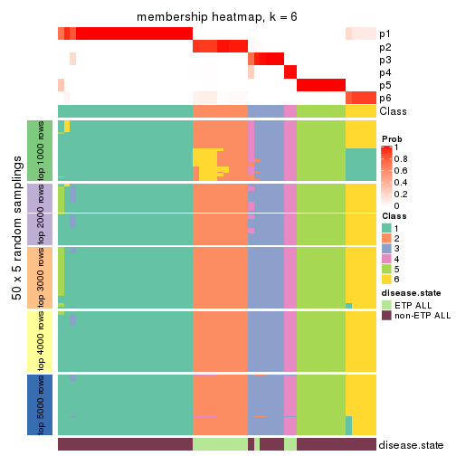
As soon as we have had the classes for columns, we can look for signatures which are significantly different between classes which can be candidate marks for certain classes. Following are the heatmaps for signatures.
Signature heatmaps where rows are scaled:
get_signatures(res, k = 2)
get_signatures(res, k = 3)
get_signatures(res, k = 4)
get_signatures(res, k = 5)
get_signatures(res, k = 6)
Signature heatmaps where rows are not scaled:
get_signatures(res, k = 2, scale_rows = FALSE)

get_signatures(res, k = 3, scale_rows = FALSE)
get_signatures(res, k = 4, scale_rows = FALSE)
get_signatures(res, k = 5, scale_rows = FALSE)
get_signatures(res, k = 6, scale_rows = FALSE)
Compare the overlap of signatures from different k:
compare_signatures(res)
get_signature() returns a data frame invisibly. TO get the list of signatures, the function
call should be assigned to a variable explicitly. In following code, if plot argument is set
to FALSE, no heatmap is plotted while only the differential analysis is performed.
# code only for demonstration
tb = get_signature(res, k = ..., plot = FALSE)
An example of the output of tb is:
#> which_row fdr mean_1 mean_2 scaled_mean_1 scaled_mean_2 km
#> 1 38 0.042760348 8.373488 9.131774 -0.5533452 0.5164555 1
#> 2 40 0.018707592 7.106213 8.469186 -0.6173731 0.5762149 1
#> 3 55 0.019134737 10.221463 11.207825 -0.6159697 0.5749050 1
#> 4 59 0.006059896 5.921854 7.869574 -0.6899429 0.6439467 1
#> 5 60 0.018055526 8.928898 10.211722 -0.6204761 0.5791110 1
#> 6 98 0.009384629 15.714769 14.887706 0.6635654 -0.6193277 2
...
The columns in tb are:
which_row: row indices corresponding to the input matrix.fdr: FDR for the differential test. mean_x: The mean value in group x.scaled_mean_x: The mean value in group x after rows are scaled.km: Row groups if k-means clustering is applied to rows.UMAP plot which shows how samples are separated.
dimension_reduction(res, k = 2, method = "UMAP")
dimension_reduction(res, k = 3, method = "UMAP")

dimension_reduction(res, k = 4, method = "UMAP")
dimension_reduction(res, k = 5, method = "UMAP")
dimension_reduction(res, k = 6, method = "UMAP")
Following heatmap shows how subgroups are split when increasing k:
collect_classes(res)
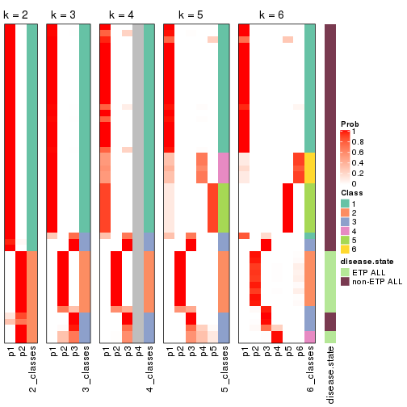
Test correlation between subgroups and known annotations. If the known annotation is numeric, one-way ANOVA test is applied, and if the known annotation is discrete, chi-squared contingency table test is applied.
test_to_known_factors(res)
#> n disease.state(p) k
#> ATC:pam 52 5.22e-09 2
#> ATC:pam 52 3.49e-10 3
#> ATC:pam 45 8.09e-09 4
#> ATC:pam 50 1.95e-08 5
#> ATC:pam 52 4.92e-09 6
If matrix rows can be associated to genes, consider to use functional_enrichment(res,
...) to perform function enrichment for the signature genes. See this vignette for more detailed explanations.
The object with results only for a single top-value method and a single partition method can be extracted as:
res = res_list["ATC", "mclust"]
# you can also extract it by
# res = res_list["ATC:mclust"]
A summary of res and all the functions that can be applied to it:
res
#> A 'ConsensusPartition' object with k = 2, 3, 4, 5, 6.
#> On a matrix with 51979 rows and 52 columns.
#> Top rows (1000, 2000, 3000, 4000, 5000) are extracted by 'ATC' method.
#> Subgroups are detected by 'mclust' method.
#> Performed in total 1250 partitions by row resampling.
#> Best k for subgroups seems to be 5.
#>
#> Following methods can be applied to this 'ConsensusPartition' object:
#> [1] "cola_report" "collect_classes" "collect_plots"
#> [4] "collect_stats" "colnames" "compare_signatures"
#> [7] "consensus_heatmap" "dimension_reduction" "functional_enrichment"
#> [10] "get_anno_col" "get_anno" "get_classes"
#> [13] "get_consensus" "get_matrix" "get_membership"
#> [16] "get_param" "get_signatures" "get_stats"
#> [19] "is_best_k" "is_stable_k" "membership_heatmap"
#> [22] "ncol" "nrow" "plot_ecdf"
#> [25] "rownames" "select_partition_number" "show"
#> [28] "suggest_best_k" "test_to_known_factors"
collect_plots() function collects all the plots made from res for all k (number of partitions)
into one single page to provide an easy and fast comparison between different k.
collect_plots(res)
The plots are:
k and the heatmap of
predicted classes for each k.k.k.k.All the plots in panels can be made by individual functions and they are plotted later in this section.
select_partition_number() produces several plots showing different
statistics for choosing “optimized” k. There are following statistics:
k;k, the area increased is defined as \(A_k - A_{k-1}\).The detailed explanations of these statistics can be found in the cola vignette.
Generally speaking, lower PAC score, higher mean silhouette score or higher
concordance corresponds to better partition. Rand index and Jaccard index
measure how similar the current partition is compared to partition with k-1.
If they are too similar, we won't accept k is better than k-1.
select_partition_number(res)
The numeric values for all these statistics can be obtained by get_stats().
get_stats(res)
#> k 1-PAC mean_silhouette concordance area_increased Rand Jaccard
#> 2 2 1.000 0.965 0.987 0.4627 0.538 0.538
#> 3 3 0.677 0.845 0.927 0.1858 0.916 0.846
#> 4 4 0.949 0.896 0.955 0.2664 0.824 0.627
#> 5 5 0.918 0.887 0.878 0.0541 0.971 0.908
#> 6 6 0.862 0.844 0.912 0.0816 0.919 0.715
suggest_best_k() suggests the best \(k\) based on these statistics. The rules are as follows:
suggest_best_k(res)
#> [1] 5
#> attr(,"optional")
#> [1] 2 4
There is also optional best \(k\) = 2 4 that is worth to check.
Following shows the table of the partitions (You need to click the show/hide
code output link to see it). The membership matrix (columns with name p*)
is inferred by
clue::cl_consensus()
function with the SE method. Basically the value in the membership matrix
represents the probability to belong to a certain group. The finall class
label for an item is determined with the group with highest probability it
belongs to.
In get_classes() function, the entropy is calculated from the membership
matrix and the silhouette score is calculated from the consensus matrix.
cbind(get_classes(res, k = 2), get_membership(res, k = 2))
#> class entropy silhouette p1 p2
#> GSM710838 2 0.000 0.982 0.000 1.000
#> GSM710840 2 0.000 0.982 0.000 1.000
#> GSM710842 2 0.000 0.982 0.000 1.000
#> GSM710844 2 0.000 0.982 0.000 1.000
#> GSM710847 2 0.000 0.982 0.000 1.000
#> GSM710848 2 0.000 0.982 0.000 1.000
#> GSM710850 2 0.000 0.982 0.000 1.000
#> GSM710931 2 0.000 0.982 0.000 1.000
#> GSM710932 2 0.000 0.982 0.000 1.000
#> GSM710933 2 0.000 0.982 0.000 1.000
#> GSM710934 2 0.000 0.982 0.000 1.000
#> GSM710935 2 0.000 0.982 0.000 1.000
#> GSM710851 1 0.000 0.988 1.000 0.000
#> GSM710852 1 0.000 0.988 1.000 0.000
#> GSM710854 2 0.000 0.982 0.000 1.000
#> GSM710856 1 0.000 0.988 1.000 0.000
#> GSM710857 1 0.000 0.988 1.000 0.000
#> GSM710859 1 0.966 0.331 0.608 0.392
#> GSM710861 1 0.000 0.988 1.000 0.000
#> GSM710864 1 0.000 0.988 1.000 0.000
#> GSM710866 1 0.000 0.988 1.000 0.000
#> GSM710868 1 0.000 0.988 1.000 0.000
#> GSM710870 1 0.000 0.988 1.000 0.000
#> GSM710872 1 0.000 0.988 1.000 0.000
#> GSM710874 1 0.000 0.988 1.000 0.000
#> GSM710876 1 0.000 0.988 1.000 0.000
#> GSM710878 1 0.000 0.988 1.000 0.000
#> GSM710880 1 0.000 0.988 1.000 0.000
#> GSM710882 1 0.000 0.988 1.000 0.000
#> GSM710884 1 0.000 0.988 1.000 0.000
#> GSM710887 1 0.000 0.988 1.000 0.000
#> GSM710889 1 0.000 0.988 1.000 0.000
#> GSM710891 2 0.000 0.982 0.000 1.000
#> GSM710893 1 0.000 0.988 1.000 0.000
#> GSM710895 1 0.000 0.988 1.000 0.000
#> GSM710897 1 0.000 0.988 1.000 0.000
#> GSM710899 2 0.000 0.982 0.000 1.000
#> GSM710901 1 0.000 0.988 1.000 0.000
#> GSM710903 1 0.000 0.988 1.000 0.000
#> GSM710904 1 0.000 0.988 1.000 0.000
#> GSM710907 1 0.000 0.988 1.000 0.000
#> GSM710909 1 0.000 0.988 1.000 0.000
#> GSM710910 2 0.881 0.560 0.300 0.700
#> GSM710912 2 0.000 0.982 0.000 1.000
#> GSM710914 1 0.000 0.988 1.000 0.000
#> GSM710917 2 0.000 0.982 0.000 1.000
#> GSM710919 1 0.000 0.988 1.000 0.000
#> GSM710921 1 0.000 0.988 1.000 0.000
#> GSM710923 1 0.000 0.988 1.000 0.000
#> GSM710925 1 0.000 0.988 1.000 0.000
#> GSM710927 1 0.000 0.988 1.000 0.000
#> GSM710929 1 0.000 0.988 1.000 0.000
cbind(get_classes(res, k = 3), get_membership(res, k = 3))
#> class entropy silhouette p1 p2 p3
#> GSM710838 2 0.4504 0.7074 0.000 0.804 0.196
#> GSM710840 2 0.0000 0.8591 0.000 1.000 0.000
#> GSM710842 2 0.5216 0.5633 0.000 0.740 0.260
#> GSM710844 2 0.0000 0.8591 0.000 1.000 0.000
#> GSM710847 2 0.0000 0.8591 0.000 1.000 0.000
#> GSM710848 2 0.5098 0.6026 0.000 0.752 0.248
#> GSM710850 2 0.0000 0.8591 0.000 1.000 0.000
#> GSM710931 2 0.5216 0.5633 0.000 0.740 0.260
#> GSM710932 2 0.0000 0.8591 0.000 1.000 0.000
#> GSM710933 2 0.0000 0.8591 0.000 1.000 0.000
#> GSM710934 2 0.4504 0.7074 0.000 0.804 0.196
#> GSM710935 2 0.0000 0.8591 0.000 1.000 0.000
#> GSM710851 1 0.0000 0.9492 1.000 0.000 0.000
#> GSM710852 1 0.0000 0.9492 1.000 0.000 0.000
#> GSM710854 3 0.4346 0.7466 0.000 0.184 0.816
#> GSM710856 1 0.0000 0.9492 1.000 0.000 0.000
#> GSM710857 1 0.3412 0.8862 0.876 0.000 0.124
#> GSM710859 3 0.4399 0.6075 0.188 0.000 0.812
#> GSM710861 1 0.0000 0.9492 1.000 0.000 0.000
#> GSM710864 1 0.3412 0.8862 0.876 0.000 0.124
#> GSM710866 1 0.0000 0.9492 1.000 0.000 0.000
#> GSM710868 1 0.5621 0.6512 0.692 0.000 0.308
#> GSM710870 1 0.0000 0.9492 1.000 0.000 0.000
#> GSM710872 1 0.2066 0.9215 0.940 0.000 0.060
#> GSM710874 1 0.0000 0.9492 1.000 0.000 0.000
#> GSM710876 1 0.3412 0.8862 0.876 0.000 0.124
#> GSM710878 1 0.0000 0.9492 1.000 0.000 0.000
#> GSM710880 1 0.3412 0.8862 0.876 0.000 0.124
#> GSM710882 1 0.0000 0.9492 1.000 0.000 0.000
#> GSM710884 1 0.0000 0.9492 1.000 0.000 0.000
#> GSM710887 1 0.3412 0.8862 0.876 0.000 0.124
#> GSM710889 1 0.0000 0.9492 1.000 0.000 0.000
#> GSM710891 3 0.4399 0.7433 0.000 0.188 0.812
#> GSM710893 1 0.0000 0.9492 1.000 0.000 0.000
#> GSM710895 1 0.0000 0.9492 1.000 0.000 0.000
#> GSM710897 1 0.0000 0.9492 1.000 0.000 0.000
#> GSM710899 3 0.0237 0.7324 0.000 0.004 0.996
#> GSM710901 1 0.3412 0.8862 0.876 0.000 0.124
#> GSM710903 1 0.0000 0.9492 1.000 0.000 0.000
#> GSM710904 1 0.0000 0.9492 1.000 0.000 0.000
#> GSM710907 1 0.3412 0.8862 0.876 0.000 0.124
#> GSM710909 1 0.3412 0.8862 0.876 0.000 0.124
#> GSM710910 3 0.0000 0.7303 0.000 0.000 1.000
#> GSM710912 3 0.6095 0.0487 0.000 0.392 0.608
#> GSM710914 1 0.0000 0.9492 1.000 0.000 0.000
#> GSM710917 3 0.4346 0.7466 0.000 0.184 0.816
#> GSM710919 1 0.0000 0.9492 1.000 0.000 0.000
#> GSM710921 1 0.0000 0.9492 1.000 0.000 0.000
#> GSM710923 1 0.0000 0.9492 1.000 0.000 0.000
#> GSM710925 1 0.0000 0.9492 1.000 0.000 0.000
#> GSM710927 1 0.0000 0.9492 1.000 0.000 0.000
#> GSM710929 1 0.3412 0.8862 0.876 0.000 0.124
cbind(get_classes(res, k = 4), get_membership(res, k = 4))
#> class entropy silhouette p1 p2 p3 p4
#> GSM710838 2 0.4992 0.822 0.000 0.524 0.476 0.000
#> GSM710840 2 0.4992 0.822 0.000 0.524 0.476 0.000
#> GSM710842 2 0.0188 0.321 0.000 0.996 0.000 0.004
#> GSM710844 2 0.4992 0.822 0.000 0.524 0.476 0.000
#> GSM710847 2 0.4992 0.822 0.000 0.524 0.476 0.000
#> GSM710848 2 0.0000 0.317 0.000 1.000 0.000 0.000
#> GSM710850 2 0.4992 0.822 0.000 0.524 0.476 0.000
#> GSM710931 2 0.0188 0.321 0.000 0.996 0.000 0.004
#> GSM710932 2 0.4992 0.822 0.000 0.524 0.476 0.000
#> GSM710933 2 0.4992 0.822 0.000 0.524 0.476 0.000
#> GSM710934 2 0.4992 0.822 0.000 0.524 0.476 0.000
#> GSM710935 2 0.4992 0.822 0.000 0.524 0.476 0.000
#> GSM710851 1 0.0000 0.999 1.000 0.000 0.000 0.000
#> GSM710852 1 0.0000 0.999 1.000 0.000 0.000 0.000
#> GSM710854 3 0.4992 1.000 0.000 0.476 0.524 0.000
#> GSM710856 1 0.0000 0.999 1.000 0.000 0.000 0.000
#> GSM710857 4 0.1302 0.899 0.044 0.000 0.000 0.956
#> GSM710859 3 0.4992 1.000 0.000 0.476 0.524 0.000
#> GSM710861 1 0.0000 0.999 1.000 0.000 0.000 0.000
#> GSM710864 4 0.0188 0.937 0.004 0.000 0.000 0.996
#> GSM710866 1 0.0000 0.999 1.000 0.000 0.000 0.000
#> GSM710868 1 0.0921 0.969 0.972 0.000 0.000 0.028
#> GSM710870 1 0.0000 0.999 1.000 0.000 0.000 0.000
#> GSM710872 1 0.0000 0.999 1.000 0.000 0.000 0.000
#> GSM710874 1 0.0000 0.999 1.000 0.000 0.000 0.000
#> GSM710876 4 0.0188 0.937 0.004 0.000 0.000 0.996
#> GSM710878 1 0.0000 0.999 1.000 0.000 0.000 0.000
#> GSM710880 4 0.0188 0.937 0.004 0.000 0.000 0.996
#> GSM710882 1 0.0000 0.999 1.000 0.000 0.000 0.000
#> GSM710884 1 0.0000 0.999 1.000 0.000 0.000 0.000
#> GSM710887 4 0.0188 0.937 0.004 0.000 0.000 0.996
#> GSM710889 1 0.0000 0.999 1.000 0.000 0.000 0.000
#> GSM710891 3 0.4992 1.000 0.000 0.476 0.524 0.000
#> GSM710893 1 0.0000 0.999 1.000 0.000 0.000 0.000
#> GSM710895 1 0.0000 0.999 1.000 0.000 0.000 0.000
#> GSM710897 1 0.0000 0.999 1.000 0.000 0.000 0.000
#> GSM710899 3 0.4992 1.000 0.000 0.476 0.524 0.000
#> GSM710901 4 0.0188 0.937 0.004 0.000 0.000 0.996
#> GSM710903 1 0.0000 0.999 1.000 0.000 0.000 0.000
#> GSM710904 1 0.0000 0.999 1.000 0.000 0.000 0.000
#> GSM710907 4 0.0188 0.937 0.004 0.000 0.000 0.996
#> GSM710909 4 0.0188 0.937 0.004 0.000 0.000 0.996
#> GSM710910 3 0.4992 1.000 0.000 0.476 0.524 0.000
#> GSM710912 2 0.0188 0.307 0.000 0.996 0.004 0.000
#> GSM710914 1 0.0000 0.999 1.000 0.000 0.000 0.000
#> GSM710917 3 0.4992 1.000 0.000 0.476 0.524 0.000
#> GSM710919 1 0.0000 0.999 1.000 0.000 0.000 0.000
#> GSM710921 1 0.0000 0.999 1.000 0.000 0.000 0.000
#> GSM710923 1 0.0000 0.999 1.000 0.000 0.000 0.000
#> GSM710925 1 0.0000 0.999 1.000 0.000 0.000 0.000
#> GSM710927 1 0.0000 0.999 1.000 0.000 0.000 0.000
#> GSM710929 4 0.4454 0.546 0.308 0.000 0.000 0.692
cbind(get_classes(res, k = 5), get_membership(res, k = 5))
#> class entropy silhouette p1 p2 p3 p4 p5
#> GSM710838 2 0.1671 0.8724 0.000 0.924 0.000 0.000 0.076
#> GSM710840 2 0.0000 0.9178 0.000 1.000 0.000 0.000 0.000
#> GSM710842 5 0.4278 1.0000 0.000 0.068 0.052 0.068 0.812
#> GSM710844 2 0.0000 0.9178 0.000 1.000 0.000 0.000 0.000
#> GSM710847 2 0.0000 0.9178 0.000 1.000 0.000 0.000 0.000
#> GSM710848 2 0.6036 -0.0322 0.000 0.548 0.144 0.000 0.308
#> GSM710850 2 0.0000 0.9178 0.000 1.000 0.000 0.000 0.000
#> GSM710931 5 0.4278 1.0000 0.000 0.068 0.052 0.068 0.812
#> GSM710932 2 0.0000 0.9178 0.000 1.000 0.000 0.000 0.000
#> GSM710933 2 0.0000 0.9178 0.000 1.000 0.000 0.000 0.000
#> GSM710934 2 0.1671 0.8724 0.000 0.924 0.000 0.000 0.076
#> GSM710935 2 0.0000 0.9178 0.000 1.000 0.000 0.000 0.000
#> GSM710851 1 0.0290 0.9258 0.992 0.000 0.008 0.000 0.000
#> GSM710852 1 0.2694 0.8763 0.884 0.000 0.076 0.000 0.040
#> GSM710854 3 0.4797 0.9069 0.000 0.044 0.660 0.000 0.296
#> GSM710856 1 0.4550 0.7033 0.688 0.000 0.276 0.000 0.036
#> GSM710857 4 0.1121 0.9519 0.044 0.000 0.000 0.956 0.000
#> GSM710859 3 0.3837 0.9071 0.000 0.000 0.692 0.000 0.308
#> GSM710861 1 0.1671 0.8971 0.924 0.000 0.076 0.000 0.000
#> GSM710864 4 0.0000 0.9447 0.000 0.000 0.000 1.000 0.000
#> GSM710866 1 0.0404 0.9254 0.988 0.000 0.000 0.000 0.012
#> GSM710868 1 0.3515 0.8400 0.844 0.000 0.008 0.084 0.064
#> GSM710870 1 0.4475 0.7076 0.692 0.000 0.276 0.000 0.032
#> GSM710872 1 0.1168 0.9156 0.960 0.000 0.008 0.000 0.032
#> GSM710874 1 0.4550 0.7033 0.688 0.000 0.276 0.000 0.036
#> GSM710876 4 0.0000 0.9447 0.000 0.000 0.000 1.000 0.000
#> GSM710878 1 0.0566 0.9247 0.984 0.000 0.012 0.000 0.004
#> GSM710880 4 0.1121 0.9519 0.044 0.000 0.000 0.956 0.000
#> GSM710882 1 0.0609 0.9229 0.980 0.000 0.020 0.000 0.000
#> GSM710884 1 0.0290 0.9253 0.992 0.000 0.008 0.000 0.000
#> GSM710887 4 0.0000 0.9447 0.000 0.000 0.000 1.000 0.000
#> GSM710889 1 0.0566 0.9245 0.984 0.000 0.004 0.000 0.012
#> GSM710891 3 0.4797 0.9069 0.000 0.044 0.660 0.000 0.296
#> GSM710893 1 0.0404 0.9254 0.988 0.000 0.000 0.000 0.012
#> GSM710895 1 0.0404 0.9254 0.988 0.000 0.000 0.000 0.012
#> GSM710897 1 0.0162 0.9259 0.996 0.000 0.000 0.000 0.004
#> GSM710899 3 0.3774 0.9242 0.000 0.000 0.704 0.000 0.296
#> GSM710901 4 0.1408 0.9505 0.044 0.000 0.008 0.948 0.000
#> GSM710903 1 0.0566 0.9247 0.984 0.000 0.012 0.000 0.004
#> GSM710904 1 0.0000 0.9259 1.000 0.000 0.000 0.000 0.000
#> GSM710907 4 0.1408 0.9505 0.044 0.000 0.008 0.948 0.000
#> GSM710909 4 0.0000 0.9447 0.000 0.000 0.000 1.000 0.000
#> GSM710910 3 0.3837 0.9071 0.000 0.000 0.692 0.000 0.308
#> GSM710912 3 0.4805 0.8733 0.000 0.040 0.648 0.000 0.312
#> GSM710914 1 0.4315 0.7159 0.700 0.000 0.276 0.000 0.024
#> GSM710917 3 0.3752 0.9247 0.000 0.000 0.708 0.000 0.292
#> GSM710919 1 0.0404 0.9254 0.988 0.000 0.000 0.000 0.012
#> GSM710921 1 0.1041 0.9174 0.964 0.000 0.004 0.000 0.032
#> GSM710923 1 0.0404 0.9254 0.988 0.000 0.000 0.000 0.012
#> GSM710925 1 0.0162 0.9256 0.996 0.000 0.004 0.000 0.000
#> GSM710927 1 0.1168 0.9156 0.960 0.000 0.008 0.000 0.032
#> GSM710929 4 0.2378 0.9094 0.064 0.000 0.012 0.908 0.016
cbind(get_classes(res, k = 6), get_membership(res, k = 6))
#> class entropy silhouette p1 p2 p3 p4 p5 p6
#> GSM710838 2 0.1524 0.901 0.000 0.932 0.008 0.060 0.000 0.000
#> GSM710840 2 0.0000 0.938 0.000 1.000 0.000 0.000 0.000 0.000
#> GSM710842 4 0.3984 1.000 0.000 0.092 0.124 0.776 0.000 0.008
#> GSM710844 2 0.0000 0.938 0.000 1.000 0.000 0.000 0.000 0.000
#> GSM710847 2 0.0000 0.938 0.000 1.000 0.000 0.000 0.000 0.000
#> GSM710848 2 0.4389 0.434 0.000 0.668 0.288 0.036 0.000 0.008
#> GSM710850 2 0.0000 0.938 0.000 1.000 0.000 0.000 0.000 0.000
#> GSM710931 4 0.3984 1.000 0.000 0.092 0.124 0.776 0.000 0.008
#> GSM710932 2 0.0000 0.938 0.000 1.000 0.000 0.000 0.000 0.000
#> GSM710933 2 0.0000 0.938 0.000 1.000 0.000 0.000 0.000 0.000
#> GSM710934 2 0.1524 0.901 0.000 0.932 0.008 0.060 0.000 0.000
#> GSM710935 2 0.0000 0.938 0.000 1.000 0.000 0.000 0.000 0.000
#> GSM710851 1 0.2416 0.792 0.844 0.000 0.000 0.000 0.156 0.000
#> GSM710852 5 0.4682 0.683 0.284 0.000 0.000 0.076 0.640 0.000
#> GSM710854 3 0.0622 0.927 0.000 0.000 0.980 0.012 0.000 0.008
#> GSM710856 5 0.1387 0.830 0.068 0.000 0.000 0.000 0.932 0.000
#> GSM710857 6 0.0146 0.904 0.004 0.000 0.000 0.000 0.000 0.996
#> GSM710859 3 0.2456 0.882 0.000 0.000 0.892 0.052 0.048 0.008
#> GSM710861 5 0.4682 0.683 0.284 0.000 0.000 0.076 0.640 0.000
#> GSM710864 6 0.0000 0.907 0.000 0.000 0.000 0.000 0.000 1.000
#> GSM710866 1 0.0547 0.884 0.980 0.000 0.000 0.000 0.020 0.000
#> GSM710868 1 0.3298 0.765 0.844 0.000 0.060 0.000 0.024 0.072
#> GSM710870 5 0.1610 0.833 0.084 0.000 0.000 0.000 0.916 0.000
#> GSM710872 1 0.1605 0.860 0.936 0.000 0.004 0.044 0.016 0.000
#> GSM710874 5 0.1387 0.830 0.068 0.000 0.000 0.000 0.932 0.000
#> GSM710876 6 0.0000 0.907 0.000 0.000 0.000 0.000 0.000 1.000
#> GSM710878 1 0.3163 0.693 0.764 0.000 0.000 0.004 0.232 0.000
#> GSM710880 6 0.0000 0.907 0.000 0.000 0.000 0.000 0.000 1.000
#> GSM710882 1 0.3565 0.543 0.692 0.000 0.000 0.004 0.304 0.000
#> GSM710884 1 0.1007 0.876 0.956 0.000 0.000 0.000 0.044 0.000
#> GSM710887 6 0.0000 0.907 0.000 0.000 0.000 0.000 0.000 1.000
#> GSM710889 1 0.0767 0.882 0.976 0.000 0.004 0.012 0.008 0.000
#> GSM710891 3 0.0622 0.927 0.000 0.000 0.980 0.012 0.000 0.008
#> GSM710893 1 0.0363 0.885 0.988 0.000 0.000 0.000 0.012 0.000
#> GSM710895 1 0.0291 0.885 0.992 0.000 0.000 0.004 0.004 0.000
#> GSM710897 1 0.0632 0.884 0.976 0.000 0.000 0.000 0.024 0.000
#> GSM710899 3 0.0260 0.929 0.000 0.000 0.992 0.000 0.000 0.008
#> GSM710901 6 0.0146 0.906 0.000 0.000 0.000 0.000 0.004 0.996
#> GSM710903 1 0.3290 0.660 0.744 0.000 0.000 0.004 0.252 0.000
#> GSM710904 1 0.0862 0.885 0.972 0.000 0.004 0.008 0.016 0.000
#> GSM710907 6 0.0146 0.906 0.000 0.000 0.000 0.000 0.004 0.996
#> GSM710909 6 0.0000 0.907 0.000 0.000 0.000 0.000 0.000 1.000
#> GSM710910 3 0.2456 0.882 0.000 0.000 0.892 0.052 0.048 0.008
#> GSM710912 3 0.2675 0.800 0.000 0.076 0.876 0.040 0.000 0.008
#> GSM710914 5 0.1501 0.834 0.076 0.000 0.000 0.000 0.924 0.000
#> GSM710917 3 0.0260 0.929 0.000 0.000 0.992 0.000 0.000 0.008
#> GSM710919 1 0.0291 0.883 0.992 0.000 0.000 0.004 0.004 0.000
#> GSM710921 1 0.1536 0.862 0.940 0.000 0.004 0.040 0.016 0.000
#> GSM710923 1 0.0146 0.885 0.996 0.000 0.000 0.000 0.004 0.000
#> GSM710925 1 0.2697 0.756 0.812 0.000 0.000 0.000 0.188 0.000
#> GSM710927 1 0.1605 0.860 0.936 0.000 0.004 0.044 0.016 0.000
#> GSM710929 6 0.5113 0.101 0.460 0.000 0.024 0.012 0.016 0.488
Heatmaps for the consensus matrix. It visualizes the probability of two samples to be in a same group.
consensus_heatmap(res, k = 2)
consensus_heatmap(res, k = 3)
consensus_heatmap(res, k = 4)
consensus_heatmap(res, k = 5)
consensus_heatmap(res, k = 6)
Heatmaps for the membership of samples in all partitions to see how consistent they are:
membership_heatmap(res, k = 2)
membership_heatmap(res, k = 3)
membership_heatmap(res, k = 4)
membership_heatmap(res, k = 5)
membership_heatmap(res, k = 6)
As soon as we have had the classes for columns, we can look for signatures which are significantly different between classes which can be candidate marks for certain classes. Following are the heatmaps for signatures.
Signature heatmaps where rows are scaled:
get_signatures(res, k = 2)
get_signatures(res, k = 3)
get_signatures(res, k = 4)
get_signatures(res, k = 5)
get_signatures(res, k = 6)
Signature heatmaps where rows are not scaled:
get_signatures(res, k = 2, scale_rows = FALSE)
get_signatures(res, k = 3, scale_rows = FALSE)
get_signatures(res, k = 4, scale_rows = FALSE)
get_signatures(res, k = 5, scale_rows = FALSE)
get_signatures(res, k = 6, scale_rows = FALSE)
Compare the overlap of signatures from different k:
compare_signatures(res)
get_signature() returns a data frame invisibly. TO get the list of signatures, the function
call should be assigned to a variable explicitly. In following code, if plot argument is set
to FALSE, no heatmap is plotted while only the differential analysis is performed.
# code only for demonstration
tb = get_signature(res, k = ..., plot = FALSE)
An example of the output of tb is:
#> which_row fdr mean_1 mean_2 scaled_mean_1 scaled_mean_2 km
#> 1 38 0.042760348 8.373488 9.131774 -0.5533452 0.5164555 1
#> 2 40 0.018707592 7.106213 8.469186 -0.6173731 0.5762149 1
#> 3 55 0.019134737 10.221463 11.207825 -0.6159697 0.5749050 1
#> 4 59 0.006059896 5.921854 7.869574 -0.6899429 0.6439467 1
#> 5 60 0.018055526 8.928898 10.211722 -0.6204761 0.5791110 1
#> 6 98 0.009384629 15.714769 14.887706 0.6635654 -0.6193277 2
...
The columns in tb are:
which_row: row indices corresponding to the input matrix.fdr: FDR for the differential test. mean_x: The mean value in group x.scaled_mean_x: The mean value in group x after rows are scaled.km: Row groups if k-means clustering is applied to rows.UMAP plot which shows how samples are separated.
dimension_reduction(res, k = 2, method = "UMAP")
dimension_reduction(res, k = 3, method = "UMAP")
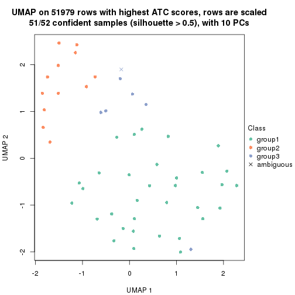
dimension_reduction(res, k = 4, method = "UMAP")
dimension_reduction(res, k = 5, method = "UMAP")
dimension_reduction(res, k = 6, method = "UMAP")
Following heatmap shows how subgroups are split when increasing k:
collect_classes(res)
Test correlation between subgroups and known annotations. If the known annotation is numeric, one-way ANOVA test is applied, and if the known annotation is discrete, chi-squared contingency table test is applied.
test_to_known_factors(res)
#> n disease.state(p) k
#> ATC:mclust 51 5.21e-07 2
#> ATC:mclust 51 8.42e-12 3
#> ATC:mclust 48 2.13e-10 4
#> ATC:mclust 51 2.23e-10 5
#> ATC:mclust 50 1.39e-09 6
If matrix rows can be associated to genes, consider to use functional_enrichment(res,
...) to perform function enrichment for the signature genes. See this vignette for more detailed explanations.
The object with results only for a single top-value method and a single partition method can be extracted as:
res = res_list["ATC", "NMF"]
# you can also extract it by
# res = res_list["ATC:NMF"]
A summary of res and all the functions that can be applied to it:
res
#> A 'ConsensusPartition' object with k = 2, 3, 4, 5, 6.
#> On a matrix with 51979 rows and 52 columns.
#> Top rows (1000, 2000, 3000, 4000, 5000) are extracted by 'ATC' method.
#> Subgroups are detected by 'NMF' method.
#> Performed in total 1250 partitions by row resampling.
#> Best k for subgroups seems to be 3.
#>
#> Following methods can be applied to this 'ConsensusPartition' object:
#> [1] "cola_report" "collect_classes" "collect_plots"
#> [4] "collect_stats" "colnames" "compare_signatures"
#> [7] "consensus_heatmap" "dimension_reduction" "functional_enrichment"
#> [10] "get_anno_col" "get_anno" "get_classes"
#> [13] "get_consensus" "get_matrix" "get_membership"
#> [16] "get_param" "get_signatures" "get_stats"
#> [19] "is_best_k" "is_stable_k" "membership_heatmap"
#> [22] "ncol" "nrow" "plot_ecdf"
#> [25] "rownames" "select_partition_number" "show"
#> [28] "suggest_best_k" "test_to_known_factors"
collect_plots() function collects all the plots made from res for all k (number of partitions)
into one single page to provide an easy and fast comparison between different k.
collect_plots(res)
The plots are:
k and the heatmap of
predicted classes for each k.k.k.k.All the plots in panels can be made by individual functions and they are plotted later in this section.
select_partition_number() produces several plots showing different
statistics for choosing “optimized” k. There are following statistics:
k;k, the area increased is defined as \(A_k - A_{k-1}\).The detailed explanations of these statistics can be found in the cola vignette.
Generally speaking, lower PAC score, higher mean silhouette score or higher
concordance corresponds to better partition. Rand index and Jaccard index
measure how similar the current partition is compared to partition with k-1.
If they are too similar, we won't accept k is better than k-1.
select_partition_number(res)
The numeric values for all these statistics can be obtained by get_stats().
get_stats(res)
#> k 1-PAC mean_silhouette concordance area_increased Rand Jaccard
#> 2 2 1.000 1.000 1.000 0.4493 0.551 0.551
#> 3 3 0.927 0.964 0.981 0.4289 0.811 0.658
#> 4 4 0.673 0.717 0.849 0.1277 0.882 0.687
#> 5 5 0.676 0.629 0.811 0.0510 0.939 0.798
#> 6 6 0.621 0.504 0.722 0.0535 0.901 0.660
suggest_best_k() suggests the best \(k\) based on these statistics. The rules are as follows:
suggest_best_k(res)
#> [1] 3
#> attr(,"optional")
#> [1] 2
There is also optional best \(k\) = 2 that is worth to check.
Following shows the table of the partitions (You need to click the show/hide
code output link to see it). The membership matrix (columns with name p*)
is inferred by
clue::cl_consensus()
function with the SE method. Basically the value in the membership matrix
represents the probability to belong to a certain group. The finall class
label for an item is determined with the group with highest probability it
belongs to.
In get_classes() function, the entropy is calculated from the membership
matrix and the silhouette score is calculated from the consensus matrix.
cbind(get_classes(res, k = 2), get_membership(res, k = 2))
#> class entropy silhouette p1 p2
#> GSM710838 2 0 1 0 1
#> GSM710840 2 0 1 0 1
#> GSM710842 2 0 1 0 1
#> GSM710844 2 0 1 0 1
#> GSM710847 2 0 1 0 1
#> GSM710848 2 0 1 0 1
#> GSM710850 2 0 1 0 1
#> GSM710931 2 0 1 0 1
#> GSM710932 2 0 1 0 1
#> GSM710933 2 0 1 0 1
#> GSM710934 2 0 1 0 1
#> GSM710935 2 0 1 0 1
#> GSM710851 1 0 1 1 0
#> GSM710852 1 0 1 1 0
#> GSM710854 2 0 1 0 1
#> GSM710856 1 0 1 1 0
#> GSM710857 1 0 1 1 0
#> GSM710859 1 0 1 1 0
#> GSM710861 1 0 1 1 0
#> GSM710864 1 0 1 1 0
#> GSM710866 1 0 1 1 0
#> GSM710868 1 0 1 1 0
#> GSM710870 1 0 1 1 0
#> GSM710872 1 0 1 1 0
#> GSM710874 1 0 1 1 0
#> GSM710876 1 0 1 1 0
#> GSM710878 1 0 1 1 0
#> GSM710880 1 0 1 1 0
#> GSM710882 1 0 1 1 0
#> GSM710884 1 0 1 1 0
#> GSM710887 1 0 1 1 0
#> GSM710889 1 0 1 1 0
#> GSM710891 2 0 1 0 1
#> GSM710893 1 0 1 1 0
#> GSM710895 1 0 1 1 0
#> GSM710897 1 0 1 1 0
#> GSM710899 2 0 1 0 1
#> GSM710901 1 0 1 1 0
#> GSM710903 1 0 1 1 0
#> GSM710904 1 0 1 1 0
#> GSM710907 1 0 1 1 0
#> GSM710909 1 0 1 1 0
#> GSM710910 1 0 1 1 0
#> GSM710912 2 0 1 0 1
#> GSM710914 1 0 1 1 0
#> GSM710917 2 0 1 0 1
#> GSM710919 1 0 1 1 0
#> GSM710921 1 0 1 1 0
#> GSM710923 1 0 1 1 0
#> GSM710925 1 0 1 1 0
#> GSM710927 1 0 1 1 0
#> GSM710929 1 0 1 1 0
cbind(get_classes(res, k = 3), get_membership(res, k = 3))
#> class entropy silhouette p1 p2 p3
#> GSM710838 2 0.0000 0.991 0.000 1.000 0.000
#> GSM710840 2 0.0000 0.991 0.000 1.000 0.000
#> GSM710842 2 0.0000 0.991 0.000 1.000 0.000
#> GSM710844 2 0.0000 0.991 0.000 1.000 0.000
#> GSM710847 2 0.0000 0.991 0.000 1.000 0.000
#> GSM710848 2 0.0000 0.991 0.000 1.000 0.000
#> GSM710850 2 0.0000 0.991 0.000 1.000 0.000
#> GSM710931 2 0.0000 0.991 0.000 1.000 0.000
#> GSM710932 2 0.0000 0.991 0.000 1.000 0.000
#> GSM710933 2 0.0000 0.991 0.000 1.000 0.000
#> GSM710934 2 0.0000 0.991 0.000 1.000 0.000
#> GSM710935 2 0.0000 0.991 0.000 1.000 0.000
#> GSM710851 1 0.0000 0.971 1.000 0.000 0.000
#> GSM710852 1 0.0000 0.971 1.000 0.000 0.000
#> GSM710854 2 0.0000 0.991 0.000 1.000 0.000
#> GSM710856 1 0.0000 0.971 1.000 0.000 0.000
#> GSM710857 3 0.0000 0.981 0.000 0.000 1.000
#> GSM710859 1 0.0000 0.971 1.000 0.000 0.000
#> GSM710861 1 0.0000 0.971 1.000 0.000 0.000
#> GSM710864 3 0.0000 0.981 0.000 0.000 1.000
#> GSM710866 1 0.0424 0.969 0.992 0.000 0.008
#> GSM710868 3 0.3686 0.827 0.140 0.000 0.860
#> GSM710870 1 0.0000 0.971 1.000 0.000 0.000
#> GSM710872 1 0.2448 0.926 0.924 0.000 0.076
#> GSM710874 1 0.0000 0.971 1.000 0.000 0.000
#> GSM710876 3 0.0000 0.981 0.000 0.000 1.000
#> GSM710878 1 0.0000 0.971 1.000 0.000 0.000
#> GSM710880 3 0.0000 0.981 0.000 0.000 1.000
#> GSM710882 1 0.0000 0.971 1.000 0.000 0.000
#> GSM710884 1 0.3752 0.862 0.856 0.000 0.144
#> GSM710887 3 0.0000 0.981 0.000 0.000 1.000
#> GSM710889 1 0.0000 0.971 1.000 0.000 0.000
#> GSM710891 2 0.0000 0.991 0.000 1.000 0.000
#> GSM710893 1 0.0000 0.971 1.000 0.000 0.000
#> GSM710895 1 0.3619 0.872 0.864 0.000 0.136
#> GSM710897 1 0.0592 0.967 0.988 0.000 0.012
#> GSM710899 2 0.0000 0.991 0.000 1.000 0.000
#> GSM710901 3 0.0000 0.981 0.000 0.000 1.000
#> GSM710903 1 0.0000 0.971 1.000 0.000 0.000
#> GSM710904 1 0.0000 0.971 1.000 0.000 0.000
#> GSM710907 3 0.0000 0.981 0.000 0.000 1.000
#> GSM710909 3 0.0000 0.981 0.000 0.000 1.000
#> GSM710910 1 0.4677 0.848 0.840 0.028 0.132
#> GSM710912 2 0.0000 0.991 0.000 1.000 0.000
#> GSM710914 1 0.0000 0.971 1.000 0.000 0.000
#> GSM710917 2 0.3619 0.843 0.000 0.864 0.136
#> GSM710919 1 0.1163 0.959 0.972 0.000 0.028
#> GSM710921 1 0.3340 0.887 0.880 0.000 0.120
#> GSM710923 1 0.1031 0.961 0.976 0.000 0.024
#> GSM710925 1 0.0000 0.971 1.000 0.000 0.000
#> GSM710927 1 0.0592 0.967 0.988 0.000 0.012
#> GSM710929 3 0.0237 0.978 0.004 0.000 0.996
cbind(get_classes(res, k = 4), get_membership(res, k = 4))
#> class entropy silhouette p1 p2 p3 p4
#> GSM710838 2 0.1940 0.8834 0.000 0.924 0.076 0.000
#> GSM710840 2 0.0336 0.9187 0.000 0.992 0.008 0.000
#> GSM710842 2 0.4406 0.6991 0.000 0.700 0.300 0.000
#> GSM710844 2 0.0188 0.9178 0.000 0.996 0.004 0.000
#> GSM710847 2 0.0188 0.9185 0.000 0.996 0.004 0.000
#> GSM710848 2 0.1022 0.9082 0.000 0.968 0.032 0.000
#> GSM710850 2 0.0817 0.9172 0.000 0.976 0.024 0.000
#> GSM710931 2 0.3668 0.8246 0.000 0.808 0.188 0.004
#> GSM710932 2 0.0469 0.9174 0.000 0.988 0.012 0.000
#> GSM710933 2 0.1022 0.9150 0.000 0.968 0.032 0.000
#> GSM710934 2 0.2011 0.8806 0.000 0.920 0.080 0.000
#> GSM710935 2 0.0336 0.9188 0.000 0.992 0.008 0.000
#> GSM710851 1 0.1022 0.8130 0.968 0.000 0.032 0.000
#> GSM710852 1 0.3443 0.8089 0.848 0.000 0.016 0.136
#> GSM710854 2 0.3837 0.7953 0.000 0.776 0.224 0.000
#> GSM710856 1 0.1022 0.8128 0.968 0.000 0.032 0.000
#> GSM710857 4 0.1743 0.8210 0.056 0.000 0.004 0.940
#> GSM710859 3 0.4981 0.3436 0.464 0.000 0.536 0.000
#> GSM710861 1 0.1488 0.8343 0.956 0.000 0.012 0.032
#> GSM710864 4 0.1854 0.8241 0.048 0.000 0.012 0.940
#> GSM710866 1 0.2345 0.8336 0.900 0.000 0.000 0.100
#> GSM710868 4 0.6895 0.0573 0.412 0.004 0.092 0.492
#> GSM710870 1 0.2011 0.7793 0.920 0.000 0.080 0.000
#> GSM710872 3 0.5614 0.5069 0.336 0.000 0.628 0.036
#> GSM710874 1 0.1474 0.7999 0.948 0.000 0.052 0.000
#> GSM710876 4 0.0895 0.8414 0.020 0.000 0.004 0.976
#> GSM710878 1 0.2737 0.8290 0.888 0.000 0.008 0.104
#> GSM710880 4 0.0895 0.8414 0.020 0.000 0.004 0.976
#> GSM710882 1 0.3052 0.8152 0.860 0.000 0.004 0.136
#> GSM710884 1 0.4250 0.6635 0.724 0.000 0.000 0.276
#> GSM710887 4 0.1297 0.8407 0.020 0.000 0.016 0.964
#> GSM710889 1 0.4866 -0.0326 0.596 0.000 0.404 0.000
#> GSM710891 2 0.1398 0.9140 0.004 0.956 0.040 0.000
#> GSM710893 1 0.1902 0.8379 0.932 0.000 0.004 0.064
#> GSM710895 1 0.4500 0.6012 0.684 0.000 0.000 0.316
#> GSM710897 1 0.2973 0.8115 0.856 0.000 0.000 0.144
#> GSM710899 3 0.3626 0.4102 0.000 0.184 0.812 0.004
#> GSM710901 4 0.3123 0.7136 0.000 0.000 0.156 0.844
#> GSM710903 1 0.2988 0.8233 0.876 0.000 0.012 0.112
#> GSM710904 1 0.3852 0.6453 0.808 0.000 0.180 0.012
#> GSM710907 4 0.2011 0.7935 0.000 0.000 0.080 0.920
#> GSM710909 4 0.1557 0.8111 0.000 0.000 0.056 0.944
#> GSM710910 3 0.4744 0.5325 0.088 0.056 0.820 0.036
#> GSM710912 2 0.3486 0.8292 0.000 0.812 0.188 0.000
#> GSM710914 1 0.1022 0.8125 0.968 0.000 0.032 0.000
#> GSM710917 3 0.6835 0.1620 0.000 0.124 0.560 0.316
#> GSM710919 1 0.2179 0.8350 0.924 0.000 0.012 0.064
#> GSM710921 3 0.6179 0.4545 0.392 0.000 0.552 0.056
#> GSM710923 1 0.2334 0.8358 0.908 0.000 0.004 0.088
#> GSM710925 1 0.2081 0.7765 0.916 0.000 0.084 0.000
#> GSM710927 3 0.5383 0.3683 0.452 0.000 0.536 0.012
#> GSM710929 3 0.5294 -0.1467 0.008 0.000 0.508 0.484
cbind(get_classes(res, k = 5), get_membership(res, k = 5))
#> class entropy silhouette p1 p2 p3 p4 p5
#> GSM710838 2 0.3480 0.5515 0.000 0.752 0.000 0.248 0.000
#> GSM710840 2 0.0290 0.7168 0.000 0.992 0.000 0.008 0.000
#> GSM710842 2 0.4671 0.1777 0.000 0.640 0.028 0.332 0.000
#> GSM710844 2 0.0290 0.7171 0.000 0.992 0.000 0.008 0.000
#> GSM710847 2 0.0510 0.7169 0.000 0.984 0.000 0.016 0.000
#> GSM710848 2 0.4455 0.3774 0.000 0.588 0.008 0.404 0.000
#> GSM710850 2 0.0510 0.7172 0.000 0.984 0.000 0.016 0.000
#> GSM710931 2 0.4739 0.2279 0.012 0.652 0.016 0.320 0.000
#> GSM710932 2 0.0794 0.7149 0.000 0.972 0.000 0.028 0.000
#> GSM710933 2 0.0703 0.7077 0.000 0.976 0.000 0.024 0.000
#> GSM710934 2 0.4114 0.4215 0.000 0.624 0.000 0.376 0.000
#> GSM710935 2 0.0510 0.7174 0.000 0.984 0.000 0.016 0.000
#> GSM710851 5 0.2610 0.8144 0.004 0.000 0.076 0.028 0.892
#> GSM710852 5 0.1012 0.8329 0.020 0.000 0.012 0.000 0.968
#> GSM710854 2 0.5212 -0.1452 0.016 0.548 0.020 0.416 0.000
#> GSM710856 5 0.1522 0.8271 0.000 0.000 0.044 0.012 0.944
#> GSM710857 1 0.2804 0.8058 0.888 0.000 0.048 0.056 0.008
#> GSM710859 3 0.3226 0.4948 0.000 0.000 0.852 0.060 0.088
#> GSM710861 5 0.0324 0.8322 0.004 0.000 0.004 0.000 0.992
#> GSM710864 1 0.2710 0.7924 0.896 0.000 0.016 0.056 0.032
#> GSM710866 5 0.0955 0.8338 0.028 0.000 0.004 0.000 0.968
#> GSM710868 1 0.6655 0.4695 0.540 0.012 0.028 0.328 0.092
#> GSM710870 5 0.2136 0.8110 0.000 0.000 0.088 0.008 0.904
#> GSM710872 5 0.6870 0.3271 0.060 0.000 0.216 0.152 0.572
#> GSM710874 5 0.1124 0.8285 0.000 0.000 0.036 0.004 0.960
#> GSM710876 1 0.1329 0.8210 0.956 0.000 0.004 0.032 0.008
#> GSM710878 5 0.0771 0.8346 0.020 0.000 0.004 0.000 0.976
#> GSM710880 1 0.3734 0.7659 0.812 0.000 0.128 0.060 0.000
#> GSM710882 5 0.0671 0.8334 0.016 0.000 0.004 0.000 0.980
#> GSM710884 5 0.2833 0.7770 0.120 0.000 0.012 0.004 0.864
#> GSM710887 1 0.1018 0.8289 0.968 0.000 0.016 0.016 0.000
#> GSM710889 3 0.5158 0.4026 0.008 0.000 0.632 0.044 0.316
#> GSM710891 2 0.3154 0.6242 0.000 0.860 0.024 0.104 0.012
#> GSM710893 5 0.6822 0.3132 0.040 0.000 0.152 0.264 0.544
#> GSM710895 5 0.4138 0.5307 0.276 0.000 0.000 0.016 0.708
#> GSM710897 5 0.2100 0.8244 0.048 0.000 0.012 0.016 0.924
#> GSM710899 4 0.6734 0.6768 0.000 0.256 0.356 0.388 0.000
#> GSM710901 1 0.4965 0.5622 0.644 0.000 0.304 0.052 0.000
#> GSM710903 5 0.1299 0.8323 0.020 0.000 0.012 0.008 0.960
#> GSM710904 5 0.3399 0.7554 0.004 0.000 0.172 0.012 0.812
#> GSM710907 1 0.0880 0.8240 0.968 0.000 0.000 0.032 0.000
#> GSM710909 1 0.0898 0.8267 0.972 0.000 0.008 0.020 0.000
#> GSM710910 3 0.2464 0.4422 0.044 0.004 0.904 0.048 0.000
#> GSM710912 2 0.4851 0.3980 0.000 0.712 0.092 0.196 0.000
#> GSM710914 5 0.0671 0.8317 0.000 0.000 0.016 0.004 0.980
#> GSM710917 4 0.8239 0.6823 0.148 0.288 0.192 0.372 0.000
#> GSM710919 5 0.3704 0.7779 0.044 0.000 0.076 0.036 0.844
#> GSM710921 3 0.5851 0.4737 0.044 0.000 0.632 0.056 0.268
#> GSM710923 5 0.4784 0.7026 0.116 0.000 0.068 0.044 0.772
#> GSM710925 5 0.1845 0.8234 0.000 0.000 0.056 0.016 0.928
#> GSM710927 5 0.5616 0.0546 0.000 0.000 0.412 0.076 0.512
#> GSM710929 3 0.5719 0.1762 0.352 0.000 0.552 0.096 0.000
cbind(get_classes(res, k = 6), get_membership(res, k = 6))
#> class entropy silhouette p1 p2 p3 p4 p5 p6
#> GSM710838 2 0.4218 -0.3149 0.000 0.556 0.016 0.000 0.000 0.428
#> GSM710840 2 0.1257 0.6767 0.000 0.952 0.020 0.000 0.000 0.028
#> GSM710842 2 0.5196 0.3760 0.000 0.520 0.396 0.000 0.004 0.080
#> GSM710844 2 0.0622 0.6847 0.000 0.980 0.000 0.000 0.012 0.008
#> GSM710847 2 0.0725 0.6841 0.000 0.976 0.000 0.000 0.012 0.012
#> GSM710848 6 0.4612 0.4266 0.000 0.420 0.016 0.000 0.016 0.548
#> GSM710850 2 0.0767 0.6858 0.000 0.976 0.004 0.000 0.012 0.008
#> GSM710931 2 0.5179 0.4143 0.000 0.560 0.348 0.000 0.004 0.088
#> GSM710932 2 0.1390 0.6715 0.000 0.948 0.016 0.000 0.004 0.032
#> GSM710933 2 0.0922 0.6841 0.000 0.968 0.004 0.000 0.004 0.024
#> GSM710934 6 0.4051 0.3964 0.000 0.432 0.008 0.000 0.000 0.560
#> GSM710935 2 0.1168 0.6748 0.000 0.956 0.016 0.000 0.000 0.028
#> GSM710851 1 0.3775 0.7333 0.816 0.000 0.028 0.004 0.092 0.060
#> GSM710852 1 0.1950 0.7832 0.928 0.000 0.020 0.008 0.012 0.032
#> GSM710854 3 0.6778 -0.0950 0.000 0.324 0.496 0.052 0.048 0.080
#> GSM710856 1 0.1346 0.7831 0.952 0.000 0.008 0.000 0.024 0.016
#> GSM710857 4 0.3535 0.7244 0.012 0.000 0.000 0.760 0.220 0.008
#> GSM710859 3 0.5603 -0.1415 0.032 0.000 0.456 0.000 0.448 0.064
#> GSM710861 1 0.1585 0.7854 0.940 0.000 0.012 0.000 0.012 0.036
#> GSM710864 4 0.3913 0.6507 0.008 0.000 0.048 0.816 0.072 0.056
#> GSM710866 1 0.3463 0.7345 0.828 0.000 0.004 0.104 0.012 0.052
#> GSM710868 6 0.4811 0.0706 0.016 0.000 0.004 0.284 0.044 0.652
#> GSM710870 1 0.2224 0.7759 0.904 0.000 0.020 0.000 0.064 0.012
#> GSM710872 3 0.6215 0.2668 0.320 0.000 0.540 0.076 0.032 0.032
#> GSM710874 1 0.1630 0.7771 0.940 0.000 0.020 0.000 0.016 0.024
#> GSM710876 4 0.2487 0.6878 0.004 0.000 0.048 0.892 0.052 0.004
#> GSM710878 1 0.2711 0.7635 0.880 0.000 0.000 0.056 0.016 0.048
#> GSM710880 4 0.4004 0.6627 0.004 0.000 0.000 0.656 0.328 0.012
#> GSM710882 1 0.2214 0.7799 0.916 0.000 0.012 0.028 0.032 0.012
#> GSM710884 1 0.4636 0.6379 0.728 0.000 0.012 0.184 0.060 0.016
#> GSM710887 4 0.3772 0.7421 0.012 0.000 0.012 0.772 0.192 0.012
#> GSM710889 5 0.5536 0.2687 0.268 0.000 0.096 0.004 0.608 0.024
#> GSM710891 2 0.5531 0.3707 0.012 0.584 0.308 0.000 0.012 0.084
#> GSM710893 5 0.7014 0.1818 0.288 0.000 0.008 0.040 0.352 0.312
#> GSM710895 1 0.6527 0.3023 0.544 0.000 0.044 0.276 0.104 0.032
#> GSM710897 1 0.3005 0.7619 0.860 0.000 0.012 0.036 0.088 0.004
#> GSM710899 3 0.2838 0.2815 0.000 0.056 0.872 0.000 0.056 0.016
#> GSM710901 4 0.4732 0.4508 0.000 0.000 0.020 0.488 0.476 0.016
#> GSM710903 1 0.3520 0.7386 0.844 0.000 0.020 0.028 0.036 0.072
#> GSM710904 1 0.4337 0.5972 0.700 0.000 0.020 0.004 0.256 0.020
#> GSM710907 4 0.3197 0.7444 0.012 0.000 0.004 0.828 0.140 0.016
#> GSM710909 4 0.1667 0.7334 0.008 0.000 0.012 0.940 0.032 0.008
#> GSM710910 5 0.3808 0.2124 0.000 0.000 0.284 0.012 0.700 0.004
#> GSM710912 2 0.5093 0.3756 0.000 0.560 0.372 0.000 0.016 0.052
#> GSM710914 1 0.1173 0.7795 0.960 0.000 0.016 0.000 0.008 0.016
#> GSM710917 3 0.4561 0.2389 0.000 0.036 0.756 0.152 0.024 0.032
#> GSM710919 1 0.5829 0.4697 0.596 0.000 0.012 0.124 0.248 0.020
#> GSM710921 3 0.6681 0.1938 0.328 0.000 0.464 0.052 0.148 0.008
#> GSM710923 1 0.6248 0.3699 0.544 0.000 0.012 0.200 0.224 0.020
#> GSM710925 1 0.3694 0.6936 0.812 0.000 0.112 0.000 0.044 0.032
#> GSM710927 3 0.6054 0.2028 0.396 0.000 0.468 0.004 0.100 0.032
#> GSM710929 5 0.6516 0.0374 0.008 0.000 0.360 0.212 0.404 0.016
Heatmaps for the consensus matrix. It visualizes the probability of two samples to be in a same group.
consensus_heatmap(res, k = 2)
consensus_heatmap(res, k = 3)
consensus_heatmap(res, k = 4)
consensus_heatmap(res, k = 5)
consensus_heatmap(res, k = 6)
Heatmaps for the membership of samples in all partitions to see how consistent they are:
membership_heatmap(res, k = 2)

membership_heatmap(res, k = 3)
membership_heatmap(res, k = 4)

membership_heatmap(res, k = 5)
membership_heatmap(res, k = 6)
As soon as we have had the classes for columns, we can look for signatures which are significantly different between classes which can be candidate marks for certain classes. Following are the heatmaps for signatures.
Signature heatmaps where rows are scaled:
get_signatures(res, k = 2)

get_signatures(res, k = 3)
get_signatures(res, k = 4)
get_signatures(res, k = 5)
get_signatures(res, k = 6)
Signature heatmaps where rows are not scaled:
get_signatures(res, k = 2, scale_rows = FALSE)

get_signatures(res, k = 3, scale_rows = FALSE)
get_signatures(res, k = 4, scale_rows = FALSE)
get_signatures(res, k = 5, scale_rows = FALSE)
get_signatures(res, k = 6, scale_rows = FALSE)
Compare the overlap of signatures from different k:
compare_signatures(res)
get_signature() returns a data frame invisibly. TO get the list of signatures, the function
call should be assigned to a variable explicitly. In following code, if plot argument is set
to FALSE, no heatmap is plotted while only the differential analysis is performed.
# code only for demonstration
tb = get_signature(res, k = ..., plot = FALSE)
An example of the output of tb is:
#> which_row fdr mean_1 mean_2 scaled_mean_1 scaled_mean_2 km
#> 1 38 0.042760348 8.373488 9.131774 -0.5533452 0.5164555 1
#> 2 40 0.018707592 7.106213 8.469186 -0.6173731 0.5762149 1
#> 3 55 0.019134737 10.221463 11.207825 -0.6159697 0.5749050 1
#> 4 59 0.006059896 5.921854 7.869574 -0.6899429 0.6439467 1
#> 5 60 0.018055526 8.928898 10.211722 -0.6204761 0.5791110 1
#> 6 98 0.009384629 15.714769 14.887706 0.6635654 -0.6193277 2
...
The columns in tb are:
which_row: row indices corresponding to the input matrix.fdr: FDR for the differential test. mean_x: The mean value in group x.scaled_mean_x: The mean value in group x after rows are scaled.km: Row groups if k-means clustering is applied to rows.UMAP plot which shows how samples are separated.
dimension_reduction(res, k = 2, method = "UMAP")

dimension_reduction(res, k = 3, method = "UMAP")
dimension_reduction(res, k = 4, method = "UMAP")

dimension_reduction(res, k = 5, method = "UMAP")
dimension_reduction(res, k = 6, method = "UMAP")
Following heatmap shows how subgroups are split when increasing k:
collect_classes(res)
Test correlation between subgroups and known annotations. If the known annotation is numeric, one-way ANOVA test is applied, and if the known annotation is discrete, chi-squared contingency table test is applied.
test_to_known_factors(res)
#> n disease.state(p) k
#> ATC:NMF 52 1.06e-07 2
#> ATC:NMF 52 1.06e-07 3
#> ATC:NMF 44 5.49e-07 4
#> ATC:NMF 37 5.89e-07 5
#> ATC:NMF 29 5.04e-07 6
If matrix rows can be associated to genes, consider to use functional_enrichment(res,
...) to perform function enrichment for the signature genes. See this vignette for more detailed explanations.
sessionInfo()
#> R version 3.6.0 (2019-04-26)
#> Platform: x86_64-pc-linux-gnu (64-bit)
#> Running under: CentOS Linux 7 (Core)
#>
#> Matrix products: default
#> BLAS: /usr/lib64/libblas.so.3.4.2
#> LAPACK: /usr/lib64/liblapack.so.3.4.2
#>
#> locale:
#> [1] LC_CTYPE=en_GB.UTF-8 LC_NUMERIC=C LC_TIME=en_GB.UTF-8
#> [4] LC_COLLATE=en_GB.UTF-8 LC_MONETARY=en_GB.UTF-8 LC_MESSAGES=en_GB.UTF-8
#> [7] LC_PAPER=en_GB.UTF-8 LC_NAME=C LC_ADDRESS=C
#> [10] LC_TELEPHONE=C LC_MEASUREMENT=en_GB.UTF-8 LC_IDENTIFICATION=C
#>
#> attached base packages:
#> [1] grid stats graphics grDevices utils datasets methods base
#>
#> other attached packages:
#> [1] genefilter_1.66.0 ComplexHeatmap_2.3.1 markdown_1.1 knitr_1.26
#> [5] GetoptLong_0.1.7 cola_1.3.2
#>
#> loaded via a namespace (and not attached):
#> [1] circlize_0.4.8 shape_1.4.4 xfun_0.11 slam_0.1-46
#> [5] lattice_0.20-38 splines_3.6.0 colorspace_1.4-1 vctrs_0.2.0
#> [9] stats4_3.6.0 blob_1.2.0 XML_3.98-1.20 survival_2.44-1.1
#> [13] rlang_0.4.2 pillar_1.4.2 DBI_1.0.0 BiocGenerics_0.30.0
#> [17] bit64_0.9-7 RColorBrewer_1.1-2 matrixStats_0.55.0 stringr_1.4.0
#> [21] GlobalOptions_0.1.1 evaluate_0.14 memoise_1.1.0 Biobase_2.44.0
#> [25] IRanges_2.18.3 parallel_3.6.0 AnnotationDbi_1.46.1 highr_0.8
#> [29] Rcpp_1.0.3 xtable_1.8-4 backports_1.1.5 S4Vectors_0.22.1
#> [33] annotate_1.62.0 skmeans_0.2-11 bit_1.1-14 microbenchmark_1.4-7
#> [37] brew_1.0-6 impute_1.58.0 rjson_0.2.20 png_0.1-7
#> [41] digest_0.6.23 stringi_1.4.3 polyclip_1.10-0 clue_0.3-57
#> [45] tools_3.6.0 bitops_1.0-6 magrittr_1.5 eulerr_6.0.0
#> [49] RCurl_1.95-4.12 RSQLite_2.1.4 tibble_2.1.3 cluster_2.1.0
#> [53] crayon_1.3.4 pkgconfig_2.0.3 zeallot_0.1.0 Matrix_1.2-17
#> [57] xml2_1.2.2 httr_1.4.1 R6_2.4.1 mclust_5.4.5
#> [61] compiler_3.6.0